Date: 2021-07-22 16:24:59 CEST, cola version: 1.9.4
Document is loading...
First the variable is renamed to res_rh.
res_rh = rh
The partition hierarchy and all available functions which can be applied to res_rh object.
res_rh
#> A 'HierarchicalPartition' object with 4 combinations of top-value methods and partitioning methods.
#> On a matrix with 375915 rows and 155 columns.
#> Performed in total 44800 partitions.
#> There are 20 groups under the following parameters:
#> - min_samples: 6
#> - mean_silhouette_cutoff: 0.9
#> - min_n_signatures: 1000 (signatures are selected based on:)
#> - fdr_cutoff: 0.05
#> - group_diff: 0.25
#>
#> Hierarchy of the partition:
#> 0, 155 cols
#> |-- 01, 54 cols, 5322 signatures
#> | |-- 011, 25 cols, 5484 signatures
#> | | |-- 0111, 12 cols, 3686 signatures
#> | | | |-- 01111, 7 cols (b)
#> | | | |-- 01112, 3 cols (b)
#> | | | `-- 01113, 2 cols (b)
#> | | |-- 0112, 10 cols (b)
#> | | `-- 0113, 3 cols (b)
#> | |-- 012, 21 cols, 2504 signatures
#> | | |-- 0121, 12 cols, 287 signatures (c)
#> | | `-- 0122, 9 cols (b)
#> | `-- 013, 8 cols (b)
#> |-- 02, 60 cols, 38327 signatures
#> | |-- 021, 30 cols, 3485 signatures
#> | | |-- 0211, 13 cols, 958 signatures (c)
#> | | `-- 0212, 17 cols, 2238 signatures
#> | | |-- 02121, 2 cols (b)
#> | | `-- 02122, 15 cols, 603 signatures (c)
#> | |-- 022, 25 cols, 3505 signatures
#> | | |-- 0221, 17 cols, 348 signatures (c)
#> | | `-- 0222, 8 cols (b)
#> | `-- 023, 5 cols (b)
#> `-- 03, 41 cols, 29487 signatures
#> |-- 031, 19 cols, 3476 signatures
#> | |-- 0311, 7 cols (b)
#> | `-- 0312, 12 cols, 292 signatures (c)
#> |-- 032, 5 cols (b)
#> |-- 033, 4 cols (b)
#> `-- 034, 13 cols, 2761 signatures
#> |-- 0341, 5 cols (b)
#> `-- 0342, 8 cols (b)
#> Stop reason:
#> b) Subgroup had too few columns.
#> c) There were too few signatures.
#>
#> Following methods can be applied to this 'HierarchicalPartition' object:
#> [1] "all_leaves" "all_nodes" "cola_report" "collect_classes"
#> [5] "colnames" "compare_signatures" "dimension_reduction" "functional_enrichment"
#> [9] "get_anno_col" "get_anno" "get_children_nodes" "get_classes"
#> [13] "get_matrix" "get_signatures" "is_leaf_node" "max_depth"
#> [17] "merge_node" "ncol" "node_info" "node_level"
#> [21] "nrow" "rownames" "show" "split_node"
#> [25] "suggest_best_k" "test_to_known_factors" "top_rows_heatmap" "top_rows_overlap"
#>
#> You can get result for a single node by e.g. object["01"]
The call of hierarchical_partition() was:
#> hierarchical_partition(data = mat, top_n = 1000, top_value_method = c("SD", "ATC"),
#> partition_method = c("kmeans", "skmeans"), subset = 500, group_diff = 0.25, min_n_signatures = 1000,
#> filter_fun = function(mat) {
#> s = rowSds(mat)
#> order(-s)[1:30000]
#> }, max_k = 8, scale_rows = FALSE, cores = 4)
Dimension of the input matrix:
mat = get_matrix(res_rh)
dim(mat)
#> [1] 375915 155
All the methods that were tried:
res_rh@param$combination_method
#> [[1]]
#> [1] "SD" "kmeans"
#>
#> [[2]]
#> [1] "ATC" "kmeans"
#>
#> [[3]]
#> [1] "SD" "skmeans"
#>
#> [[4]]
#> [1] "ATC" "skmeans"
The density distribution for each sample is visualized as one column in the following heatmap. The clustering is based on the distance which is the Kolmogorov-Smirnov statistic between two distributions.
library(ComplexHeatmap)
densityHeatmap(mat, ylab = "value", cluster_columns = TRUE, show_column_names = FALSE,
mc.cores = 1)
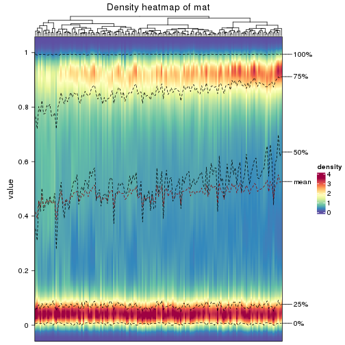
Some values about the hierarchy:
all_nodes(res_rh)
#> [1] "0" "01" "011" "0111" "01111" "01112" "01113" "0112" "0113" "012" "0121" "0122"
#> [13] "013" "02" "021" "0211" "0212" "02121" "02122" "022" "0221" "0222" "023" "03"
#> [25] "031" "0311" "0312" "032" "033" "034" "0341" "0342"
all_leaves(res_rh)
#> [1] "01111" "01112" "01113" "0112" "0113" "0121" "0122" "013" "0211" "02121" "02122" "0221"
#> [13] "0222" "023" "0311" "0312" "032" "033" "0341" "0342"
node_info(res_rh)
#> id best_method depth best_k n_columns n_signatures p_signatures is_leaf
#> 1 0 ATC:skmeans 1 3 155 12771 0.033973 FALSE
#> 2 01 ATC:skmeans 2 3 54 5322 0.014157 FALSE
#> 3 011 ATC:kmeans 3 3 25 5484 0.014588 FALSE
#> 4 0111 ATC:skmeans 4 3 12 3686 0.009805 FALSE
#> 5 01111 not applied 5 NA 7 NA NA TRUE
#> 6 01112 not applied 5 NA 3 NA NA TRUE
#> 7 01113 not applied 5 NA 2 NA NA TRUE
#> 8 0112 not applied 4 NA 10 NA NA TRUE
#> 9 0113 not applied 4 NA 3 NA NA TRUE
#> 10 012 SD:skmeans 3 2 21 2504 0.006661 FALSE
#> 11 0121 ATC:skmeans 4 3 12 287 0.000763 TRUE
#> 12 0122 not applied 4 NA 9 NA NA TRUE
#> 13 013 not applied 3 NA 8 NA NA TRUE
#> 14 02 ATC:kmeans 2 3 60 38327 0.101957 FALSE
#> 15 021 SD:skmeans 3 2 30 3485 0.009271 FALSE
#> 16 0211 ATC:skmeans 4 3 13 958 0.002548 TRUE
#> 17 0212 ATC:skmeans 4 2 17 2238 0.005953 FALSE
#> 18 02121 not applied 5 NA 2 NA NA TRUE
#> 19 02122 ATC:kmeans 5 3 15 603 0.001604 TRUE
#> 20 022 ATC:kmeans 3 2 25 3505 0.009324 FALSE
#> 21 0221 ATC:kmeans 4 2 17 348 0.000926 TRUE
#> 22 0222 not applied 4 NA 8 NA NA TRUE
#> 23 023 not applied 3 NA 5 NA NA TRUE
#> 24 03 ATC:skmeans 2 4 41 29487 0.078441 FALSE
#> 25 031 ATC:skmeans 3 2 19 3476 0.009247 FALSE
#> 26 0311 not applied 4 NA 7 NA NA TRUE
#> 27 0312 ATC:skmeans 4 2 12 292 0.000777 TRUE
#> 28 032 not applied 3 NA 5 NA NA TRUE
#> 29 033 not applied 3 NA 4 NA NA TRUE
#> 30 034 ATC:kmeans 3 2 13 2761 0.007345 FALSE
#> 31 0341 not applied 4 NA 5 NA NA TRUE
#> 32 0342 not applied 4 NA 8 NA NA TRUE
In the output from node_info(), there are the following columns:
id: The node id.best_method: The best method selected.depth: Depth of the node in the hierarchy.best_k: Best number of groups of the partition on that node.n_columns: Number of columns in the submatrix.n_signatures: Number of signatures with the best_k.p_signatures: Proportion of hte signatures in total number of rows in the matrix.is_leaf: Whether the node is a leaf.Labels of nodes are encoded in a special way. The number of digits correspond to the depth of the node in the hierarchy and the value of the digits correspond to the index of the subgroup in the current node, E.g. a label of “012” means the node is the second subgroup of the partition which is the first subgroup of the root node.
Following table shows the best k (number of partitions) for each node in the
partition hierarchy. Clicking on the node name in the table goes to the
corresponding section for the partitioning on that node.
The cola vignette explains the definition of the metrics used for determining the best number of partitions.
suggest_best_k(res_rh)
| Node | Best method | Is leaf | Best k | 1-PAC | Mean silhouette | Concordance | #samples | |
|---|---|---|---|---|---|---|---|---|
| Node0 | ATC:skmeans | 5 | 0.96 | 0.93 | 0.97 | 155 | ** | |
| Node01 | ATC:skmeans | 3 | 0.97 | 0.95 | 0.98 | 54 | ** | |
| Node011 | ATC:kmeans | 3 | 1.00 | 0.97 | 0.97 | 25 | ** | |
| Node0111 | ATC:skmeans | 7 | 0.91 | 0.54 | 0.93 | 12 | * | |
| Node01111-leaf | not applied | ✓ (b) | 7 | |||||
| Node01112-leaf | not applied | ✓ (b) | 3 | |||||
| Node01113-leaf | not applied | ✓ (b) | 2 | |||||
| Node0112-leaf | not applied | ✓ (b) | 10 | |||||
| Node0113-leaf | not applied | ✓ (b) | 3 | |||||
| Node012 | SD:skmeans | 2 | 1.00 | 1.00 | 1.00 | 21 | ** | |
| Node0121-leaf | ATC:skmeans | ✓ (c) | 3 | 1.00 | 1.00 | 1.00 | 12 | ** |
| Node0122-leaf | not applied | ✓ (b) | 9 | |||||
| Node013-leaf | not applied | ✓ (b) | 8 | |||||
| Node02 | ATC:kmeans | 3 | 1.00 | 0.98 | 0.99 | 60 | ** | |
| Node021 | SD:skmeans | 2 | 1.00 | 1.00 | 1.00 | 30 | ** | |
| Node0211-leaf | ATC:skmeans | ✓ (c) | 3 | 0.95 | 0.97 | 0.98 | 13 | * |
| Node0212 | ATC:skmeans | 2 | 1.00 | 0.99 | 1.00 | 17 | ** | |
| Node02121-leaf | not applied | ✓ (b) | 2 | |||||
| Node02122-leaf | ATC:kmeans | ✓ (c) | 3 | 1.00 | 1.00 | 1.00 | 15 | ** |
| Node022 | ATC:kmeans | 2 | 1.00 | 1.00 | 1.00 | 25 | ** | |
| Node0221-leaf | ATC:kmeans | ✓ (c) | 2 | 1.00 | 1.00 | 1.00 | 17 | ** |
| Node0222-leaf | not applied | ✓ (b) | 8 | |||||
| Node023-leaf | not applied | ✓ (b) | 5 | |||||
| Node03 | ATC:skmeans | 5 | 0.92 | 0.95 | 0.97 | 41 | * | |
| Node031 | ATC:skmeans | 4 | 0.90 | 0.91 | 0.97 | 19 | * | |
| Node0311-leaf | not applied | ✓ (b) | 7 | |||||
| Node0312-leaf | ATC:skmeans | ✓ (c) | 2 | 1.00 | 1.00 | 1.00 | 12 | ** |
| Node032-leaf | not applied | ✓ (b) | 5 | |||||
| Node033-leaf | not applied | ✓ (b) | 4 | |||||
| Node034 | ATC:kmeans | 2 | 1.00 | 1.00 | 1.00 | 13 | ** | |
| Node0341-leaf | not applied | ✓ (b) | 5 | |||||
| Node0342-leaf | not applied | ✓ (b) | 8 |
Stop reason: b) Subgroup had too few columns. c) There were too few signatures.
**: 1-PAC > 0.95, *: 1-PAC > 0.9
The nodes of the hierarchy can be merged by setting the merge_node parameters. Here we
control the hierarchy with the min_n_signatures parameter. The value of min_n_signatures is
from node_info().
collect_classes(res_rh, merge_node = merge_node_param(min_n_signatures = 2238))
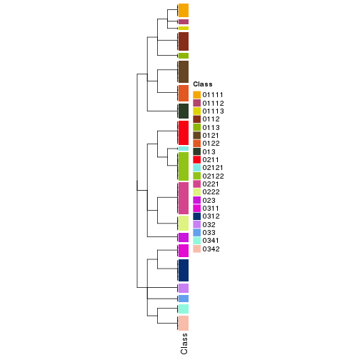
collect_classes(res_rh, merge_node = merge_node_param(min_n_signatures = 2504))
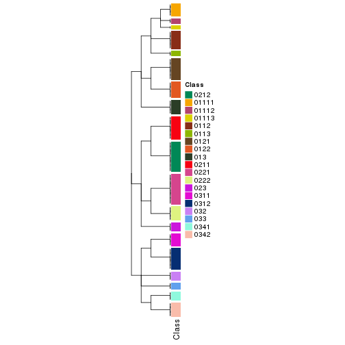
collect_classes(res_rh, merge_node = merge_node_param(min_n_signatures = 2761))
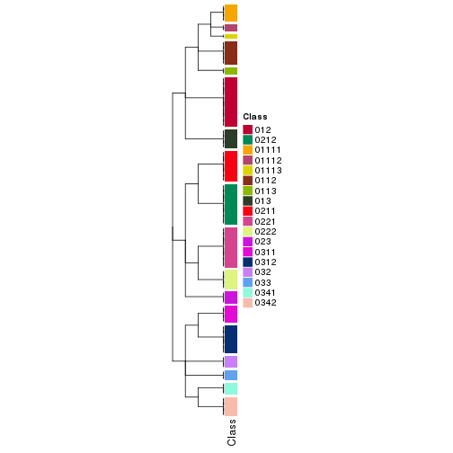
collect_classes(res_rh, merge_node = merge_node_param(min_n_signatures = 3476))
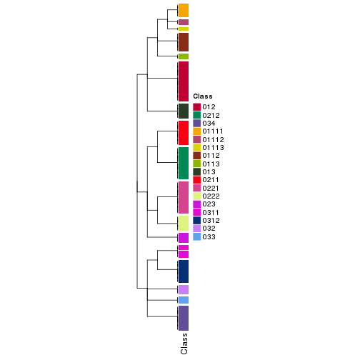
collect_classes(res_rh, merge_node = merge_node_param(min_n_signatures = 3485))

collect_classes(res_rh, merge_node = merge_node_param(min_n_signatures = 3505))
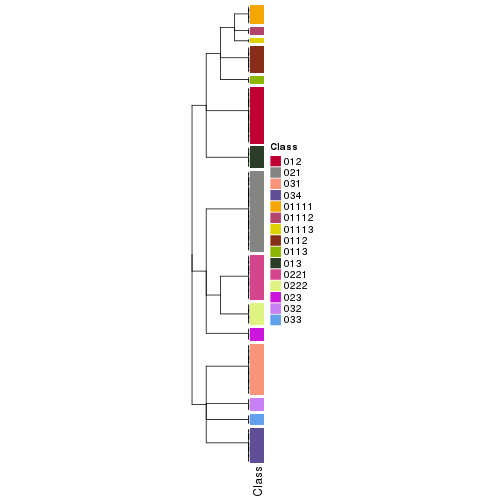
collect_classes(res_rh, merge_node = merge_node_param(min_n_signatures = 3686))
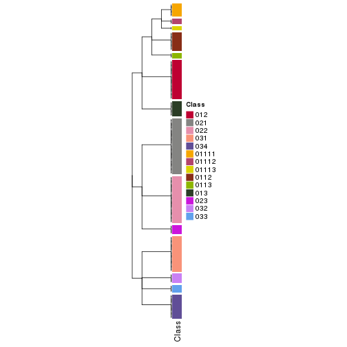
collect_classes(res_rh, merge_node = merge_node_param(min_n_signatures = 5322))

collect_classes(res_rh, merge_node = merge_node_param(min_n_signatures = 5484))
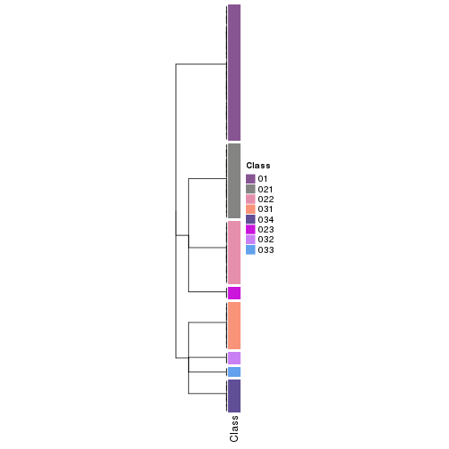
collect_classes(res_rh, merge_node = merge_node_param(min_n_signatures = 12771))

collect_classes(res_rh, merge_node = merge_node_param(min_n_signatures = 29487))
#> Error in max(children_height): invalid 'type' (list) of argument
collect_classes(res_rh, merge_node = merge_node_param(min_n_signatures = 38327))
#> Error in max(children_height): invalid 'type' (list) of argument
Following shows the table of the partitions (You need to click the show/hide code output link to see it).
get_classes(res_rh, merge_node = merge_node_param(min_n_signatures = 2238))
#> TCGA.14.1402.02 TCGA.06.0152.01 TCGA.19.5950.01 TCGA.06.5413.01 TCGA.19.5954.01 TCGA.76.6283.01
#> "0222" "0312" "0222" "0211" "02122" "0222"
#> TCGA.06.5408.01 TCGA.19.A6J4.01 TCGA.06.5856.01 TCGA.32.1980.01 TCGA.14.0862.01 TCGA.14.1402.01
#> "02122" "01111" "0221" "013" "0112" "0222"
#> TCGA.76.6282.01 TCGA.06.A5U1.01 TCGA.RR.A6KB.01 TCGA.06.0152.02 TCGA.76.6286.01 TCGA.76.6664.01
#> "0112" "0112" "013" "0221" "0312" "02122"
#> TCGA.19.0957.02 TCGA.74.6577.01 TCGA.76.6193.01 TCGA.06.5859.01 TCGA.87.5896.01 TCGA.06.5411.01
#> "02122" "0211" "0121" "0312" "0222" "0211"
#> TCGA.14.0740.01 TCGA.14.1450.01 TCGA.76.6657.01 TCGA.06.AABW.11 TCGA.06.6391.01 TCGA.76.6662.01
#> "032" "0122" "0121" "013" "013" "01111"
#> TCGA.06.6701.01 TCGA.14.0736.01 TCGA.74.6573.01 TCGA.19.5955.01 TCGA.76.6656.01 TCGA.06.A5U0.01
#> "023" "0113" "0211" "0112" "0221" "02121"
#> TCGA.74.6584.01 TCGA.06.1804.01 TCGA.19.5952.01 TCGA.19.A6J5.01 TCGA.06.6697.01 TCGA.RR.A6KA.01
#> "02122" "02122" "0211" "033" "01111" "0122"
#> TCGA.06.6388.01 TCGA.19.5953.01 TCGA.19.5958.01 TCGA.19.1389.01 TCGA.41.6646.01 TCGA.28.5211.01
#> "02122" "0121" "0211" "0121" "0122" "0112"
#> TCGA.76.6663.01 TCGA.76.6660.01 TCGA.06.5410.01 TCGA.26.6173.01 TCGA.19.5956.01 TCGA.76.6285.01
#> "0122" "0341" "01112" "0112" "032" "0341"
#> TCGA.14.1043.01 TCGA.14.1034.02 TCGA.06.6698.01 TCGA.76.6191.01 TCGA.81.5911.01 TCGA.06.6695.01
#> "0121" "0222" "0122" "0341" "0121" "0221"
#> TCGA.06.6390.01 TCGA.19.5947.01 TCGA.06.6700.01 TCGA.06.6694.01 TCGA.28.2501.01 TCGA.28.2510.01
#> "0121" "01112" "0121" "0342" "0121" "013"
#> TCGA.06.6699.01 TCGA.19.5959.01 TCGA.06.1806.01 TCGA.06.0650.01 TCGA.76.6661.01 TCGA.19.5960.01
#> "0311" "0311" "0121" "0122" "0211" "0312"
#> TCGA.74.6581.01 TCGA.19.5951.01 TCGA.74.6575.01 TCGA.26.1442.01 TCGA.74.6573.11 TCGA.06.5858.01
#> "0312" "0311" "0122" "023" "013" "0122"
#> TCGA.41.5651.01 TCGA.76.6192.01 TCGA.19.1389.02 TCGA.28.6450.01 TCGA.14.0781.01 TCGA.32.1979.01
#> "0342" "0121" "01111" "0121" "01111" "02122"
#> TCGA.06.A6S1.01 TCGA.OX.A56R.01 TCGA.15.1444.01 TCGA.74.6578.01 TCGA.06.6693.01 TCGA.19.A60I.01
#> "0122" "0211" "013" "0211" "0311" "0312"
#> TCGA.06.6389.01 TCGA.06.5412.01 TCGA.19.0957.01 TCGA.06.A6S0.01 TCGA.RR.A6KC.01 TCGA.14.1395.01
#> "023" "01112" "0342" "0312" "0221" "0312"
#> TCGA.14.0736.02 TCGA.81.5910.01 TCGA.26.6174.01 TCGA.76.6280.01 TCGA.32.5222.01 TCGA.28.5213.01
#> "0112" "0312" "013" "0221" "0312" "01111"
#> TCGA.06.0210.02 TCGA.06.0221.02 TCGA.06.0210.01 TCGA.4W.AA9R.01 TCGA.76.4925.01 TCGA.06.0211.02
#> "0311" "033" "02122" "0341" "0221" "0221"
#> TCGA.26.5135.01 TCGA.06.0211.01 TCGA.26.A7UX.01 TCGA.06.5414.01 TCGA.06.0190.02 TCGA.06.0125.01
#> "0342" "0221" "0312" "0221" "0112" "02122"
#> TCGA.76.4934.01 TCGA.19.4065.02 TCGA.28.5208.01 TCGA.76.4935.01 TCGA.06.0171.02 TCGA.12.5295.01
#> "032" "0112" "0221" "0342" "01111" "0311"
#> TCGA.28.5214.01 TCGA.28.5219.01 TCGA.12.5301.01 TCGA.4W.AA9T.01 TCGA.06.0190.01 TCGA.06.A7TL.01
#> "0221" "0342" "0341" "01113" "0112" "023"
#> TCGA.28.5215.01 TCGA.06.5416.01 TCGA.76.4932.01 TCGA.06.A7TK.01 TCGA.28.5204.01 TCGA.26.5136.01
#> "0342" "02121" "0311" "0221" "0221" "02122"
#> TCGA.06.5417.01 TCGA.26.5132.01 TCGA.12.5299.01 TCGA.19.4065.01 TCGA.28.5218.01 TCGA.76.4931.01
#> "033" "0221" "0222" "0113" "0113" "02122"
#> TCGA.28.5216.01 TCGA.06.0125.02 TCGA.4W.AA9S.01 TCGA.76.4927.01 TCGA.28.5209.01 TCGA.06.5418.01
#> "032" "02122" "0211" "0221" "0222" "02122"
#> TCGA.76.4929.01 TCGA.26.5139.01 TCGA.28.5207.01 TCGA.76.4926.01 TCGA.26.5134.01 TCGA.06.0171.01
#> "0342" "02122" "0211" "0211" "032" "0211"
#> TCGA.06.0221.01 TCGA.28.5220.01 TCGA.76.4928.01 TCGA.06.5415.01 TCGA.26.5133.01
#> "023" "0312" "01113" "0221" "033"
get_classes(res_rh, merge_node = merge_node_param(min_n_signatures = 2504))
#> TCGA.14.1402.02 TCGA.06.0152.01 TCGA.19.5950.01 TCGA.06.5413.01 TCGA.19.5954.01 TCGA.76.6283.01
#> "0222" "0312" "0222" "0211" "0212" "0222"
#> TCGA.06.5408.01 TCGA.19.A6J4.01 TCGA.06.5856.01 TCGA.32.1980.01 TCGA.14.0862.01 TCGA.14.1402.01
#> "0212" "01111" "0221" "013" "0112" "0222"
#> TCGA.76.6282.01 TCGA.06.A5U1.01 TCGA.RR.A6KB.01 TCGA.06.0152.02 TCGA.76.6286.01 TCGA.76.6664.01
#> "0112" "0112" "013" "0221" "0312" "0212"
#> TCGA.19.0957.02 TCGA.74.6577.01 TCGA.76.6193.01 TCGA.06.5859.01 TCGA.87.5896.01 TCGA.06.5411.01
#> "0212" "0211" "0121" "0312" "0222" "0211"
#> TCGA.14.0740.01 TCGA.14.1450.01 TCGA.76.6657.01 TCGA.06.AABW.11 TCGA.06.6391.01 TCGA.76.6662.01
#> "032" "0122" "0121" "013" "013" "01111"
#> TCGA.06.6701.01 TCGA.14.0736.01 TCGA.74.6573.01 TCGA.19.5955.01 TCGA.76.6656.01 TCGA.06.A5U0.01
#> "023" "0113" "0211" "0112" "0221" "0212"
#> TCGA.74.6584.01 TCGA.06.1804.01 TCGA.19.5952.01 TCGA.19.A6J5.01 TCGA.06.6697.01 TCGA.RR.A6KA.01
#> "0212" "0212" "0211" "033" "01111" "0122"
#> TCGA.06.6388.01 TCGA.19.5953.01 TCGA.19.5958.01 TCGA.19.1389.01 TCGA.41.6646.01 TCGA.28.5211.01
#> "0212" "0121" "0211" "0121" "0122" "0112"
#> TCGA.76.6663.01 TCGA.76.6660.01 TCGA.06.5410.01 TCGA.26.6173.01 TCGA.19.5956.01 TCGA.76.6285.01
#> "0122" "0341" "01112" "0112" "032" "0341"
#> TCGA.14.1043.01 TCGA.14.1034.02 TCGA.06.6698.01 TCGA.76.6191.01 TCGA.81.5911.01 TCGA.06.6695.01
#> "0121" "0222" "0122" "0341" "0121" "0221"
#> TCGA.06.6390.01 TCGA.19.5947.01 TCGA.06.6700.01 TCGA.06.6694.01 TCGA.28.2501.01 TCGA.28.2510.01
#> "0121" "01112" "0121" "0342" "0121" "013"
#> TCGA.06.6699.01 TCGA.19.5959.01 TCGA.06.1806.01 TCGA.06.0650.01 TCGA.76.6661.01 TCGA.19.5960.01
#> "0311" "0311" "0121" "0122" "0211" "0312"
#> TCGA.74.6581.01 TCGA.19.5951.01 TCGA.74.6575.01 TCGA.26.1442.01 TCGA.74.6573.11 TCGA.06.5858.01
#> "0312" "0311" "0122" "023" "013" "0122"
#> TCGA.41.5651.01 TCGA.76.6192.01 TCGA.19.1389.02 TCGA.28.6450.01 TCGA.14.0781.01 TCGA.32.1979.01
#> "0342" "0121" "01111" "0121" "01111" "0212"
#> TCGA.06.A6S1.01 TCGA.OX.A56R.01 TCGA.15.1444.01 TCGA.74.6578.01 TCGA.06.6693.01 TCGA.19.A60I.01
#> "0122" "0211" "013" "0211" "0311" "0312"
#> TCGA.06.6389.01 TCGA.06.5412.01 TCGA.19.0957.01 TCGA.06.A6S0.01 TCGA.RR.A6KC.01 TCGA.14.1395.01
#> "023" "01112" "0342" "0312" "0221" "0312"
#> TCGA.14.0736.02 TCGA.81.5910.01 TCGA.26.6174.01 TCGA.76.6280.01 TCGA.32.5222.01 TCGA.28.5213.01
#> "0112" "0312" "013" "0221" "0312" "01111"
#> TCGA.06.0210.02 TCGA.06.0221.02 TCGA.06.0210.01 TCGA.4W.AA9R.01 TCGA.76.4925.01 TCGA.06.0211.02
#> "0311" "033" "0212" "0341" "0221" "0221"
#> TCGA.26.5135.01 TCGA.06.0211.01 TCGA.26.A7UX.01 TCGA.06.5414.01 TCGA.06.0190.02 TCGA.06.0125.01
#> "0342" "0221" "0312" "0221" "0112" "0212"
#> TCGA.76.4934.01 TCGA.19.4065.02 TCGA.28.5208.01 TCGA.76.4935.01 TCGA.06.0171.02 TCGA.12.5295.01
#> "032" "0112" "0221" "0342" "01111" "0311"
#> TCGA.28.5214.01 TCGA.28.5219.01 TCGA.12.5301.01 TCGA.4W.AA9T.01 TCGA.06.0190.01 TCGA.06.A7TL.01
#> "0221" "0342" "0341" "01113" "0112" "023"
#> TCGA.28.5215.01 TCGA.06.5416.01 TCGA.76.4932.01 TCGA.06.A7TK.01 TCGA.28.5204.01 TCGA.26.5136.01
#> "0342" "0212" "0311" "0221" "0221" "0212"
#> TCGA.06.5417.01 TCGA.26.5132.01 TCGA.12.5299.01 TCGA.19.4065.01 TCGA.28.5218.01 TCGA.76.4931.01
#> "033" "0221" "0222" "0113" "0113" "0212"
#> TCGA.28.5216.01 TCGA.06.0125.02 TCGA.4W.AA9S.01 TCGA.76.4927.01 TCGA.28.5209.01 TCGA.06.5418.01
#> "032" "0212" "0211" "0221" "0222" "0212"
#> TCGA.76.4929.01 TCGA.26.5139.01 TCGA.28.5207.01 TCGA.76.4926.01 TCGA.26.5134.01 TCGA.06.0171.01
#> "0342" "0212" "0211" "0211" "032" "0211"
#> TCGA.06.0221.01 TCGA.28.5220.01 TCGA.76.4928.01 TCGA.06.5415.01 TCGA.26.5133.01
#> "023" "0312" "01113" "0221" "033"
get_classes(res_rh, merge_node = merge_node_param(min_n_signatures = 2761))
#> TCGA.14.1402.02 TCGA.06.0152.01 TCGA.19.5950.01 TCGA.06.5413.01 TCGA.19.5954.01 TCGA.76.6283.01
#> "0222" "0312" "0222" "0211" "0212" "0222"
#> TCGA.06.5408.01 TCGA.19.A6J4.01 TCGA.06.5856.01 TCGA.32.1980.01 TCGA.14.0862.01 TCGA.14.1402.01
#> "0212" "01111" "0221" "013" "0112" "0222"
#> TCGA.76.6282.01 TCGA.06.A5U1.01 TCGA.RR.A6KB.01 TCGA.06.0152.02 TCGA.76.6286.01 TCGA.76.6664.01
#> "0112" "0112" "013" "0221" "0312" "0212"
#> TCGA.19.0957.02 TCGA.74.6577.01 TCGA.76.6193.01 TCGA.06.5859.01 TCGA.87.5896.01 TCGA.06.5411.01
#> "0212" "0211" "012" "0312" "0222" "0211"
#> TCGA.14.0740.01 TCGA.14.1450.01 TCGA.76.6657.01 TCGA.06.AABW.11 TCGA.06.6391.01 TCGA.76.6662.01
#> "032" "012" "012" "013" "013" "01111"
#> TCGA.06.6701.01 TCGA.14.0736.01 TCGA.74.6573.01 TCGA.19.5955.01 TCGA.76.6656.01 TCGA.06.A5U0.01
#> "023" "0113" "0211" "0112" "0221" "0212"
#> TCGA.74.6584.01 TCGA.06.1804.01 TCGA.19.5952.01 TCGA.19.A6J5.01 TCGA.06.6697.01 TCGA.RR.A6KA.01
#> "0212" "0212" "0211" "033" "01111" "012"
#> TCGA.06.6388.01 TCGA.19.5953.01 TCGA.19.5958.01 TCGA.19.1389.01 TCGA.41.6646.01 TCGA.28.5211.01
#> "0212" "012" "0211" "012" "012" "0112"
#> TCGA.76.6663.01 TCGA.76.6660.01 TCGA.06.5410.01 TCGA.26.6173.01 TCGA.19.5956.01 TCGA.76.6285.01
#> "012" "0341" "01112" "0112" "032" "0341"
#> TCGA.14.1043.01 TCGA.14.1034.02 TCGA.06.6698.01 TCGA.76.6191.01 TCGA.81.5911.01 TCGA.06.6695.01
#> "012" "0222" "012" "0341" "012" "0221"
#> TCGA.06.6390.01 TCGA.19.5947.01 TCGA.06.6700.01 TCGA.06.6694.01 TCGA.28.2501.01 TCGA.28.2510.01
#> "012" "01112" "012" "0342" "012" "013"
#> TCGA.06.6699.01 TCGA.19.5959.01 TCGA.06.1806.01 TCGA.06.0650.01 TCGA.76.6661.01 TCGA.19.5960.01
#> "0311" "0311" "012" "012" "0211" "0312"
#> TCGA.74.6581.01 TCGA.19.5951.01 TCGA.74.6575.01 TCGA.26.1442.01 TCGA.74.6573.11 TCGA.06.5858.01
#> "0312" "0311" "012" "023" "013" "012"
#> TCGA.41.5651.01 TCGA.76.6192.01 TCGA.19.1389.02 TCGA.28.6450.01 TCGA.14.0781.01 TCGA.32.1979.01
#> "0342" "012" "01111" "012" "01111" "0212"
#> TCGA.06.A6S1.01 TCGA.OX.A56R.01 TCGA.15.1444.01 TCGA.74.6578.01 TCGA.06.6693.01 TCGA.19.A60I.01
#> "012" "0211" "013" "0211" "0311" "0312"
#> TCGA.06.6389.01 TCGA.06.5412.01 TCGA.19.0957.01 TCGA.06.A6S0.01 TCGA.RR.A6KC.01 TCGA.14.1395.01
#> "023" "01112" "0342" "0312" "0221" "0312"
#> TCGA.14.0736.02 TCGA.81.5910.01 TCGA.26.6174.01 TCGA.76.6280.01 TCGA.32.5222.01 TCGA.28.5213.01
#> "0112" "0312" "013" "0221" "0312" "01111"
#> TCGA.06.0210.02 TCGA.06.0221.02 TCGA.06.0210.01 TCGA.4W.AA9R.01 TCGA.76.4925.01 TCGA.06.0211.02
#> "0311" "033" "0212" "0341" "0221" "0221"
#> TCGA.26.5135.01 TCGA.06.0211.01 TCGA.26.A7UX.01 TCGA.06.5414.01 TCGA.06.0190.02 TCGA.06.0125.01
#> "0342" "0221" "0312" "0221" "0112" "0212"
#> TCGA.76.4934.01 TCGA.19.4065.02 TCGA.28.5208.01 TCGA.76.4935.01 TCGA.06.0171.02 TCGA.12.5295.01
#> "032" "0112" "0221" "0342" "01111" "0311"
#> TCGA.28.5214.01 TCGA.28.5219.01 TCGA.12.5301.01 TCGA.4W.AA9T.01 TCGA.06.0190.01 TCGA.06.A7TL.01
#> "0221" "0342" "0341" "01113" "0112" "023"
#> TCGA.28.5215.01 TCGA.06.5416.01 TCGA.76.4932.01 TCGA.06.A7TK.01 TCGA.28.5204.01 TCGA.26.5136.01
#> "0342" "0212" "0311" "0221" "0221" "0212"
#> TCGA.06.5417.01 TCGA.26.5132.01 TCGA.12.5299.01 TCGA.19.4065.01 TCGA.28.5218.01 TCGA.76.4931.01
#> "033" "0221" "0222" "0113" "0113" "0212"
#> TCGA.28.5216.01 TCGA.06.0125.02 TCGA.4W.AA9S.01 TCGA.76.4927.01 TCGA.28.5209.01 TCGA.06.5418.01
#> "032" "0212" "0211" "0221" "0222" "0212"
#> TCGA.76.4929.01 TCGA.26.5139.01 TCGA.28.5207.01 TCGA.76.4926.01 TCGA.26.5134.01 TCGA.06.0171.01
#> "0342" "0212" "0211" "0211" "032" "0211"
#> TCGA.06.0221.01 TCGA.28.5220.01 TCGA.76.4928.01 TCGA.06.5415.01 TCGA.26.5133.01
#> "023" "0312" "01113" "0221" "033"
get_classes(res_rh, merge_node = merge_node_param(min_n_signatures = 3476))
#> TCGA.14.1402.02 TCGA.06.0152.01 TCGA.19.5950.01 TCGA.06.5413.01 TCGA.19.5954.01 TCGA.76.6283.01
#> "0222" "0312" "0222" "0211" "0212" "0222"
#> TCGA.06.5408.01 TCGA.19.A6J4.01 TCGA.06.5856.01 TCGA.32.1980.01 TCGA.14.0862.01 TCGA.14.1402.01
#> "0212" "01111" "0221" "013" "0112" "0222"
#> TCGA.76.6282.01 TCGA.06.A5U1.01 TCGA.RR.A6KB.01 TCGA.06.0152.02 TCGA.76.6286.01 TCGA.76.6664.01
#> "0112" "0112" "013" "0221" "0312" "0212"
#> TCGA.19.0957.02 TCGA.74.6577.01 TCGA.76.6193.01 TCGA.06.5859.01 TCGA.87.5896.01 TCGA.06.5411.01
#> "0212" "0211" "012" "0312" "0222" "0211"
#> TCGA.14.0740.01 TCGA.14.1450.01 TCGA.76.6657.01 TCGA.06.AABW.11 TCGA.06.6391.01 TCGA.76.6662.01
#> "032" "012" "012" "013" "013" "01111"
#> TCGA.06.6701.01 TCGA.14.0736.01 TCGA.74.6573.01 TCGA.19.5955.01 TCGA.76.6656.01 TCGA.06.A5U0.01
#> "023" "0113" "0211" "0112" "0221" "0212"
#> TCGA.74.6584.01 TCGA.06.1804.01 TCGA.19.5952.01 TCGA.19.A6J5.01 TCGA.06.6697.01 TCGA.RR.A6KA.01
#> "0212" "0212" "0211" "033" "01111" "012"
#> TCGA.06.6388.01 TCGA.19.5953.01 TCGA.19.5958.01 TCGA.19.1389.01 TCGA.41.6646.01 TCGA.28.5211.01
#> "0212" "012" "0211" "012" "012" "0112"
#> TCGA.76.6663.01 TCGA.76.6660.01 TCGA.06.5410.01 TCGA.26.6173.01 TCGA.19.5956.01 TCGA.76.6285.01
#> "012" "034" "01112" "0112" "032" "034"
#> TCGA.14.1043.01 TCGA.14.1034.02 TCGA.06.6698.01 TCGA.76.6191.01 TCGA.81.5911.01 TCGA.06.6695.01
#> "012" "0222" "012" "034" "012" "0221"
#> TCGA.06.6390.01 TCGA.19.5947.01 TCGA.06.6700.01 TCGA.06.6694.01 TCGA.28.2501.01 TCGA.28.2510.01
#> "012" "01112" "012" "034" "012" "013"
#> TCGA.06.6699.01 TCGA.19.5959.01 TCGA.06.1806.01 TCGA.06.0650.01 TCGA.76.6661.01 TCGA.19.5960.01
#> "0311" "0311" "012" "012" "0211" "0312"
#> TCGA.74.6581.01 TCGA.19.5951.01 TCGA.74.6575.01 TCGA.26.1442.01 TCGA.74.6573.11 TCGA.06.5858.01
#> "0312" "0311" "012" "023" "013" "012"
#> TCGA.41.5651.01 TCGA.76.6192.01 TCGA.19.1389.02 TCGA.28.6450.01 TCGA.14.0781.01 TCGA.32.1979.01
#> "034" "012" "01111" "012" "01111" "0212"
#> TCGA.06.A6S1.01 TCGA.OX.A56R.01 TCGA.15.1444.01 TCGA.74.6578.01 TCGA.06.6693.01 TCGA.19.A60I.01
#> "012" "0211" "013" "0211" "0311" "0312"
#> TCGA.06.6389.01 TCGA.06.5412.01 TCGA.19.0957.01 TCGA.06.A6S0.01 TCGA.RR.A6KC.01 TCGA.14.1395.01
#> "023" "01112" "034" "0312" "0221" "0312"
#> TCGA.14.0736.02 TCGA.81.5910.01 TCGA.26.6174.01 TCGA.76.6280.01 TCGA.32.5222.01 TCGA.28.5213.01
#> "0112" "0312" "013" "0221" "0312" "01111"
#> TCGA.06.0210.02 TCGA.06.0221.02 TCGA.06.0210.01 TCGA.4W.AA9R.01 TCGA.76.4925.01 TCGA.06.0211.02
#> "0311" "033" "0212" "034" "0221" "0221"
#> TCGA.26.5135.01 TCGA.06.0211.01 TCGA.26.A7UX.01 TCGA.06.5414.01 TCGA.06.0190.02 TCGA.06.0125.01
#> "034" "0221" "0312" "0221" "0112" "0212"
#> TCGA.76.4934.01 TCGA.19.4065.02 TCGA.28.5208.01 TCGA.76.4935.01 TCGA.06.0171.02 TCGA.12.5295.01
#> "032" "0112" "0221" "034" "01111" "0311"
#> TCGA.28.5214.01 TCGA.28.5219.01 TCGA.12.5301.01 TCGA.4W.AA9T.01 TCGA.06.0190.01 TCGA.06.A7TL.01
#> "0221" "034" "034" "01113" "0112" "023"
#> TCGA.28.5215.01 TCGA.06.5416.01 TCGA.76.4932.01 TCGA.06.A7TK.01 TCGA.28.5204.01 TCGA.26.5136.01
#> "034" "0212" "0311" "0221" "0221" "0212"
#> TCGA.06.5417.01 TCGA.26.5132.01 TCGA.12.5299.01 TCGA.19.4065.01 TCGA.28.5218.01 TCGA.76.4931.01
#> "033" "0221" "0222" "0113" "0113" "0212"
#> TCGA.28.5216.01 TCGA.06.0125.02 TCGA.4W.AA9S.01 TCGA.76.4927.01 TCGA.28.5209.01 TCGA.06.5418.01
#> "032" "0212" "0211" "0221" "0222" "0212"
#> TCGA.76.4929.01 TCGA.26.5139.01 TCGA.28.5207.01 TCGA.76.4926.01 TCGA.26.5134.01 TCGA.06.0171.01
#> "034" "0212" "0211" "0211" "032" "0211"
#> TCGA.06.0221.01 TCGA.28.5220.01 TCGA.76.4928.01 TCGA.06.5415.01 TCGA.26.5133.01
#> "023" "0312" "01113" "0221" "033"
get_classes(res_rh, merge_node = merge_node_param(min_n_signatures = 3485))
#> TCGA.14.1402.02 TCGA.06.0152.01 TCGA.19.5950.01 TCGA.06.5413.01 TCGA.19.5954.01 TCGA.76.6283.01
#> "0222" "031" "0222" "0211" "0212" "0222"
#> TCGA.06.5408.01 TCGA.19.A6J4.01 TCGA.06.5856.01 TCGA.32.1980.01 TCGA.14.0862.01 TCGA.14.1402.01
#> "0212" "01111" "0221" "013" "0112" "0222"
#> TCGA.76.6282.01 TCGA.06.A5U1.01 TCGA.RR.A6KB.01 TCGA.06.0152.02 TCGA.76.6286.01 TCGA.76.6664.01
#> "0112" "0112" "013" "0221" "031" "0212"
#> TCGA.19.0957.02 TCGA.74.6577.01 TCGA.76.6193.01 TCGA.06.5859.01 TCGA.87.5896.01 TCGA.06.5411.01
#> "0212" "0211" "012" "031" "0222" "0211"
#> TCGA.14.0740.01 TCGA.14.1450.01 TCGA.76.6657.01 TCGA.06.AABW.11 TCGA.06.6391.01 TCGA.76.6662.01
#> "032" "012" "012" "013" "013" "01111"
#> TCGA.06.6701.01 TCGA.14.0736.01 TCGA.74.6573.01 TCGA.19.5955.01 TCGA.76.6656.01 TCGA.06.A5U0.01
#> "023" "0113" "0211" "0112" "0221" "0212"
#> TCGA.74.6584.01 TCGA.06.1804.01 TCGA.19.5952.01 TCGA.19.A6J5.01 TCGA.06.6697.01 TCGA.RR.A6KA.01
#> "0212" "0212" "0211" "033" "01111" "012"
#> TCGA.06.6388.01 TCGA.19.5953.01 TCGA.19.5958.01 TCGA.19.1389.01 TCGA.41.6646.01 TCGA.28.5211.01
#> "0212" "012" "0211" "012" "012" "0112"
#> TCGA.76.6663.01 TCGA.76.6660.01 TCGA.06.5410.01 TCGA.26.6173.01 TCGA.19.5956.01 TCGA.76.6285.01
#> "012" "034" "01112" "0112" "032" "034"
#> TCGA.14.1043.01 TCGA.14.1034.02 TCGA.06.6698.01 TCGA.76.6191.01 TCGA.81.5911.01 TCGA.06.6695.01
#> "012" "0222" "012" "034" "012" "0221"
#> TCGA.06.6390.01 TCGA.19.5947.01 TCGA.06.6700.01 TCGA.06.6694.01 TCGA.28.2501.01 TCGA.28.2510.01
#> "012" "01112" "012" "034" "012" "013"
#> TCGA.06.6699.01 TCGA.19.5959.01 TCGA.06.1806.01 TCGA.06.0650.01 TCGA.76.6661.01 TCGA.19.5960.01
#> "031" "031" "012" "012" "0211" "031"
#> TCGA.74.6581.01 TCGA.19.5951.01 TCGA.74.6575.01 TCGA.26.1442.01 TCGA.74.6573.11 TCGA.06.5858.01
#> "031" "031" "012" "023" "013" "012"
#> TCGA.41.5651.01 TCGA.76.6192.01 TCGA.19.1389.02 TCGA.28.6450.01 TCGA.14.0781.01 TCGA.32.1979.01
#> "034" "012" "01111" "012" "01111" "0212"
#> TCGA.06.A6S1.01 TCGA.OX.A56R.01 TCGA.15.1444.01 TCGA.74.6578.01 TCGA.06.6693.01 TCGA.19.A60I.01
#> "012" "0211" "013" "0211" "031" "031"
#> TCGA.06.6389.01 TCGA.06.5412.01 TCGA.19.0957.01 TCGA.06.A6S0.01 TCGA.RR.A6KC.01 TCGA.14.1395.01
#> "023" "01112" "034" "031" "0221" "031"
#> TCGA.14.0736.02 TCGA.81.5910.01 TCGA.26.6174.01 TCGA.76.6280.01 TCGA.32.5222.01 TCGA.28.5213.01
#> "0112" "031" "013" "0221" "031" "01111"
#> TCGA.06.0210.02 TCGA.06.0221.02 TCGA.06.0210.01 TCGA.4W.AA9R.01 TCGA.76.4925.01 TCGA.06.0211.02
#> "031" "033" "0212" "034" "0221" "0221"
#> TCGA.26.5135.01 TCGA.06.0211.01 TCGA.26.A7UX.01 TCGA.06.5414.01 TCGA.06.0190.02 TCGA.06.0125.01
#> "034" "0221" "031" "0221" "0112" "0212"
#> TCGA.76.4934.01 TCGA.19.4065.02 TCGA.28.5208.01 TCGA.76.4935.01 TCGA.06.0171.02 TCGA.12.5295.01
#> "032" "0112" "0221" "034" "01111" "031"
#> TCGA.28.5214.01 TCGA.28.5219.01 TCGA.12.5301.01 TCGA.4W.AA9T.01 TCGA.06.0190.01 TCGA.06.A7TL.01
#> "0221" "034" "034" "01113" "0112" "023"
#> TCGA.28.5215.01 TCGA.06.5416.01 TCGA.76.4932.01 TCGA.06.A7TK.01 TCGA.28.5204.01 TCGA.26.5136.01
#> "034" "0212" "031" "0221" "0221" "0212"
#> TCGA.06.5417.01 TCGA.26.5132.01 TCGA.12.5299.01 TCGA.19.4065.01 TCGA.28.5218.01 TCGA.76.4931.01
#> "033" "0221" "0222" "0113" "0113" "0212"
#> TCGA.28.5216.01 TCGA.06.0125.02 TCGA.4W.AA9S.01 TCGA.76.4927.01 TCGA.28.5209.01 TCGA.06.5418.01
#> "032" "0212" "0211" "0221" "0222" "0212"
#> TCGA.76.4929.01 TCGA.26.5139.01 TCGA.28.5207.01 TCGA.76.4926.01 TCGA.26.5134.01 TCGA.06.0171.01
#> "034" "0212" "0211" "0211" "032" "0211"
#> TCGA.06.0221.01 TCGA.28.5220.01 TCGA.76.4928.01 TCGA.06.5415.01 TCGA.26.5133.01
#> "023" "031" "01113" "0221" "033"
get_classes(res_rh, merge_node = merge_node_param(min_n_signatures = 3505))
#> TCGA.14.1402.02 TCGA.06.0152.01 TCGA.19.5950.01 TCGA.06.5413.01 TCGA.19.5954.01 TCGA.76.6283.01
#> "0222" "031" "0222" "021" "021" "0222"
#> TCGA.06.5408.01 TCGA.19.A6J4.01 TCGA.06.5856.01 TCGA.32.1980.01 TCGA.14.0862.01 TCGA.14.1402.01
#> "021" "01111" "0221" "013" "0112" "0222"
#> TCGA.76.6282.01 TCGA.06.A5U1.01 TCGA.RR.A6KB.01 TCGA.06.0152.02 TCGA.76.6286.01 TCGA.76.6664.01
#> "0112" "0112" "013" "0221" "031" "021"
#> TCGA.19.0957.02 TCGA.74.6577.01 TCGA.76.6193.01 TCGA.06.5859.01 TCGA.87.5896.01 TCGA.06.5411.01
#> "021" "021" "012" "031" "0222" "021"
#> TCGA.14.0740.01 TCGA.14.1450.01 TCGA.76.6657.01 TCGA.06.AABW.11 TCGA.06.6391.01 TCGA.76.6662.01
#> "032" "012" "012" "013" "013" "01111"
#> TCGA.06.6701.01 TCGA.14.0736.01 TCGA.74.6573.01 TCGA.19.5955.01 TCGA.76.6656.01 TCGA.06.A5U0.01
#> "023" "0113" "021" "0112" "0221" "021"
#> TCGA.74.6584.01 TCGA.06.1804.01 TCGA.19.5952.01 TCGA.19.A6J5.01 TCGA.06.6697.01 TCGA.RR.A6KA.01
#> "021" "021" "021" "033" "01111" "012"
#> TCGA.06.6388.01 TCGA.19.5953.01 TCGA.19.5958.01 TCGA.19.1389.01 TCGA.41.6646.01 TCGA.28.5211.01
#> "021" "012" "021" "012" "012" "0112"
#> TCGA.76.6663.01 TCGA.76.6660.01 TCGA.06.5410.01 TCGA.26.6173.01 TCGA.19.5956.01 TCGA.76.6285.01
#> "012" "034" "01112" "0112" "032" "034"
#> TCGA.14.1043.01 TCGA.14.1034.02 TCGA.06.6698.01 TCGA.76.6191.01 TCGA.81.5911.01 TCGA.06.6695.01
#> "012" "0222" "012" "034" "012" "0221"
#> TCGA.06.6390.01 TCGA.19.5947.01 TCGA.06.6700.01 TCGA.06.6694.01 TCGA.28.2501.01 TCGA.28.2510.01
#> "012" "01112" "012" "034" "012" "013"
#> TCGA.06.6699.01 TCGA.19.5959.01 TCGA.06.1806.01 TCGA.06.0650.01 TCGA.76.6661.01 TCGA.19.5960.01
#> "031" "031" "012" "012" "021" "031"
#> TCGA.74.6581.01 TCGA.19.5951.01 TCGA.74.6575.01 TCGA.26.1442.01 TCGA.74.6573.11 TCGA.06.5858.01
#> "031" "031" "012" "023" "013" "012"
#> TCGA.41.5651.01 TCGA.76.6192.01 TCGA.19.1389.02 TCGA.28.6450.01 TCGA.14.0781.01 TCGA.32.1979.01
#> "034" "012" "01111" "012" "01111" "021"
#> TCGA.06.A6S1.01 TCGA.OX.A56R.01 TCGA.15.1444.01 TCGA.74.6578.01 TCGA.06.6693.01 TCGA.19.A60I.01
#> "012" "021" "013" "021" "031" "031"
#> TCGA.06.6389.01 TCGA.06.5412.01 TCGA.19.0957.01 TCGA.06.A6S0.01 TCGA.RR.A6KC.01 TCGA.14.1395.01
#> "023" "01112" "034" "031" "0221" "031"
#> TCGA.14.0736.02 TCGA.81.5910.01 TCGA.26.6174.01 TCGA.76.6280.01 TCGA.32.5222.01 TCGA.28.5213.01
#> "0112" "031" "013" "0221" "031" "01111"
#> TCGA.06.0210.02 TCGA.06.0221.02 TCGA.06.0210.01 TCGA.4W.AA9R.01 TCGA.76.4925.01 TCGA.06.0211.02
#> "031" "033" "021" "034" "0221" "0221"
#> TCGA.26.5135.01 TCGA.06.0211.01 TCGA.26.A7UX.01 TCGA.06.5414.01 TCGA.06.0190.02 TCGA.06.0125.01
#> "034" "0221" "031" "0221" "0112" "021"
#> TCGA.76.4934.01 TCGA.19.4065.02 TCGA.28.5208.01 TCGA.76.4935.01 TCGA.06.0171.02 TCGA.12.5295.01
#> "032" "0112" "0221" "034" "01111" "031"
#> TCGA.28.5214.01 TCGA.28.5219.01 TCGA.12.5301.01 TCGA.4W.AA9T.01 TCGA.06.0190.01 TCGA.06.A7TL.01
#> "0221" "034" "034" "01113" "0112" "023"
#> TCGA.28.5215.01 TCGA.06.5416.01 TCGA.76.4932.01 TCGA.06.A7TK.01 TCGA.28.5204.01 TCGA.26.5136.01
#> "034" "021" "031" "0221" "0221" "021"
#> TCGA.06.5417.01 TCGA.26.5132.01 TCGA.12.5299.01 TCGA.19.4065.01 TCGA.28.5218.01 TCGA.76.4931.01
#> "033" "0221" "0222" "0113" "0113" "021"
#> TCGA.28.5216.01 TCGA.06.0125.02 TCGA.4W.AA9S.01 TCGA.76.4927.01 TCGA.28.5209.01 TCGA.06.5418.01
#> "032" "021" "021" "0221" "0222" "021"
#> TCGA.76.4929.01 TCGA.26.5139.01 TCGA.28.5207.01 TCGA.76.4926.01 TCGA.26.5134.01 TCGA.06.0171.01
#> "034" "021" "021" "021" "032" "021"
#> TCGA.06.0221.01 TCGA.28.5220.01 TCGA.76.4928.01 TCGA.06.5415.01 TCGA.26.5133.01
#> "023" "031" "01113" "0221" "033"
get_classes(res_rh, merge_node = merge_node_param(min_n_signatures = 3686))
#> TCGA.14.1402.02 TCGA.06.0152.01 TCGA.19.5950.01 TCGA.06.5413.01 TCGA.19.5954.01 TCGA.76.6283.01
#> "022" "031" "022" "021" "021" "022"
#> TCGA.06.5408.01 TCGA.19.A6J4.01 TCGA.06.5856.01 TCGA.32.1980.01 TCGA.14.0862.01 TCGA.14.1402.01
#> "021" "01111" "022" "013" "0112" "022"
#> TCGA.76.6282.01 TCGA.06.A5U1.01 TCGA.RR.A6KB.01 TCGA.06.0152.02 TCGA.76.6286.01 TCGA.76.6664.01
#> "0112" "0112" "013" "022" "031" "021"
#> TCGA.19.0957.02 TCGA.74.6577.01 TCGA.76.6193.01 TCGA.06.5859.01 TCGA.87.5896.01 TCGA.06.5411.01
#> "021" "021" "012" "031" "022" "021"
#> TCGA.14.0740.01 TCGA.14.1450.01 TCGA.76.6657.01 TCGA.06.AABW.11 TCGA.06.6391.01 TCGA.76.6662.01
#> "032" "012" "012" "013" "013" "01111"
#> TCGA.06.6701.01 TCGA.14.0736.01 TCGA.74.6573.01 TCGA.19.5955.01 TCGA.76.6656.01 TCGA.06.A5U0.01
#> "023" "0113" "021" "0112" "022" "021"
#> TCGA.74.6584.01 TCGA.06.1804.01 TCGA.19.5952.01 TCGA.19.A6J5.01 TCGA.06.6697.01 TCGA.RR.A6KA.01
#> "021" "021" "021" "033" "01111" "012"
#> TCGA.06.6388.01 TCGA.19.5953.01 TCGA.19.5958.01 TCGA.19.1389.01 TCGA.41.6646.01 TCGA.28.5211.01
#> "021" "012" "021" "012" "012" "0112"
#> TCGA.76.6663.01 TCGA.76.6660.01 TCGA.06.5410.01 TCGA.26.6173.01 TCGA.19.5956.01 TCGA.76.6285.01
#> "012" "034" "01112" "0112" "032" "034"
#> TCGA.14.1043.01 TCGA.14.1034.02 TCGA.06.6698.01 TCGA.76.6191.01 TCGA.81.5911.01 TCGA.06.6695.01
#> "012" "022" "012" "034" "012" "022"
#> TCGA.06.6390.01 TCGA.19.5947.01 TCGA.06.6700.01 TCGA.06.6694.01 TCGA.28.2501.01 TCGA.28.2510.01
#> "012" "01112" "012" "034" "012" "013"
#> TCGA.06.6699.01 TCGA.19.5959.01 TCGA.06.1806.01 TCGA.06.0650.01 TCGA.76.6661.01 TCGA.19.5960.01
#> "031" "031" "012" "012" "021" "031"
#> TCGA.74.6581.01 TCGA.19.5951.01 TCGA.74.6575.01 TCGA.26.1442.01 TCGA.74.6573.11 TCGA.06.5858.01
#> "031" "031" "012" "023" "013" "012"
#> TCGA.41.5651.01 TCGA.76.6192.01 TCGA.19.1389.02 TCGA.28.6450.01 TCGA.14.0781.01 TCGA.32.1979.01
#> "034" "012" "01111" "012" "01111" "021"
#> TCGA.06.A6S1.01 TCGA.OX.A56R.01 TCGA.15.1444.01 TCGA.74.6578.01 TCGA.06.6693.01 TCGA.19.A60I.01
#> "012" "021" "013" "021" "031" "031"
#> TCGA.06.6389.01 TCGA.06.5412.01 TCGA.19.0957.01 TCGA.06.A6S0.01 TCGA.RR.A6KC.01 TCGA.14.1395.01
#> "023" "01112" "034" "031" "022" "031"
#> TCGA.14.0736.02 TCGA.81.5910.01 TCGA.26.6174.01 TCGA.76.6280.01 TCGA.32.5222.01 TCGA.28.5213.01
#> "0112" "031" "013" "022" "031" "01111"
#> TCGA.06.0210.02 TCGA.06.0221.02 TCGA.06.0210.01 TCGA.4W.AA9R.01 TCGA.76.4925.01 TCGA.06.0211.02
#> "031" "033" "021" "034" "022" "022"
#> TCGA.26.5135.01 TCGA.06.0211.01 TCGA.26.A7UX.01 TCGA.06.5414.01 TCGA.06.0190.02 TCGA.06.0125.01
#> "034" "022" "031" "022" "0112" "021"
#> TCGA.76.4934.01 TCGA.19.4065.02 TCGA.28.5208.01 TCGA.76.4935.01 TCGA.06.0171.02 TCGA.12.5295.01
#> "032" "0112" "022" "034" "01111" "031"
#> TCGA.28.5214.01 TCGA.28.5219.01 TCGA.12.5301.01 TCGA.4W.AA9T.01 TCGA.06.0190.01 TCGA.06.A7TL.01
#> "022" "034" "034" "01113" "0112" "023"
#> TCGA.28.5215.01 TCGA.06.5416.01 TCGA.76.4932.01 TCGA.06.A7TK.01 TCGA.28.5204.01 TCGA.26.5136.01
#> "034" "021" "031" "022" "022" "021"
#> TCGA.06.5417.01 TCGA.26.5132.01 TCGA.12.5299.01 TCGA.19.4065.01 TCGA.28.5218.01 TCGA.76.4931.01
#> "033" "022" "022" "0113" "0113" "021"
#> TCGA.28.5216.01 TCGA.06.0125.02 TCGA.4W.AA9S.01 TCGA.76.4927.01 TCGA.28.5209.01 TCGA.06.5418.01
#> "032" "021" "021" "022" "022" "021"
#> TCGA.76.4929.01 TCGA.26.5139.01 TCGA.28.5207.01 TCGA.76.4926.01 TCGA.26.5134.01 TCGA.06.0171.01
#> "034" "021" "021" "021" "032" "021"
#> TCGA.06.0221.01 TCGA.28.5220.01 TCGA.76.4928.01 TCGA.06.5415.01 TCGA.26.5133.01
#> "023" "031" "01113" "022" "033"
get_classes(res_rh, merge_node = merge_node_param(min_n_signatures = 5322))
#> TCGA.14.1402.02 TCGA.06.0152.01 TCGA.19.5950.01 TCGA.06.5413.01 TCGA.19.5954.01 TCGA.76.6283.01
#> "022" "031" "022" "021" "021" "022"
#> TCGA.06.5408.01 TCGA.19.A6J4.01 TCGA.06.5856.01 TCGA.32.1980.01 TCGA.14.0862.01 TCGA.14.1402.01
#> "021" "0111" "022" "013" "0112" "022"
#> TCGA.76.6282.01 TCGA.06.A5U1.01 TCGA.RR.A6KB.01 TCGA.06.0152.02 TCGA.76.6286.01 TCGA.76.6664.01
#> "0112" "0112" "013" "022" "031" "021"
#> TCGA.19.0957.02 TCGA.74.6577.01 TCGA.76.6193.01 TCGA.06.5859.01 TCGA.87.5896.01 TCGA.06.5411.01
#> "021" "021" "012" "031" "022" "021"
#> TCGA.14.0740.01 TCGA.14.1450.01 TCGA.76.6657.01 TCGA.06.AABW.11 TCGA.06.6391.01 TCGA.76.6662.01
#> "032" "012" "012" "013" "013" "0111"
#> TCGA.06.6701.01 TCGA.14.0736.01 TCGA.74.6573.01 TCGA.19.5955.01 TCGA.76.6656.01 TCGA.06.A5U0.01
#> "023" "0113" "021" "0112" "022" "021"
#> TCGA.74.6584.01 TCGA.06.1804.01 TCGA.19.5952.01 TCGA.19.A6J5.01 TCGA.06.6697.01 TCGA.RR.A6KA.01
#> "021" "021" "021" "033" "0111" "012"
#> TCGA.06.6388.01 TCGA.19.5953.01 TCGA.19.5958.01 TCGA.19.1389.01 TCGA.41.6646.01 TCGA.28.5211.01
#> "021" "012" "021" "012" "012" "0112"
#> TCGA.76.6663.01 TCGA.76.6660.01 TCGA.06.5410.01 TCGA.26.6173.01 TCGA.19.5956.01 TCGA.76.6285.01
#> "012" "034" "0111" "0112" "032" "034"
#> TCGA.14.1043.01 TCGA.14.1034.02 TCGA.06.6698.01 TCGA.76.6191.01 TCGA.81.5911.01 TCGA.06.6695.01
#> "012" "022" "012" "034" "012" "022"
#> TCGA.06.6390.01 TCGA.19.5947.01 TCGA.06.6700.01 TCGA.06.6694.01 TCGA.28.2501.01 TCGA.28.2510.01
#> "012" "0111" "012" "034" "012" "013"
#> TCGA.06.6699.01 TCGA.19.5959.01 TCGA.06.1806.01 TCGA.06.0650.01 TCGA.76.6661.01 TCGA.19.5960.01
#> "031" "031" "012" "012" "021" "031"
#> TCGA.74.6581.01 TCGA.19.5951.01 TCGA.74.6575.01 TCGA.26.1442.01 TCGA.74.6573.11 TCGA.06.5858.01
#> "031" "031" "012" "023" "013" "012"
#> TCGA.41.5651.01 TCGA.76.6192.01 TCGA.19.1389.02 TCGA.28.6450.01 TCGA.14.0781.01 TCGA.32.1979.01
#> "034" "012" "0111" "012" "0111" "021"
#> TCGA.06.A6S1.01 TCGA.OX.A56R.01 TCGA.15.1444.01 TCGA.74.6578.01 TCGA.06.6693.01 TCGA.19.A60I.01
#> "012" "021" "013" "021" "031" "031"
#> TCGA.06.6389.01 TCGA.06.5412.01 TCGA.19.0957.01 TCGA.06.A6S0.01 TCGA.RR.A6KC.01 TCGA.14.1395.01
#> "023" "0111" "034" "031" "022" "031"
#> TCGA.14.0736.02 TCGA.81.5910.01 TCGA.26.6174.01 TCGA.76.6280.01 TCGA.32.5222.01 TCGA.28.5213.01
#> "0112" "031" "013" "022" "031" "0111"
#> TCGA.06.0210.02 TCGA.06.0221.02 TCGA.06.0210.01 TCGA.4W.AA9R.01 TCGA.76.4925.01 TCGA.06.0211.02
#> "031" "033" "021" "034" "022" "022"
#> TCGA.26.5135.01 TCGA.06.0211.01 TCGA.26.A7UX.01 TCGA.06.5414.01 TCGA.06.0190.02 TCGA.06.0125.01
#> "034" "022" "031" "022" "0112" "021"
#> TCGA.76.4934.01 TCGA.19.4065.02 TCGA.28.5208.01 TCGA.76.4935.01 TCGA.06.0171.02 TCGA.12.5295.01
#> "032" "0112" "022" "034" "0111" "031"
#> TCGA.28.5214.01 TCGA.28.5219.01 TCGA.12.5301.01 TCGA.4W.AA9T.01 TCGA.06.0190.01 TCGA.06.A7TL.01
#> "022" "034" "034" "0111" "0112" "023"
#> TCGA.28.5215.01 TCGA.06.5416.01 TCGA.76.4932.01 TCGA.06.A7TK.01 TCGA.28.5204.01 TCGA.26.5136.01
#> "034" "021" "031" "022" "022" "021"
#> TCGA.06.5417.01 TCGA.26.5132.01 TCGA.12.5299.01 TCGA.19.4065.01 TCGA.28.5218.01 TCGA.76.4931.01
#> "033" "022" "022" "0113" "0113" "021"
#> TCGA.28.5216.01 TCGA.06.0125.02 TCGA.4W.AA9S.01 TCGA.76.4927.01 TCGA.28.5209.01 TCGA.06.5418.01
#> "032" "021" "021" "022" "022" "021"
#> TCGA.76.4929.01 TCGA.26.5139.01 TCGA.28.5207.01 TCGA.76.4926.01 TCGA.26.5134.01 TCGA.06.0171.01
#> "034" "021" "021" "021" "032" "021"
#> TCGA.06.0221.01 TCGA.28.5220.01 TCGA.76.4928.01 TCGA.06.5415.01 TCGA.26.5133.01
#> "023" "031" "0111" "022" "033"
get_classes(res_rh, merge_node = merge_node_param(min_n_signatures = 5484))
#> TCGA.14.1402.02 TCGA.06.0152.01 TCGA.19.5950.01 TCGA.06.5413.01 TCGA.19.5954.01 TCGA.76.6283.01
#> "022" "031" "022" "021" "021" "022"
#> TCGA.06.5408.01 TCGA.19.A6J4.01 TCGA.06.5856.01 TCGA.32.1980.01 TCGA.14.0862.01 TCGA.14.1402.01
#> "021" "01" "022" "01" "01" "022"
#> TCGA.76.6282.01 TCGA.06.A5U1.01 TCGA.RR.A6KB.01 TCGA.06.0152.02 TCGA.76.6286.01 TCGA.76.6664.01
#> "01" "01" "01" "022" "031" "021"
#> TCGA.19.0957.02 TCGA.74.6577.01 TCGA.76.6193.01 TCGA.06.5859.01 TCGA.87.5896.01 TCGA.06.5411.01
#> "021" "021" "01" "031" "022" "021"
#> TCGA.14.0740.01 TCGA.14.1450.01 TCGA.76.6657.01 TCGA.06.AABW.11 TCGA.06.6391.01 TCGA.76.6662.01
#> "032" "01" "01" "01" "01" "01"
#> TCGA.06.6701.01 TCGA.14.0736.01 TCGA.74.6573.01 TCGA.19.5955.01 TCGA.76.6656.01 TCGA.06.A5U0.01
#> "023" "01" "021" "01" "022" "021"
#> TCGA.74.6584.01 TCGA.06.1804.01 TCGA.19.5952.01 TCGA.19.A6J5.01 TCGA.06.6697.01 TCGA.RR.A6KA.01
#> "021" "021" "021" "033" "01" "01"
#> TCGA.06.6388.01 TCGA.19.5953.01 TCGA.19.5958.01 TCGA.19.1389.01 TCGA.41.6646.01 TCGA.28.5211.01
#> "021" "01" "021" "01" "01" "01"
#> TCGA.76.6663.01 TCGA.76.6660.01 TCGA.06.5410.01 TCGA.26.6173.01 TCGA.19.5956.01 TCGA.76.6285.01
#> "01" "034" "01" "01" "032" "034"
#> TCGA.14.1043.01 TCGA.14.1034.02 TCGA.06.6698.01 TCGA.76.6191.01 TCGA.81.5911.01 TCGA.06.6695.01
#> "01" "022" "01" "034" "01" "022"
#> TCGA.06.6390.01 TCGA.19.5947.01 TCGA.06.6700.01 TCGA.06.6694.01 TCGA.28.2501.01 TCGA.28.2510.01
#> "01" "01" "01" "034" "01" "01"
#> TCGA.06.6699.01 TCGA.19.5959.01 TCGA.06.1806.01 TCGA.06.0650.01 TCGA.76.6661.01 TCGA.19.5960.01
#> "031" "031" "01" "01" "021" "031"
#> TCGA.74.6581.01 TCGA.19.5951.01 TCGA.74.6575.01 TCGA.26.1442.01 TCGA.74.6573.11 TCGA.06.5858.01
#> "031" "031" "01" "023" "01" "01"
#> TCGA.41.5651.01 TCGA.76.6192.01 TCGA.19.1389.02 TCGA.28.6450.01 TCGA.14.0781.01 TCGA.32.1979.01
#> "034" "01" "01" "01" "01" "021"
#> TCGA.06.A6S1.01 TCGA.OX.A56R.01 TCGA.15.1444.01 TCGA.74.6578.01 TCGA.06.6693.01 TCGA.19.A60I.01
#> "01" "021" "01" "021" "031" "031"
#> TCGA.06.6389.01 TCGA.06.5412.01 TCGA.19.0957.01 TCGA.06.A6S0.01 TCGA.RR.A6KC.01 TCGA.14.1395.01
#> "023" "01" "034" "031" "022" "031"
#> TCGA.14.0736.02 TCGA.81.5910.01 TCGA.26.6174.01 TCGA.76.6280.01 TCGA.32.5222.01 TCGA.28.5213.01
#> "01" "031" "01" "022" "031" "01"
#> TCGA.06.0210.02 TCGA.06.0221.02 TCGA.06.0210.01 TCGA.4W.AA9R.01 TCGA.76.4925.01 TCGA.06.0211.02
#> "031" "033" "021" "034" "022" "022"
#> TCGA.26.5135.01 TCGA.06.0211.01 TCGA.26.A7UX.01 TCGA.06.5414.01 TCGA.06.0190.02 TCGA.06.0125.01
#> "034" "022" "031" "022" "01" "021"
#> TCGA.76.4934.01 TCGA.19.4065.02 TCGA.28.5208.01 TCGA.76.4935.01 TCGA.06.0171.02 TCGA.12.5295.01
#> "032" "01" "022" "034" "01" "031"
#> TCGA.28.5214.01 TCGA.28.5219.01 TCGA.12.5301.01 TCGA.4W.AA9T.01 TCGA.06.0190.01 TCGA.06.A7TL.01
#> "022" "034" "034" "01" "01" "023"
#> TCGA.28.5215.01 TCGA.06.5416.01 TCGA.76.4932.01 TCGA.06.A7TK.01 TCGA.28.5204.01 TCGA.26.5136.01
#> "034" "021" "031" "022" "022" "021"
#> TCGA.06.5417.01 TCGA.26.5132.01 TCGA.12.5299.01 TCGA.19.4065.01 TCGA.28.5218.01 TCGA.76.4931.01
#> "033" "022" "022" "01" "01" "021"
#> TCGA.28.5216.01 TCGA.06.0125.02 TCGA.4W.AA9S.01 TCGA.76.4927.01 TCGA.28.5209.01 TCGA.06.5418.01
#> "032" "021" "021" "022" "022" "021"
#> TCGA.76.4929.01 TCGA.26.5139.01 TCGA.28.5207.01 TCGA.76.4926.01 TCGA.26.5134.01 TCGA.06.0171.01
#> "034" "021" "021" "021" "032" "021"
#> TCGA.06.0221.01 TCGA.28.5220.01 TCGA.76.4928.01 TCGA.06.5415.01 TCGA.26.5133.01
#> "023" "031" "01" "022" "033"
get_classes(res_rh, merge_node = merge_node_param(min_n_signatures = 12771))
#> TCGA.14.1402.02 TCGA.06.0152.01 TCGA.19.5950.01 TCGA.06.5413.01 TCGA.19.5954.01 TCGA.76.6283.01
#> "022" "031" "022" "021" "021" "022"
#> TCGA.06.5408.01 TCGA.19.A6J4.01 TCGA.06.5856.01 TCGA.32.1980.01 TCGA.14.0862.01 TCGA.14.1402.01
#> "021" "01" "022" "01" "01" "022"
#> TCGA.76.6282.01 TCGA.06.A5U1.01 TCGA.RR.A6KB.01 TCGA.06.0152.02 TCGA.76.6286.01 TCGA.76.6664.01
#> "01" "01" "01" "022" "031" "021"
#> TCGA.19.0957.02 TCGA.74.6577.01 TCGA.76.6193.01 TCGA.06.5859.01 TCGA.87.5896.01 TCGA.06.5411.01
#> "021" "021" "01" "031" "022" "021"
#> TCGA.14.0740.01 TCGA.14.1450.01 TCGA.76.6657.01 TCGA.06.AABW.11 TCGA.06.6391.01 TCGA.76.6662.01
#> "032" "01" "01" "01" "01" "01"
#> TCGA.06.6701.01 TCGA.14.0736.01 TCGA.74.6573.01 TCGA.19.5955.01 TCGA.76.6656.01 TCGA.06.A5U0.01
#> "023" "01" "021" "01" "022" "021"
#> TCGA.74.6584.01 TCGA.06.1804.01 TCGA.19.5952.01 TCGA.19.A6J5.01 TCGA.06.6697.01 TCGA.RR.A6KA.01
#> "021" "021" "021" "033" "01" "01"
#> TCGA.06.6388.01 TCGA.19.5953.01 TCGA.19.5958.01 TCGA.19.1389.01 TCGA.41.6646.01 TCGA.28.5211.01
#> "021" "01" "021" "01" "01" "01"
#> TCGA.76.6663.01 TCGA.76.6660.01 TCGA.06.5410.01 TCGA.26.6173.01 TCGA.19.5956.01 TCGA.76.6285.01
#> "01" "034" "01" "01" "032" "034"
#> TCGA.14.1043.01 TCGA.14.1034.02 TCGA.06.6698.01 TCGA.76.6191.01 TCGA.81.5911.01 TCGA.06.6695.01
#> "01" "022" "01" "034" "01" "022"
#> TCGA.06.6390.01 TCGA.19.5947.01 TCGA.06.6700.01 TCGA.06.6694.01 TCGA.28.2501.01 TCGA.28.2510.01
#> "01" "01" "01" "034" "01" "01"
#> TCGA.06.6699.01 TCGA.19.5959.01 TCGA.06.1806.01 TCGA.06.0650.01 TCGA.76.6661.01 TCGA.19.5960.01
#> "031" "031" "01" "01" "021" "031"
#> TCGA.74.6581.01 TCGA.19.5951.01 TCGA.74.6575.01 TCGA.26.1442.01 TCGA.74.6573.11 TCGA.06.5858.01
#> "031" "031" "01" "023" "01" "01"
#> TCGA.41.5651.01 TCGA.76.6192.01 TCGA.19.1389.02 TCGA.28.6450.01 TCGA.14.0781.01 TCGA.32.1979.01
#> "034" "01" "01" "01" "01" "021"
#> TCGA.06.A6S1.01 TCGA.OX.A56R.01 TCGA.15.1444.01 TCGA.74.6578.01 TCGA.06.6693.01 TCGA.19.A60I.01
#> "01" "021" "01" "021" "031" "031"
#> TCGA.06.6389.01 TCGA.06.5412.01 TCGA.19.0957.01 TCGA.06.A6S0.01 TCGA.RR.A6KC.01 TCGA.14.1395.01
#> "023" "01" "034" "031" "022" "031"
#> TCGA.14.0736.02 TCGA.81.5910.01 TCGA.26.6174.01 TCGA.76.6280.01 TCGA.32.5222.01 TCGA.28.5213.01
#> "01" "031" "01" "022" "031" "01"
#> TCGA.06.0210.02 TCGA.06.0221.02 TCGA.06.0210.01 TCGA.4W.AA9R.01 TCGA.76.4925.01 TCGA.06.0211.02
#> "031" "033" "021" "034" "022" "022"
#> TCGA.26.5135.01 TCGA.06.0211.01 TCGA.26.A7UX.01 TCGA.06.5414.01 TCGA.06.0190.02 TCGA.06.0125.01
#> "034" "022" "031" "022" "01" "021"
#> TCGA.76.4934.01 TCGA.19.4065.02 TCGA.28.5208.01 TCGA.76.4935.01 TCGA.06.0171.02 TCGA.12.5295.01
#> "032" "01" "022" "034" "01" "031"
#> TCGA.28.5214.01 TCGA.28.5219.01 TCGA.12.5301.01 TCGA.4W.AA9T.01 TCGA.06.0190.01 TCGA.06.A7TL.01
#> "022" "034" "034" "01" "01" "023"
#> TCGA.28.5215.01 TCGA.06.5416.01 TCGA.76.4932.01 TCGA.06.A7TK.01 TCGA.28.5204.01 TCGA.26.5136.01
#> "034" "021" "031" "022" "022" "021"
#> TCGA.06.5417.01 TCGA.26.5132.01 TCGA.12.5299.01 TCGA.19.4065.01 TCGA.28.5218.01 TCGA.76.4931.01
#> "033" "022" "022" "01" "01" "021"
#> TCGA.28.5216.01 TCGA.06.0125.02 TCGA.4W.AA9S.01 TCGA.76.4927.01 TCGA.28.5209.01 TCGA.06.5418.01
#> "032" "021" "021" "022" "022" "021"
#> TCGA.76.4929.01 TCGA.26.5139.01 TCGA.28.5207.01 TCGA.76.4926.01 TCGA.26.5134.01 TCGA.06.0171.01
#> "034" "021" "021" "021" "032" "021"
#> TCGA.06.0221.01 TCGA.28.5220.01 TCGA.76.4928.01 TCGA.06.5415.01 TCGA.26.5133.01
#> "023" "031" "01" "022" "033"
get_classes(res_rh, merge_node = merge_node_param(min_n_signatures = 29487))
#> TCGA.14.1402.02 TCGA.06.0152.01 TCGA.19.5950.01 TCGA.06.5413.01 TCGA.19.5954.01 TCGA.76.6283.01
#> NA NA NA NA NA NA
#> TCGA.06.5408.01 TCGA.19.A6J4.01 TCGA.06.5856.01 TCGA.32.1980.01 TCGA.14.0862.01 TCGA.14.1402.01
#> NA NA NA NA NA NA
#> TCGA.76.6282.01 TCGA.06.A5U1.01 TCGA.RR.A6KB.01 TCGA.06.0152.02 TCGA.76.6286.01 TCGA.76.6664.01
#> NA NA NA NA NA NA
#> TCGA.19.0957.02 TCGA.74.6577.01 TCGA.76.6193.01 TCGA.06.5859.01 TCGA.87.5896.01 TCGA.06.5411.01
#> NA NA NA NA NA NA
#> TCGA.14.0740.01 TCGA.14.1450.01 TCGA.76.6657.01 TCGA.06.AABW.11 TCGA.06.6391.01 TCGA.76.6662.01
#> NA NA NA NA NA NA
#> TCGA.06.6701.01 TCGA.14.0736.01 TCGA.74.6573.01 TCGA.19.5955.01 TCGA.76.6656.01 TCGA.06.A5U0.01
#> NA NA NA NA NA NA
#> TCGA.74.6584.01 TCGA.06.1804.01 TCGA.19.5952.01 TCGA.19.A6J5.01 TCGA.06.6697.01 TCGA.RR.A6KA.01
#> NA NA NA NA NA NA
#> TCGA.06.6388.01 TCGA.19.5953.01 TCGA.19.5958.01 TCGA.19.1389.01 TCGA.41.6646.01 TCGA.28.5211.01
#> NA NA NA NA NA NA
#> TCGA.76.6663.01 TCGA.76.6660.01 TCGA.06.5410.01 TCGA.26.6173.01 TCGA.19.5956.01 TCGA.76.6285.01
#> NA NA NA NA NA NA
#> TCGA.14.1043.01 TCGA.14.1034.02 TCGA.06.6698.01 TCGA.76.6191.01 TCGA.81.5911.01 TCGA.06.6695.01
#> NA NA NA NA NA NA
#> TCGA.06.6390.01 TCGA.19.5947.01 TCGA.06.6700.01 TCGA.06.6694.01 TCGA.28.2501.01 TCGA.28.2510.01
#> NA NA NA NA NA NA
#> TCGA.06.6699.01 TCGA.19.5959.01 TCGA.06.1806.01 TCGA.06.0650.01 TCGA.76.6661.01 TCGA.19.5960.01
#> NA NA NA NA NA NA
#> TCGA.74.6581.01 TCGA.19.5951.01 TCGA.74.6575.01 TCGA.26.1442.01 TCGA.74.6573.11 TCGA.06.5858.01
#> NA NA NA NA NA NA
#> TCGA.41.5651.01 TCGA.76.6192.01 TCGA.19.1389.02 TCGA.28.6450.01 TCGA.14.0781.01 TCGA.32.1979.01
#> NA NA NA NA NA NA
#> TCGA.06.A6S1.01 TCGA.OX.A56R.01 TCGA.15.1444.01 TCGA.74.6578.01 TCGA.06.6693.01 TCGA.19.A60I.01
#> NA NA NA NA NA NA
#> TCGA.06.6389.01 TCGA.06.5412.01 TCGA.19.0957.01 TCGA.06.A6S0.01 TCGA.RR.A6KC.01 TCGA.14.1395.01
#> NA NA NA NA NA NA
#> TCGA.14.0736.02 TCGA.81.5910.01 TCGA.26.6174.01 TCGA.76.6280.01 TCGA.32.5222.01 TCGA.28.5213.01
#> NA NA NA NA NA NA
#> TCGA.06.0210.02 TCGA.06.0221.02 TCGA.06.0210.01 TCGA.4W.AA9R.01 TCGA.76.4925.01 TCGA.06.0211.02
#> NA NA NA NA NA NA
#> TCGA.26.5135.01 TCGA.06.0211.01 TCGA.26.A7UX.01 TCGA.06.5414.01 TCGA.06.0190.02 TCGA.06.0125.01
#> NA NA NA NA NA NA
#> TCGA.76.4934.01 TCGA.19.4065.02 TCGA.28.5208.01 TCGA.76.4935.01 TCGA.06.0171.02 TCGA.12.5295.01
#> NA NA NA NA NA NA
#> TCGA.28.5214.01 TCGA.28.5219.01 TCGA.12.5301.01 TCGA.4W.AA9T.01 TCGA.06.0190.01 TCGA.06.A7TL.01
#> NA NA NA NA NA NA
#> TCGA.28.5215.01 TCGA.06.5416.01 TCGA.76.4932.01 TCGA.06.A7TK.01 TCGA.28.5204.01 TCGA.26.5136.01
#> NA NA NA NA NA NA
#> TCGA.06.5417.01 TCGA.26.5132.01 TCGA.12.5299.01 TCGA.19.4065.01 TCGA.28.5218.01 TCGA.76.4931.01
#> NA NA NA NA NA NA
#> TCGA.28.5216.01 TCGA.06.0125.02 TCGA.4W.AA9S.01 TCGA.76.4927.01 TCGA.28.5209.01 TCGA.06.5418.01
#> NA NA NA NA NA NA
#> TCGA.76.4929.01 TCGA.26.5139.01 TCGA.28.5207.01 TCGA.76.4926.01 TCGA.26.5134.01 TCGA.06.0171.01
#> NA NA NA NA NA NA
#> TCGA.06.0221.01 TCGA.28.5220.01 TCGA.76.4928.01 TCGA.06.5415.01 TCGA.26.5133.01
#> NA NA NA NA NA
get_classes(res_rh, merge_node = merge_node_param(min_n_signatures = 38327))
#> TCGA.14.1402.02 TCGA.06.0152.01 TCGA.19.5950.01 TCGA.06.5413.01 TCGA.19.5954.01 TCGA.76.6283.01
#> NA NA NA NA NA NA
#> TCGA.06.5408.01 TCGA.19.A6J4.01 TCGA.06.5856.01 TCGA.32.1980.01 TCGA.14.0862.01 TCGA.14.1402.01
#> NA NA NA NA NA NA
#> TCGA.76.6282.01 TCGA.06.A5U1.01 TCGA.RR.A6KB.01 TCGA.06.0152.02 TCGA.76.6286.01 TCGA.76.6664.01
#> NA NA NA NA NA NA
#> TCGA.19.0957.02 TCGA.74.6577.01 TCGA.76.6193.01 TCGA.06.5859.01 TCGA.87.5896.01 TCGA.06.5411.01
#> NA NA NA NA NA NA
#> TCGA.14.0740.01 TCGA.14.1450.01 TCGA.76.6657.01 TCGA.06.AABW.11 TCGA.06.6391.01 TCGA.76.6662.01
#> NA NA NA NA NA NA
#> TCGA.06.6701.01 TCGA.14.0736.01 TCGA.74.6573.01 TCGA.19.5955.01 TCGA.76.6656.01 TCGA.06.A5U0.01
#> NA NA NA NA NA NA
#> TCGA.74.6584.01 TCGA.06.1804.01 TCGA.19.5952.01 TCGA.19.A6J5.01 TCGA.06.6697.01 TCGA.RR.A6KA.01
#> NA NA NA NA NA NA
#> TCGA.06.6388.01 TCGA.19.5953.01 TCGA.19.5958.01 TCGA.19.1389.01 TCGA.41.6646.01 TCGA.28.5211.01
#> NA NA NA NA NA NA
#> TCGA.76.6663.01 TCGA.76.6660.01 TCGA.06.5410.01 TCGA.26.6173.01 TCGA.19.5956.01 TCGA.76.6285.01
#> NA NA NA NA NA NA
#> TCGA.14.1043.01 TCGA.14.1034.02 TCGA.06.6698.01 TCGA.76.6191.01 TCGA.81.5911.01 TCGA.06.6695.01
#> NA NA NA NA NA NA
#> TCGA.06.6390.01 TCGA.19.5947.01 TCGA.06.6700.01 TCGA.06.6694.01 TCGA.28.2501.01 TCGA.28.2510.01
#> NA NA NA NA NA NA
#> TCGA.06.6699.01 TCGA.19.5959.01 TCGA.06.1806.01 TCGA.06.0650.01 TCGA.76.6661.01 TCGA.19.5960.01
#> NA NA NA NA NA NA
#> TCGA.74.6581.01 TCGA.19.5951.01 TCGA.74.6575.01 TCGA.26.1442.01 TCGA.74.6573.11 TCGA.06.5858.01
#> NA NA NA NA NA NA
#> TCGA.41.5651.01 TCGA.76.6192.01 TCGA.19.1389.02 TCGA.28.6450.01 TCGA.14.0781.01 TCGA.32.1979.01
#> NA NA NA NA NA NA
#> TCGA.06.A6S1.01 TCGA.OX.A56R.01 TCGA.15.1444.01 TCGA.74.6578.01 TCGA.06.6693.01 TCGA.19.A60I.01
#> NA NA NA NA NA NA
#> TCGA.06.6389.01 TCGA.06.5412.01 TCGA.19.0957.01 TCGA.06.A6S0.01 TCGA.RR.A6KC.01 TCGA.14.1395.01
#> NA NA NA NA NA NA
#> TCGA.14.0736.02 TCGA.81.5910.01 TCGA.26.6174.01 TCGA.76.6280.01 TCGA.32.5222.01 TCGA.28.5213.01
#> NA NA NA NA NA NA
#> TCGA.06.0210.02 TCGA.06.0221.02 TCGA.06.0210.01 TCGA.4W.AA9R.01 TCGA.76.4925.01 TCGA.06.0211.02
#> NA NA NA NA NA NA
#> TCGA.26.5135.01 TCGA.06.0211.01 TCGA.26.A7UX.01 TCGA.06.5414.01 TCGA.06.0190.02 TCGA.06.0125.01
#> NA NA NA NA NA NA
#> TCGA.76.4934.01 TCGA.19.4065.02 TCGA.28.5208.01 TCGA.76.4935.01 TCGA.06.0171.02 TCGA.12.5295.01
#> NA NA NA NA NA NA
#> TCGA.28.5214.01 TCGA.28.5219.01 TCGA.12.5301.01 TCGA.4W.AA9T.01 TCGA.06.0190.01 TCGA.06.A7TL.01
#> NA NA NA NA NA NA
#> TCGA.28.5215.01 TCGA.06.5416.01 TCGA.76.4932.01 TCGA.06.A7TK.01 TCGA.28.5204.01 TCGA.26.5136.01
#> NA NA NA NA NA NA
#> TCGA.06.5417.01 TCGA.26.5132.01 TCGA.12.5299.01 TCGA.19.4065.01 TCGA.28.5218.01 TCGA.76.4931.01
#> NA NA NA NA NA NA
#> TCGA.28.5216.01 TCGA.06.0125.02 TCGA.4W.AA9S.01 TCGA.76.4927.01 TCGA.28.5209.01 TCGA.06.5418.01
#> NA NA NA NA NA NA
#> TCGA.76.4929.01 TCGA.26.5139.01 TCGA.28.5207.01 TCGA.76.4926.01 TCGA.26.5134.01 TCGA.06.0171.01
#> NA NA NA NA NA NA
#> TCGA.06.0221.01 TCGA.28.5220.01 TCGA.76.4928.01 TCGA.06.5415.01 TCGA.26.5133.01
#> NA NA NA NA NA
Heatmaps of the top rows:
top_rows_heatmap(res_rh)

#> Error in h(simpleError(msg, call)) :
#> error in evaluating the argument 'object' in selecting a method for function 'draw': no applicable method for 'height' applied to an object of class "list"
Top rows on each node:
top_rows_overlap(res_rh, method = "upset")
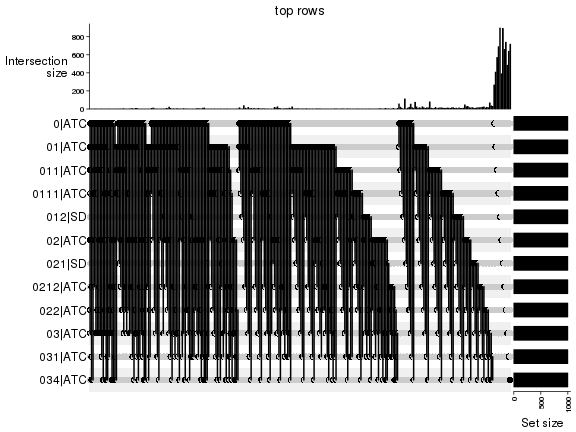
UMAP plot which shows how samples are separated.
par(mfrow = c(1, 2))
dimension_reduction(res_rh, merge_node = merge_node_param(min_n_signatures = 2238),
method = "UMAP", top_value_method = "SD", top_n = 40000, scale_rows = FALSE)
dimension_reduction(res_rh, merge_node = merge_node_param(min_n_signatures = 2238),
method = "UMAP", top_value_method = "ATC", top_n = 40000, scale_rows = TRUE)
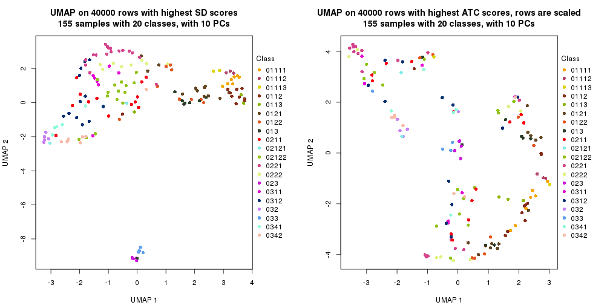
par(mfrow = c(1, 2))
dimension_reduction(res_rh, merge_node = merge_node_param(min_n_signatures = 2504),
method = "UMAP", top_value_method = "SD", top_n = 40000, scale_rows = FALSE)
dimension_reduction(res_rh, merge_node = merge_node_param(min_n_signatures = 2504),
method = "UMAP", top_value_method = "ATC", top_n = 40000, scale_rows = TRUE)
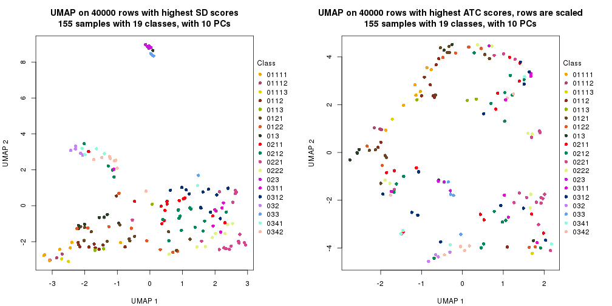
par(mfrow = c(1, 2))
dimension_reduction(res_rh, merge_node = merge_node_param(min_n_signatures = 2761),
method = "UMAP", top_value_method = "SD", top_n = 40000, scale_rows = FALSE)
dimension_reduction(res_rh, merge_node = merge_node_param(min_n_signatures = 2761),
method = "UMAP", top_value_method = "ATC", top_n = 40000, scale_rows = TRUE)
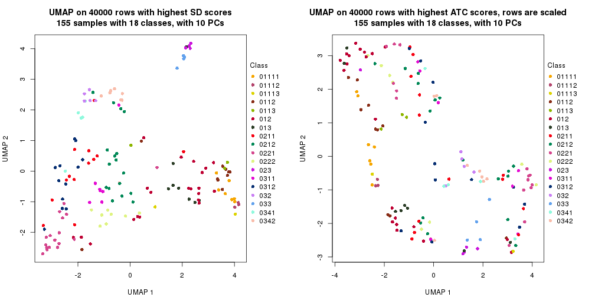
par(mfrow = c(1, 2))
dimension_reduction(res_rh, merge_node = merge_node_param(min_n_signatures = 3476),
method = "UMAP", top_value_method = "SD", top_n = 40000, scale_rows = FALSE)
dimension_reduction(res_rh, merge_node = merge_node_param(min_n_signatures = 3476),
method = "UMAP", top_value_method = "ATC", top_n = 40000, scale_rows = TRUE)
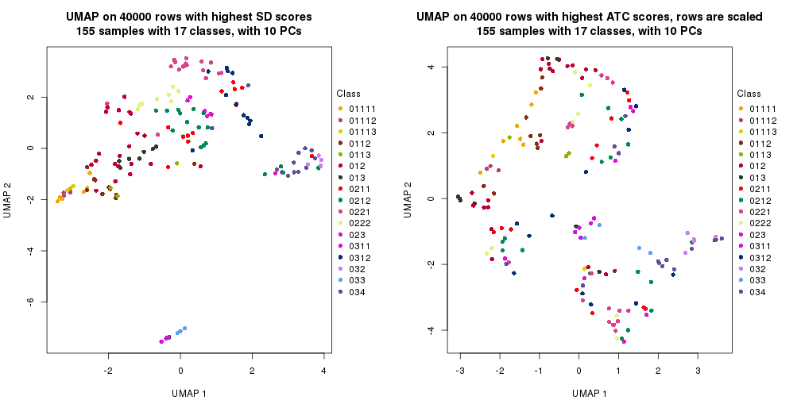
par(mfrow = c(1, 2))
dimension_reduction(res_rh, merge_node = merge_node_param(min_n_signatures = 3485),
method = "UMAP", top_value_method = "SD", top_n = 40000, scale_rows = FALSE)
dimension_reduction(res_rh, merge_node = merge_node_param(min_n_signatures = 3485),
method = "UMAP", top_value_method = "ATC", top_n = 40000, scale_rows = TRUE)
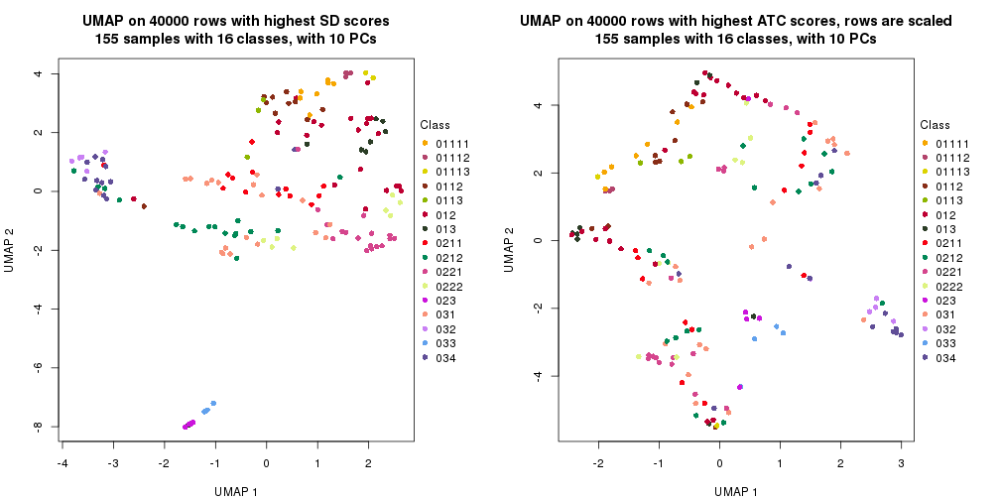
par(mfrow = c(1, 2))
dimension_reduction(res_rh, merge_node = merge_node_param(min_n_signatures = 3505),
method = "UMAP", top_value_method = "SD", top_n = 40000, scale_rows = FALSE)
dimension_reduction(res_rh, merge_node = merge_node_param(min_n_signatures = 3505),
method = "UMAP", top_value_method = "ATC", top_n = 40000, scale_rows = TRUE)
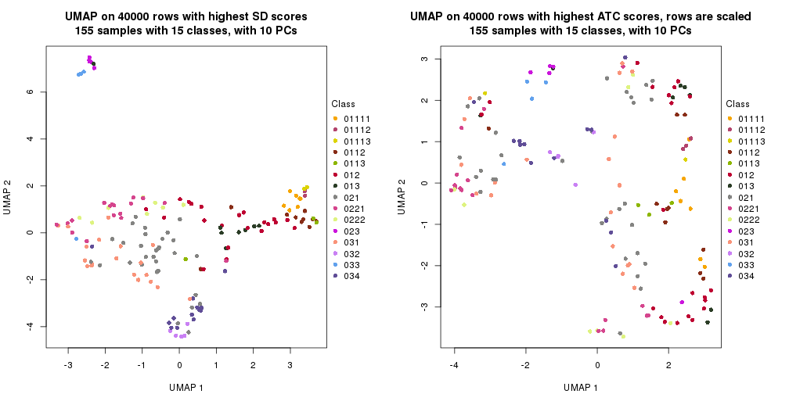
par(mfrow = c(1, 2))
dimension_reduction(res_rh, merge_node = merge_node_param(min_n_signatures = 3686),
method = "UMAP", top_value_method = "SD", top_n = 40000, scale_rows = FALSE)
dimension_reduction(res_rh, merge_node = merge_node_param(min_n_signatures = 3686),
method = "UMAP", top_value_method = "ATC", top_n = 40000, scale_rows = TRUE)
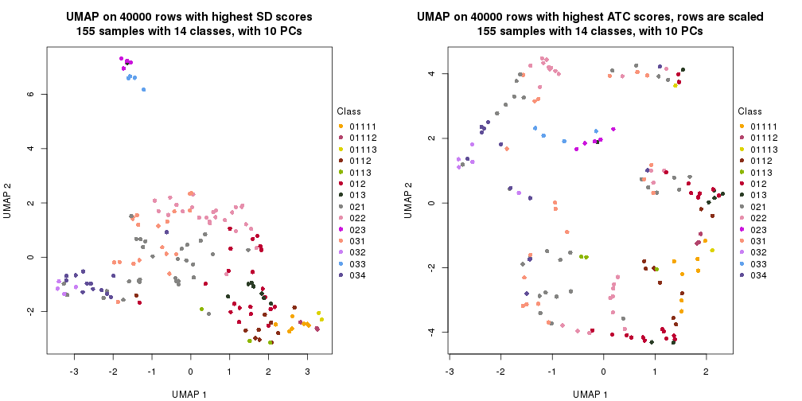
par(mfrow = c(1, 2))
dimension_reduction(res_rh, merge_node = merge_node_param(min_n_signatures = 5322),
method = "UMAP", top_value_method = "SD", top_n = 40000, scale_rows = FALSE)
dimension_reduction(res_rh, merge_node = merge_node_param(min_n_signatures = 5322),
method = "UMAP", top_value_method = "ATC", top_n = 40000, scale_rows = TRUE)
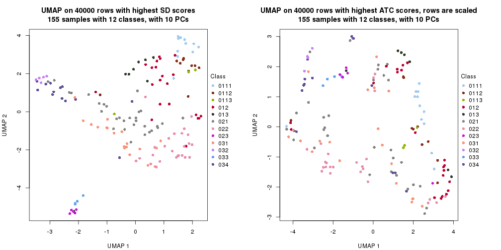
par(mfrow = c(1, 2))
dimension_reduction(res_rh, merge_node = merge_node_param(min_n_signatures = 5484),
method = "UMAP", top_value_method = "SD", top_n = 40000, scale_rows = FALSE)
dimension_reduction(res_rh, merge_node = merge_node_param(min_n_signatures = 5484),
method = "UMAP", top_value_method = "ATC", top_n = 40000, scale_rows = TRUE)
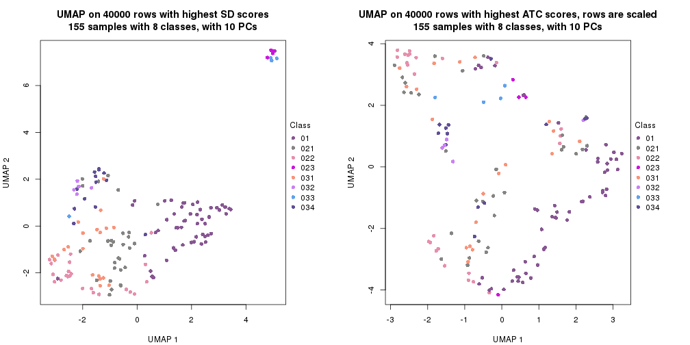
par(mfrow = c(1, 2))
dimension_reduction(res_rh, merge_node = merge_node_param(min_n_signatures = 12771),
method = "UMAP", top_value_method = "SD", top_n = 40000, scale_rows = FALSE)
dimension_reduction(res_rh, merge_node = merge_node_param(min_n_signatures = 12771),
method = "UMAP", top_value_method = "ATC", top_n = 40000, scale_rows = TRUE)
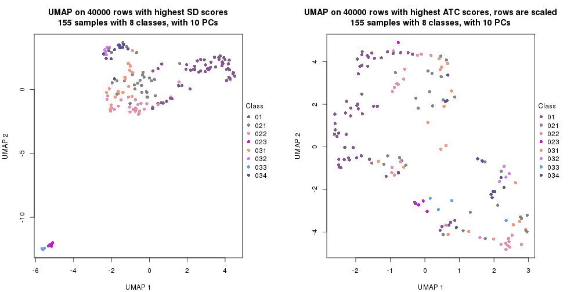
par(mfrow = c(1, 2))
dimension_reduction(res_rh, merge_node = merge_node_param(min_n_signatures = 29487),
method = "UMAP", top_value_method = "SD", top_n = 40000, scale_rows = FALSE)
dimension_reduction(res_rh, merge_node = merge_node_param(min_n_signatures = 29487),
method = "UMAP", top_value_method = "ATC", top_n = 40000, scale_rows = TRUE)
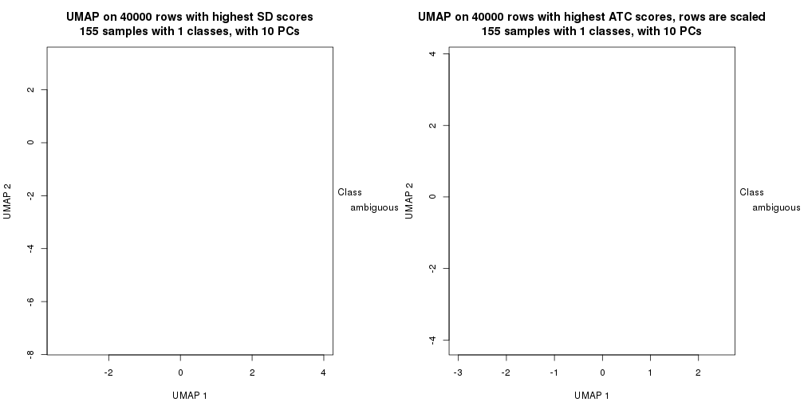
par(mfrow = c(1, 2))
dimension_reduction(res_rh, merge_node = merge_node_param(min_n_signatures = 38327),
method = "UMAP", top_value_method = "SD", top_n = 40000, scale_rows = FALSE)
dimension_reduction(res_rh, merge_node = merge_node_param(min_n_signatures = 38327),
method = "UMAP", top_value_method = "ATC", top_n = 40000, scale_rows = TRUE)
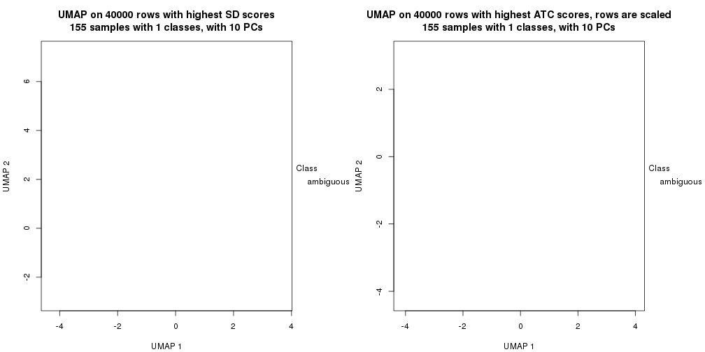
Signatures on the heatmap are the union of all signatures found on every node on the hierarchy. The number of k-means on rows are automatically selected by the function.
get_signatures(res_rh, merge_node = merge_node_param(min_n_signatures = 2238))
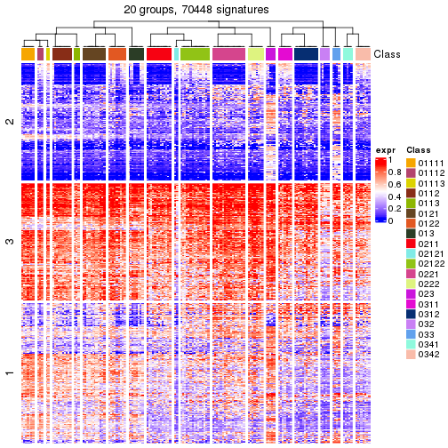
get_signatures(res_rh, merge_node = merge_node_param(min_n_signatures = 2504))
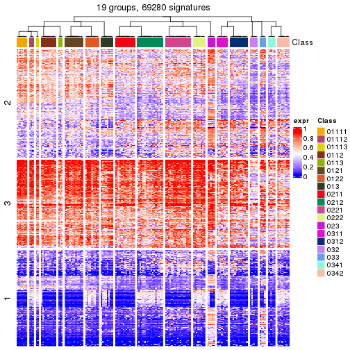
get_signatures(res_rh, merge_node = merge_node_param(min_n_signatures = 2761))
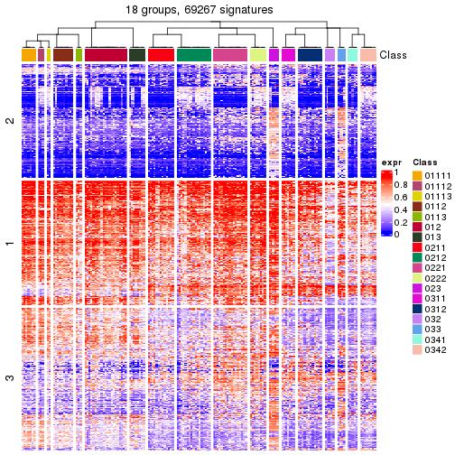
get_signatures(res_rh, merge_node = merge_node_param(min_n_signatures = 3476))
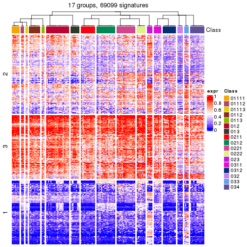
get_signatures(res_rh, merge_node = merge_node_param(min_n_signatures = 3485))
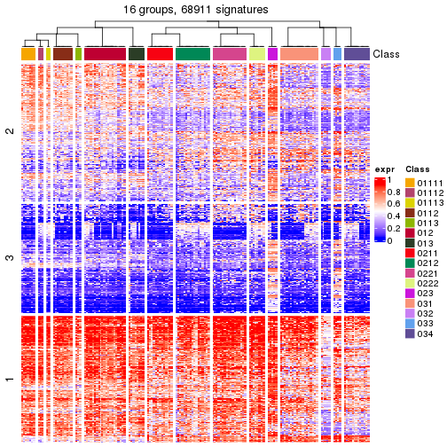
get_signatures(res_rh, merge_node = merge_node_param(min_n_signatures = 3505))
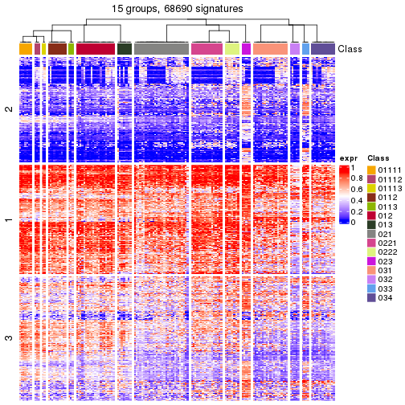
get_signatures(res_rh, merge_node = merge_node_param(min_n_signatures = 3686))
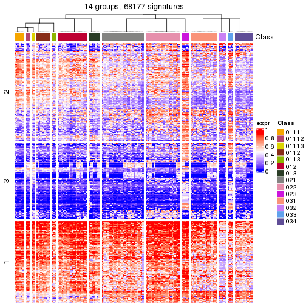
get_signatures(res_rh, merge_node = merge_node_param(min_n_signatures = 5322))
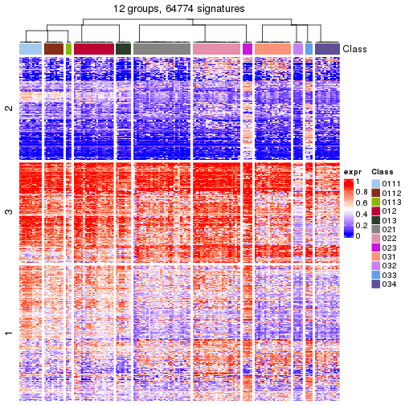
get_signatures(res_rh, merge_node = merge_node_param(min_n_signatures = 5484))

get_signatures(res_rh, merge_node = merge_node_param(min_n_signatures = 12771))
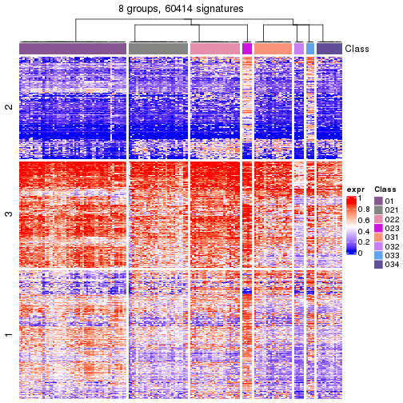
get_signatures(res_rh, merge_node = merge_node_param(min_n_signatures = 29487))
#> Error in names(x) <- value: 'names' attribute [1] must be the same length as the vector [0]
get_signatures(res_rh, merge_node = merge_node_param(min_n_signatures = 38327))
#> Error in names(x) <- value: 'names' attribute [1] must be the same length as the vector [0]
Compare signatures from different nodes:
compare_signatures(res_rh, verbose = FALSE)
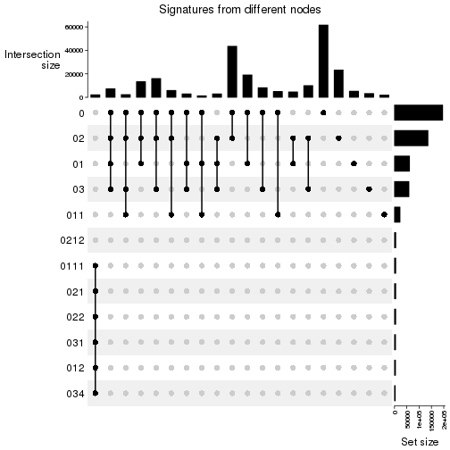
If there are too many signatures, top_signatures = ... can be set to only show the
signatures with the highest FDRs. Note it only works on every node and the final signatures
are the union of all signatures of all nodes.
# code only for demonstration
# e.g. to show the top 500 most significant rows on each node.
tb = get_signature(res_rh, top_signatures = 500)
Child nodes: Node01 , Node02 , Node03 .
The object with results only for a single top-value method and a single partitioning method can be extracted as:
res = res_rh["0"]
A summary of res and all the functions that can be applied to it:
res
#> A 'ConsensusPartition' object with k = 2, 3, 4, 5, 6, 7, 8.
#> On a matrix with 30000 rows and 155 columns.
#> Top rows (1000) are extracted by 'ATC' method.
#> Subgroups are detected by 'skmeans' method.
#> Performed in total 350 partitions by row resampling.
#> Best k for subgroups seems to be 5.
#>
#> Following methods can be applied to this 'ConsensusPartition' object:
#> [1] "cola_report" "collect_classes" "collect_plots"
#> [4] "collect_stats" "colnames" "compare_partitions"
#> [7] "compare_signatures" "consensus_heatmap" "dimension_reduction"
#> [10] "functional_enrichment" "get_anno_col" "get_anno"
#> [13] "get_classes" "get_consensus" "get_matrix"
#> [16] "get_membership" "get_param" "get_signatures"
#> [19] "get_stats" "is_best_k" "is_stable_k"
#> [22] "membership_heatmap" "ncol" "nrow"
#> [25] "plot_ecdf" "predict_classes" "rownames"
#> [28] "select_partition_number" "show" "suggest_best_k"
#> [31] "test_to_known_factors" "top_rows_heatmap"
collect_plots() function collects all the plots made from res for all k (number of subgroups)
into one single page to provide an easy and fast comparison between different k.
collect_plots(res)
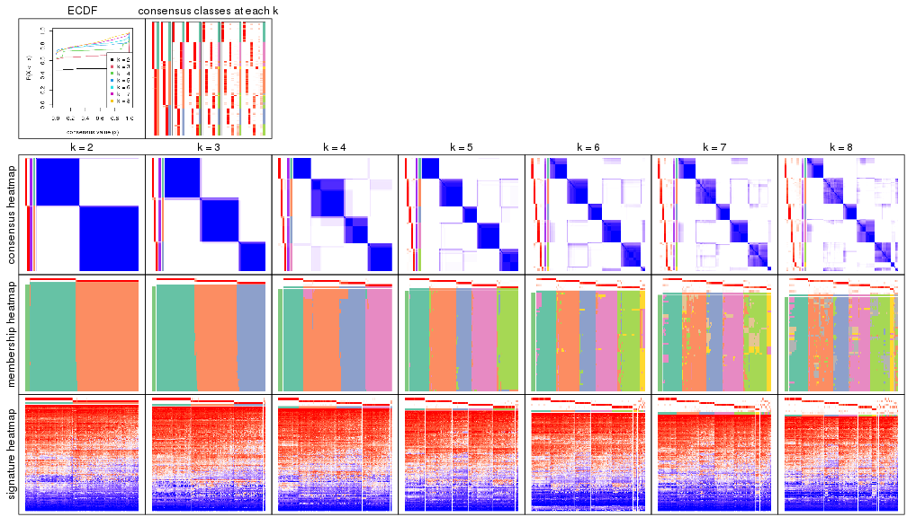
The plots are:
k and the heatmap of
predicted classes for each k.k.k.k.All the plots in panels can be made by individual functions and they are plotted later in this section.
select_partition_number() produces several plots showing different
statistics for choosing “optimized” k. There are following statistics:
k;k, the area increased is defined as \(A_k - A_{k-1}\).The detailed explanations of these statistics can be found in the cola vignette.
Generally speaking, higher 1-PAC score, higher mean silhouette score or higher
concordance corresponds to better partition. Rand index and Jaccard index
measure how similar the current partition is compared to partition with k-1.
If they are too similar, we won't accept k is better than k-1.
select_partition_number(res)
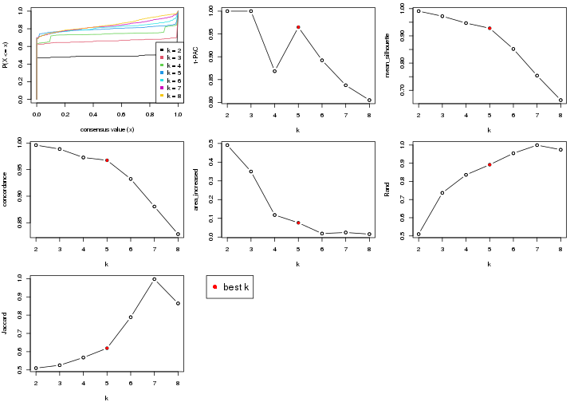
The numeric values for all these statistics can be obtained by get_stats().
get_stats(res)
#> k 1-PAC mean_silhouette concordance area_increased Rand Jaccard
#> 2 2 1.000 0.991 0.996 0.4909 0.510 0.510
#> 3 3 1.000 0.972 0.989 0.3500 0.737 0.526
#> 4 4 0.868 0.947 0.973 0.1178 0.836 0.568
#> 5 5 0.965 0.928 0.967 0.0763 0.892 0.619
#> 6 6 0.892 0.852 0.932 0.0187 0.955 0.789
#> 7 7 0.838 0.754 0.881 0.0244 0.999 0.997
#> 8 8 0.805 0.664 0.829 0.0157 0.974 0.864
suggest_best_k() suggests the best \(k\) based on these statistics. The rules are as follows:
suggest_best_k(res)
#> [1] 5
#> attr(,"optional")
#> [1] 2 3
There is also optional best \(k\) = 2 3 that is worth to check.
Following is the table of the partitions (You need to click the show/hide
code output link to see it). The membership matrix (columns with name p*)
is inferred by
clue::cl_consensus()
function with the SE method. Basically the value in the membership matrix
represents the probability to belong to a certain group. The finall subgroup
label for an item is determined with the group with highest probability it
belongs to.
In get_classes() function, the entropy is calculated from the membership
matrix and the silhouette score is calculated from the consensus matrix.
cbind(get_classes(res, k = 2), get_membership(res, k = 2))
#> class entropy silhouette p1 p2
#> TCGA.14.1402.02 2 0.000 0.996 0.00 1.00
#> TCGA.06.0152.01 2 0.000 0.996 0.00 1.00
#> TCGA.19.5950.01 1 0.000 0.996 1.00 0.00
#> TCGA.06.5413.01 2 0.000 0.996 0.00 1.00
#> TCGA.19.5954.01 2 0.000 0.996 0.00 1.00
#> TCGA.76.6283.01 1 0.000 0.996 1.00 0.00
#> TCGA.06.5408.01 2 0.000 0.996 0.00 1.00
#> TCGA.19.A6J4.01 1 0.000 0.996 1.00 0.00
#> TCGA.06.5856.01 2 0.000 0.996 0.00 1.00
#> TCGA.32.1980.01 1 0.000 0.996 1.00 0.00
#> TCGA.14.0862.01 1 0.000 0.996 1.00 0.00
#> TCGA.14.1402.01 2 0.000 0.996 0.00 1.00
#> TCGA.76.6282.01 1 0.000 0.996 1.00 0.00
#> TCGA.06.A5U1.01 1 0.000 0.996 1.00 0.00
#> TCGA.RR.A6KB.01 1 0.000 0.996 1.00 0.00
#> TCGA.06.0152.02 2 0.000 0.996 0.00 1.00
#> TCGA.76.6286.01 2 0.000 0.996 0.00 1.00
#> TCGA.76.6664.01 2 0.000 0.996 0.00 1.00
#> TCGA.19.0957.02 2 0.000 0.996 0.00 1.00
#> TCGA.74.6577.01 1 0.000 0.996 1.00 0.00
#> TCGA.76.6193.01 1 0.000 0.996 1.00 0.00
#> TCGA.06.5859.01 2 0.000 0.996 0.00 1.00
#> TCGA.87.5896.01 2 0.000 0.996 0.00 1.00
#> TCGA.06.5411.01 2 0.000 0.996 0.00 1.00
#> TCGA.14.0740.01 2 0.000 0.996 0.00 1.00
#> TCGA.14.1450.01 1 0.000 0.996 1.00 0.00
#> TCGA.76.6657.01 1 0.000 0.996 1.00 0.00
#> TCGA.06.AABW.11 1 0.000 0.996 1.00 0.00
#> TCGA.06.6391.01 1 0.000 0.996 1.00 0.00
#> TCGA.76.6662.01 1 0.000 0.996 1.00 0.00
#> TCGA.06.6701.01 1 0.000 0.996 1.00 0.00
#> TCGA.14.0736.01 1 0.000 0.996 1.00 0.00
#> TCGA.74.6573.01 2 0.000 0.996 0.00 1.00
#> TCGA.19.5955.01 1 0.000 0.996 1.00 0.00
#> TCGA.76.6656.01 2 0.000 0.996 0.00 1.00
#> TCGA.06.A5U0.01 2 0.000 0.996 0.00 1.00
#> TCGA.74.6584.01 2 0.000 0.996 0.00 1.00
#> TCGA.06.1804.01 2 0.000 0.996 0.00 1.00
#> TCGA.19.5952.01 2 0.000 0.996 0.00 1.00
#> TCGA.19.A6J5.01 2 0.000 0.996 0.00 1.00
#> TCGA.06.6697.01 1 0.000 0.996 1.00 0.00
#> TCGA.RR.A6KA.01 1 0.000 0.996 1.00 0.00
#> TCGA.06.6388.01 2 0.000 0.996 0.00 1.00
#> TCGA.19.5953.01 1 0.000 0.996 1.00 0.00
#> TCGA.19.5958.01 1 0.000 0.996 1.00 0.00
#> TCGA.19.1389.01 1 0.000 0.996 1.00 0.00
#> TCGA.41.6646.01 1 0.000 0.996 1.00 0.00
#> TCGA.28.5211.01 1 0.000 0.996 1.00 0.00
#> TCGA.76.6663.01 1 0.000 0.996 1.00 0.00
#> TCGA.76.6660.01 2 0.000 0.996 0.00 1.00
#> TCGA.06.5410.01 1 0.000 0.996 1.00 0.00
#> TCGA.26.6173.01 1 0.000 0.996 1.00 0.00
#> TCGA.19.5956.01 2 0.000 0.996 0.00 1.00
#> TCGA.76.6285.01 2 0.000 0.996 0.00 1.00
#> TCGA.14.1043.01 1 0.000 0.996 1.00 0.00
#> TCGA.14.1034.02 2 0.855 0.611 0.28 0.72
#> TCGA.06.6698.01 1 0.000 0.996 1.00 0.00
#> TCGA.76.6191.01 2 0.000 0.996 0.00 1.00
#> TCGA.81.5911.01 1 0.000 0.996 1.00 0.00
#> TCGA.06.6695.01 2 0.000 0.996 0.00 1.00
#> TCGA.06.6390.01 1 0.000 0.996 1.00 0.00
#> TCGA.19.5947.01 1 0.000 0.996 1.00 0.00
#> TCGA.06.6700.01 1 0.000 0.996 1.00 0.00
#> TCGA.06.6694.01 2 0.000 0.996 0.00 1.00
#> TCGA.28.2501.01 1 0.000 0.996 1.00 0.00
#> TCGA.28.2510.01 1 0.000 0.996 1.00 0.00
#> TCGA.06.6699.01 2 0.000 0.996 0.00 1.00
#> TCGA.19.5959.01 2 0.000 0.996 0.00 1.00
#> TCGA.06.1806.01 1 0.000 0.996 1.00 0.00
#> TCGA.06.0650.01 1 0.000 0.996 1.00 0.00
#> TCGA.76.6661.01 2 0.000 0.996 0.00 1.00
#> TCGA.19.5960.01 2 0.000 0.996 0.00 1.00
#> TCGA.74.6581.01 2 0.000 0.996 0.00 1.00
#> TCGA.19.5951.01 2 0.000 0.996 0.00 1.00
#> TCGA.74.6575.01 1 0.000 0.996 1.00 0.00
#> TCGA.26.1442.01 1 0.000 0.996 1.00 0.00
#> TCGA.74.6573.11 1 0.000 0.996 1.00 0.00
#> TCGA.06.5858.01 1 0.000 0.996 1.00 0.00
#> TCGA.41.5651.01 2 0.000 0.996 0.00 1.00
#> TCGA.76.6192.01 1 0.000 0.996 1.00 0.00
#> TCGA.19.1389.02 1 0.000 0.996 1.00 0.00
#> TCGA.28.6450.01 1 0.000 0.996 1.00 0.00
#> TCGA.14.0781.01 1 0.000 0.996 1.00 0.00
#> TCGA.32.1979.01 2 0.000 0.996 0.00 1.00
#> TCGA.06.A6S1.01 1 0.000 0.996 1.00 0.00
#> TCGA.OX.A56R.01 2 0.000 0.996 0.00 1.00
#> TCGA.15.1444.01 1 0.000 0.996 1.00 0.00
#> TCGA.74.6578.01 2 0.000 0.996 0.00 1.00
#> TCGA.06.6693.01 2 0.000 0.996 0.00 1.00
#> TCGA.19.A60I.01 2 0.000 0.996 0.00 1.00
#> TCGA.06.6389.01 2 0.000 0.996 0.00 1.00
#> TCGA.06.5412.01 1 0.000 0.996 1.00 0.00
#> TCGA.19.0957.01 2 0.000 0.996 0.00 1.00
#> TCGA.06.A6S0.01 2 0.000 0.996 0.00 1.00
#> TCGA.RR.A6KC.01 2 0.000 0.996 0.00 1.00
#> TCGA.14.1395.01 2 0.000 0.996 0.00 1.00
#> TCGA.14.0736.02 1 0.000 0.996 1.00 0.00
#> TCGA.81.5910.01 2 0.000 0.996 0.00 1.00
#> TCGA.26.6174.01 1 0.000 0.996 1.00 0.00
#> TCGA.76.6280.01 1 0.000 0.996 1.00 0.00
#> TCGA.32.5222.01 2 0.000 0.996 0.00 1.00
#> TCGA.28.5213.01 1 0.000 0.996 1.00 0.00
#> TCGA.06.0210.02 2 0.000 0.996 0.00 1.00
#> TCGA.06.0221.02 2 0.000 0.996 0.00 1.00
#> TCGA.06.0210.01 2 0.000 0.996 0.00 1.00
#> TCGA.4W.AA9R.01 2 0.000 0.996 0.00 1.00
#> TCGA.76.4925.01 2 0.000 0.996 0.00 1.00
#> TCGA.06.0211.02 2 0.000 0.996 0.00 1.00
#> TCGA.26.5135.01 2 0.000 0.996 0.00 1.00
#> TCGA.06.0211.01 2 0.000 0.996 0.00 1.00
#> TCGA.26.A7UX.01 2 0.000 0.996 0.00 1.00
#> TCGA.06.5414.01 2 0.000 0.996 0.00 1.00
#> TCGA.06.0190.02 1 0.000 0.996 1.00 0.00
#> TCGA.06.0125.01 2 0.000 0.996 0.00 1.00
#> TCGA.76.4934.01 2 0.000 0.996 0.00 1.00
#> TCGA.19.4065.02 1 0.000 0.996 1.00 0.00
#> TCGA.28.5208.01 2 0.000 0.996 0.00 1.00
#> TCGA.76.4935.01 2 0.000 0.996 0.00 1.00
#> TCGA.06.0171.02 1 0.000 0.996 1.00 0.00
#> TCGA.12.5295.01 2 0.000 0.996 0.00 1.00
#> TCGA.28.5214.01 1 0.000 0.996 1.00 0.00
#> TCGA.28.5219.01 2 0.000 0.996 0.00 1.00
#> TCGA.12.5301.01 2 0.000 0.996 0.00 1.00
#> TCGA.4W.AA9T.01 1 0.000 0.996 1.00 0.00
#> TCGA.06.0190.01 1 0.000 0.996 1.00 0.00
#> TCGA.06.A7TL.01 1 0.000 0.996 1.00 0.00
#> TCGA.28.5215.01 2 0.000 0.996 0.00 1.00
#> TCGA.06.5416.01 1 0.795 0.682 0.76 0.24
#> TCGA.76.4932.01 2 0.000 0.996 0.00 1.00
#> TCGA.06.A7TK.01 2 0.000 0.996 0.00 1.00
#> TCGA.28.5204.01 2 0.000 0.996 0.00 1.00
#> TCGA.26.5136.01 2 0.000 0.996 0.00 1.00
#> TCGA.06.5417.01 2 0.000 0.996 0.00 1.00
#> TCGA.26.5132.01 2 0.000 0.996 0.00 1.00
#> TCGA.12.5299.01 2 0.000 0.996 0.00 1.00
#> TCGA.19.4065.01 1 0.000 0.996 1.00 0.00
#> TCGA.28.5218.01 1 0.000 0.996 1.00 0.00
#> TCGA.76.4931.01 2 0.000 0.996 0.00 1.00
#> TCGA.28.5216.01 2 0.000 0.996 0.00 1.00
#> TCGA.06.0125.02 1 0.000 0.996 1.00 0.00
#> TCGA.4W.AA9S.01 2 0.000 0.996 0.00 1.00
#> TCGA.76.4927.01 2 0.469 0.887 0.10 0.90
#> TCGA.28.5209.01 2 0.000 0.996 0.00 1.00
#> TCGA.06.5418.01 2 0.000 0.996 0.00 1.00
#> TCGA.76.4929.01 2 0.000 0.996 0.00 1.00
#> TCGA.26.5139.01 2 0.000 0.996 0.00 1.00
#> TCGA.28.5207.01 2 0.000 0.996 0.00 1.00
#> TCGA.76.4926.01 2 0.000 0.996 0.00 1.00
#> TCGA.26.5134.01 2 0.000 0.996 0.00 1.00
#> TCGA.06.0171.01 2 0.000 0.996 0.00 1.00
#> TCGA.06.0221.01 2 0.000 0.996 0.00 1.00
#> TCGA.28.5220.01 2 0.000 0.996 0.00 1.00
#> TCGA.76.4928.01 1 0.000 0.996 1.00 0.00
#> TCGA.06.5415.01 2 0.000 0.996 0.00 1.00
#> TCGA.26.5133.01 2 0.000 0.996 0.00 1.00
cbind(get_classes(res, k = 3), get_membership(res, k = 3))
#> class entropy silhouette p1 p2 p3
#> TCGA.14.1402.02 2 0.0000 0.979 0.00 1.00 0.00
#> TCGA.06.0152.01 3 0.0000 0.984 0.00 0.00 1.00
#> TCGA.19.5950.01 2 0.5016 0.691 0.24 0.76 0.00
#> TCGA.06.5413.01 2 0.0000 0.979 0.00 1.00 0.00
#> TCGA.19.5954.01 2 0.0000 0.979 0.00 1.00 0.00
#> TCGA.76.6283.01 2 0.0000 0.979 0.00 1.00 0.00
#> TCGA.06.5408.01 2 0.0000 0.979 0.00 1.00 0.00
#> TCGA.19.A6J4.01 1 0.0000 1.000 1.00 0.00 0.00
#> TCGA.06.5856.01 2 0.0000 0.979 0.00 1.00 0.00
#> TCGA.32.1980.01 1 0.0000 1.000 1.00 0.00 0.00
#> TCGA.14.0862.01 1 0.0000 1.000 1.00 0.00 0.00
#> TCGA.14.1402.01 2 0.0000 0.979 0.00 1.00 0.00
#> TCGA.76.6282.01 1 0.0000 1.000 1.00 0.00 0.00
#> TCGA.06.A5U1.01 1 0.0000 1.000 1.00 0.00 0.00
#> TCGA.RR.A6KB.01 1 0.0000 1.000 1.00 0.00 0.00
#> TCGA.06.0152.02 2 0.0000 0.979 0.00 1.00 0.00
#> TCGA.76.6286.01 3 0.0000 0.984 0.00 0.00 1.00
#> TCGA.76.6664.01 2 0.0000 0.979 0.00 1.00 0.00
#> TCGA.19.0957.02 2 0.0000 0.979 0.00 1.00 0.00
#> TCGA.74.6577.01 2 0.0000 0.979 0.00 1.00 0.00
#> TCGA.76.6193.01 1 0.0000 1.000 1.00 0.00 0.00
#> TCGA.06.5859.01 3 0.0000 0.984 0.00 0.00 1.00
#> TCGA.87.5896.01 2 0.0000 0.979 0.00 1.00 0.00
#> TCGA.06.5411.01 2 0.0000 0.979 0.00 1.00 0.00
#> TCGA.14.0740.01 3 0.0000 0.984 0.00 0.00 1.00
#> TCGA.14.1450.01 1 0.0000 1.000 1.00 0.00 0.00
#> TCGA.76.6657.01 1 0.0000 1.000 1.00 0.00 0.00
#> TCGA.06.AABW.11 1 0.0000 1.000 1.00 0.00 0.00
#> TCGA.06.6391.01 1 0.0000 1.000 1.00 0.00 0.00
#> TCGA.76.6662.01 1 0.0000 1.000 1.00 0.00 0.00
#> TCGA.06.6701.01 2 0.6192 0.302 0.42 0.58 0.00
#> TCGA.14.0736.01 1 0.0000 1.000 1.00 0.00 0.00
#> TCGA.74.6573.01 2 0.0000 0.979 0.00 1.00 0.00
#> TCGA.19.5955.01 1 0.0000 1.000 1.00 0.00 0.00
#> TCGA.76.6656.01 2 0.0000 0.979 0.00 1.00 0.00
#> TCGA.06.A5U0.01 2 0.0000 0.979 0.00 1.00 0.00
#> TCGA.74.6584.01 2 0.0000 0.979 0.00 1.00 0.00
#> TCGA.06.1804.01 2 0.0000 0.979 0.00 1.00 0.00
#> TCGA.19.5952.01 2 0.0000 0.979 0.00 1.00 0.00
#> TCGA.19.A6J5.01 3 0.0000 0.984 0.00 0.00 1.00
#> TCGA.06.6697.01 1 0.0000 1.000 1.00 0.00 0.00
#> TCGA.RR.A6KA.01 1 0.0000 1.000 1.00 0.00 0.00
#> TCGA.06.6388.01 2 0.0000 0.979 0.00 1.00 0.00
#> TCGA.19.5953.01 1 0.0000 1.000 1.00 0.00 0.00
#> TCGA.19.5958.01 2 0.0000 0.979 0.00 1.00 0.00
#> TCGA.19.1389.01 1 0.0000 1.000 1.00 0.00 0.00
#> TCGA.41.6646.01 1 0.0000 1.000 1.00 0.00 0.00
#> TCGA.28.5211.01 1 0.0000 1.000 1.00 0.00 0.00
#> TCGA.76.6663.01 1 0.0000 1.000 1.00 0.00 0.00
#> TCGA.76.6660.01 3 0.0000 0.984 0.00 0.00 1.00
#> TCGA.06.5410.01 1 0.0000 1.000 1.00 0.00 0.00
#> TCGA.26.6173.01 1 0.0000 1.000 1.00 0.00 0.00
#> TCGA.19.5956.01 3 0.0000 0.984 0.00 0.00 1.00
#> TCGA.76.6285.01 3 0.0000 0.984 0.00 0.00 1.00
#> TCGA.14.1043.01 1 0.0000 1.000 1.00 0.00 0.00
#> TCGA.14.1034.02 2 0.0000 0.979 0.00 1.00 0.00
#> TCGA.06.6698.01 1 0.0000 1.000 1.00 0.00 0.00
#> TCGA.76.6191.01 3 0.0000 0.984 0.00 0.00 1.00
#> TCGA.81.5911.01 1 0.0000 1.000 1.00 0.00 0.00
#> TCGA.06.6695.01 2 0.0000 0.979 0.00 1.00 0.00
#> TCGA.06.6390.01 1 0.0000 1.000 1.00 0.00 0.00
#> TCGA.19.5947.01 1 0.0000 1.000 1.00 0.00 0.00
#> TCGA.06.6700.01 1 0.0000 1.000 1.00 0.00 0.00
#> TCGA.06.6694.01 3 0.0000 0.984 0.00 0.00 1.00
#> TCGA.28.2501.01 1 0.0000 1.000 1.00 0.00 0.00
#> TCGA.28.2510.01 1 0.0000 1.000 1.00 0.00 0.00
#> TCGA.06.6699.01 3 0.0000 0.984 0.00 0.00 1.00
#> TCGA.19.5959.01 3 0.0000 0.984 0.00 0.00 1.00
#> TCGA.06.1806.01 1 0.0000 1.000 1.00 0.00 0.00
#> TCGA.06.0650.01 1 0.0000 1.000 1.00 0.00 0.00
#> TCGA.76.6661.01 2 0.0000 0.979 0.00 1.00 0.00
#> TCGA.19.5960.01 3 0.2066 0.930 0.00 0.06 0.94
#> TCGA.74.6581.01 3 0.6126 0.352 0.00 0.40 0.60
#> TCGA.19.5951.01 3 0.0000 0.984 0.00 0.00 1.00
#> TCGA.74.6575.01 1 0.0000 1.000 1.00 0.00 0.00
#> TCGA.26.1442.01 2 0.2959 0.876 0.10 0.90 0.00
#> TCGA.74.6573.11 1 0.0000 1.000 1.00 0.00 0.00
#> TCGA.06.5858.01 1 0.0000 1.000 1.00 0.00 0.00
#> TCGA.41.5651.01 3 0.0000 0.984 0.00 0.00 1.00
#> TCGA.76.6192.01 1 0.0000 1.000 1.00 0.00 0.00
#> TCGA.19.1389.02 1 0.0000 1.000 1.00 0.00 0.00
#> TCGA.28.6450.01 1 0.0000 1.000 1.00 0.00 0.00
#> TCGA.14.0781.01 1 0.0000 1.000 1.00 0.00 0.00
#> TCGA.32.1979.01 2 0.0000 0.979 0.00 1.00 0.00
#> TCGA.06.A6S1.01 1 0.0000 1.000 1.00 0.00 0.00
#> TCGA.OX.A56R.01 2 0.0000 0.979 0.00 1.00 0.00
#> TCGA.15.1444.01 1 0.0000 1.000 1.00 0.00 0.00
#> TCGA.74.6578.01 2 0.0000 0.979 0.00 1.00 0.00
#> TCGA.06.6693.01 3 0.0000 0.984 0.00 0.00 1.00
#> TCGA.19.A60I.01 3 0.3340 0.864 0.00 0.12 0.88
#> TCGA.06.6389.01 2 0.0000 0.979 0.00 1.00 0.00
#> TCGA.06.5412.01 1 0.0000 1.000 1.00 0.00 0.00
#> TCGA.19.0957.01 3 0.0000 0.984 0.00 0.00 1.00
#> TCGA.06.A6S0.01 3 0.0000 0.984 0.00 0.00 1.00
#> TCGA.RR.A6KC.01 2 0.0000 0.979 0.00 1.00 0.00
#> TCGA.14.1395.01 3 0.0000 0.984 0.00 0.00 1.00
#> TCGA.14.0736.02 1 0.0000 1.000 1.00 0.00 0.00
#> TCGA.81.5910.01 3 0.0000 0.984 0.00 0.00 1.00
#> TCGA.26.6174.01 1 0.0000 1.000 1.00 0.00 0.00
#> TCGA.76.6280.01 2 0.0892 0.960 0.02 0.98 0.00
#> TCGA.32.5222.01 3 0.0000 0.984 0.00 0.00 1.00
#> TCGA.28.5213.01 1 0.0000 1.000 1.00 0.00 0.00
#> TCGA.06.0210.02 3 0.0000 0.984 0.00 0.00 1.00
#> TCGA.06.0221.02 3 0.0000 0.984 0.00 0.00 1.00
#> TCGA.06.0210.01 2 0.0000 0.979 0.00 1.00 0.00
#> TCGA.4W.AA9R.01 3 0.0000 0.984 0.00 0.00 1.00
#> TCGA.76.4925.01 2 0.0000 0.979 0.00 1.00 0.00
#> TCGA.06.0211.02 2 0.0000 0.979 0.00 1.00 0.00
#> TCGA.26.5135.01 3 0.0000 0.984 0.00 0.00 1.00
#> TCGA.06.0211.01 2 0.0000 0.979 0.00 1.00 0.00
#> TCGA.26.A7UX.01 3 0.0000 0.984 0.00 0.00 1.00
#> TCGA.06.5414.01 2 0.0000 0.979 0.00 1.00 0.00
#> TCGA.06.0190.02 1 0.0000 1.000 1.00 0.00 0.00
#> TCGA.06.0125.01 2 0.0000 0.979 0.00 1.00 0.00
#> TCGA.76.4934.01 3 0.0000 0.984 0.00 0.00 1.00
#> TCGA.19.4065.02 1 0.0000 1.000 1.00 0.00 0.00
#> TCGA.28.5208.01 2 0.0000 0.979 0.00 1.00 0.00
#> TCGA.76.4935.01 3 0.0000 0.984 0.00 0.00 1.00
#> TCGA.06.0171.02 1 0.0000 1.000 1.00 0.00 0.00
#> TCGA.12.5295.01 3 0.0000 0.984 0.00 0.00 1.00
#> TCGA.28.5214.01 2 0.0000 0.979 0.00 1.00 0.00
#> TCGA.28.5219.01 3 0.0000 0.984 0.00 0.00 1.00
#> TCGA.12.5301.01 3 0.0000 0.984 0.00 0.00 1.00
#> TCGA.4W.AA9T.01 1 0.0000 1.000 1.00 0.00 0.00
#> TCGA.06.0190.01 1 0.0000 1.000 1.00 0.00 0.00
#> TCGA.06.A7TL.01 2 0.5835 0.502 0.34 0.66 0.00
#> TCGA.28.5215.01 3 0.0000 0.984 0.00 0.00 1.00
#> TCGA.06.5416.01 2 0.0000 0.979 0.00 1.00 0.00
#> TCGA.76.4932.01 3 0.2066 0.930 0.00 0.06 0.94
#> TCGA.06.A7TK.01 2 0.0000 0.979 0.00 1.00 0.00
#> TCGA.28.5204.01 2 0.0000 0.979 0.00 1.00 0.00
#> TCGA.26.5136.01 2 0.0000 0.979 0.00 1.00 0.00
#> TCGA.06.5417.01 3 0.0000 0.984 0.00 0.00 1.00
#> TCGA.26.5132.01 2 0.0000 0.979 0.00 1.00 0.00
#> TCGA.12.5299.01 2 0.0000 0.979 0.00 1.00 0.00
#> TCGA.19.4065.01 1 0.0000 1.000 1.00 0.00 0.00
#> TCGA.28.5218.01 1 0.0000 1.000 1.00 0.00 0.00
#> TCGA.76.4931.01 2 0.0000 0.979 0.00 1.00 0.00
#> TCGA.28.5216.01 3 0.0000 0.984 0.00 0.00 1.00
#> TCGA.06.0125.02 2 0.0000 0.979 0.00 1.00 0.00
#> TCGA.4W.AA9S.01 2 0.0000 0.979 0.00 1.00 0.00
#> TCGA.76.4927.01 2 0.0000 0.979 0.00 1.00 0.00
#> TCGA.28.5209.01 2 0.0000 0.979 0.00 1.00 0.00
#> TCGA.06.5418.01 2 0.0000 0.979 0.00 1.00 0.00
#> TCGA.76.4929.01 3 0.0000 0.984 0.00 0.00 1.00
#> TCGA.26.5139.01 2 0.0000 0.979 0.00 1.00 0.00
#> TCGA.28.5207.01 2 0.0000 0.979 0.00 1.00 0.00
#> TCGA.76.4926.01 2 0.0000 0.979 0.00 1.00 0.00
#> TCGA.26.5134.01 3 0.0000 0.984 0.00 0.00 1.00
#> TCGA.06.0171.01 2 0.0000 0.979 0.00 1.00 0.00
#> TCGA.06.0221.01 2 0.0000 0.979 0.00 1.00 0.00
#> TCGA.28.5220.01 3 0.0000 0.984 0.00 0.00 1.00
#> TCGA.76.4928.01 1 0.0000 1.000 1.00 0.00 0.00
#> TCGA.06.5415.01 2 0.0000 0.979 0.00 1.00 0.00
#> TCGA.26.5133.01 3 0.0000 0.984 0.00 0.00 1.00
cbind(get_classes(res, k = 4), get_membership(res, k = 4))
#> class entropy silhouette p1 p2 p3 p4
#> TCGA.14.1402.02 2 0.0000 0.962 0.00 1.00 0.00 0.00
#> TCGA.06.0152.01 3 0.4994 0.198 0.00 0.48 0.52 0.00
#> TCGA.19.5950.01 4 0.0000 0.985 0.00 0.00 0.00 1.00
#> TCGA.06.5413.01 2 0.0000 0.962 0.00 1.00 0.00 0.00
#> TCGA.19.5954.01 2 0.0000 0.962 0.00 1.00 0.00 0.00
#> TCGA.76.6283.01 4 0.0000 0.985 0.00 0.00 0.00 1.00
#> TCGA.06.5408.01 2 0.0000 0.962 0.00 1.00 0.00 0.00
#> TCGA.19.A6J4.01 1 0.0000 1.000 1.00 0.00 0.00 0.00
#> TCGA.06.5856.01 2 0.0000 0.962 0.00 1.00 0.00 0.00
#> TCGA.32.1980.01 1 0.0000 1.000 1.00 0.00 0.00 0.00
#> TCGA.14.0862.01 4 0.0000 0.985 0.00 0.00 0.00 1.00
#> TCGA.14.1402.01 2 0.2345 0.910 0.00 0.90 0.00 0.10
#> TCGA.76.6282.01 1 0.0000 1.000 1.00 0.00 0.00 0.00
#> TCGA.06.A5U1.01 4 0.0000 0.985 0.00 0.00 0.00 1.00
#> TCGA.RR.A6KB.01 4 0.0000 0.985 0.00 0.00 0.00 1.00
#> TCGA.06.0152.02 2 0.1211 0.944 0.00 0.96 0.00 0.04
#> TCGA.76.6286.01 3 0.0000 0.937 0.00 0.00 1.00 0.00
#> TCGA.76.6664.01 2 0.2345 0.910 0.00 0.90 0.00 0.10
#> TCGA.19.0957.02 2 0.2345 0.910 0.00 0.90 0.00 0.10
#> TCGA.74.6577.01 4 0.0000 0.985 0.00 0.00 0.00 1.00
#> TCGA.76.6193.01 4 0.0000 0.985 0.00 0.00 0.00 1.00
#> TCGA.06.5859.01 3 0.4977 0.262 0.00 0.46 0.54 0.00
#> TCGA.87.5896.01 2 0.0000 0.962 0.00 1.00 0.00 0.00
#> TCGA.06.5411.01 2 0.2345 0.910 0.00 0.90 0.00 0.10
#> TCGA.14.0740.01 3 0.0000 0.937 0.00 0.00 1.00 0.00
#> TCGA.14.1450.01 1 0.0000 1.000 1.00 0.00 0.00 0.00
#> TCGA.76.6657.01 4 0.0000 0.985 0.00 0.00 0.00 1.00
#> TCGA.06.AABW.11 1 0.0000 1.000 1.00 0.00 0.00 0.00
#> TCGA.06.6391.01 4 0.0000 0.985 0.00 0.00 0.00 1.00
#> TCGA.76.6662.01 4 0.0000 0.985 0.00 0.00 0.00 1.00
#> TCGA.06.6701.01 4 0.0000 0.985 0.00 0.00 0.00 1.00
#> TCGA.14.0736.01 4 0.0000 0.985 0.00 0.00 0.00 1.00
#> TCGA.74.6573.01 2 0.0000 0.962 0.00 1.00 0.00 0.00
#> TCGA.19.5955.01 1 0.0000 1.000 1.00 0.00 0.00 0.00
#> TCGA.76.6656.01 2 0.0000 0.962 0.00 1.00 0.00 0.00
#> TCGA.06.A5U0.01 2 0.0000 0.962 0.00 1.00 0.00 0.00
#> TCGA.74.6584.01 2 0.0000 0.962 0.00 1.00 0.00 0.00
#> TCGA.06.1804.01 2 0.0000 0.962 0.00 1.00 0.00 0.00
#> TCGA.19.5952.01 2 0.2011 0.922 0.00 0.92 0.00 0.08
#> TCGA.19.A6J5.01 3 0.0000 0.937 0.00 0.00 1.00 0.00
#> TCGA.06.6697.01 1 0.0000 1.000 1.00 0.00 0.00 0.00
#> TCGA.RR.A6KA.01 4 0.0000 0.985 0.00 0.00 0.00 1.00
#> TCGA.06.6388.01 2 0.0000 0.962 0.00 1.00 0.00 0.00
#> TCGA.19.5953.01 4 0.0000 0.985 0.00 0.00 0.00 1.00
#> TCGA.19.5958.01 4 0.0000 0.985 0.00 0.00 0.00 1.00
#> TCGA.19.1389.01 1 0.0000 1.000 1.00 0.00 0.00 0.00
#> TCGA.41.6646.01 4 0.0000 0.985 0.00 0.00 0.00 1.00
#> TCGA.28.5211.01 1 0.0000 1.000 1.00 0.00 0.00 0.00
#> TCGA.76.6663.01 1 0.0000 1.000 1.00 0.00 0.00 0.00
#> TCGA.76.6660.01 3 0.0000 0.937 0.00 0.00 1.00 0.00
#> TCGA.06.5410.01 1 0.0000 1.000 1.00 0.00 0.00 0.00
#> TCGA.26.6173.01 1 0.0000 1.000 1.00 0.00 0.00 0.00
#> TCGA.19.5956.01 3 0.0000 0.937 0.00 0.00 1.00 0.00
#> TCGA.76.6285.01 3 0.0000 0.937 0.00 0.00 1.00 0.00
#> TCGA.14.1043.01 4 0.2345 0.882 0.10 0.00 0.00 0.90
#> TCGA.14.1034.02 2 0.2345 0.910 0.00 0.90 0.00 0.10
#> TCGA.06.6698.01 1 0.0000 1.000 1.00 0.00 0.00 0.00
#> TCGA.76.6191.01 3 0.0000 0.937 0.00 0.00 1.00 0.00
#> TCGA.81.5911.01 4 0.0000 0.985 0.00 0.00 0.00 1.00
#> TCGA.06.6695.01 2 0.0000 0.962 0.00 1.00 0.00 0.00
#> TCGA.06.6390.01 1 0.0000 1.000 1.00 0.00 0.00 0.00
#> TCGA.19.5947.01 1 0.0000 1.000 1.00 0.00 0.00 0.00
#> TCGA.06.6700.01 4 0.0000 0.985 0.00 0.00 0.00 1.00
#> TCGA.06.6694.01 3 0.2345 0.900 0.00 0.10 0.90 0.00
#> TCGA.28.2501.01 1 0.0000 1.000 1.00 0.00 0.00 0.00
#> TCGA.28.2510.01 1 0.0000 1.000 1.00 0.00 0.00 0.00
#> TCGA.06.6699.01 3 0.2647 0.883 0.00 0.12 0.88 0.00
#> TCGA.19.5959.01 3 0.2345 0.900 0.00 0.10 0.90 0.00
#> TCGA.06.1806.01 1 0.0000 1.000 1.00 0.00 0.00 0.00
#> TCGA.06.0650.01 1 0.0000 1.000 1.00 0.00 0.00 0.00
#> TCGA.76.6661.01 2 0.0000 0.962 0.00 1.00 0.00 0.00
#> TCGA.19.5960.01 2 0.3801 0.677 0.00 0.78 0.22 0.00
#> TCGA.74.6581.01 2 0.0000 0.962 0.00 1.00 0.00 0.00
#> TCGA.19.5951.01 3 0.0000 0.937 0.00 0.00 1.00 0.00
#> TCGA.74.6575.01 4 0.0000 0.985 0.00 0.00 0.00 1.00
#> TCGA.26.1442.01 4 0.0000 0.985 0.00 0.00 0.00 1.00
#> TCGA.74.6573.11 1 0.0000 1.000 1.00 0.00 0.00 0.00
#> TCGA.06.5858.01 1 0.0000 1.000 1.00 0.00 0.00 0.00
#> TCGA.41.5651.01 3 0.0000 0.937 0.00 0.00 1.00 0.00
#> TCGA.76.6192.01 4 0.0000 0.985 0.00 0.00 0.00 1.00
#> TCGA.19.1389.02 1 0.0000 1.000 1.00 0.00 0.00 0.00
#> TCGA.28.6450.01 4 0.0000 0.985 0.00 0.00 0.00 1.00
#> TCGA.14.0781.01 1 0.0000 1.000 1.00 0.00 0.00 0.00
#> TCGA.32.1979.01 2 0.2345 0.910 0.00 0.90 0.00 0.10
#> TCGA.06.A6S1.01 4 0.0000 0.985 0.00 0.00 0.00 1.00
#> TCGA.OX.A56R.01 2 0.0000 0.962 0.00 1.00 0.00 0.00
#> TCGA.15.1444.01 4 0.0000 0.985 0.00 0.00 0.00 1.00
#> TCGA.74.6578.01 2 0.2345 0.910 0.00 0.90 0.00 0.10
#> TCGA.06.6693.01 3 0.2345 0.900 0.00 0.10 0.90 0.00
#> TCGA.19.A60I.01 2 0.0000 0.962 0.00 1.00 0.00 0.00
#> TCGA.06.6389.01 4 0.2345 0.877 0.00 0.10 0.00 0.90
#> TCGA.06.5412.01 1 0.0000 1.000 1.00 0.00 0.00 0.00
#> TCGA.19.0957.01 3 0.0000 0.937 0.00 0.00 1.00 0.00
#> TCGA.06.A6S0.01 3 0.2345 0.900 0.00 0.10 0.90 0.00
#> TCGA.RR.A6KC.01 2 0.0000 0.962 0.00 1.00 0.00 0.00
#> TCGA.14.1395.01 3 0.2345 0.900 0.00 0.10 0.90 0.00
#> TCGA.14.0736.02 1 0.0000 1.000 1.00 0.00 0.00 0.00
#> TCGA.81.5910.01 3 0.2345 0.900 0.00 0.10 0.90 0.00
#> TCGA.26.6174.01 4 0.0000 0.985 0.00 0.00 0.00 1.00
#> TCGA.76.6280.01 4 0.0000 0.985 0.00 0.00 0.00 1.00
#> TCGA.32.5222.01 3 0.2345 0.900 0.00 0.10 0.90 0.00
#> TCGA.28.5213.01 1 0.0000 1.000 1.00 0.00 0.00 0.00
#> TCGA.06.0210.02 3 0.2345 0.900 0.00 0.10 0.90 0.00
#> TCGA.06.0221.02 3 0.0000 0.937 0.00 0.00 1.00 0.00
#> TCGA.06.0210.01 2 0.0000 0.962 0.00 1.00 0.00 0.00
#> TCGA.4W.AA9R.01 3 0.0000 0.937 0.00 0.00 1.00 0.00
#> TCGA.76.4925.01 2 0.0000 0.962 0.00 1.00 0.00 0.00
#> TCGA.06.0211.02 2 0.0000 0.962 0.00 1.00 0.00 0.00
#> TCGA.26.5135.01 3 0.0000 0.937 0.00 0.00 1.00 0.00
#> TCGA.06.0211.01 2 0.2345 0.910 0.00 0.90 0.00 0.10
#> TCGA.26.A7UX.01 3 0.0000 0.937 0.00 0.00 1.00 0.00
#> TCGA.06.5414.01 2 0.0000 0.962 0.00 1.00 0.00 0.00
#> TCGA.06.0190.02 4 0.0000 0.985 0.00 0.00 0.00 1.00
#> TCGA.06.0125.01 2 0.0000 0.962 0.00 1.00 0.00 0.00
#> TCGA.76.4934.01 3 0.0000 0.937 0.00 0.00 1.00 0.00
#> TCGA.19.4065.02 4 0.0000 0.985 0.00 0.00 0.00 1.00
#> TCGA.28.5208.01 2 0.0000 0.962 0.00 1.00 0.00 0.00
#> TCGA.76.4935.01 3 0.0000 0.937 0.00 0.00 1.00 0.00
#> TCGA.06.0171.02 1 0.0000 1.000 1.00 0.00 0.00 0.00
#> TCGA.12.5295.01 3 0.2345 0.900 0.00 0.10 0.90 0.00
#> TCGA.28.5214.01 4 0.1637 0.924 0.00 0.06 0.00 0.94
#> TCGA.28.5219.01 3 0.2345 0.900 0.00 0.10 0.90 0.00
#> TCGA.12.5301.01 3 0.0000 0.937 0.00 0.00 1.00 0.00
#> TCGA.4W.AA9T.01 4 0.2345 0.882 0.10 0.00 0.00 0.90
#> TCGA.06.0190.01 4 0.2647 0.861 0.12 0.00 0.00 0.88
#> TCGA.06.A7TL.01 4 0.0000 0.985 0.00 0.00 0.00 1.00
#> TCGA.28.5215.01 3 0.0000 0.937 0.00 0.00 1.00 0.00
#> TCGA.06.5416.01 4 0.0000 0.985 0.00 0.00 0.00 1.00
#> TCGA.76.4932.01 2 0.0000 0.962 0.00 1.00 0.00 0.00
#> TCGA.06.A7TK.01 2 0.2345 0.910 0.00 0.90 0.00 0.10
#> TCGA.28.5204.01 2 0.0000 0.962 0.00 1.00 0.00 0.00
#> TCGA.26.5136.01 2 0.0000 0.962 0.00 1.00 0.00 0.00
#> TCGA.06.5417.01 3 0.0000 0.937 0.00 0.00 1.00 0.00
#> TCGA.26.5132.01 2 0.0000 0.962 0.00 1.00 0.00 0.00
#> TCGA.12.5299.01 2 0.0707 0.953 0.00 0.98 0.00 0.02
#> TCGA.19.4065.01 4 0.0000 0.985 0.00 0.00 0.00 1.00
#> TCGA.28.5218.01 4 0.0000 0.985 0.00 0.00 0.00 1.00
#> TCGA.76.4931.01 2 0.0000 0.962 0.00 1.00 0.00 0.00
#> TCGA.28.5216.01 3 0.0000 0.937 0.00 0.00 1.00 0.00
#> TCGA.06.0125.02 4 0.0000 0.985 0.00 0.00 0.00 1.00
#> TCGA.4W.AA9S.01 2 0.0000 0.962 0.00 1.00 0.00 0.00
#> TCGA.76.4927.01 2 0.2921 0.869 0.00 0.86 0.00 0.14
#> TCGA.28.5209.01 2 0.0000 0.962 0.00 1.00 0.00 0.00
#> TCGA.06.5418.01 2 0.0000 0.962 0.00 1.00 0.00 0.00
#> TCGA.76.4929.01 3 0.0000 0.937 0.00 0.00 1.00 0.00
#> TCGA.26.5139.01 2 0.0000 0.962 0.00 1.00 0.00 0.00
#> TCGA.28.5207.01 2 0.0000 0.962 0.00 1.00 0.00 0.00
#> TCGA.76.4926.01 2 0.0000 0.962 0.00 1.00 0.00 0.00
#> TCGA.26.5134.01 3 0.0000 0.937 0.00 0.00 1.00 0.00
#> TCGA.06.0171.01 2 0.2345 0.910 0.00 0.90 0.00 0.10
#> TCGA.06.0221.01 2 0.2011 0.922 0.00 0.92 0.00 0.08
#> TCGA.28.5220.01 3 0.0000 0.937 0.00 0.00 1.00 0.00
#> TCGA.76.4928.01 1 0.0000 1.000 1.00 0.00 0.00 0.00
#> TCGA.06.5415.01 2 0.2345 0.910 0.00 0.90 0.00 0.10
#> TCGA.26.5133.01 3 0.0000 0.937 0.00 0.00 1.00 0.00
cbind(get_classes(res, k = 5), get_membership(res, k = 5))
#> class entropy silhouette p1 p2 p3 p4 p5
#> TCGA.14.1402.02 5 0.0609 0.933 0.00 0.02 0.00 0.00 0.98
#> TCGA.06.0152.01 5 0.0609 0.933 0.00 0.02 0.00 0.00 0.98
#> TCGA.19.5950.01 4 0.0000 0.967 0.00 0.00 0.00 1.00 0.00
#> TCGA.06.5413.01 2 0.0000 0.963 0.00 1.00 0.00 0.00 0.00
#> TCGA.19.5954.01 5 0.2020 0.866 0.00 0.10 0.00 0.00 0.90
#> TCGA.76.6283.01 4 0.0609 0.951 0.00 0.02 0.00 0.98 0.00
#> TCGA.06.5408.01 5 0.4182 0.350 0.00 0.40 0.00 0.00 0.60
#> TCGA.19.A6J4.01 1 0.0000 0.997 1.00 0.00 0.00 0.00 0.00
#> TCGA.06.5856.01 5 0.0609 0.933 0.00 0.02 0.00 0.00 0.98
#> TCGA.32.1980.01 1 0.0000 0.997 1.00 0.00 0.00 0.00 0.00
#> TCGA.14.0862.01 4 0.0000 0.967 0.00 0.00 0.00 1.00 0.00
#> TCGA.14.1402.01 2 0.0000 0.963 0.00 1.00 0.00 0.00 0.00
#> TCGA.76.6282.01 1 0.0000 0.997 1.00 0.00 0.00 0.00 0.00
#> TCGA.06.A5U1.01 4 0.0000 0.967 0.00 0.00 0.00 1.00 0.00
#> TCGA.RR.A6KB.01 4 0.0000 0.967 0.00 0.00 0.00 1.00 0.00
#> TCGA.06.0152.02 2 0.0000 0.963 0.00 1.00 0.00 0.00 0.00
#> TCGA.76.6286.01 3 0.0000 0.971 0.00 0.00 1.00 0.00 0.00
#> TCGA.76.6664.01 2 0.0000 0.963 0.00 1.00 0.00 0.00 0.00
#> TCGA.19.0957.02 2 0.0000 0.963 0.00 1.00 0.00 0.00 0.00
#> TCGA.74.6577.01 4 0.1732 0.889 0.00 0.08 0.00 0.92 0.00
#> TCGA.76.6193.01 4 0.0000 0.967 0.00 0.00 0.00 1.00 0.00
#> TCGA.06.5859.01 5 0.0609 0.933 0.00 0.02 0.00 0.00 0.98
#> TCGA.87.5896.01 5 0.0609 0.933 0.00 0.02 0.00 0.00 0.98
#> TCGA.06.5411.01 2 0.0000 0.963 0.00 1.00 0.00 0.00 0.00
#> TCGA.14.0740.01 3 0.0000 0.971 0.00 0.00 1.00 0.00 0.00
#> TCGA.14.1450.01 1 0.0000 0.997 1.00 0.00 0.00 0.00 0.00
#> TCGA.76.6657.01 4 0.0000 0.967 0.00 0.00 0.00 1.00 0.00
#> TCGA.06.AABW.11 1 0.0000 0.997 1.00 0.00 0.00 0.00 0.00
#> TCGA.06.6391.01 4 0.0000 0.967 0.00 0.00 0.00 1.00 0.00
#> TCGA.76.6662.01 4 0.0000 0.967 0.00 0.00 0.00 1.00 0.00
#> TCGA.06.6701.01 4 0.0609 0.956 0.00 0.00 0.00 0.98 0.02
#> TCGA.14.0736.01 4 0.0000 0.967 0.00 0.00 0.00 1.00 0.00
#> TCGA.74.6573.01 5 0.3109 0.756 0.00 0.20 0.00 0.00 0.80
#> TCGA.19.5955.01 1 0.0000 0.997 1.00 0.00 0.00 0.00 0.00
#> TCGA.76.6656.01 2 0.0609 0.949 0.00 0.98 0.00 0.00 0.02
#> TCGA.06.A5U0.01 2 0.4287 0.109 0.00 0.54 0.00 0.00 0.46
#> TCGA.74.6584.01 2 0.0000 0.963 0.00 1.00 0.00 0.00 0.00
#> TCGA.06.1804.01 2 0.0000 0.963 0.00 1.00 0.00 0.00 0.00
#> TCGA.19.5952.01 2 0.0000 0.963 0.00 1.00 0.00 0.00 0.00
#> TCGA.19.A6J5.01 3 0.0000 0.971 0.00 0.00 1.00 0.00 0.00
#> TCGA.06.6697.01 1 0.0000 0.997 1.00 0.00 0.00 0.00 0.00
#> TCGA.RR.A6KA.01 4 0.0000 0.967 0.00 0.00 0.00 1.00 0.00
#> TCGA.06.6388.01 2 0.1410 0.912 0.00 0.94 0.00 0.00 0.06
#> TCGA.19.5953.01 4 0.0000 0.967 0.00 0.00 0.00 1.00 0.00
#> TCGA.19.5958.01 4 0.0000 0.967 0.00 0.00 0.00 1.00 0.00
#> TCGA.19.1389.01 1 0.0000 0.997 1.00 0.00 0.00 0.00 0.00
#> TCGA.41.6646.01 4 0.0000 0.967 0.00 0.00 0.00 1.00 0.00
#> TCGA.28.5211.01 1 0.0000 0.997 1.00 0.00 0.00 0.00 0.00
#> TCGA.76.6663.01 1 0.0000 0.997 1.00 0.00 0.00 0.00 0.00
#> TCGA.76.6660.01 5 0.3561 0.625 0.00 0.00 0.26 0.00 0.74
#> TCGA.06.5410.01 1 0.0000 0.997 1.00 0.00 0.00 0.00 0.00
#> TCGA.26.6173.01 1 0.1732 0.907 0.92 0.00 0.00 0.08 0.00
#> TCGA.19.5956.01 3 0.0000 0.971 0.00 0.00 1.00 0.00 0.00
#> TCGA.76.6285.01 3 0.0000 0.971 0.00 0.00 1.00 0.00 0.00
#> TCGA.14.1043.01 4 0.0000 0.967 0.00 0.00 0.00 1.00 0.00
#> TCGA.14.1034.02 2 0.0000 0.963 0.00 1.00 0.00 0.00 0.00
#> TCGA.06.6698.01 1 0.0000 0.997 1.00 0.00 0.00 0.00 0.00
#> TCGA.76.6191.01 3 0.0000 0.971 0.00 0.00 1.00 0.00 0.00
#> TCGA.81.5911.01 4 0.0000 0.967 0.00 0.00 0.00 1.00 0.00
#> TCGA.06.6695.01 5 0.1410 0.904 0.00 0.06 0.00 0.00 0.94
#> TCGA.06.6390.01 1 0.0000 0.997 1.00 0.00 0.00 0.00 0.00
#> TCGA.19.5947.01 1 0.0000 0.997 1.00 0.00 0.00 0.00 0.00
#> TCGA.06.6700.01 4 0.0000 0.967 0.00 0.00 0.00 1.00 0.00
#> TCGA.06.6694.01 5 0.0609 0.928 0.00 0.00 0.02 0.00 0.98
#> TCGA.28.2501.01 1 0.0000 0.997 1.00 0.00 0.00 0.00 0.00
#> TCGA.28.2510.01 1 0.0000 0.997 1.00 0.00 0.00 0.00 0.00
#> TCGA.06.6699.01 5 0.0609 0.928 0.00 0.00 0.02 0.00 0.98
#> TCGA.19.5959.01 5 0.0609 0.928 0.00 0.00 0.02 0.00 0.98
#> TCGA.06.1806.01 1 0.0000 0.997 1.00 0.00 0.00 0.00 0.00
#> TCGA.06.0650.01 1 0.0000 0.997 1.00 0.00 0.00 0.00 0.00
#> TCGA.76.6661.01 2 0.0000 0.963 0.00 1.00 0.00 0.00 0.00
#> TCGA.19.5960.01 5 0.0609 0.933 0.00 0.02 0.00 0.00 0.98
#> TCGA.74.6581.01 5 0.0609 0.933 0.00 0.02 0.00 0.00 0.98
#> TCGA.19.5951.01 3 0.3274 0.737 0.00 0.00 0.78 0.00 0.22
#> TCGA.74.6575.01 4 0.0000 0.967 0.00 0.00 0.00 1.00 0.00
#> TCGA.26.1442.01 4 0.0609 0.956 0.00 0.00 0.00 0.98 0.02
#> TCGA.74.6573.11 1 0.0000 0.997 1.00 0.00 0.00 0.00 0.00
#> TCGA.06.5858.01 1 0.0000 0.997 1.00 0.00 0.00 0.00 0.00
#> TCGA.41.5651.01 3 0.2732 0.822 0.00 0.00 0.84 0.00 0.16
#> TCGA.76.6192.01 4 0.0000 0.967 0.00 0.00 0.00 1.00 0.00
#> TCGA.19.1389.02 1 0.0000 0.997 1.00 0.00 0.00 0.00 0.00
#> TCGA.28.6450.01 4 0.0000 0.967 0.00 0.00 0.00 1.00 0.00
#> TCGA.14.0781.01 1 0.0000 0.997 1.00 0.00 0.00 0.00 0.00
#> TCGA.32.1979.01 2 0.0000 0.963 0.00 1.00 0.00 0.00 0.00
#> TCGA.06.A6S1.01 4 0.0000 0.967 0.00 0.00 0.00 1.00 0.00
#> TCGA.OX.A56R.01 2 0.0000 0.963 0.00 1.00 0.00 0.00 0.00
#> TCGA.15.1444.01 4 0.0609 0.956 0.00 0.00 0.00 0.98 0.02
#> TCGA.74.6578.01 2 0.0000 0.963 0.00 1.00 0.00 0.00 0.00
#> TCGA.06.6693.01 5 0.0609 0.928 0.00 0.00 0.02 0.00 0.98
#> TCGA.19.A60I.01 5 0.0609 0.933 0.00 0.02 0.00 0.00 0.98
#> TCGA.06.6389.01 2 0.2873 0.825 0.00 0.86 0.00 0.12 0.02
#> TCGA.06.5412.01 1 0.0000 0.997 1.00 0.00 0.00 0.00 0.00
#> TCGA.19.0957.01 3 0.2929 0.796 0.00 0.00 0.82 0.00 0.18
#> TCGA.06.A6S0.01 5 0.0609 0.928 0.00 0.00 0.02 0.00 0.98
#> TCGA.RR.A6KC.01 2 0.0000 0.963 0.00 1.00 0.00 0.00 0.00
#> TCGA.14.1395.01 5 0.0609 0.928 0.00 0.00 0.02 0.00 0.98
#> TCGA.14.0736.02 1 0.0000 0.997 1.00 0.00 0.00 0.00 0.00
#> TCGA.81.5910.01 5 0.0609 0.928 0.00 0.00 0.02 0.00 0.98
#> TCGA.26.6174.01 4 0.0000 0.967 0.00 0.00 0.00 1.00 0.00
#> TCGA.76.6280.01 4 0.0000 0.967 0.00 0.00 0.00 1.00 0.00
#> TCGA.32.5222.01 5 0.0609 0.928 0.00 0.00 0.02 0.00 0.98
#> TCGA.28.5213.01 1 0.0000 0.997 1.00 0.00 0.00 0.00 0.00
#> TCGA.06.0210.02 5 0.0609 0.928 0.00 0.00 0.02 0.00 0.98
#> TCGA.06.0221.02 3 0.0000 0.971 0.00 0.00 1.00 0.00 0.00
#> TCGA.06.0210.01 2 0.0000 0.963 0.00 1.00 0.00 0.00 0.00
#> TCGA.4W.AA9R.01 3 0.0000 0.971 0.00 0.00 1.00 0.00 0.00
#> TCGA.76.4925.01 5 0.0609 0.933 0.00 0.02 0.00 0.00 0.98
#> TCGA.06.0211.02 2 0.0000 0.963 0.00 1.00 0.00 0.00 0.00
#> TCGA.26.5135.01 3 0.0000 0.971 0.00 0.00 1.00 0.00 0.00
#> TCGA.06.0211.01 2 0.0000 0.963 0.00 1.00 0.00 0.00 0.00
#> TCGA.26.A7UX.01 3 0.0000 0.971 0.00 0.00 1.00 0.00 0.00
#> TCGA.06.5414.01 2 0.0000 0.963 0.00 1.00 0.00 0.00 0.00
#> TCGA.06.0190.02 4 0.0000 0.967 0.00 0.00 0.00 1.00 0.00
#> TCGA.06.0125.01 5 0.0609 0.933 0.00 0.02 0.00 0.00 0.98
#> TCGA.76.4934.01 3 0.0000 0.971 0.00 0.00 1.00 0.00 0.00
#> TCGA.19.4065.02 4 0.0000 0.967 0.00 0.00 0.00 1.00 0.00
#> TCGA.28.5208.01 5 0.0609 0.933 0.00 0.02 0.00 0.00 0.98
#> TCGA.76.4935.01 3 0.0000 0.971 0.00 0.00 1.00 0.00 0.00
#> TCGA.06.0171.02 1 0.0000 0.997 1.00 0.00 0.00 0.00 0.00
#> TCGA.12.5295.01 5 0.0609 0.928 0.00 0.00 0.02 0.00 0.98
#> TCGA.28.5214.01 2 0.0609 0.947 0.00 0.98 0.00 0.02 0.00
#> TCGA.28.5219.01 5 0.0609 0.928 0.00 0.00 0.02 0.00 0.98
#> TCGA.12.5301.01 3 0.0000 0.971 0.00 0.00 1.00 0.00 0.00
#> TCGA.4W.AA9T.01 4 0.0000 0.967 0.00 0.00 0.00 1.00 0.00
#> TCGA.06.0190.01 4 0.0000 0.967 0.00 0.00 0.00 1.00 0.00
#> TCGA.06.A7TL.01 4 0.0609 0.956 0.00 0.00 0.00 0.98 0.02
#> TCGA.28.5215.01 3 0.1043 0.940 0.00 0.00 0.96 0.00 0.04
#> TCGA.06.5416.01 4 0.4818 0.146 0.00 0.46 0.00 0.52 0.02
#> TCGA.76.4932.01 5 0.0609 0.933 0.00 0.02 0.00 0.00 0.98
#> TCGA.06.A7TK.01 2 0.0609 0.950 0.00 0.98 0.00 0.00 0.02
#> TCGA.28.5204.01 2 0.3424 0.672 0.00 0.76 0.00 0.00 0.24
#> TCGA.26.5136.01 2 0.0000 0.963 0.00 1.00 0.00 0.00 0.00
#> TCGA.06.5417.01 3 0.0000 0.971 0.00 0.00 1.00 0.00 0.00
#> TCGA.26.5132.01 2 0.3274 0.705 0.00 0.78 0.00 0.00 0.22
#> TCGA.12.5299.01 2 0.0000 0.963 0.00 1.00 0.00 0.00 0.00
#> TCGA.19.4065.01 4 0.0000 0.967 0.00 0.00 0.00 1.00 0.00
#> TCGA.28.5218.01 4 0.0000 0.967 0.00 0.00 0.00 1.00 0.00
#> TCGA.76.4931.01 5 0.3424 0.696 0.00 0.24 0.00 0.00 0.76
#> TCGA.28.5216.01 3 0.0000 0.971 0.00 0.00 1.00 0.00 0.00
#> TCGA.06.0125.02 4 0.4126 0.403 0.00 0.38 0.00 0.62 0.00
#> TCGA.4W.AA9S.01 2 0.0000 0.963 0.00 1.00 0.00 0.00 0.00
#> TCGA.76.4927.01 2 0.0609 0.947 0.00 0.98 0.00 0.02 0.00
#> TCGA.28.5209.01 5 0.0609 0.933 0.00 0.02 0.00 0.00 0.98
#> TCGA.06.5418.01 2 0.1043 0.932 0.00 0.96 0.00 0.00 0.04
#> TCGA.76.4929.01 3 0.0000 0.971 0.00 0.00 1.00 0.00 0.00
#> TCGA.26.5139.01 2 0.0000 0.963 0.00 1.00 0.00 0.00 0.00
#> TCGA.28.5207.01 2 0.0000 0.963 0.00 1.00 0.00 0.00 0.00
#> TCGA.76.4926.01 2 0.0000 0.963 0.00 1.00 0.00 0.00 0.00
#> TCGA.26.5134.01 3 0.0000 0.971 0.00 0.00 1.00 0.00 0.00
#> TCGA.06.0171.01 2 0.0000 0.963 0.00 1.00 0.00 0.00 0.00
#> TCGA.06.0221.01 2 0.0609 0.950 0.00 0.98 0.00 0.00 0.02
#> TCGA.28.5220.01 5 0.3895 0.506 0.00 0.00 0.32 0.00 0.68
#> TCGA.76.4928.01 1 0.0000 0.997 1.00 0.00 0.00 0.00 0.00
#> TCGA.06.5415.01 2 0.0000 0.963 0.00 1.00 0.00 0.00 0.00
#> TCGA.26.5133.01 3 0.0000 0.971 0.00 0.00 1.00 0.00 0.00
cbind(get_classes(res, k = 6), get_membership(res, k = 6))
#> class entropy silhouette p1 p2 p3 p4 p5 p6
#> TCGA.14.1402.02 5 0.0000 0.8973 0.00 0.00 0.00 0.00 1.00 0.00
#> TCGA.06.0152.01 5 0.0547 0.8945 0.00 0.00 0.00 0.00 0.98 0.02
#> TCGA.19.5950.01 4 0.0000 0.9428 0.00 0.00 0.00 1.00 0.00 0.00
#> TCGA.06.5413.01 2 0.0000 0.9348 0.00 1.00 0.00 0.00 0.00 0.00
#> TCGA.19.5954.01 5 0.1480 0.8730 0.00 0.04 0.00 0.00 0.94 0.02
#> TCGA.76.6283.01 4 0.3746 0.6182 0.00 0.14 0.00 0.78 0.00 0.08
#> TCGA.06.5408.01 5 0.3198 0.6366 0.00 0.26 0.00 0.00 0.74 0.00
#> TCGA.19.A6J4.01 1 0.0000 0.9270 1.00 0.00 0.00 0.00 0.00 0.00
#> TCGA.06.5856.01 5 0.0000 0.8973 0.00 0.00 0.00 0.00 1.00 0.00
#> TCGA.32.1980.01 1 0.0000 0.9270 1.00 0.00 0.00 0.00 0.00 0.00
#> TCGA.14.0862.01 4 0.0547 0.9361 0.00 0.00 0.00 0.98 0.00 0.02
#> TCGA.14.1402.01 2 0.0000 0.9348 0.00 1.00 0.00 0.00 0.00 0.00
#> TCGA.76.6282.01 1 0.2793 0.7776 0.80 0.00 0.00 0.20 0.00 0.00
#> TCGA.06.A5U1.01 4 0.0000 0.9428 0.00 0.00 0.00 1.00 0.00 0.00
#> TCGA.RR.A6KB.01 4 0.0937 0.9199 0.00 0.00 0.00 0.96 0.00 0.04
#> TCGA.06.0152.02 2 0.0000 0.9348 0.00 1.00 0.00 0.00 0.00 0.00
#> TCGA.76.6286.01 3 0.0000 0.9561 0.00 0.00 1.00 0.00 0.00 0.00
#> TCGA.76.6664.01 2 0.0000 0.9348 0.00 1.00 0.00 0.00 0.00 0.00
#> TCGA.19.0957.02 2 0.1267 0.8943 0.00 0.94 0.00 0.00 0.00 0.06
#> TCGA.74.6577.01 4 0.3950 0.4566 0.00 0.24 0.00 0.72 0.00 0.04
#> TCGA.76.6193.01 4 0.0547 0.9361 0.00 0.00 0.00 0.98 0.00 0.02
#> TCGA.06.5859.01 5 0.0937 0.8948 0.00 0.00 0.00 0.00 0.96 0.04
#> TCGA.87.5896.01 5 0.1092 0.8865 0.00 0.02 0.00 0.00 0.96 0.02
#> TCGA.06.5411.01 2 0.1267 0.8943 0.00 0.94 0.00 0.00 0.00 0.06
#> TCGA.14.0740.01 3 0.0000 0.9561 0.00 0.00 1.00 0.00 0.00 0.00
#> TCGA.14.1450.01 1 0.3076 0.7257 0.76 0.00 0.00 0.24 0.00 0.00
#> TCGA.76.6657.01 4 0.0000 0.9428 0.00 0.00 0.00 1.00 0.00 0.00
#> TCGA.06.AABW.11 1 0.0000 0.9270 1.00 0.00 0.00 0.00 0.00 0.00
#> TCGA.06.6391.01 4 0.1267 0.8984 0.00 0.00 0.00 0.94 0.00 0.06
#> TCGA.76.6662.01 4 0.0000 0.9428 0.00 0.00 0.00 1.00 0.00 0.00
#> TCGA.06.6701.01 6 0.3756 0.5556 0.00 0.00 0.00 0.40 0.00 0.60
#> TCGA.14.0736.01 4 0.0000 0.9428 0.00 0.00 0.00 1.00 0.00 0.00
#> TCGA.74.6573.01 5 0.2581 0.7999 0.00 0.12 0.00 0.00 0.86 0.02
#> TCGA.19.5955.01 1 0.2260 0.8370 0.86 0.00 0.00 0.14 0.00 0.00
#> TCGA.76.6656.01 2 0.1267 0.8873 0.00 0.94 0.00 0.00 0.06 0.00
#> TCGA.06.A5U0.01 5 0.4078 0.4621 0.00 0.34 0.00 0.00 0.64 0.02
#> TCGA.74.6584.01 2 0.1092 0.9149 0.00 0.96 0.00 0.00 0.02 0.02
#> TCGA.06.1804.01 2 0.0000 0.9348 0.00 1.00 0.00 0.00 0.00 0.00
#> TCGA.19.5952.01 2 0.0000 0.9348 0.00 1.00 0.00 0.00 0.00 0.00
#> TCGA.19.A6J5.01 3 0.0000 0.9561 0.00 0.00 1.00 0.00 0.00 0.00
#> TCGA.06.6697.01 1 0.0000 0.9270 1.00 0.00 0.00 0.00 0.00 0.00
#> TCGA.RR.A6KA.01 4 0.1267 0.8984 0.00 0.00 0.00 0.94 0.00 0.06
#> TCGA.06.6388.01 2 0.3198 0.6081 0.00 0.74 0.00 0.00 0.26 0.00
#> TCGA.19.5953.01 4 0.0000 0.9428 0.00 0.00 0.00 1.00 0.00 0.00
#> TCGA.19.5958.01 4 0.2793 0.6008 0.00 0.20 0.00 0.80 0.00 0.00
#> TCGA.19.1389.01 1 0.0000 0.9270 1.00 0.00 0.00 0.00 0.00 0.00
#> TCGA.41.6646.01 4 0.0000 0.9428 0.00 0.00 0.00 1.00 0.00 0.00
#> TCGA.28.5211.01 1 0.2260 0.8370 0.86 0.00 0.00 0.14 0.00 0.00
#> TCGA.76.6663.01 1 0.2941 0.7531 0.78 0.00 0.00 0.22 0.00 0.00
#> TCGA.76.6660.01 5 0.4337 -0.0678 0.00 0.00 0.48 0.00 0.50 0.02
#> TCGA.06.5410.01 1 0.0000 0.9270 1.00 0.00 0.00 0.00 0.00 0.00
#> TCGA.26.6173.01 1 0.3706 0.4811 0.62 0.00 0.00 0.38 0.00 0.00
#> TCGA.19.5956.01 3 0.0000 0.9561 0.00 0.00 1.00 0.00 0.00 0.00
#> TCGA.76.6285.01 3 0.0000 0.9561 0.00 0.00 1.00 0.00 0.00 0.00
#> TCGA.14.1043.01 4 0.0000 0.9428 0.00 0.00 0.00 1.00 0.00 0.00
#> TCGA.14.1034.02 2 0.0000 0.9348 0.00 1.00 0.00 0.00 0.00 0.00
#> TCGA.06.6698.01 1 0.0000 0.9270 1.00 0.00 0.00 0.00 0.00 0.00
#> TCGA.76.6191.01 3 0.0000 0.9561 0.00 0.00 1.00 0.00 0.00 0.00
#> TCGA.81.5911.01 4 0.0000 0.9428 0.00 0.00 0.00 1.00 0.00 0.00
#> TCGA.06.6695.01 5 0.0937 0.8751 0.00 0.04 0.00 0.00 0.96 0.00
#> TCGA.06.6390.01 1 0.0000 0.9270 1.00 0.00 0.00 0.00 0.00 0.00
#> TCGA.19.5947.01 1 0.0000 0.9270 1.00 0.00 0.00 0.00 0.00 0.00
#> TCGA.06.6700.01 4 0.0547 0.9361 0.00 0.00 0.00 0.98 0.00 0.02
#> TCGA.06.6694.01 5 0.0547 0.8963 0.00 0.00 0.00 0.00 0.98 0.02
#> TCGA.28.2501.01 1 0.0000 0.9270 1.00 0.00 0.00 0.00 0.00 0.00
#> TCGA.28.2510.01 1 0.0000 0.9270 1.00 0.00 0.00 0.00 0.00 0.00
#> TCGA.06.6699.01 5 0.0547 0.8963 0.00 0.00 0.00 0.00 0.98 0.02
#> TCGA.19.5959.01 5 0.0547 0.8963 0.00 0.00 0.00 0.00 0.98 0.02
#> TCGA.06.1806.01 1 0.0000 0.9270 1.00 0.00 0.00 0.00 0.00 0.00
#> TCGA.06.0650.01 1 0.0000 0.9270 1.00 0.00 0.00 0.00 0.00 0.00
#> TCGA.76.6661.01 2 0.0937 0.9067 0.00 0.96 0.00 0.00 0.04 0.00
#> TCGA.19.5960.01 5 0.0547 0.8963 0.00 0.00 0.00 0.00 0.98 0.02
#> TCGA.74.6581.01 5 0.0000 0.8973 0.00 0.00 0.00 0.00 1.00 0.00
#> TCGA.19.5951.01 3 0.2094 0.8818 0.00 0.00 0.90 0.00 0.08 0.02
#> TCGA.74.6575.01 4 0.0000 0.9428 0.00 0.00 0.00 1.00 0.00 0.00
#> TCGA.26.1442.01 6 0.3756 0.5556 0.00 0.00 0.00 0.40 0.00 0.60
#> TCGA.74.6573.11 1 0.0000 0.9270 1.00 0.00 0.00 0.00 0.00 0.00
#> TCGA.06.5858.01 1 0.0000 0.9270 1.00 0.00 0.00 0.00 0.00 0.00
#> TCGA.41.5651.01 3 0.2094 0.8828 0.00 0.00 0.90 0.00 0.08 0.02
#> TCGA.76.6192.01 4 0.0000 0.9428 0.00 0.00 0.00 1.00 0.00 0.00
#> TCGA.19.1389.02 1 0.0000 0.9270 1.00 0.00 0.00 0.00 0.00 0.00
#> TCGA.28.6450.01 4 0.0000 0.9428 0.00 0.00 0.00 1.00 0.00 0.00
#> TCGA.14.0781.01 1 0.0000 0.9270 1.00 0.00 0.00 0.00 0.00 0.00
#> TCGA.32.1979.01 2 0.0000 0.9348 0.00 1.00 0.00 0.00 0.00 0.00
#> TCGA.06.A6S1.01 4 0.0547 0.9361 0.00 0.00 0.00 0.98 0.00 0.02
#> TCGA.OX.A56R.01 2 0.1814 0.8409 0.00 0.90 0.00 0.00 0.10 0.00
#> TCGA.15.1444.01 6 0.3797 0.5267 0.00 0.00 0.00 0.42 0.00 0.58
#> TCGA.74.6578.01 2 0.0000 0.9348 0.00 1.00 0.00 0.00 0.00 0.00
#> TCGA.06.6693.01 5 0.0547 0.8963 0.00 0.00 0.00 0.00 0.98 0.02
#> TCGA.19.A60I.01 5 0.0547 0.8945 0.00 0.00 0.00 0.00 0.98 0.02
#> TCGA.06.6389.01 6 0.3756 0.2633 0.00 0.40 0.00 0.00 0.00 0.60
#> TCGA.06.5412.01 1 0.0000 0.9270 1.00 0.00 0.00 0.00 0.00 0.00
#> TCGA.19.0957.01 3 0.2094 0.8796 0.00 0.00 0.90 0.00 0.08 0.02
#> TCGA.06.A6S0.01 5 0.0547 0.8963 0.00 0.00 0.00 0.00 0.98 0.02
#> TCGA.RR.A6KC.01 2 0.0000 0.9348 0.00 1.00 0.00 0.00 0.00 0.00
#> TCGA.14.1395.01 5 0.0547 0.8963 0.00 0.00 0.00 0.00 0.98 0.02
#> TCGA.14.0736.02 1 0.0000 0.9270 1.00 0.00 0.00 0.00 0.00 0.00
#> TCGA.81.5910.01 5 0.0937 0.8948 0.00 0.00 0.00 0.00 0.96 0.04
#> TCGA.26.6174.01 4 0.0937 0.9199 0.00 0.00 0.00 0.96 0.00 0.04
#> TCGA.76.6280.01 4 0.0937 0.8987 0.00 0.04 0.00 0.96 0.00 0.00
#> TCGA.32.5222.01 5 0.0547 0.8963 0.00 0.00 0.00 0.00 0.98 0.02
#> TCGA.28.5213.01 1 0.2260 0.8370 0.86 0.00 0.00 0.14 0.00 0.00
#> TCGA.06.0210.02 5 0.0937 0.8948 0.00 0.00 0.00 0.00 0.96 0.04
#> TCGA.06.0221.02 3 0.0000 0.9561 0.00 0.00 1.00 0.00 0.00 0.00
#> TCGA.06.0210.01 2 0.0547 0.9218 0.00 0.98 0.00 0.00 0.02 0.00
#> TCGA.4W.AA9R.01 3 0.0547 0.9456 0.00 0.00 0.98 0.00 0.00 0.02
#> TCGA.76.4925.01 5 0.0000 0.8973 0.00 0.00 0.00 0.00 1.00 0.00
#> TCGA.06.0211.02 2 0.0000 0.9348 0.00 1.00 0.00 0.00 0.00 0.00
#> TCGA.26.5135.01 3 0.0000 0.9561 0.00 0.00 1.00 0.00 0.00 0.00
#> TCGA.06.0211.01 2 0.0000 0.9348 0.00 1.00 0.00 0.00 0.00 0.00
#> TCGA.26.A7UX.01 3 0.0000 0.9561 0.00 0.00 1.00 0.00 0.00 0.00
#> TCGA.06.5414.01 2 0.0000 0.9348 0.00 1.00 0.00 0.00 0.00 0.00
#> TCGA.06.0190.02 4 0.0000 0.9428 0.00 0.00 0.00 1.00 0.00 0.00
#> TCGA.06.0125.01 5 0.0000 0.8973 0.00 0.00 0.00 0.00 1.00 0.00
#> TCGA.76.4934.01 3 0.0000 0.9561 0.00 0.00 1.00 0.00 0.00 0.00
#> TCGA.19.4065.02 4 0.0000 0.9428 0.00 0.00 0.00 1.00 0.00 0.00
#> TCGA.28.5208.01 5 0.0000 0.8973 0.00 0.00 0.00 0.00 1.00 0.00
#> TCGA.76.4935.01 3 0.0000 0.9561 0.00 0.00 1.00 0.00 0.00 0.00
#> TCGA.06.0171.02 1 0.0000 0.9270 1.00 0.00 0.00 0.00 0.00 0.00
#> TCGA.12.5295.01 5 0.0937 0.8948 0.00 0.00 0.00 0.00 0.96 0.04
#> TCGA.28.5214.01 2 0.0547 0.9179 0.00 0.98 0.00 0.02 0.00 0.00
#> TCGA.28.5219.01 5 0.1480 0.8840 0.00 0.00 0.02 0.00 0.94 0.04
#> TCGA.12.5301.01 3 0.0000 0.9561 0.00 0.00 1.00 0.00 0.00 0.00
#> TCGA.4W.AA9T.01 4 0.0000 0.9428 0.00 0.00 0.00 1.00 0.00 0.00
#> TCGA.06.0190.01 4 0.0000 0.9428 0.00 0.00 0.00 1.00 0.00 0.00
#> TCGA.06.A7TL.01 6 0.3797 0.5267 0.00 0.00 0.00 0.42 0.00 0.58
#> TCGA.28.5215.01 3 0.1480 0.9165 0.00 0.00 0.94 0.00 0.04 0.02
#> TCGA.06.5416.01 6 0.1807 0.5526 0.00 0.02 0.00 0.06 0.00 0.92
#> TCGA.76.4932.01 5 0.0547 0.8945 0.00 0.00 0.00 0.00 0.98 0.02
#> TCGA.06.A7TK.01 2 0.2454 0.7759 0.00 0.84 0.00 0.00 0.00 0.16
#> TCGA.28.5204.01 5 0.3797 0.3123 0.00 0.42 0.00 0.00 0.58 0.00
#> TCGA.26.5136.01 2 0.0547 0.9225 0.00 0.98 0.00 0.00 0.00 0.02
#> TCGA.06.5417.01 3 0.0000 0.9561 0.00 0.00 1.00 0.00 0.00 0.00
#> TCGA.26.5132.01 5 0.3756 0.3675 0.00 0.40 0.00 0.00 0.60 0.00
#> TCGA.12.5299.01 2 0.0000 0.9348 0.00 1.00 0.00 0.00 0.00 0.00
#> TCGA.19.4065.01 4 0.0547 0.9361 0.00 0.00 0.00 0.98 0.00 0.02
#> TCGA.28.5218.01 4 0.0547 0.9361 0.00 0.00 0.00 0.98 0.00 0.02
#> TCGA.76.4931.01 5 0.2790 0.7790 0.00 0.14 0.00 0.00 0.84 0.02
#> TCGA.28.5216.01 3 0.0000 0.9561 0.00 0.00 1.00 0.00 0.00 0.00
#> TCGA.06.0125.02 2 0.4199 0.1243 0.00 0.60 0.00 0.38 0.00 0.02
#> TCGA.4W.AA9S.01 2 0.0000 0.9348 0.00 1.00 0.00 0.00 0.00 0.00
#> TCGA.76.4927.01 2 0.0000 0.9348 0.00 1.00 0.00 0.00 0.00 0.00
#> TCGA.28.5209.01 5 0.0000 0.8973 0.00 0.00 0.00 0.00 1.00 0.00
#> TCGA.06.5418.01 2 0.3309 0.5659 0.00 0.72 0.00 0.00 0.28 0.00
#> TCGA.76.4929.01 3 0.0000 0.9561 0.00 0.00 1.00 0.00 0.00 0.00
#> TCGA.26.5139.01 2 0.0000 0.9348 0.00 1.00 0.00 0.00 0.00 0.00
#> TCGA.28.5207.01 2 0.1556 0.8651 0.00 0.92 0.00 0.00 0.08 0.00
#> TCGA.76.4926.01 2 0.0000 0.9348 0.00 1.00 0.00 0.00 0.00 0.00
#> TCGA.26.5134.01 3 0.0000 0.9561 0.00 0.00 1.00 0.00 0.00 0.00
#> TCGA.06.0171.01 2 0.0000 0.9348 0.00 1.00 0.00 0.00 0.00 0.00
#> TCGA.06.0221.01 6 0.3797 0.2113 0.00 0.42 0.00 0.00 0.00 0.58
#> TCGA.28.5220.01 3 0.4246 0.3359 0.00 0.00 0.58 0.00 0.40 0.02
#> TCGA.76.4928.01 1 0.2631 0.7994 0.82 0.00 0.00 0.18 0.00 0.00
#> TCGA.06.5415.01 2 0.0000 0.9348 0.00 1.00 0.00 0.00 0.00 0.00
#> TCGA.26.5133.01 3 0.0547 0.9456 0.00 0.00 0.98 0.00 0.00 0.02
cbind(get_classes(res, k = 7), get_membership(res, k = 7))
#> class entropy silhouette p1 p2 p3 p4 p5 p6 p7
#> TCGA.14.1402.02 5 0.0000 0.74760 0.00 0.00 0.00 0.00 1.00 0.00 0.00
#> TCGA.06.0152.01 5 0.2259 0.74755 0.00 0.00 0.00 0.00 0.84 0.00 0.16
#> TCGA.19.5950.01 4 0.1860 0.88253 0.00 0.02 0.00 0.92 0.00 0.02 0.04
#> TCGA.06.5413.01 2 0.0863 0.84169 0.00 0.96 0.00 0.00 0.00 0.00 0.04
#> TCGA.19.5954.01 5 0.1718 0.70328 0.00 0.04 0.00 0.00 0.92 0.00 0.04
#> TCGA.76.6283.01 4 0.5511 0.32100 0.00 0.20 0.00 0.60 0.00 0.14 0.06
#> TCGA.06.5408.01 5 0.3388 0.52772 0.00 0.20 0.00 0.00 0.76 0.00 0.04
#> TCGA.19.A6J4.01 1 0.0000 0.89031 1.00 0.00 0.00 0.00 0.00 0.00 0.00
#> TCGA.06.5856.01 5 0.0504 0.75395 0.00 0.00 0.00 0.00 0.98 0.00 0.02
#> TCGA.32.1980.01 1 0.0000 0.89031 1.00 0.00 0.00 0.00 0.00 0.00 0.00
#> TCGA.14.0862.01 4 0.0000 0.91710 0.00 0.00 0.00 1.00 0.00 0.00 0.00
#> TCGA.14.1402.01 2 0.0000 0.84646 0.00 1.00 0.00 0.00 0.00 0.00 0.00
#> TCGA.76.6282.01 1 0.3927 0.56276 0.66 0.00 0.00 0.30 0.00 0.00 0.04
#> TCGA.06.A5U1.01 4 0.0000 0.91710 0.00 0.00 0.00 1.00 0.00 0.00 0.00
#> TCGA.RR.A6KB.01 4 0.0504 0.90607 0.00 0.00 0.00 0.98 0.00 0.02 0.00
#> TCGA.06.0152.02 2 0.0504 0.84135 0.00 0.98 0.00 0.00 0.00 0.00 0.02
#> TCGA.76.6286.01 3 0.0000 0.87570 0.00 0.00 1.00 0.00 0.00 0.00 0.00
#> TCGA.76.6664.01 2 0.0863 0.84169 0.00 0.96 0.00 0.00 0.00 0.00 0.04
#> TCGA.19.0957.02 2 0.3835 0.67635 0.00 0.74 0.00 0.00 0.00 0.10 0.16
#> TCGA.74.6577.01 4 0.5825 0.04932 0.00 0.30 0.00 0.52 0.00 0.08 0.10
#> TCGA.76.6193.01 4 0.0000 0.91710 0.00 0.00 0.00 1.00 0.00 0.00 0.00
#> TCGA.06.5859.01 5 0.3358 0.65966 0.00 0.00 0.00 0.00 0.64 0.00 0.36
#> TCGA.87.5896.01 5 0.1718 0.70328 0.00 0.04 0.00 0.00 0.92 0.00 0.04
#> TCGA.06.5411.01 2 0.4030 0.64825 0.00 0.72 0.00 0.00 0.00 0.12 0.16
#> TCGA.14.0740.01 3 0.0000 0.87570 0.00 0.00 1.00 0.00 0.00 0.00 0.00
#> TCGA.14.1450.01 1 0.4070 0.49942 0.62 0.00 0.00 0.34 0.00 0.00 0.04
#> TCGA.76.6657.01 4 0.1166 0.90339 0.00 0.00 0.00 0.94 0.00 0.00 0.06
#> TCGA.06.AABW.11 1 0.0000 0.89031 1.00 0.00 0.00 0.00 0.00 0.00 0.00
#> TCGA.06.6391.01 4 0.0863 0.89117 0.00 0.00 0.00 0.96 0.00 0.04 0.00
#> TCGA.76.6662.01 4 0.0863 0.90865 0.00 0.00 0.00 0.96 0.00 0.00 0.04
#> TCGA.06.6701.01 6 0.1671 0.82948 0.00 0.00 0.00 0.10 0.00 0.90 0.00
#> TCGA.14.0736.01 4 0.0000 0.91710 0.00 0.00 0.00 1.00 0.00 0.00 0.00
#> TCGA.74.6573.01 5 0.2512 0.65216 0.00 0.10 0.00 0.00 0.86 0.00 0.04
#> TCGA.19.5955.01 1 0.2912 0.76232 0.82 0.00 0.00 0.14 0.00 0.00 0.04
#> TCGA.76.6656.01 2 0.3307 0.59721 0.00 0.74 0.00 0.00 0.24 0.00 0.02
#> TCGA.06.A5U0.01 5 0.6086 -0.00242 0.00 0.30 0.00 0.00 0.44 0.04 0.22
#> TCGA.74.6584.01 2 0.3519 0.68459 0.00 0.74 0.00 0.00 0.00 0.04 0.22
#> TCGA.06.1804.01 2 0.1363 0.84019 0.00 0.94 0.00 0.00 0.02 0.00 0.04
#> TCGA.19.5952.01 2 0.0504 0.84135 0.00 0.98 0.00 0.00 0.00 0.00 0.02
#> TCGA.19.A6J5.01 3 0.0000 0.87570 0.00 0.00 1.00 0.00 0.00 0.00 0.00
#> TCGA.06.6697.01 1 0.0000 0.89031 1.00 0.00 0.00 0.00 0.00 0.00 0.00
#> TCGA.RR.A6KA.01 4 0.1006 0.90994 0.00 0.00 0.00 0.96 0.00 0.02 0.02
#> TCGA.06.6388.01 2 0.4939 0.55471 0.00 0.64 0.00 0.00 0.20 0.02 0.14
#> TCGA.19.5953.01 4 0.0000 0.91710 0.00 0.00 0.00 1.00 0.00 0.00 0.00
#> TCGA.19.5958.01 4 0.3685 0.40908 0.00 0.32 0.00 0.66 0.00 0.00 0.02
#> TCGA.19.1389.01 1 0.0000 0.89031 1.00 0.00 0.00 0.00 0.00 0.00 0.00
#> TCGA.41.6646.01 4 0.0863 0.90865 0.00 0.00 0.00 0.96 0.00 0.00 0.04
#> TCGA.28.5211.01 1 0.3086 0.74486 0.80 0.00 0.00 0.16 0.00 0.00 0.04
#> TCGA.76.6663.01 1 0.3519 0.67534 0.74 0.00 0.00 0.22 0.00 0.00 0.04
#> TCGA.76.6660.01 5 0.5631 0.16050 0.00 0.00 0.30 0.00 0.36 0.00 0.34
#> TCGA.06.5410.01 1 0.0000 0.89031 1.00 0.00 0.00 0.00 0.00 0.00 0.00
#> TCGA.26.6173.01 1 0.4244 0.34876 0.54 0.00 0.00 0.42 0.00 0.00 0.04
#> TCGA.19.5956.01 3 0.0863 0.85462 0.00 0.00 0.96 0.00 0.00 0.00 0.04
#> TCGA.76.6285.01 3 0.0000 0.87570 0.00 0.00 1.00 0.00 0.00 0.00 0.00
#> TCGA.14.1043.01 4 0.0863 0.90865 0.00 0.00 0.00 0.96 0.00 0.00 0.04
#> TCGA.14.1034.02 2 0.0504 0.84215 0.00 0.98 0.00 0.00 0.00 0.00 0.02
#> TCGA.06.6698.01 1 0.0000 0.89031 1.00 0.00 0.00 0.00 0.00 0.00 0.00
#> TCGA.76.6191.01 3 0.0000 0.87570 0.00 0.00 1.00 0.00 0.00 0.00 0.00
#> TCGA.81.5911.01 4 0.0863 0.90865 0.00 0.00 0.00 0.96 0.00 0.00 0.04
#> TCGA.06.6695.01 5 0.0504 0.75395 0.00 0.00 0.00 0.00 0.98 0.00 0.02
#> TCGA.06.6390.01 1 0.0000 0.89031 1.00 0.00 0.00 0.00 0.00 0.00 0.00
#> TCGA.19.5947.01 1 0.0000 0.89031 1.00 0.00 0.00 0.00 0.00 0.00 0.00
#> TCGA.06.6700.01 4 0.0000 0.91710 0.00 0.00 0.00 1.00 0.00 0.00 0.00
#> TCGA.06.6694.01 5 0.3358 0.65966 0.00 0.00 0.00 0.00 0.64 0.00 0.36
#> TCGA.28.2501.01 1 0.0000 0.89031 1.00 0.00 0.00 0.00 0.00 0.00 0.00
#> TCGA.28.2510.01 1 0.0000 0.89031 1.00 0.00 0.00 0.00 0.00 0.00 0.00
#> TCGA.06.6699.01 5 0.2572 0.74186 0.00 0.00 0.00 0.00 0.80 0.00 0.20
#> TCGA.19.5959.01 5 0.2832 0.72777 0.00 0.00 0.00 0.00 0.76 0.00 0.24
#> TCGA.06.1806.01 1 0.0000 0.89031 1.00 0.00 0.00 0.00 0.00 0.00 0.00
#> TCGA.06.0650.01 1 0.0000 0.89031 1.00 0.00 0.00 0.00 0.00 0.00 0.00
#> TCGA.76.6661.01 2 0.3519 0.60497 0.00 0.74 0.00 0.00 0.22 0.00 0.04
#> TCGA.19.5960.01 5 0.2259 0.74998 0.00 0.00 0.00 0.00 0.84 0.00 0.16
#> TCGA.74.6581.01 5 0.0504 0.75395 0.00 0.00 0.00 0.00 0.98 0.00 0.02
#> TCGA.19.5951.01 3 0.3199 0.72802 0.00 0.00 0.80 0.00 0.06 0.00 0.14
#> TCGA.74.6575.01 4 0.0863 0.90865 0.00 0.00 0.00 0.96 0.00 0.00 0.04
#> TCGA.26.1442.01 6 0.1671 0.82948 0.00 0.00 0.00 0.10 0.00 0.90 0.00
#> TCGA.74.6573.11 1 0.0000 0.89031 1.00 0.00 0.00 0.00 0.00 0.00 0.00
#> TCGA.06.5858.01 1 0.0000 0.89031 1.00 0.00 0.00 0.00 0.00 0.00 0.00
#> TCGA.41.5651.01 3 0.4108 0.59060 0.00 0.00 0.66 0.00 0.06 0.00 0.28
#> TCGA.76.6192.01 4 0.0000 0.91710 0.00 0.00 0.00 1.00 0.00 0.00 0.00
#> TCGA.19.1389.02 1 0.0000 0.89031 1.00 0.00 0.00 0.00 0.00 0.00 0.00
#> TCGA.28.6450.01 4 0.2016 0.87629 0.00 0.00 0.00 0.90 0.00 0.04 0.06
#> TCGA.14.0781.01 1 0.0000 0.89031 1.00 0.00 0.00 0.00 0.00 0.00 0.00
#> TCGA.32.1979.01 2 0.0504 0.84487 0.00 0.98 0.00 0.00 0.00 0.00 0.02
#> TCGA.06.A6S1.01 4 0.0000 0.91710 0.00 0.00 0.00 1.00 0.00 0.00 0.00
#> TCGA.OX.A56R.01 2 0.2745 0.70771 0.00 0.82 0.00 0.00 0.16 0.00 0.02
#> TCGA.15.1444.01 6 0.1886 0.78294 0.00 0.00 0.00 0.12 0.00 0.88 0.00
#> TCGA.74.6578.01 2 0.0863 0.84169 0.00 0.96 0.00 0.00 0.00 0.00 0.04
#> TCGA.06.6693.01 5 0.2832 0.72777 0.00 0.00 0.00 0.00 0.76 0.00 0.24
#> TCGA.19.A60I.01 5 0.0504 0.75329 0.00 0.00 0.00 0.00 0.98 0.00 0.02
#> TCGA.06.6389.01 6 0.1433 0.64423 0.00 0.08 0.00 0.00 0.00 0.92 0.00
#> TCGA.06.5412.01 1 0.0000 0.89031 1.00 0.00 0.00 0.00 0.00 0.00 0.00
#> TCGA.19.0957.01 3 0.4597 0.45166 0.00 0.00 0.56 0.00 0.08 0.00 0.36
#> TCGA.06.A6S0.01 5 0.2832 0.72777 0.00 0.00 0.00 0.00 0.76 0.00 0.24
#> TCGA.RR.A6KC.01 2 0.0000 0.84646 0.00 1.00 0.00 0.00 0.00 0.00 0.00
#> TCGA.14.1395.01 5 0.2945 0.71893 0.00 0.00 0.00 0.00 0.74 0.00 0.26
#> TCGA.14.0736.02 1 0.0000 0.89031 1.00 0.00 0.00 0.00 0.00 0.00 0.00
#> TCGA.81.5910.01 5 0.2572 0.73845 0.00 0.00 0.00 0.00 0.80 0.00 0.20
#> TCGA.26.6174.01 4 0.0000 0.91710 0.00 0.00 0.00 1.00 0.00 0.00 0.00
#> TCGA.76.6280.01 4 0.2769 0.79274 0.00 0.08 0.00 0.86 0.00 0.04 0.02
#> TCGA.32.5222.01 5 0.3221 0.68254 0.00 0.00 0.00 0.00 0.68 0.00 0.32
#> TCGA.28.5213.01 1 0.3086 0.74486 0.80 0.00 0.00 0.16 0.00 0.00 0.04
#> TCGA.06.0210.02 5 0.3459 0.62622 0.00 0.00 0.00 0.00 0.60 0.00 0.40
#> TCGA.06.0221.02 3 0.0000 0.87570 0.00 0.00 1.00 0.00 0.00 0.00 0.00
#> TCGA.06.0210.01 2 0.3052 0.72937 0.00 0.78 0.00 0.00 0.00 0.02 0.20
#> TCGA.4W.AA9R.01 3 0.1886 0.80552 0.00 0.00 0.88 0.00 0.00 0.00 0.12
#> TCGA.76.4925.01 5 0.0000 0.74760 0.00 0.00 0.00 0.00 1.00 0.00 0.00
#> TCGA.06.0211.02 2 0.0000 0.84646 0.00 1.00 0.00 0.00 0.00 0.00 0.00
#> TCGA.26.5135.01 3 0.0000 0.87570 0.00 0.00 1.00 0.00 0.00 0.00 0.00
#> TCGA.06.0211.01 2 0.0000 0.84646 0.00 1.00 0.00 0.00 0.00 0.00 0.00
#> TCGA.26.A7UX.01 3 0.0000 0.87570 0.00 0.00 1.00 0.00 0.00 0.00 0.00
#> TCGA.06.5414.01 2 0.0000 0.84646 0.00 1.00 0.00 0.00 0.00 0.00 0.00
#> TCGA.06.0190.02 4 0.0863 0.90865 0.00 0.00 0.00 0.96 0.00 0.00 0.04
#> TCGA.06.0125.01 5 0.0504 0.75395 0.00 0.00 0.00 0.00 0.98 0.00 0.02
#> TCGA.76.4934.01 3 0.0000 0.87570 0.00 0.00 1.00 0.00 0.00 0.00 0.00
#> TCGA.19.4065.02 4 0.0000 0.91710 0.00 0.00 0.00 1.00 0.00 0.00 0.00
#> TCGA.28.5208.01 5 0.0504 0.75395 0.00 0.00 0.00 0.00 0.98 0.00 0.02
#> TCGA.76.4935.01 3 0.0000 0.87570 0.00 0.00 1.00 0.00 0.00 0.00 0.00
#> TCGA.06.0171.02 1 0.0000 0.89031 1.00 0.00 0.00 0.00 0.00 0.00 0.00
#> TCGA.12.5295.01 5 0.3221 0.68254 0.00 0.00 0.00 0.00 0.68 0.00 0.32
#> TCGA.28.5214.01 2 0.1363 0.83243 0.00 0.94 0.00 0.00 0.00 0.02 0.04
#> TCGA.28.5219.01 5 0.3496 0.60878 0.00 0.00 0.00 0.00 0.58 0.00 0.42
#> TCGA.12.5301.01 3 0.0000 0.87570 0.00 0.00 1.00 0.00 0.00 0.00 0.00
#> TCGA.4W.AA9T.01 4 0.0863 0.90865 0.00 0.00 0.00 0.96 0.00 0.00 0.04
#> TCGA.06.0190.01 4 0.0863 0.90865 0.00 0.00 0.00 0.96 0.00 0.00 0.04
#> TCGA.06.A7TL.01 6 0.1671 0.82948 0.00 0.00 0.00 0.10 0.00 0.90 0.00
#> TCGA.28.5215.01 3 0.3755 0.56645 0.00 0.00 0.64 0.00 0.02 0.00 0.34
#> TCGA.06.5416.01 7 0.5166 0.00000 0.00 0.06 0.00 0.04 0.00 0.38 0.52
#> TCGA.76.4932.01 5 0.1166 0.73807 0.00 0.00 0.00 0.00 0.94 0.00 0.06
#> TCGA.06.A7TK.01 2 0.5128 0.19724 0.00 0.52 0.00 0.00 0.00 0.32 0.16
#> TCGA.28.5204.01 5 0.4127 0.25941 0.00 0.36 0.00 0.00 0.60 0.00 0.04
#> TCGA.26.5136.01 2 0.2512 0.79116 0.00 0.86 0.00 0.00 0.00 0.04 0.10
#> TCGA.06.5417.01 3 0.0000 0.87570 0.00 0.00 1.00 0.00 0.00 0.00 0.00
#> TCGA.26.5132.01 5 0.4214 0.17627 0.00 0.40 0.00 0.00 0.56 0.00 0.04
#> TCGA.12.5299.01 2 0.0863 0.83169 0.00 0.96 0.00 0.00 0.00 0.00 0.04
#> TCGA.19.4065.01 4 0.0000 0.91710 0.00 0.00 0.00 1.00 0.00 0.00 0.00
#> TCGA.28.5218.01 4 0.0000 0.91710 0.00 0.00 0.00 1.00 0.00 0.00 0.00
#> TCGA.76.4931.01 5 0.3086 0.57596 0.00 0.16 0.00 0.00 0.80 0.00 0.04
#> TCGA.28.5216.01 3 0.0000 0.87570 0.00 0.00 1.00 0.00 0.00 0.00 0.00
#> TCGA.06.0125.02 2 0.4577 0.20713 0.00 0.58 0.00 0.36 0.00 0.02 0.04
#> TCGA.4W.AA9S.01 2 0.1166 0.83653 0.00 0.94 0.00 0.00 0.00 0.00 0.06
#> TCGA.76.4927.01 2 0.0504 0.84487 0.00 0.98 0.00 0.00 0.00 0.00 0.02
#> TCGA.28.5209.01 5 0.0504 0.75395 0.00 0.00 0.00 0.00 0.98 0.00 0.02
#> TCGA.06.5418.01 2 0.3685 0.47200 0.00 0.66 0.00 0.00 0.32 0.00 0.02
#> TCGA.76.4929.01 3 0.0000 0.87570 0.00 0.00 1.00 0.00 0.00 0.00 0.00
#> TCGA.26.5139.01 2 0.0000 0.84646 0.00 1.00 0.00 0.00 0.00 0.00 0.00
#> TCGA.28.5207.01 2 0.3058 0.77589 0.00 0.82 0.00 0.00 0.10 0.00 0.08
#> TCGA.76.4926.01 2 0.1718 0.80663 0.00 0.92 0.00 0.00 0.04 0.00 0.04
#> TCGA.26.5134.01 3 0.0000 0.87570 0.00 0.00 1.00 0.00 0.00 0.00 0.00
#> TCGA.06.0171.01 2 0.1928 0.81451 0.00 0.90 0.00 0.00 0.00 0.02 0.08
#> TCGA.06.0221.01 6 0.1433 0.64423 0.00 0.08 0.00 0.00 0.00 0.92 0.00
#> TCGA.28.5220.01 3 0.5631 -0.01440 0.00 0.00 0.36 0.00 0.30 0.00 0.34
#> TCGA.76.4928.01 1 0.3244 0.72348 0.78 0.00 0.00 0.18 0.00 0.00 0.04
#> TCGA.06.5415.01 2 0.0000 0.84646 0.00 1.00 0.00 0.00 0.00 0.00 0.00
#> TCGA.26.5133.01 3 0.2259 0.77740 0.00 0.00 0.84 0.00 0.00 0.00 0.16
cbind(get_classes(res, k = 8), get_membership(res, k = 8))
#> class entropy silhouette p1 p2 p3 p4 p5 p6 p7 p8
#> TCGA.14.1402.02 5 0.3374 0.43162 0.00 0.02 0.00 0.00 0.68 0.00 0.00 0.30
#> TCGA.06.0152.01 5 0.2025 0.67359 0.00 0.00 0.00 0.00 0.88 0.00 0.02 0.10
#> TCGA.19.5950.01 4 0.4345 0.63268 0.00 0.04 0.00 0.74 0.00 0.04 0.06 0.12
#> TCGA.06.5413.01 2 0.1275 0.76238 0.00 0.94 0.00 0.00 0.00 0.00 0.04 0.02
#> TCGA.19.5954.01 5 0.4556 0.00848 0.00 0.06 0.00 0.00 0.54 0.00 0.02 0.38
#> TCGA.76.6283.01 4 0.5753 0.32581 0.00 0.16 0.00 0.58 0.00 0.12 0.02 0.12
#> TCGA.06.5408.01 8 0.5203 0.65731 0.00 0.30 0.00 0.00 0.28 0.00 0.00 0.42
#> TCGA.19.A6J4.01 1 0.0000 0.82596 1.00 0.00 0.00 0.00 0.00 0.00 0.00 0.00
#> TCGA.06.5856.01 5 0.2650 0.57092 0.00 0.00 0.00 0.00 0.76 0.00 0.00 0.24
#> TCGA.32.1980.01 1 0.0000 0.82596 1.00 0.00 0.00 0.00 0.00 0.00 0.00 0.00
#> TCGA.14.0862.01 4 0.0941 0.78069 0.00 0.00 0.00 0.96 0.00 0.02 0.02 0.00
#> TCGA.14.1402.01 2 0.0941 0.75929 0.00 0.96 0.00 0.00 0.00 0.00 0.02 0.02
#> TCGA.76.6282.01 1 0.4897 0.46306 0.52 0.00 0.00 0.20 0.00 0.00 0.28 0.00
#> TCGA.06.A5U1.01 4 0.0000 0.78127 0.00 0.00 0.00 1.00 0.00 0.00 0.00 0.00
#> TCGA.RR.A6KB.01 4 0.0471 0.78034 0.00 0.00 0.00 0.98 0.00 0.02 0.00 0.00
#> TCGA.06.0152.02 2 0.1804 0.74512 0.00 0.90 0.00 0.00 0.00 0.00 0.02 0.08
#> TCGA.76.6286.01 3 0.0000 0.88410 0.00 0.00 1.00 0.00 0.00 0.00 0.00 0.00
#> TCGA.76.6664.01 2 0.0471 0.76237 0.00 0.98 0.00 0.00 0.00 0.00 0.00 0.02
#> TCGA.19.0957.02 2 0.3850 0.66974 0.00 0.76 0.00 0.00 0.00 0.06 0.06 0.12
#> TCGA.74.6577.01 4 0.4097 0.43608 0.00 0.20 0.00 0.70 0.00 0.08 0.00 0.02
#> TCGA.76.6193.01 4 0.0471 0.78034 0.00 0.00 0.00 0.98 0.00 0.02 0.00 0.00
#> TCGA.06.5859.01 5 0.2569 0.63251 0.00 0.00 0.00 0.00 0.82 0.00 0.02 0.16
#> TCGA.87.5896.01 5 0.4040 0.16213 0.00 0.02 0.00 0.00 0.58 0.00 0.02 0.38
#> TCGA.06.5411.01 2 0.3850 0.66974 0.00 0.76 0.00 0.00 0.00 0.06 0.06 0.12
#> TCGA.14.0740.01 3 0.0000 0.88410 0.00 0.00 1.00 0.00 0.00 0.00 0.00 0.00
#> TCGA.14.1450.01 1 0.5165 0.31216 0.44 0.00 0.00 0.28 0.00 0.00 0.28 0.00
#> TCGA.76.6657.01 4 0.3170 0.71304 0.00 0.00 0.00 0.76 0.00 0.00 0.20 0.04
#> TCGA.06.AABW.11 1 0.0000 0.82596 1.00 0.00 0.00 0.00 0.00 0.00 0.00 0.00
#> TCGA.06.6391.01 4 0.0808 0.76640 0.00 0.00 0.00 0.96 0.00 0.04 0.00 0.00
#> TCGA.76.6662.01 4 0.2756 0.68811 0.00 0.00 0.00 0.74 0.00 0.00 0.26 0.00
#> TCGA.06.6701.01 6 0.0808 0.94339 0.00 0.00 0.00 0.04 0.00 0.96 0.00 0.00
#> TCGA.14.0736.01 4 0.0808 0.77388 0.00 0.00 0.00 0.96 0.00 0.00 0.04 0.00
#> TCGA.74.6573.01 8 0.5301 0.49418 0.00 0.16 0.00 0.00 0.40 0.00 0.02 0.42
#> TCGA.19.5955.01 1 0.4531 0.55392 0.60 0.00 0.00 0.16 0.00 0.00 0.24 0.00
#> TCGA.76.6656.01 2 0.2756 0.55448 0.00 0.74 0.00 0.00 0.00 0.00 0.00 0.26
#> TCGA.06.A5U0.01 8 0.6378 0.24366 0.00 0.16 0.00 0.00 0.36 0.04 0.06 0.38
#> TCGA.74.6584.01 2 0.3744 0.66708 0.00 0.74 0.00 0.00 0.00 0.02 0.06 0.18
#> TCGA.06.1804.01 2 0.2725 0.71236 0.00 0.82 0.00 0.00 0.00 0.00 0.04 0.14
#> TCGA.19.5952.01 2 0.1804 0.75034 0.00 0.90 0.00 0.00 0.00 0.00 0.02 0.08
#> TCGA.19.A6J5.01 3 0.0000 0.88410 0.00 0.00 1.00 0.00 0.00 0.00 0.00 0.00
#> TCGA.06.6697.01 1 0.0000 0.82596 1.00 0.00 0.00 0.00 0.00 0.00 0.00 0.00
#> TCGA.RR.A6KA.01 4 0.0471 0.78034 0.00 0.00 0.00 0.98 0.00 0.02 0.00 0.00
#> TCGA.06.6388.01 2 0.4722 0.51537 0.00 0.66 0.00 0.00 0.10 0.00 0.06 0.18
#> TCGA.19.5953.01 4 0.0000 0.78127 0.00 0.00 0.00 1.00 0.00 0.00 0.00 0.00
#> TCGA.19.5958.01 4 0.6245 0.09460 0.00 0.32 0.00 0.44 0.00 0.04 0.06 0.14
#> TCGA.19.1389.01 1 0.0000 0.82596 1.00 0.00 0.00 0.00 0.00 0.00 0.00 0.00
#> TCGA.41.6646.01 4 0.2852 0.67947 0.00 0.00 0.00 0.72 0.00 0.00 0.28 0.00
#> TCGA.28.5211.01 1 0.4531 0.55392 0.60 0.00 0.00 0.16 0.00 0.00 0.24 0.00
#> TCGA.76.6663.01 1 0.4897 0.46306 0.52 0.00 0.00 0.20 0.00 0.00 0.28 0.00
#> TCGA.76.6660.01 5 0.3589 0.46193 0.00 0.00 0.16 0.00 0.74 0.00 0.00 0.10
#> TCGA.06.5410.01 1 0.0000 0.82596 1.00 0.00 0.00 0.00 0.00 0.00 0.00 0.00
#> TCGA.26.6173.01 4 0.5252 -0.11341 0.36 0.00 0.00 0.36 0.00 0.00 0.28 0.00
#> TCGA.19.5956.01 3 0.0000 0.88410 0.00 0.00 1.00 0.00 0.00 0.00 0.00 0.00
#> TCGA.76.6285.01 3 0.0471 0.87225 0.00 0.00 0.98 0.00 0.00 0.00 0.00 0.02
#> TCGA.14.1043.01 4 0.2852 0.67947 0.00 0.00 0.00 0.72 0.00 0.00 0.28 0.00
#> TCGA.14.1034.02 2 0.3178 0.67199 0.00 0.80 0.00 0.00 0.00 0.04 0.02 0.14
#> TCGA.06.6698.01 1 0.0000 0.82596 1.00 0.00 0.00 0.00 0.00 0.00 0.00 0.00
#> TCGA.76.6191.01 3 0.0000 0.88410 0.00 0.00 1.00 0.00 0.00 0.00 0.00 0.00
#> TCGA.81.5911.01 4 0.2852 0.67947 0.00 0.00 0.00 0.72 0.00 0.00 0.28 0.00
#> TCGA.06.6695.01 5 0.3504 0.47150 0.00 0.04 0.00 0.00 0.70 0.00 0.00 0.26
#> TCGA.06.6390.01 1 0.0000 0.82596 1.00 0.00 0.00 0.00 0.00 0.00 0.00 0.00
#> TCGA.19.5947.01 1 0.0000 0.82596 1.00 0.00 0.00 0.00 0.00 0.00 0.00 0.00
#> TCGA.06.6700.01 4 0.0471 0.78034 0.00 0.00 0.00 0.98 0.00 0.02 0.00 0.00
#> TCGA.06.6694.01 5 0.1947 0.61951 0.00 0.00 0.00 0.00 0.86 0.00 0.00 0.14
#> TCGA.28.2501.01 1 0.0471 0.81809 0.98 0.00 0.00 0.00 0.00 0.00 0.02 0.00
#> TCGA.28.2510.01 1 0.0000 0.82596 1.00 0.00 0.00 0.00 0.00 0.00 0.00 0.00
#> TCGA.06.6699.01 5 0.0471 0.68858 0.00 0.00 0.00 0.00 0.98 0.00 0.00 0.02
#> TCGA.19.5959.01 5 0.0000 0.68803 0.00 0.00 0.00 0.00 1.00 0.00 0.00 0.00
#> TCGA.06.1806.01 1 0.0000 0.82596 1.00 0.00 0.00 0.00 0.00 0.00 0.00 0.00
#> TCGA.06.0650.01 1 0.0000 0.82596 1.00 0.00 0.00 0.00 0.00 0.00 0.00 0.00
#> TCGA.76.6661.01 2 0.3514 0.36643 0.00 0.64 0.00 0.00 0.00 0.00 0.02 0.34
#> TCGA.19.5960.01 5 0.1563 0.67101 0.00 0.00 0.00 0.00 0.90 0.00 0.00 0.10
#> TCGA.74.6581.01 5 0.2650 0.58361 0.00 0.00 0.00 0.00 0.76 0.00 0.00 0.24
#> TCGA.19.5951.01 3 0.3374 0.56739 0.00 0.00 0.68 0.00 0.30 0.00 0.00 0.02
#> TCGA.74.6575.01 4 0.2534 0.71648 0.00 0.00 0.00 0.78 0.00 0.00 0.22 0.00
#> TCGA.26.1442.01 6 0.0808 0.94339 0.00 0.00 0.00 0.04 0.00 0.96 0.00 0.00
#> TCGA.74.6573.11 1 0.0000 0.82596 1.00 0.00 0.00 0.00 0.00 0.00 0.00 0.00
#> TCGA.06.5858.01 1 0.1765 0.77032 0.88 0.00 0.00 0.00 0.00 0.00 0.12 0.00
#> TCGA.41.5651.01 3 0.4059 0.53486 0.00 0.00 0.64 0.00 0.28 0.00 0.00 0.08
#> TCGA.76.6192.01 4 0.0471 0.78034 0.00 0.00 0.00 0.98 0.00 0.02 0.00 0.00
#> TCGA.19.1389.02 1 0.1947 0.75994 0.86 0.00 0.00 0.00 0.00 0.00 0.14 0.00
#> TCGA.28.6450.01 4 0.4262 0.65468 0.00 0.02 0.00 0.74 0.00 0.04 0.08 0.12
#> TCGA.14.0781.01 1 0.0000 0.82596 1.00 0.00 0.00 0.00 0.00 0.00 0.00 0.00
#> TCGA.32.1979.01 2 0.0808 0.75912 0.00 0.96 0.00 0.00 0.00 0.00 0.00 0.04
#> TCGA.06.A6S1.01 4 0.0471 0.78034 0.00 0.00 0.00 0.98 0.00 0.02 0.00 0.00
#> TCGA.OX.A56R.01 2 0.3941 0.50131 0.00 0.68 0.00 0.00 0.02 0.00 0.04 0.26
#> TCGA.15.1444.01 6 0.1091 0.90829 0.00 0.00 0.00 0.06 0.00 0.94 0.00 0.00
#> TCGA.74.6578.01 2 0.0471 0.76237 0.00 0.98 0.00 0.00 0.00 0.00 0.00 0.02
#> TCGA.06.6693.01 5 0.0000 0.68803 0.00 0.00 0.00 0.00 1.00 0.00 0.00 0.00
#> TCGA.19.A60I.01 5 0.2856 0.60207 0.00 0.00 0.00 0.00 0.78 0.00 0.02 0.20
#> TCGA.06.6389.01 6 0.0941 0.92172 0.00 0.02 0.00 0.02 0.00 0.96 0.00 0.00
#> TCGA.06.5412.01 1 0.0000 0.82596 1.00 0.00 0.00 0.00 0.00 0.00 0.00 0.00
#> TCGA.19.0957.01 3 0.4693 0.25393 0.00 0.00 0.46 0.00 0.42 0.00 0.00 0.12
#> TCGA.06.A6S0.01 5 0.0000 0.68803 0.00 0.00 0.00 0.00 1.00 0.00 0.00 0.00
#> TCGA.RR.A6KC.01 2 0.0000 0.76355 0.00 1.00 0.00 0.00 0.00 0.00 0.00 0.00
#> TCGA.14.1395.01 5 0.0000 0.68803 0.00 0.00 0.00 0.00 1.00 0.00 0.00 0.00
#> TCGA.14.0736.02 1 0.2267 0.73328 0.82 0.00 0.00 0.00 0.00 0.00 0.18 0.00
#> TCGA.81.5910.01 5 0.1275 0.68588 0.00 0.00 0.00 0.00 0.94 0.00 0.02 0.04
#> TCGA.26.6174.01 4 0.0471 0.78034 0.00 0.00 0.00 0.98 0.00 0.02 0.00 0.00
#> TCGA.76.6280.01 4 0.5023 0.55407 0.00 0.10 0.00 0.68 0.00 0.04 0.06 0.12
#> TCGA.32.5222.01 5 0.1091 0.66396 0.00 0.00 0.00 0.00 0.94 0.00 0.00 0.06
#> TCGA.28.5213.01 1 0.4651 0.53420 0.58 0.00 0.00 0.18 0.00 0.00 0.24 0.00
#> TCGA.06.0210.02 5 0.2267 0.58662 0.00 0.00 0.00 0.00 0.82 0.00 0.00 0.18
#> TCGA.06.0221.02 3 0.0000 0.88410 0.00 0.00 1.00 0.00 0.00 0.00 0.00 0.00
#> TCGA.06.0210.01 2 0.3431 0.68005 0.00 0.74 0.00 0.00 0.00 0.00 0.06 0.20
#> TCGA.4W.AA9R.01 3 0.2350 0.78417 0.00 0.00 0.86 0.00 0.10 0.00 0.00 0.04
#> TCGA.76.4925.01 5 0.3015 0.45064 0.00 0.00 0.00 0.00 0.68 0.00 0.00 0.32
#> TCGA.06.0211.02 2 0.1091 0.75677 0.00 0.94 0.00 0.00 0.00 0.00 0.00 0.06
#> TCGA.26.5135.01 3 0.0000 0.88410 0.00 0.00 1.00 0.00 0.00 0.00 0.00 0.00
#> TCGA.06.0211.01 2 0.0808 0.75912 0.00 0.96 0.00 0.00 0.00 0.00 0.00 0.04
#> TCGA.26.A7UX.01 3 0.0000 0.88410 0.00 0.00 1.00 0.00 0.00 0.00 0.00 0.00
#> TCGA.06.5414.01 2 0.1091 0.75677 0.00 0.94 0.00 0.00 0.00 0.00 0.00 0.06
#> TCGA.06.0190.02 4 0.2650 0.69400 0.00 0.00 0.00 0.76 0.00 0.00 0.24 0.00
#> TCGA.06.0125.01 5 0.2534 0.59607 0.00 0.00 0.00 0.00 0.78 0.00 0.00 0.22
#> TCGA.76.4934.01 3 0.0000 0.88410 0.00 0.00 1.00 0.00 0.00 0.00 0.00 0.00
#> TCGA.19.4065.02 4 0.0000 0.78127 0.00 0.00 0.00 1.00 0.00 0.00 0.00 0.00
#> TCGA.28.5208.01 5 0.3291 0.46949 0.00 0.02 0.00 0.00 0.70 0.00 0.00 0.28
#> TCGA.76.4935.01 3 0.0000 0.88410 0.00 0.00 1.00 0.00 0.00 0.00 0.00 0.00
#> TCGA.06.0171.02 1 0.0000 0.82596 1.00 0.00 0.00 0.00 0.00 0.00 0.00 0.00
#> TCGA.12.5295.01 5 0.2025 0.65079 0.00 0.00 0.00 0.00 0.88 0.00 0.02 0.10
#> TCGA.28.5214.01 2 0.3627 0.65620 0.00 0.78 0.00 0.02 0.00 0.04 0.02 0.14
#> TCGA.28.5219.01 5 0.2406 0.56550 0.00 0.00 0.00 0.00 0.80 0.00 0.00 0.20
#> TCGA.12.5301.01 3 0.0000 0.88410 0.00 0.00 1.00 0.00 0.00 0.00 0.00 0.00
#> TCGA.4W.AA9T.01 4 0.2852 0.67947 0.00 0.00 0.00 0.72 0.00 0.00 0.28 0.00
#> TCGA.06.0190.01 4 0.2852 0.67947 0.00 0.00 0.00 0.72 0.00 0.00 0.28 0.00
#> TCGA.06.A7TL.01 6 0.0808 0.94339 0.00 0.00 0.00 0.04 0.00 0.96 0.00 0.00
#> TCGA.28.5215.01 3 0.4538 0.41600 0.00 0.00 0.56 0.00 0.32 0.00 0.00 0.12
#> TCGA.06.5416.01 7 0.5269 0.00000 0.00 0.02 0.00 0.08 0.00 0.12 0.64 0.14
#> TCGA.76.4932.01 5 0.3449 0.45107 0.00 0.00 0.00 0.00 0.66 0.00 0.02 0.32
#> TCGA.06.A7TK.01 2 0.4722 0.55808 0.00 0.66 0.00 0.00 0.00 0.18 0.06 0.10
#> TCGA.28.5204.01 2 0.5080 -0.38419 0.00 0.46 0.00 0.00 0.12 0.00 0.02 0.40
#> TCGA.26.5136.01 2 0.3270 0.72182 0.00 0.80 0.00 0.00 0.00 0.02 0.06 0.12
#> TCGA.06.5417.01 3 0.0000 0.88410 0.00 0.00 1.00 0.00 0.00 0.00 0.00 0.00
#> TCGA.26.5132.01 8 0.5386 0.47622 0.00 0.40 0.00 0.00 0.18 0.00 0.02 0.40
#> TCGA.12.5299.01 2 0.2856 0.66595 0.00 0.78 0.00 0.00 0.00 0.00 0.02 0.20
#> TCGA.19.4065.01 4 0.0471 0.78034 0.00 0.00 0.00 0.98 0.00 0.02 0.00 0.00
#> TCGA.28.5218.01 4 0.0471 0.78034 0.00 0.00 0.00 0.98 0.00 0.02 0.00 0.00
#> TCGA.76.4931.01 8 0.5068 0.58398 0.00 0.20 0.00 0.00 0.38 0.00 0.00 0.42
#> TCGA.28.5216.01 3 0.0000 0.88410 0.00 0.00 1.00 0.00 0.00 0.00 0.00 0.00
#> TCGA.06.0125.02 2 0.4008 -0.02645 0.00 0.48 0.00 0.48 0.00 0.00 0.00 0.04
#> TCGA.4W.AA9S.01 2 0.1887 0.75321 0.00 0.90 0.00 0.00 0.00 0.00 0.04 0.06
#> TCGA.76.4927.01 2 0.1804 0.74158 0.00 0.90 0.00 0.00 0.00 0.00 0.02 0.08
#> TCGA.28.5209.01 5 0.2756 0.54140 0.00 0.00 0.00 0.00 0.74 0.00 0.00 0.26
#> TCGA.06.5418.01 2 0.3845 0.34710 0.00 0.66 0.00 0.00 0.06 0.00 0.00 0.28
#> TCGA.76.4929.01 3 0.0000 0.88410 0.00 0.00 1.00 0.00 0.00 0.00 0.00 0.00
#> TCGA.26.5139.01 2 0.2132 0.74988 0.00 0.88 0.00 0.00 0.00 0.00 0.04 0.08
#> TCGA.28.5207.01 2 0.3483 0.64961 0.00 0.76 0.00 0.00 0.02 0.00 0.04 0.18
#> TCGA.76.4926.01 2 0.2569 0.70510 0.00 0.82 0.00 0.00 0.00 0.00 0.02 0.16
#> TCGA.26.5134.01 3 0.0000 0.88410 0.00 0.00 1.00 0.00 0.00 0.00 0.00 0.00
#> TCGA.06.0171.01 2 0.1607 0.75806 0.00 0.92 0.00 0.00 0.00 0.00 0.04 0.04
#> TCGA.06.0221.01 6 0.1091 0.83249 0.00 0.06 0.00 0.00 0.00 0.94 0.00 0.00
#> TCGA.28.5220.01 5 0.4033 0.40019 0.00 0.00 0.20 0.00 0.68 0.00 0.00 0.12
#> TCGA.76.4928.01 1 0.4730 0.51314 0.56 0.00 0.00 0.18 0.00 0.00 0.26 0.00
#> TCGA.06.5415.01 2 0.2484 0.71089 0.00 0.86 0.00 0.00 0.00 0.02 0.02 0.10
#> TCGA.26.5133.01 3 0.2350 0.78417 0.00 0.00 0.86 0.00 0.10 0.00 0.00 0.04
Heatmaps for the consensus matrix. It visualizes the probability of two samples to be in a same group.
consensus_heatmap(res, k = 2)
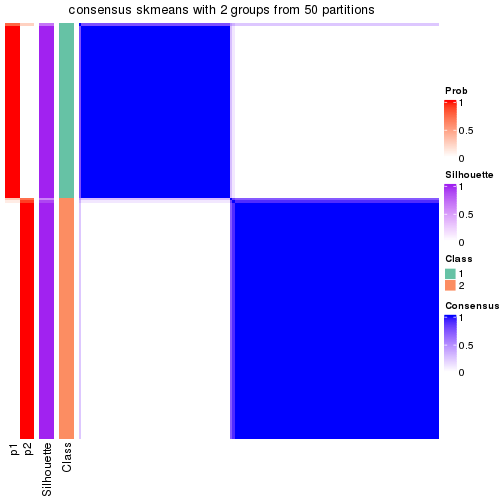
consensus_heatmap(res, k = 3)
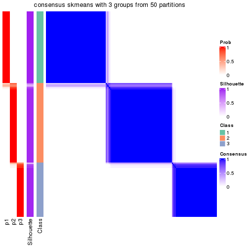
consensus_heatmap(res, k = 4)
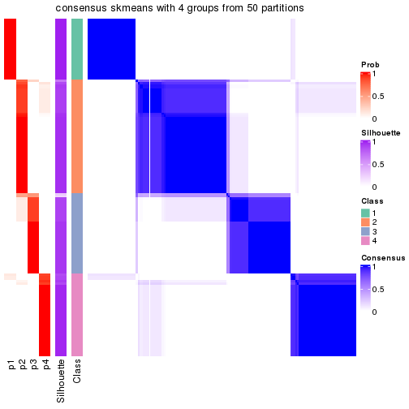
consensus_heatmap(res, k = 5)
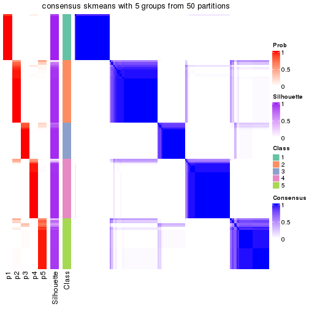
consensus_heatmap(res, k = 6)
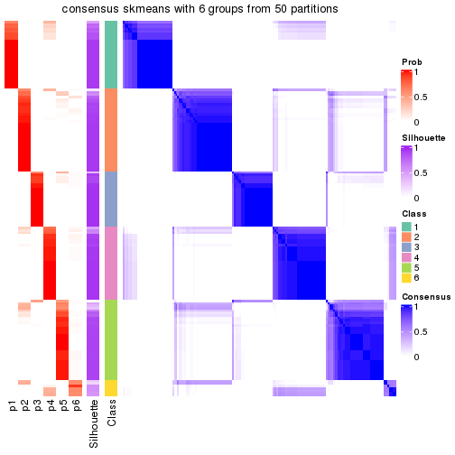
consensus_heatmap(res, k = 7)
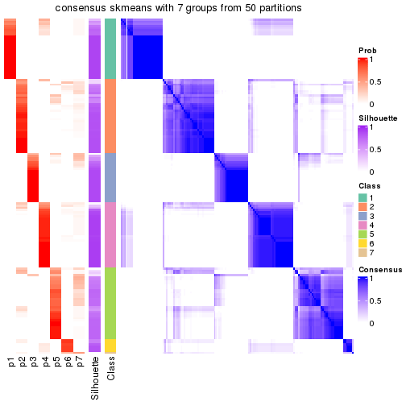
consensus_heatmap(res, k = 8)
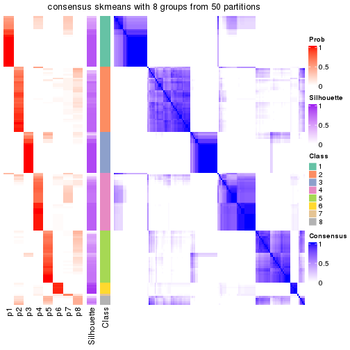
Heatmaps for the membership of samples in all partitions to see how consistent they are:
membership_heatmap(res, k = 2)
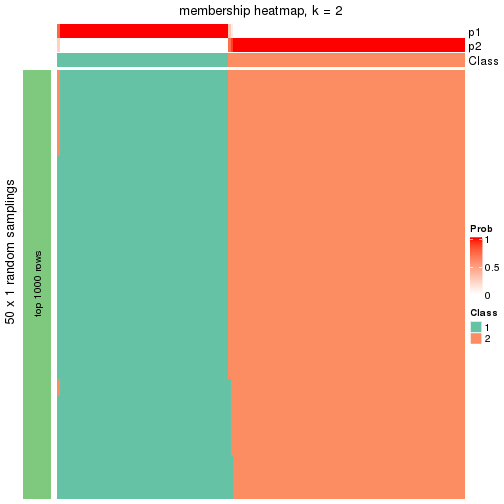
membership_heatmap(res, k = 3)
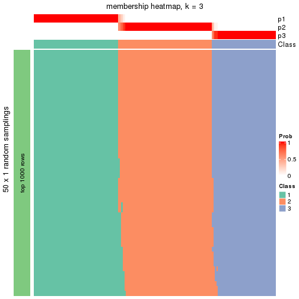
membership_heatmap(res, k = 4)
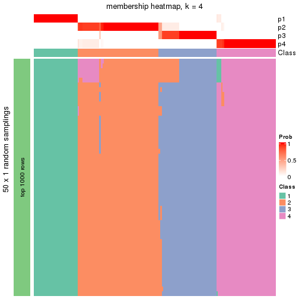
membership_heatmap(res, k = 5)
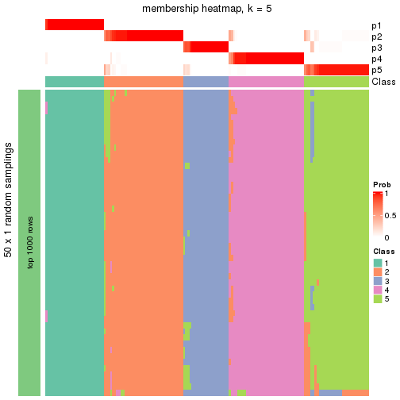
membership_heatmap(res, k = 6)
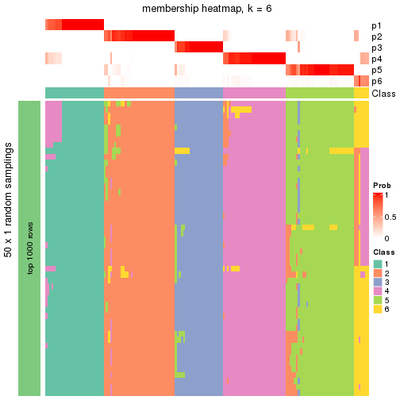
membership_heatmap(res, k = 7)
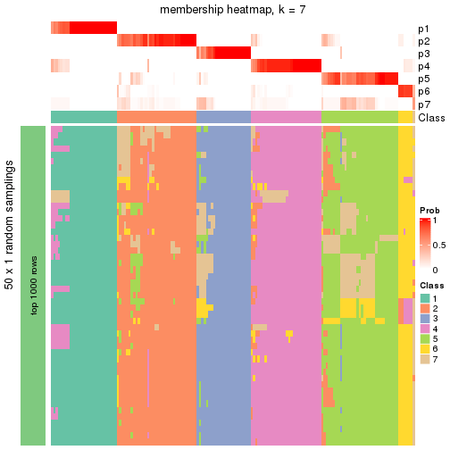
membership_heatmap(res, k = 8)
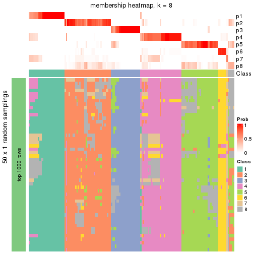
As soon as the classes for columns are determined, the signatures that are significantly different between subgroups can be looked for. Following are the heatmaps for signatures.
get_signatures(res, k = 2)

get_signatures(res, k = 3)
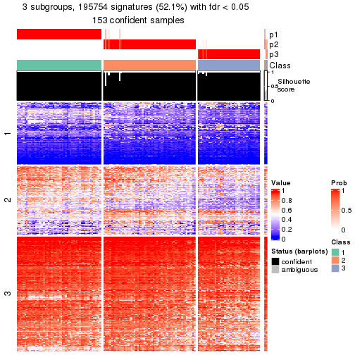
get_signatures(res, k = 4)
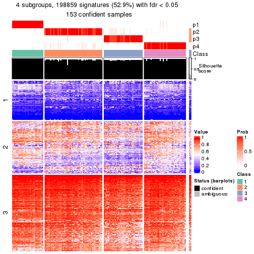
get_signatures(res, k = 5)
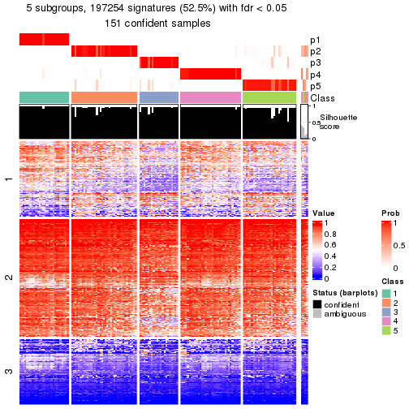
get_signatures(res, k = 6)
get_signatures(res, k = 7)
get_signatures(res, k = 8)
Compare the overlap of signatures from different k:
compare_signatures(res)
get_signature() returns a data frame invisibly. To get the list of signatures, the function
call should be assigned to a variable explicitly. In following code, if plot argument is set
to FALSE, no heatmap is plotted while only the differential analysis is performed.
# code only for demonstration
tb = get_signature(res, k = ..., plot = FALSE)
An example of the output of tb is:
#> which_row fdr mean_1 mean_2 scaled_mean_1 scaled_mean_2 km
#> 1 38 0.042760348 8.373488 9.131774 -0.5533452 0.5164555 1
#> 2 40 0.018707592 7.106213 8.469186 -0.6173731 0.5762149 1
#> 3 55 0.019134737 10.221463 11.207825 -0.6159697 0.5749050 1
#> 4 59 0.006059896 5.921854 7.869574 -0.6899429 0.6439467 1
#> 5 60 0.018055526 8.928898 10.211722 -0.6204761 0.5791110 1
#> 6 98 0.009384629 15.714769 14.887706 0.6635654 -0.6193277 2
...
The columns in tb are:
which_row: row indices corresponding to the input matrix.fdr: FDR for the differential test. mean_x: The mean value in group x.scaled_mean_x: The mean value in group x after rows are scaled.km: Row groups if k-means clustering is applied to rows (which is done by automatically selecting number of clusters).If there are too many signatures, top_signatures = ... can be set to only show the
signatures with the highest FDRs:
# code only for demonstration
# e.g. to show the top 500 most significant rows
tb = get_signature(res, k = ..., top_signatures = 500)
If the signatures are defined as these which are uniquely high in current group, diff_method argument
can be set to "uniquely_high_in_one_group":
# code only for demonstration
tb = get_signature(res, k = ..., diff_method = "uniquely_high_in_one_group")
UMAP plot which shows how samples are separated.
dimension_reduction(res, k = 2, method = "UMAP")
dimension_reduction(res, k = 3, method = "UMAP")
dimension_reduction(res, k = 4, method = "UMAP")
dimension_reduction(res, k = 5, method = "UMAP")
dimension_reduction(res, k = 6, method = "UMAP")
dimension_reduction(res, k = 7, method = "UMAP")
dimension_reduction(res, k = 8, method = "UMAP")
Following heatmap shows how subgroups are split when increasing k:
collect_classes(res)
If matrix rows can be associated to genes, consider to use functional_enrichment(res,
...) to perform function enrichment for the signature genes. See this vignette for more detailed explanations.
Parent node: Node0. Child nodes: Node011 , Node012 , Node013-leaf , Node021 , Node022 , Node023-leaf , Node031 , Node032-leaf , Node033-leaf , Node034 .
The object with results only for a single top-value method and a single partitioning method can be extracted as:
res = res_rh["01"]
A summary of res and all the functions that can be applied to it:
res
#> A 'ConsensusPartition' object with k = 2, 3, 4, 5, 6, 7, 8.
#> On a matrix with 30000 rows and 54 columns.
#> Top rows (1000) are extracted by 'ATC' method.
#> Subgroups are detected by 'skmeans' method.
#> Performed in total 350 partitions by row resampling.
#> Best k for subgroups seems to be 3.
#>
#> Following methods can be applied to this 'ConsensusPartition' object:
#> [1] "cola_report" "collect_classes" "collect_plots"
#> [4] "collect_stats" "colnames" "compare_partitions"
#> [7] "compare_signatures" "consensus_heatmap" "dimension_reduction"
#> [10] "functional_enrichment" "get_anno_col" "get_anno"
#> [13] "get_classes" "get_consensus" "get_matrix"
#> [16] "get_membership" "get_param" "get_signatures"
#> [19] "get_stats" "is_best_k" "is_stable_k"
#> [22] "membership_heatmap" "ncol" "nrow"
#> [25] "plot_ecdf" "predict_classes" "rownames"
#> [28] "select_partition_number" "show" "suggest_best_k"
#> [31] "test_to_known_factors" "top_rows_heatmap"
collect_plots() function collects all the plots made from res for all k (number of subgroups)
into one single page to provide an easy and fast comparison between different k.
collect_plots(res)
The plots are:
k and the heatmap of
predicted classes for each k.k.k.k.All the plots in panels can be made by individual functions and they are plotted later in this section.
select_partition_number() produces several plots showing different
statistics for choosing “optimized” k. There are following statistics:
k;k, the area increased is defined as \(A_k - A_{k-1}\).The detailed explanations of these statistics can be found in the cola vignette.
Generally speaking, higher 1-PAC score, higher mean silhouette score or higher
concordance corresponds to better partition. Rand index and Jaccard index
measure how similar the current partition is compared to partition with k-1.
If they are too similar, we won't accept k is better than k-1.
select_partition_number(res)
The numeric values for all these statistics can be obtained by get_stats().
get_stats(res)
#> k 1-PAC mean_silhouette concordance area_increased Rand Jaccard
#> 2 2 1.000 0.999 0.999 0.5070 0.493 0.493
#> 3 3 0.965 0.954 0.981 0.2312 0.788 0.607
#> 4 4 0.797 0.762 0.888 0.1086 0.888 0.714
#> 5 5 0.731 0.702 0.864 0.0655 0.935 0.796
#> 6 6 0.696 0.534 0.794 0.0778 0.885 0.614
#> 7 7 0.710 0.592 0.771 0.0389 0.917 0.636
#> 8 8 0.722 0.518 0.734 0.0264 0.933 0.661
suggest_best_k() suggests the best \(k\) based on these statistics. The rules are as follows:
suggest_best_k(res)
#> [1] 3
#> attr(,"optional")
#> [1] 2
There is also optional best \(k\) = 2 that is worth to check.
Following is the table of the partitions (You need to click the show/hide
code output link to see it). The membership matrix (columns with name p*)
is inferred by
clue::cl_consensus()
function with the SE method. Basically the value in the membership matrix
represents the probability to belong to a certain group. The finall subgroup
label for an item is determined with the group with highest probability it
belongs to.
In get_classes() function, the entropy is calculated from the membership
matrix and the silhouette score is calculated from the consensus matrix.
cbind(get_classes(res, k = 2), get_membership(res, k = 2))
#> class entropy silhouette p1 p2
#> TCGA.19.A6J4.01 1 0.000 1.000 1.00 0.00
#> TCGA.32.1980.01 2 0.000 0.998 0.00 1.00
#> TCGA.14.0862.01 1 0.000 1.000 1.00 0.00
#> TCGA.76.6282.01 1 0.000 1.000 1.00 0.00
#> TCGA.06.A5U1.01 1 0.000 1.000 1.00 0.00
#> TCGA.RR.A6KB.01 2 0.000 0.998 0.00 1.00
#> TCGA.76.6193.01 2 0.000 0.998 0.00 1.00
#> TCGA.14.1450.01 2 0.141 0.980 0.02 0.98
#> TCGA.76.6657.01 1 0.000 1.000 1.00 0.00
#> TCGA.06.AABW.11 2 0.000 0.998 0.00 1.00
#> TCGA.06.6391.01 2 0.000 0.998 0.00 1.00
#> TCGA.76.6662.01 1 0.000 1.000 1.00 0.00
#> TCGA.14.0736.01 1 0.000 1.000 1.00 0.00
#> TCGA.19.5955.01 1 0.000 1.000 1.00 0.00
#> TCGA.06.6697.01 1 0.000 1.000 1.00 0.00
#> TCGA.RR.A6KA.01 2 0.000 0.998 0.00 1.00
#> TCGA.19.5953.01 2 0.000 0.998 0.00 1.00
#> TCGA.19.1389.01 1 0.000 1.000 1.00 0.00
#> TCGA.41.6646.01 2 0.141 0.980 0.02 0.98
#> TCGA.28.5211.01 1 0.000 1.000 1.00 0.00
#> TCGA.76.6663.01 2 0.000 0.998 0.00 1.00
#> TCGA.06.5410.01 1 0.000 1.000 1.00 0.00
#> TCGA.26.6173.01 1 0.000 1.000 1.00 0.00
#> TCGA.14.1043.01 2 0.000 0.998 0.00 1.00
#> TCGA.06.6698.01 2 0.000 0.998 0.00 1.00
#> TCGA.81.5911.01 1 0.000 1.000 1.00 0.00
#> TCGA.06.6390.01 2 0.000 0.998 0.00 1.00
#> TCGA.19.5947.01 1 0.000 1.000 1.00 0.00
#> TCGA.06.6700.01 2 0.000 0.998 0.00 1.00
#> TCGA.28.2501.01 2 0.000 0.998 0.00 1.00
#> TCGA.28.2510.01 2 0.000 0.998 0.00 1.00
#> TCGA.06.1806.01 2 0.000 0.998 0.00 1.00
#> TCGA.06.0650.01 2 0.000 0.998 0.00 1.00
#> TCGA.74.6575.01 2 0.000 0.998 0.00 1.00
#> TCGA.74.6573.11 2 0.000 0.998 0.00 1.00
#> TCGA.06.5858.01 2 0.000 0.998 0.00 1.00
#> TCGA.76.6192.01 1 0.000 1.000 1.00 0.00
#> TCGA.19.1389.02 1 0.000 1.000 1.00 0.00
#> TCGA.28.6450.01 2 0.000 0.998 0.00 1.00
#> TCGA.14.0781.01 1 0.000 1.000 1.00 0.00
#> TCGA.06.A6S1.01 2 0.000 0.998 0.00 1.00
#> TCGA.15.1444.01 2 0.000 0.998 0.00 1.00
#> TCGA.06.5412.01 1 0.000 1.000 1.00 0.00
#> TCGA.14.0736.02 1 0.000 1.000 1.00 0.00
#> TCGA.26.6174.01 2 0.000 0.998 0.00 1.00
#> TCGA.28.5213.01 1 0.000 1.000 1.00 0.00
#> TCGA.06.0190.02 1 0.000 1.000 1.00 0.00
#> TCGA.19.4065.02 1 0.000 1.000 1.00 0.00
#> TCGA.06.0171.02 1 0.000 1.000 1.00 0.00
#> TCGA.4W.AA9T.01 1 0.000 1.000 1.00 0.00
#> TCGA.06.0190.01 1 0.000 1.000 1.00 0.00
#> TCGA.19.4065.01 1 0.000 1.000 1.00 0.00
#> TCGA.28.5218.01 1 0.000 1.000 1.00 0.00
#> TCGA.76.4928.01 1 0.000 1.000 1.00 0.00
cbind(get_classes(res, k = 3), get_membership(res, k = 3))
#> class entropy silhouette p1 p2 p3
#> TCGA.19.A6J4.01 1 0.0000 0.994 1.00 0.00 0.00
#> TCGA.32.1980.01 3 0.4002 0.802 0.00 0.16 0.84
#> TCGA.14.0862.01 1 0.0000 0.994 1.00 0.00 0.00
#> TCGA.76.6282.01 1 0.0000 0.994 1.00 0.00 0.00
#> TCGA.06.A5U1.01 1 0.0000 0.994 1.00 0.00 0.00
#> TCGA.RR.A6KB.01 3 0.0000 0.976 0.00 0.00 1.00
#> TCGA.76.6193.01 2 0.2066 0.915 0.00 0.94 0.06
#> TCGA.14.1450.01 2 0.0000 0.955 0.00 1.00 0.00
#> TCGA.76.6657.01 2 0.0000 0.955 0.00 1.00 0.00
#> TCGA.06.AABW.11 3 0.0000 0.976 0.00 0.00 1.00
#> TCGA.06.6391.01 3 0.0000 0.976 0.00 0.00 1.00
#> TCGA.76.6662.01 1 0.0000 0.994 1.00 0.00 0.00
#> TCGA.14.0736.01 1 0.0000 0.994 1.00 0.00 0.00
#> TCGA.19.5955.01 1 0.0000 0.994 1.00 0.00 0.00
#> TCGA.06.6697.01 1 0.0000 0.994 1.00 0.00 0.00
#> TCGA.RR.A6KA.01 2 0.2959 0.878 0.00 0.90 0.10
#> TCGA.19.5953.01 2 0.0000 0.955 0.00 1.00 0.00
#> TCGA.19.1389.01 2 0.6126 0.319 0.40 0.60 0.00
#> TCGA.41.6646.01 2 0.0000 0.955 0.00 1.00 0.00
#> TCGA.28.5211.01 1 0.0000 0.994 1.00 0.00 0.00
#> TCGA.76.6663.01 2 0.0000 0.955 0.00 1.00 0.00
#> TCGA.06.5410.01 1 0.0000 0.994 1.00 0.00 0.00
#> TCGA.26.6173.01 1 0.3340 0.851 0.88 0.12 0.00
#> TCGA.14.1043.01 2 0.0000 0.955 0.00 1.00 0.00
#> TCGA.06.6698.01 2 0.0000 0.955 0.00 1.00 0.00
#> TCGA.81.5911.01 2 0.0000 0.955 0.00 1.00 0.00
#> TCGA.06.6390.01 2 0.0000 0.955 0.00 1.00 0.00
#> TCGA.19.5947.01 1 0.0000 0.994 1.00 0.00 0.00
#> TCGA.06.6700.01 2 0.2959 0.878 0.00 0.90 0.10
#> TCGA.28.2501.01 2 0.2066 0.915 0.00 0.94 0.06
#> TCGA.28.2510.01 3 0.0000 0.976 0.00 0.00 1.00
#> TCGA.06.1806.01 2 0.0000 0.955 0.00 1.00 0.00
#> TCGA.06.0650.01 2 0.0892 0.944 0.00 0.98 0.02
#> TCGA.74.6575.01 2 0.0000 0.955 0.00 1.00 0.00
#> TCGA.74.6573.11 3 0.0000 0.976 0.00 0.00 1.00
#> TCGA.06.5858.01 2 0.0000 0.955 0.00 1.00 0.00
#> TCGA.76.6192.01 2 0.0000 0.955 0.00 1.00 0.00
#> TCGA.19.1389.02 1 0.0000 0.994 1.00 0.00 0.00
#> TCGA.28.6450.01 2 0.0000 0.955 0.00 1.00 0.00
#> TCGA.14.0781.01 1 0.0000 0.994 1.00 0.00 0.00
#> TCGA.06.A6S1.01 2 0.0000 0.955 0.00 1.00 0.00
#> TCGA.15.1444.01 3 0.0000 0.976 0.00 0.00 1.00
#> TCGA.06.5412.01 1 0.0000 0.994 1.00 0.00 0.00
#> TCGA.14.0736.02 1 0.0000 0.994 1.00 0.00 0.00
#> TCGA.26.6174.01 3 0.0000 0.976 0.00 0.00 1.00
#> TCGA.28.5213.01 1 0.0000 0.994 1.00 0.00 0.00
#> TCGA.06.0190.02 1 0.0000 0.994 1.00 0.00 0.00
#> TCGA.19.4065.02 1 0.0000 0.994 1.00 0.00 0.00
#> TCGA.06.0171.02 1 0.0000 0.994 1.00 0.00 0.00
#> TCGA.4W.AA9T.01 1 0.0000 0.994 1.00 0.00 0.00
#> TCGA.06.0190.01 1 0.0000 0.994 1.00 0.00 0.00
#> TCGA.19.4065.01 1 0.0000 0.994 1.00 0.00 0.00
#> TCGA.28.5218.01 1 0.0000 0.994 1.00 0.00 0.00
#> TCGA.76.4928.01 1 0.0000 0.994 1.00 0.00 0.00
cbind(get_classes(res, k = 4), get_membership(res, k = 4))
#> class entropy silhouette p1 p2 p3 p4
#> TCGA.19.A6J4.01 1 0.0000 0.991 1.00 0.00 0.00 0.00
#> TCGA.32.1980.01 4 0.3972 0.539 0.00 0.08 0.08 0.84
#> TCGA.14.0862.01 1 0.0707 0.978 0.98 0.02 0.00 0.00
#> TCGA.76.6282.01 1 0.0000 0.991 1.00 0.00 0.00 0.00
#> TCGA.06.A5U1.01 1 0.0707 0.978 0.98 0.02 0.00 0.00
#> TCGA.RR.A6KB.01 3 0.4907 0.637 0.00 0.00 0.58 0.42
#> TCGA.76.6193.01 4 0.0000 0.712 0.00 0.00 0.00 1.00
#> TCGA.14.1450.01 2 0.3400 0.699 0.00 0.82 0.00 0.18
#> TCGA.76.6657.01 2 0.3172 0.700 0.00 0.84 0.00 0.16
#> TCGA.06.AABW.11 3 0.0000 0.790 0.00 0.00 1.00 0.00
#> TCGA.06.6391.01 3 0.0000 0.790 0.00 0.00 1.00 0.00
#> TCGA.76.6662.01 1 0.2647 0.871 0.88 0.12 0.00 0.00
#> TCGA.14.0736.01 1 0.0000 0.991 1.00 0.00 0.00 0.00
#> TCGA.19.5955.01 1 0.0000 0.991 1.00 0.00 0.00 0.00
#> TCGA.06.6697.01 1 0.0000 0.991 1.00 0.00 0.00 0.00
#> TCGA.RR.A6KA.01 4 0.0000 0.712 0.00 0.00 0.00 1.00
#> TCGA.19.5953.01 4 0.4624 0.275 0.00 0.34 0.00 0.66
#> TCGA.19.1389.01 2 0.5713 0.360 0.34 0.62 0.00 0.04
#> TCGA.41.6646.01 2 0.3172 0.700 0.00 0.84 0.00 0.16
#> TCGA.28.5211.01 1 0.0000 0.991 1.00 0.00 0.00 0.00
#> TCGA.76.6663.01 4 0.3801 0.531 0.00 0.22 0.00 0.78
#> TCGA.06.5410.01 1 0.0000 0.991 1.00 0.00 0.00 0.00
#> TCGA.26.6173.01 2 0.3610 0.538 0.20 0.80 0.00 0.00
#> TCGA.14.1043.01 4 0.4994 -0.217 0.00 0.48 0.00 0.52
#> TCGA.06.6698.01 2 0.3801 0.514 0.00 0.78 0.00 0.22
#> TCGA.81.5911.01 2 0.3172 0.700 0.00 0.84 0.00 0.16
#> TCGA.06.6390.01 2 0.3801 0.514 0.00 0.78 0.00 0.22
#> TCGA.19.5947.01 1 0.0000 0.991 1.00 0.00 0.00 0.00
#> TCGA.06.6700.01 4 0.0000 0.712 0.00 0.00 0.00 1.00
#> TCGA.28.2501.01 4 0.0000 0.712 0.00 0.00 0.00 1.00
#> TCGA.28.2510.01 3 0.2921 0.793 0.00 0.00 0.86 0.14
#> TCGA.06.1806.01 2 0.3801 0.514 0.00 0.78 0.00 0.22
#> TCGA.06.0650.01 4 0.2011 0.664 0.00 0.08 0.00 0.92
#> TCGA.74.6575.01 2 0.3400 0.699 0.00 0.82 0.00 0.18
#> TCGA.74.6573.11 3 0.0000 0.790 0.00 0.00 1.00 0.00
#> TCGA.06.5858.01 2 0.4134 0.445 0.00 0.74 0.00 0.26
#> TCGA.76.6192.01 2 0.4790 0.361 0.00 0.62 0.00 0.38
#> TCGA.19.1389.02 1 0.0000 0.991 1.00 0.00 0.00 0.00
#> TCGA.28.6450.01 2 0.3400 0.699 0.00 0.82 0.00 0.18
#> TCGA.14.0781.01 1 0.0000 0.991 1.00 0.00 0.00 0.00
#> TCGA.06.A6S1.01 4 0.4907 0.268 0.00 0.42 0.00 0.58
#> TCGA.15.1444.01 3 0.4277 0.748 0.00 0.00 0.72 0.28
#> TCGA.06.5412.01 1 0.0000 0.991 1.00 0.00 0.00 0.00
#> TCGA.14.0736.02 1 0.0000 0.991 1.00 0.00 0.00 0.00
#> TCGA.26.6174.01 3 0.4907 0.637 0.00 0.00 0.58 0.42
#> TCGA.28.5213.01 1 0.0000 0.991 1.00 0.00 0.00 0.00
#> TCGA.06.0190.02 1 0.0000 0.991 1.00 0.00 0.00 0.00
#> TCGA.19.4065.02 1 0.0000 0.991 1.00 0.00 0.00 0.00
#> TCGA.06.0171.02 1 0.0000 0.991 1.00 0.00 0.00 0.00
#> TCGA.4W.AA9T.01 1 0.0707 0.978 0.98 0.02 0.00 0.00
#> TCGA.06.0190.01 1 0.0707 0.978 0.98 0.02 0.00 0.00
#> TCGA.19.4065.01 1 0.0000 0.991 1.00 0.00 0.00 0.00
#> TCGA.28.5218.01 1 0.0000 0.991 1.00 0.00 0.00 0.00
#> TCGA.76.4928.01 1 0.0000 0.991 1.00 0.00 0.00 0.00
cbind(get_classes(res, k = 5), get_membership(res, k = 5))
#> class entropy silhouette p1 p2 p3 p4 p5
#> TCGA.19.A6J4.01 1 0.3106 0.8654 0.84 0.02 0.00 0.00 0.14
#> TCGA.32.1980.01 4 0.1648 0.6261 0.00 0.00 0.02 0.94 0.04
#> TCGA.14.0862.01 1 0.3521 0.8459 0.82 0.04 0.00 0.00 0.14
#> TCGA.76.6282.01 1 0.1043 0.9119 0.96 0.00 0.00 0.00 0.04
#> TCGA.06.A5U1.01 1 0.4075 0.8137 0.78 0.06 0.00 0.00 0.16
#> TCGA.RR.A6KB.01 4 0.4921 0.1733 0.00 0.00 0.34 0.62 0.04
#> TCGA.76.6193.01 4 0.0000 0.6548 0.00 0.00 0.00 1.00 0.00
#> TCGA.14.1450.01 2 0.1216 0.7213 0.00 0.96 0.00 0.02 0.02
#> TCGA.76.6657.01 2 0.1732 0.7344 0.00 0.92 0.00 0.00 0.08
#> TCGA.06.AABW.11 3 0.0000 0.8442 0.00 0.00 1.00 0.00 0.00
#> TCGA.06.6391.01 3 0.0000 0.8442 0.00 0.00 1.00 0.00 0.00
#> TCGA.76.6662.01 1 0.6422 0.1476 0.46 0.36 0.00 0.00 0.18
#> TCGA.14.0736.01 1 0.2020 0.8929 0.90 0.00 0.00 0.00 0.10
#> TCGA.19.5955.01 1 0.0000 0.9206 1.00 0.00 0.00 0.00 0.00
#> TCGA.06.6697.01 1 0.0000 0.9206 1.00 0.00 0.00 0.00 0.00
#> TCGA.RR.A6KA.01 4 0.0000 0.6548 0.00 0.00 0.00 1.00 0.00
#> TCGA.19.5953.01 4 0.4829 -0.1201 0.00 0.48 0.00 0.50 0.02
#> TCGA.19.1389.01 2 0.5961 0.4565 0.16 0.58 0.00 0.00 0.26
#> TCGA.41.6646.01 2 0.0609 0.7300 0.00 0.98 0.00 0.02 0.00
#> TCGA.28.5211.01 1 0.0000 0.9206 1.00 0.00 0.00 0.00 0.00
#> TCGA.76.6663.01 4 0.4360 0.3727 0.00 0.30 0.00 0.68 0.02
#> TCGA.06.5410.01 1 0.0000 0.9206 1.00 0.00 0.00 0.00 0.00
#> TCGA.26.6173.01 2 0.2929 0.6944 0.00 0.82 0.00 0.00 0.18
#> TCGA.14.1043.01 2 0.5068 0.4244 0.00 0.64 0.00 0.30 0.06
#> TCGA.06.6698.01 5 0.3690 0.9388 0.00 0.20 0.00 0.02 0.78
#> TCGA.81.5911.01 2 0.2280 0.7211 0.00 0.88 0.00 0.00 0.12
#> TCGA.06.6390.01 5 0.3895 0.8331 0.00 0.32 0.00 0.00 0.68
#> TCGA.19.5947.01 1 0.0000 0.9206 1.00 0.00 0.00 0.00 0.00
#> TCGA.06.6700.01 4 0.0000 0.6548 0.00 0.00 0.00 1.00 0.00
#> TCGA.28.2501.01 4 0.0000 0.6548 0.00 0.00 0.00 1.00 0.00
#> TCGA.28.2510.01 3 0.4921 0.3375 0.00 0.00 0.62 0.34 0.04
#> TCGA.06.1806.01 5 0.3852 0.9362 0.00 0.22 0.00 0.02 0.76
#> TCGA.06.0650.01 4 0.0609 0.6480 0.00 0.00 0.00 0.98 0.02
#> TCGA.74.6575.01 2 0.1216 0.7213 0.00 0.96 0.00 0.02 0.02
#> TCGA.74.6573.11 3 0.0000 0.8442 0.00 0.00 1.00 0.00 0.00
#> TCGA.06.5858.01 5 0.3690 0.9388 0.00 0.20 0.00 0.02 0.78
#> TCGA.76.6192.01 2 0.5597 0.6141 0.00 0.64 0.00 0.20 0.16
#> TCGA.19.1389.02 1 0.2616 0.8841 0.88 0.02 0.00 0.00 0.10
#> TCGA.28.6450.01 2 0.2012 0.7056 0.00 0.92 0.00 0.06 0.02
#> TCGA.14.0781.01 1 0.0000 0.9206 1.00 0.00 0.00 0.00 0.00
#> TCGA.06.A6S1.01 4 0.6219 -0.1499 0.00 0.42 0.00 0.44 0.14
#> TCGA.15.1444.01 4 0.5173 -0.1428 0.00 0.00 0.46 0.50 0.04
#> TCGA.06.5412.01 1 0.0000 0.9206 1.00 0.00 0.00 0.00 0.00
#> TCGA.14.0736.02 1 0.3106 0.8654 0.84 0.02 0.00 0.00 0.14
#> TCGA.26.6174.01 4 0.5095 0.0288 0.00 0.00 0.40 0.56 0.04
#> TCGA.28.5213.01 1 0.0000 0.9206 1.00 0.00 0.00 0.00 0.00
#> TCGA.06.0190.02 1 0.0000 0.9206 1.00 0.00 0.00 0.00 0.00
#> TCGA.19.4065.02 1 0.0609 0.9168 0.98 0.00 0.00 0.00 0.02
#> TCGA.06.0171.02 1 0.0000 0.9206 1.00 0.00 0.00 0.00 0.00
#> TCGA.4W.AA9T.01 1 0.3319 0.8500 0.82 0.02 0.00 0.00 0.16
#> TCGA.06.0190.01 1 0.3319 0.8500 0.82 0.02 0.00 0.00 0.16
#> TCGA.19.4065.01 1 0.0000 0.9206 1.00 0.00 0.00 0.00 0.00
#> TCGA.28.5218.01 1 0.0000 0.9206 1.00 0.00 0.00 0.00 0.00
#> TCGA.76.4928.01 1 0.0000 0.9206 1.00 0.00 0.00 0.00 0.00
cbind(get_classes(res, k = 6), get_membership(res, k = 6))
#> class entropy silhouette p1 p2 p3 p4 p5 p6
#> TCGA.19.A6J4.01 1 0.4337 -0.1389 0.50 0.00 0.00 0.00 0.02 0.48
#> TCGA.32.1980.01 4 0.2094 0.7142 0.00 0.00 0.00 0.90 0.02 0.08
#> TCGA.14.0862.01 1 0.4651 -0.1616 0.48 0.00 0.00 0.00 0.04 0.48
#> TCGA.76.6282.01 1 0.4420 0.1444 0.62 0.00 0.00 0.00 0.04 0.34
#> TCGA.06.A5U1.01 6 0.4144 0.3310 0.36 0.00 0.00 0.00 0.02 0.62
#> TCGA.RR.A6KB.01 4 0.4887 0.5171 0.00 0.00 0.22 0.68 0.02 0.08
#> TCGA.76.6193.01 4 0.0000 0.7454 0.00 0.00 0.00 1.00 0.00 0.00
#> TCGA.14.1450.01 2 0.0000 0.6929 0.00 1.00 0.00 0.00 0.00 0.00
#> TCGA.76.6657.01 2 0.1556 0.6631 0.00 0.92 0.00 0.00 0.00 0.08
#> TCGA.06.AABW.11 3 0.0000 0.7997 0.00 0.00 1.00 0.00 0.00 0.00
#> TCGA.06.6391.01 3 0.0000 0.7997 0.00 0.00 1.00 0.00 0.00 0.00
#> TCGA.76.6662.01 6 0.3544 0.5665 0.12 0.08 0.00 0.00 0.00 0.80
#> TCGA.14.0736.01 1 0.5115 -0.1293 0.46 0.00 0.00 0.00 0.08 0.46
#> TCGA.19.5955.01 1 0.1480 0.7238 0.94 0.00 0.00 0.00 0.02 0.04
#> TCGA.06.6697.01 1 0.0000 0.7289 1.00 0.00 0.00 0.00 0.00 0.00
#> TCGA.RR.A6KA.01 4 0.0000 0.7454 0.00 0.00 0.00 1.00 0.00 0.00
#> TCGA.19.5953.01 2 0.5896 0.3969 0.00 0.46 0.00 0.40 0.02 0.12
#> TCGA.19.1389.01 6 0.4756 0.4726 0.10 0.10 0.00 0.00 0.06 0.74
#> TCGA.41.6646.01 2 0.0000 0.6929 0.00 1.00 0.00 0.00 0.00 0.00
#> TCGA.28.5211.01 1 0.1480 0.7238 0.94 0.00 0.00 0.00 0.02 0.04
#> TCGA.76.6663.01 2 0.3828 0.3893 0.00 0.56 0.00 0.44 0.00 0.00
#> TCGA.06.5410.01 1 0.2094 0.6820 0.90 0.00 0.00 0.00 0.02 0.08
#> TCGA.26.6173.01 6 0.3819 0.3489 0.02 0.28 0.00 0.00 0.00 0.70
#> TCGA.14.1043.01 2 0.6037 0.4903 0.00 0.58 0.00 0.24 0.06 0.12
#> TCGA.06.6698.01 5 0.2260 0.8988 0.00 0.14 0.00 0.00 0.86 0.00
#> TCGA.81.5911.01 2 0.2454 0.5969 0.00 0.84 0.00 0.00 0.00 0.16
#> TCGA.06.6390.01 5 0.3499 0.7019 0.00 0.32 0.00 0.00 0.68 0.00
#> TCGA.19.5947.01 1 0.0000 0.7289 1.00 0.00 0.00 0.00 0.00 0.00
#> TCGA.06.6700.01 4 0.0000 0.7454 0.00 0.00 0.00 1.00 0.00 0.00
#> TCGA.28.2501.01 4 0.0000 0.7454 0.00 0.00 0.00 1.00 0.00 0.00
#> TCGA.28.2510.01 3 0.5514 0.0461 0.00 0.00 0.52 0.38 0.02 0.08
#> TCGA.06.1806.01 5 0.2260 0.8988 0.00 0.14 0.00 0.00 0.86 0.00
#> TCGA.06.0650.01 4 0.1480 0.7242 0.00 0.00 0.00 0.94 0.04 0.02
#> TCGA.74.6575.01 2 0.2350 0.6580 0.00 0.88 0.00 0.00 0.02 0.10
#> TCGA.74.6573.11 3 0.0000 0.7997 0.00 0.00 1.00 0.00 0.00 0.00
#> TCGA.06.5858.01 5 0.2350 0.8642 0.00 0.10 0.00 0.00 0.88 0.02
#> TCGA.76.6192.01 6 0.4247 0.2423 0.00 0.24 0.00 0.06 0.00 0.70
#> TCGA.19.1389.02 1 0.4420 0.1444 0.62 0.00 0.00 0.00 0.04 0.34
#> TCGA.28.6450.01 2 0.0937 0.6860 0.00 0.96 0.00 0.04 0.00 0.00
#> TCGA.14.0781.01 1 0.0937 0.7187 0.96 0.00 0.00 0.00 0.00 0.04
#> TCGA.06.A6S1.01 4 0.7499 -0.2825 0.00 0.24 0.00 0.32 0.14 0.30
#> TCGA.15.1444.01 4 0.5113 0.4518 0.00 0.00 0.26 0.64 0.02 0.08
#> TCGA.06.5412.01 1 0.1480 0.7238 0.94 0.00 0.00 0.00 0.02 0.04
#> TCGA.14.0736.02 6 0.4078 0.3612 0.34 0.00 0.00 0.00 0.02 0.64
#> TCGA.26.6174.01 4 0.4887 0.5171 0.00 0.00 0.22 0.68 0.02 0.08
#> TCGA.28.5213.01 1 0.1092 0.7256 0.96 0.00 0.00 0.00 0.02 0.02
#> TCGA.06.0190.02 1 0.2512 0.7005 0.88 0.00 0.00 0.00 0.06 0.06
#> TCGA.19.4065.02 1 0.3829 0.6016 0.76 0.00 0.00 0.00 0.06 0.18
#> TCGA.06.0171.02 1 0.2094 0.6820 0.90 0.00 0.00 0.00 0.02 0.08
#> TCGA.4W.AA9T.01 6 0.4646 0.0727 0.46 0.00 0.00 0.00 0.04 0.50
#> TCGA.06.0190.01 6 0.4646 0.0727 0.46 0.00 0.00 0.00 0.04 0.50
#> TCGA.19.4065.01 1 0.2794 0.6893 0.86 0.00 0.00 0.00 0.06 0.08
#> TCGA.28.5218.01 1 0.2794 0.6893 0.86 0.00 0.00 0.00 0.06 0.08
#> TCGA.76.4928.01 1 0.2190 0.7093 0.90 0.00 0.00 0.00 0.04 0.06
cbind(get_classes(res, k = 7), get_membership(res, k = 7))
#> class entropy silhouette p1 p2 p3 p4 p5 p6 p7
#> TCGA.19.A6J4.01 6 0.4705 0.311 0.44 0.00 0.00 0.00 0.00 0.48 0.08
#> TCGA.32.1980.01 4 0.2569 0.789 0.00 0.00 0.00 0.84 0.02 0.00 0.14
#> TCGA.14.0862.01 6 0.3841 0.444 0.28 0.00 0.00 0.00 0.00 0.68 0.04
#> TCGA.76.6282.01 1 0.3358 0.352 0.64 0.00 0.00 0.00 0.00 0.36 0.00
#> TCGA.06.A5U1.01 6 0.4429 0.562 0.22 0.00 0.00 0.00 0.00 0.66 0.12
#> TCGA.RR.A6KB.01 4 0.4242 0.750 0.00 0.00 0.08 0.72 0.02 0.00 0.18
#> TCGA.76.6193.01 4 0.0504 0.785 0.00 0.00 0.00 0.98 0.00 0.02 0.00
#> TCGA.14.1450.01 2 0.0504 0.672 0.00 0.98 0.00 0.00 0.00 0.00 0.02
#> TCGA.76.6657.01 2 0.1363 0.651 0.00 0.94 0.00 0.00 0.00 0.04 0.02
#> TCGA.06.AABW.11 3 0.0000 1.000 0.00 0.00 1.00 0.00 0.00 0.00 0.00
#> TCGA.06.6391.01 3 0.0000 1.000 0.00 0.00 1.00 0.00 0.00 0.00 0.00
#> TCGA.76.6662.01 6 0.3388 0.197 0.04 0.00 0.00 0.00 0.00 0.76 0.20
#> TCGA.14.0736.01 6 0.4597 0.342 0.36 0.00 0.00 0.00 0.00 0.56 0.08
#> TCGA.19.5955.01 1 0.1166 0.735 0.94 0.00 0.00 0.00 0.00 0.06 0.00
#> TCGA.06.6697.01 1 0.2163 0.720 0.88 0.00 0.00 0.00 0.00 0.10 0.02
#> TCGA.RR.A6KA.01 4 0.0504 0.785 0.00 0.00 0.00 0.98 0.00 0.02 0.00
#> TCGA.19.5953.01 2 0.5798 0.295 0.00 0.44 0.00 0.34 0.02 0.00 0.20
#> TCGA.19.1389.01 7 0.4175 0.437 0.04 0.00 0.00 0.00 0.00 0.38 0.58
#> TCGA.41.6646.01 2 0.0000 0.671 0.00 1.00 0.00 0.00 0.00 0.00 0.00
#> TCGA.28.5211.01 1 0.0504 0.717 0.98 0.00 0.00 0.00 0.00 0.00 0.02
#> TCGA.76.6663.01 2 0.4936 0.319 0.00 0.48 0.00 0.44 0.02 0.00 0.06
#> TCGA.06.5410.01 1 0.2278 0.628 0.88 0.00 0.00 0.00 0.00 0.08 0.04
#> TCGA.26.6173.01 6 0.4353 -0.157 0.00 0.10 0.00 0.00 0.00 0.66 0.24
#> TCGA.14.1043.01 2 0.6504 0.164 0.00 0.42 0.00 0.22 0.04 0.02 0.30
#> TCGA.06.6698.01 5 0.0504 0.900 0.00 0.02 0.00 0.00 0.98 0.00 0.00
#> TCGA.81.5911.01 2 0.2912 0.548 0.00 0.82 0.00 0.00 0.00 0.14 0.04
#> TCGA.06.6390.01 5 0.3228 0.774 0.00 0.16 0.00 0.00 0.80 0.02 0.02
#> TCGA.19.5947.01 1 0.1671 0.730 0.90 0.00 0.00 0.00 0.00 0.10 0.00
#> TCGA.06.6700.01 4 0.0504 0.794 0.00 0.00 0.00 0.98 0.00 0.00 0.02
#> TCGA.28.2501.01 4 0.0504 0.779 0.00 0.00 0.00 0.98 0.00 0.00 0.02
#> TCGA.28.2510.01 4 0.5709 0.384 0.00 0.00 0.34 0.46 0.02 0.00 0.18
#> TCGA.06.1806.01 5 0.0504 0.900 0.00 0.02 0.00 0.00 0.98 0.00 0.00
#> TCGA.06.0650.01 4 0.1363 0.755 0.00 0.00 0.00 0.94 0.02 0.00 0.04
#> TCGA.74.6575.01 2 0.3722 0.576 0.00 0.76 0.00 0.04 0.02 0.00 0.18
#> TCGA.74.6573.11 3 0.0000 1.000 0.00 0.00 1.00 0.00 0.00 0.00 0.00
#> TCGA.06.5858.01 5 0.2769 0.863 0.00 0.02 0.00 0.00 0.86 0.04 0.08
#> TCGA.76.6192.01 7 0.6120 0.574 0.00 0.14 0.00 0.08 0.00 0.30 0.48
#> TCGA.19.1389.02 6 0.4514 0.267 0.46 0.00 0.00 0.00 0.00 0.48 0.06
#> TCGA.28.6450.01 2 0.1006 0.670 0.00 0.96 0.00 0.00 0.02 0.00 0.02
#> TCGA.14.0781.01 1 0.0504 0.717 0.98 0.00 0.00 0.00 0.00 0.00 0.02
#> TCGA.06.A6S1.01 7 0.6291 0.387 0.00 0.06 0.00 0.18 0.16 0.04 0.56
#> TCGA.15.1444.01 4 0.4644 0.721 0.00 0.00 0.12 0.68 0.02 0.00 0.18
#> TCGA.06.5412.01 1 0.0504 0.717 0.98 0.00 0.00 0.00 0.00 0.00 0.02
#> TCGA.14.0736.02 6 0.5402 0.147 0.24 0.00 0.00 0.00 0.00 0.48 0.28
#> TCGA.26.6174.01 4 0.4455 0.738 0.00 0.00 0.10 0.70 0.02 0.00 0.18
#> TCGA.28.5213.01 1 0.1671 0.731 0.90 0.00 0.00 0.00 0.00 0.10 0.00
#> TCGA.06.0190.02 1 0.3417 0.620 0.72 0.00 0.00 0.00 0.00 0.26 0.02
#> TCGA.19.4065.02 1 0.3994 0.148 0.50 0.00 0.00 0.00 0.00 0.48 0.02
#> TCGA.06.0171.02 1 0.2163 0.620 0.88 0.00 0.00 0.00 0.00 0.10 0.02
#> TCGA.4W.AA9T.01 6 0.3221 0.474 0.32 0.00 0.00 0.00 0.00 0.68 0.00
#> TCGA.06.0190.01 6 0.2708 0.540 0.22 0.00 0.00 0.00 0.00 0.78 0.00
#> TCGA.19.4065.01 1 0.3606 0.538 0.68 0.00 0.00 0.00 0.00 0.30 0.02
#> TCGA.28.5218.01 1 0.3755 0.505 0.64 0.00 0.00 0.00 0.00 0.34 0.02
#> TCGA.76.4928.01 1 0.2572 0.678 0.80 0.00 0.00 0.00 0.00 0.20 0.00
cbind(get_classes(res, k = 8), get_membership(res, k = 8))
#> class entropy silhouette p1 p2 p3 p4 p5 p6 p7 p8
#> TCGA.19.A6J4.01 1 0.5270 -0.1752 0.36 0.00 0.00 0.00 0.00 0.30 0.34 0.00
#> TCGA.32.1980.01 4 0.1341 0.6809 0.00 0.00 0.00 0.92 0.00 0.00 0.00 0.08
#> TCGA.14.0862.01 6 0.2404 0.6673 0.14 0.00 0.00 0.00 0.00 0.84 0.00 0.02
#> TCGA.76.6282.01 1 0.4100 0.1976 0.58 0.00 0.00 0.00 0.00 0.36 0.06 0.00
#> TCGA.06.A5U1.01 6 0.4722 0.5523 0.10 0.00 0.00 0.00 0.00 0.66 0.18 0.06
#> TCGA.RR.A6KB.01 4 0.0000 0.6771 0.00 0.00 0.00 1.00 0.00 0.00 0.00 0.00
#> TCGA.76.6193.01 4 0.3714 0.5690 0.00 0.00 0.00 0.54 0.00 0.00 0.02 0.44
#> TCGA.14.1450.01 2 0.0941 0.6861 0.00 0.96 0.00 0.00 0.00 0.02 0.00 0.02
#> TCGA.76.6657.01 2 0.2071 0.6488 0.00 0.90 0.00 0.00 0.00 0.04 0.04 0.02
#> TCGA.06.AABW.11 3 0.0000 1.0000 0.00 0.00 1.00 0.00 0.00 0.00 0.00 0.00
#> TCGA.06.6391.01 3 0.0000 1.0000 0.00 0.00 1.00 0.00 0.00 0.00 0.00 0.00
#> TCGA.76.6662.01 6 0.4040 -0.0477 0.02 0.00 0.00 0.00 0.00 0.58 0.38 0.02
#> TCGA.14.0736.01 6 0.5469 0.5021 0.16 0.00 0.00 0.00 0.00 0.54 0.24 0.06
#> TCGA.19.5955.01 1 0.0941 0.6951 0.96 0.00 0.00 0.00 0.00 0.02 0.00 0.02
#> TCGA.06.6697.01 1 0.1341 0.6832 0.92 0.00 0.00 0.00 0.00 0.08 0.00 0.00
#> TCGA.RR.A6KA.01 4 0.3237 0.6183 0.00 0.00 0.00 0.60 0.00 0.00 0.00 0.40
#> TCGA.19.5953.01 8 0.5497 0.4734 0.00 0.30 0.00 0.08 0.02 0.00 0.06 0.54
#> TCGA.19.1389.01 7 0.3262 0.5060 0.04 0.00 0.00 0.00 0.02 0.10 0.82 0.02
#> TCGA.41.6646.01 2 0.0808 0.6858 0.00 0.96 0.00 0.00 0.00 0.00 0.00 0.04
#> TCGA.28.5211.01 1 0.0808 0.6978 0.96 0.00 0.00 0.00 0.00 0.00 0.00 0.04
#> TCGA.76.6663.01 2 0.5591 -0.5461 0.00 0.42 0.00 0.14 0.02 0.02 0.00 0.40
#> TCGA.06.5410.01 1 0.2224 0.6398 0.86 0.00 0.00 0.00 0.00 0.00 0.12 0.02
#> TCGA.26.6173.01 7 0.4619 0.1641 0.00 0.06 0.00 0.00 0.00 0.44 0.48 0.02
#> TCGA.14.1043.01 8 0.6277 0.4621 0.00 0.30 0.00 0.00 0.12 0.00 0.20 0.38
#> TCGA.06.6698.01 5 0.0941 0.7629 0.00 0.02 0.00 0.00 0.96 0.00 0.02 0.00
#> TCGA.81.5911.01 2 0.3078 0.5805 0.00 0.82 0.00 0.00 0.00 0.10 0.06 0.02
#> TCGA.06.6390.01 5 0.4077 0.6775 0.00 0.08 0.00 0.00 0.76 0.02 0.04 0.10
#> TCGA.19.5947.01 1 0.0808 0.6962 0.96 0.00 0.00 0.00 0.00 0.04 0.00 0.00
#> TCGA.06.6700.01 4 0.3237 0.6220 0.00 0.00 0.00 0.60 0.00 0.00 0.00 0.40
#> TCGA.28.2501.01 4 0.3299 0.5891 0.00 0.00 0.00 0.56 0.00 0.00 0.00 0.44
#> TCGA.28.2510.01 4 0.2650 0.4318 0.00 0.00 0.24 0.76 0.00 0.00 0.00 0.00
#> TCGA.06.1806.01 5 0.2265 0.7600 0.00 0.02 0.00 0.00 0.88 0.00 0.02 0.08
#> TCGA.06.0650.01 4 0.3193 0.6124 0.00 0.00 0.00 0.62 0.00 0.00 0.00 0.38
#> TCGA.74.6575.01 2 0.3483 0.4411 0.00 0.76 0.00 0.00 0.02 0.00 0.04 0.18
#> TCGA.74.6573.11 3 0.0000 1.0000 0.00 0.00 1.00 0.00 0.00 0.00 0.00 0.00
#> TCGA.06.5858.01 5 0.5040 0.5581 0.00 0.00 0.00 0.00 0.60 0.10 0.06 0.24
#> TCGA.76.6192.01 7 0.5254 0.3241 0.00 0.08 0.00 0.00 0.00 0.14 0.60 0.18
#> TCGA.19.1389.02 1 0.4813 -0.1914 0.44 0.00 0.00 0.00 0.00 0.42 0.14 0.00
#> TCGA.28.6450.01 2 0.1557 0.6683 0.00 0.92 0.00 0.00 0.00 0.02 0.00 0.06
#> TCGA.14.0781.01 1 0.0808 0.6978 0.96 0.00 0.00 0.00 0.00 0.00 0.00 0.04
#> TCGA.06.A6S1.01 7 0.4657 -0.2030 0.00 0.04 0.00 0.00 0.04 0.00 0.50 0.42
#> TCGA.15.1444.01 4 0.0808 0.6558 0.00 0.00 0.04 0.96 0.00 0.00 0.00 0.00
#> TCGA.06.5412.01 1 0.0808 0.6978 0.96 0.00 0.00 0.00 0.00 0.00 0.00 0.04
#> TCGA.14.0736.02 7 0.4760 0.2463 0.16 0.00 0.00 0.00 0.00 0.20 0.62 0.02
#> TCGA.26.6174.01 4 0.0000 0.6771 0.00 0.00 0.00 1.00 0.00 0.00 0.00 0.00
#> TCGA.28.5213.01 1 0.1765 0.6679 0.88 0.00 0.00 0.00 0.00 0.12 0.00 0.00
#> TCGA.06.0190.02 1 0.3374 0.4410 0.68 0.00 0.00 0.00 0.00 0.30 0.00 0.02
#> TCGA.19.4065.02 6 0.3658 0.1448 0.40 0.00 0.00 0.00 0.00 0.58 0.00 0.02
#> TCGA.06.0171.02 1 0.2404 0.6215 0.84 0.00 0.00 0.00 0.00 0.00 0.14 0.02
#> TCGA.4W.AA9T.01 6 0.2719 0.6456 0.18 0.00 0.00 0.00 0.00 0.80 0.00 0.02
#> TCGA.06.0190.01 6 0.1765 0.6652 0.12 0.00 0.00 0.00 0.00 0.88 0.00 0.00
#> TCGA.19.4065.01 1 0.3746 0.3717 0.64 0.00 0.00 0.00 0.00 0.32 0.00 0.04
#> TCGA.28.5218.01 1 0.3675 0.4182 0.66 0.00 0.00 0.00 0.00 0.30 0.00 0.04
#> TCGA.76.4928.01 1 0.2114 0.6415 0.84 0.00 0.00 0.00 0.00 0.16 0.00 0.00
Heatmaps for the consensus matrix. It visualizes the probability of two samples to be in a same group.
consensus_heatmap(res, k = 2)
consensus_heatmap(res, k = 3)
consensus_heatmap(res, k = 4)
consensus_heatmap(res, k = 5)

consensus_heatmap(res, k = 6)
consensus_heatmap(res, k = 7)
consensus_heatmap(res, k = 8)
Heatmaps for the membership of samples in all partitions to see how consistent they are:
membership_heatmap(res, k = 2)
membership_heatmap(res, k = 3)
membership_heatmap(res, k = 4)
membership_heatmap(res, k = 5)
membership_heatmap(res, k = 6)
membership_heatmap(res, k = 7)
membership_heatmap(res, k = 8)

As soon as the classes for columns are determined, the signatures that are significantly different between subgroups can be looked for. Following are the heatmaps for signatures.
get_signatures(res, k = 2)
get_signatures(res, k = 3)
get_signatures(res, k = 4)
get_signatures(res, k = 5)
get_signatures(res, k = 6)
get_signatures(res, k = 7)
get_signatures(res, k = 8)
Compare the overlap of signatures from different k:
compare_signatures(res)
get_signature() returns a data frame invisibly. To get the list of signatures, the function
call should be assigned to a variable explicitly. In following code, if plot argument is set
to FALSE, no heatmap is plotted while only the differential analysis is performed.
# code only for demonstration
tb = get_signature(res, k = ..., plot = FALSE)
An example of the output of tb is:
#> which_row fdr mean_1 mean_2 scaled_mean_1 scaled_mean_2 km
#> 1 38 0.042760348 8.373488 9.131774 -0.5533452 0.5164555 1
#> 2 40 0.018707592 7.106213 8.469186 -0.6173731 0.5762149 1
#> 3 55 0.019134737 10.221463 11.207825 -0.6159697 0.5749050 1
#> 4 59 0.006059896 5.921854 7.869574 -0.6899429 0.6439467 1
#> 5 60 0.018055526 8.928898 10.211722 -0.6204761 0.5791110 1
#> 6 98 0.009384629 15.714769 14.887706 0.6635654 -0.6193277 2
...
The columns in tb are:
which_row: row indices corresponding to the input matrix.fdr: FDR for the differential test. mean_x: The mean value in group x.scaled_mean_x: The mean value in group x after rows are scaled.km: Row groups if k-means clustering is applied to rows (which is done by automatically selecting number of clusters).If there are too many signatures, top_signatures = ... can be set to only show the
signatures with the highest FDRs:
# code only for demonstration
# e.g. to show the top 500 most significant rows
tb = get_signature(res, k = ..., top_signatures = 500)
If the signatures are defined as these which are uniquely high in current group, diff_method argument
can be set to "uniquely_high_in_one_group":
# code only for demonstration
tb = get_signature(res, k = ..., diff_method = "uniquely_high_in_one_group")
UMAP plot which shows how samples are separated.
dimension_reduction(res, k = 2, method = "UMAP")
dimension_reduction(res, k = 3, method = "UMAP")
dimension_reduction(res, k = 4, method = "UMAP")
dimension_reduction(res, k = 5, method = "UMAP")
dimension_reduction(res, k = 6, method = "UMAP")
dimension_reduction(res, k = 7, method = "UMAP")
dimension_reduction(res, k = 8, method = "UMAP")
Following heatmap shows how subgroups are split when increasing k:
collect_classes(res)
If matrix rows can be associated to genes, consider to use functional_enrichment(res,
...) to perform function enrichment for the signature genes. See this vignette for more detailed explanations.
Parent node: Node01. Child nodes: Node0111 , Node0112-leaf , Node0113-leaf , Node0121-leaf , Node0122-leaf , Node0211-leaf , Node0212 , Node0221-leaf , Node0222-leaf , Node0311-leaf , Node0312-leaf , Node0341-leaf , Node0342-leaf .
The object with results only for a single top-value method and a single partitioning method can be extracted as:
res = res_rh["011"]
A summary of res and all the functions that can be applied to it:
res
#> A 'ConsensusPartition' object with k = 2, 3, 4, 5, 6, 7, 8.
#> On a matrix with 30000 rows and 25 columns.
#> Top rows (1000) are extracted by 'ATC' method.
#> Subgroups are detected by 'kmeans' method.
#> Performed in total 350 partitions by row resampling.
#> Best k for subgroups seems to be 3.
#>
#> Following methods can be applied to this 'ConsensusPartition' object:
#> [1] "cola_report" "collect_classes" "collect_plots"
#> [4] "collect_stats" "colnames" "compare_partitions"
#> [7] "compare_signatures" "consensus_heatmap" "dimension_reduction"
#> [10] "functional_enrichment" "get_anno_col" "get_anno"
#> [13] "get_classes" "get_consensus" "get_matrix"
#> [16] "get_membership" "get_param" "get_signatures"
#> [19] "get_stats" "is_best_k" "is_stable_k"
#> [22] "membership_heatmap" "ncol" "nrow"
#> [25] "plot_ecdf" "predict_classes" "rownames"
#> [28] "select_partition_number" "show" "suggest_best_k"
#> [31] "test_to_known_factors" "top_rows_heatmap"
collect_plots() function collects all the plots made from res for all k (number of subgroups)
into one single page to provide an easy and fast comparison between different k.
collect_plots(res)
The plots are:
k and the heatmap of
predicted classes for each k.k.k.k.All the plots in panels can be made by individual functions and they are plotted later in this section.
select_partition_number() produces several plots showing different
statistics for choosing “optimized” k. There are following statistics:
k;k, the area increased is defined as \(A_k - A_{k-1}\).The detailed explanations of these statistics can be found in the cola vignette.
Generally speaking, higher 1-PAC score, higher mean silhouette score or higher
concordance corresponds to better partition. Rand index and Jaccard index
measure how similar the current partition is compared to partition with k-1.
If they are too similar, we won't accept k is better than k-1.
select_partition_number(res)
The numeric values for all these statistics can be obtained by get_stats().
get_stats(res)
#> k 1-PAC mean_silhouette concordance area_increased Rand Jaccard
#> 2 2 1.000 1.000 1.000 0.5205 0.480 0.480
#> 3 3 1.000 0.971 0.968 0.1980 0.900 0.792
#> 4 4 0.798 0.821 0.855 0.1352 0.893 0.719
#> 5 5 0.775 0.734 0.808 0.0860 0.933 0.767
#> 6 6 0.802 0.666 0.793 0.0497 0.943 0.782
#> 7 7 0.783 0.660 0.800 0.0371 0.973 0.884
#> 8 8 0.783 0.722 0.810 0.0295 0.940 0.705
suggest_best_k() suggests the best \(k\) based on these statistics. The rules are as follows:
suggest_best_k(res)
#> [1] 3
#> attr(,"optional")
#> [1] 2
There is also optional best \(k\) = 2 that is worth to check.
Following is the table of the partitions (You need to click the show/hide
code output link to see it). The membership matrix (columns with name p*)
is inferred by
clue::cl_consensus()
function with the SE method. Basically the value in the membership matrix
represents the probability to belong to a certain group. The finall subgroup
label for an item is determined with the group with highest probability it
belongs to.
In get_classes() function, the entropy is calculated from the membership
matrix and the silhouette score is calculated from the consensus matrix.
cbind(get_classes(res, k = 2), get_membership(res, k = 2))
#> class entropy silhouette p1 p2
#> TCGA.19.A6J4.01 1 0 1 1 0
#> TCGA.14.0862.01 2 0 1 0 1
#> TCGA.76.6282.01 2 0 1 0 1
#> TCGA.06.A5U1.01 2 0 1 0 1
#> TCGA.76.6662.01 1 0 1 1 0
#> TCGA.14.0736.01 2 0 1 0 1
#> TCGA.19.5955.01 2 0 1 0 1
#> TCGA.06.6697.01 1 0 1 1 0
#> TCGA.28.5211.01 2 0 1 0 1
#> TCGA.06.5410.01 1 0 1 1 0
#> TCGA.26.6173.01 2 0 1 0 1
#> TCGA.19.5947.01 1 0 1 1 0
#> TCGA.19.1389.02 1 0 1 1 0
#> TCGA.14.0781.01 1 0 1 1 0
#> TCGA.06.5412.01 1 0 1 1 0
#> TCGA.14.0736.02 2 0 1 0 1
#> TCGA.28.5213.01 1 0 1 1 0
#> TCGA.06.0190.02 2 0 1 0 1
#> TCGA.19.4065.02 2 0 1 0 1
#> TCGA.06.0171.02 1 0 1 1 0
#> TCGA.4W.AA9T.01 1 0 1 1 0
#> TCGA.06.0190.01 2 0 1 0 1
#> TCGA.19.4065.01 2 0 1 0 1
#> TCGA.28.5218.01 2 0 1 0 1
#> TCGA.76.4928.01 1 0 1 1 0
cbind(get_classes(res, k = 3), get_membership(res, k = 3))
#> class entropy silhouette p1 p2 p3
#> TCGA.19.A6J4.01 1 0.000 0.958 1.00 0.00 0.00
#> TCGA.14.0862.01 2 0.000 0.988 0.00 1.00 0.00
#> TCGA.76.6282.01 2 0.254 0.892 0.00 0.92 0.08
#> TCGA.06.A5U1.01 2 0.000 0.988 0.00 1.00 0.00
#> TCGA.76.6662.01 1 0.254 0.958 0.92 0.00 0.08
#> TCGA.14.0736.01 3 0.254 1.000 0.00 0.08 0.92
#> TCGA.19.5955.01 2 0.000 0.988 0.00 1.00 0.00
#> TCGA.06.6697.01 1 0.254 0.958 0.92 0.00 0.08
#> TCGA.28.5211.01 2 0.000 0.988 0.00 1.00 0.00
#> TCGA.06.5410.01 1 0.000 0.958 1.00 0.00 0.00
#> TCGA.26.6173.01 2 0.000 0.988 0.00 1.00 0.00
#> TCGA.19.5947.01 1 0.254 0.958 0.92 0.00 0.08
#> TCGA.19.1389.02 1 0.254 0.958 0.92 0.00 0.08
#> TCGA.14.0781.01 1 0.000 0.958 1.00 0.00 0.00
#> TCGA.06.5412.01 1 0.000 0.958 1.00 0.00 0.00
#> TCGA.14.0736.02 2 0.000 0.988 0.00 1.00 0.00
#> TCGA.28.5213.01 1 0.254 0.958 0.92 0.00 0.08
#> TCGA.06.0190.02 2 0.000 0.988 0.00 1.00 0.00
#> TCGA.19.4065.02 2 0.000 0.988 0.00 1.00 0.00
#> TCGA.06.0171.02 1 0.000 0.958 1.00 0.00 0.00
#> TCGA.4W.AA9T.01 1 0.254 0.958 0.92 0.00 0.08
#> TCGA.06.0190.01 2 0.000 0.988 0.00 1.00 0.00
#> TCGA.19.4065.01 3 0.254 1.000 0.00 0.08 0.92
#> TCGA.28.5218.01 3 0.254 1.000 0.00 0.08 0.92
#> TCGA.76.4928.01 1 0.000 0.958 1.00 0.00 0.00
cbind(get_classes(res, k = 4), get_membership(res, k = 4))
#> class entropy silhouette p1 p2 p3 p4
#> TCGA.19.A6J4.01 1 0.000 0.8384 1.00 0.00 0.00 0.00
#> TCGA.14.0862.01 2 0.491 0.6893 0.00 0.58 0.00 0.42
#> TCGA.76.6282.01 2 0.121 0.8781 0.00 0.96 0.00 0.04
#> TCGA.06.A5U1.01 2 0.000 0.8839 0.00 1.00 0.00 0.00
#> TCGA.76.6662.01 4 0.495 0.9479 0.44 0.00 0.00 0.56
#> TCGA.14.0736.01 3 0.000 0.9886 0.00 0.00 1.00 0.00
#> TCGA.19.5955.01 2 0.000 0.8839 0.00 1.00 0.00 0.00
#> TCGA.06.6697.01 1 0.428 0.0864 0.72 0.00 0.00 0.28
#> TCGA.28.5211.01 2 0.000 0.8839 0.00 1.00 0.00 0.00
#> TCGA.06.5410.01 1 0.000 0.8384 1.00 0.00 0.00 0.00
#> TCGA.26.6173.01 2 0.121 0.8781 0.00 0.96 0.00 0.04
#> TCGA.19.5947.01 1 0.428 0.0864 0.72 0.00 0.00 0.28
#> TCGA.19.1389.02 4 0.498 0.9823 0.46 0.00 0.00 0.54
#> TCGA.14.0781.01 1 0.000 0.8384 1.00 0.00 0.00 0.00
#> TCGA.06.5412.01 1 0.000 0.8384 1.00 0.00 0.00 0.00
#> TCGA.14.0736.02 2 0.000 0.8839 0.00 1.00 0.00 0.00
#> TCGA.28.5213.01 4 0.498 0.9823 0.46 0.00 0.00 0.54
#> TCGA.06.0190.02 2 0.380 0.8297 0.00 0.78 0.00 0.22
#> TCGA.19.4065.02 2 0.380 0.8297 0.00 0.78 0.00 0.22
#> TCGA.06.0171.02 1 0.000 0.8384 1.00 0.00 0.00 0.00
#> TCGA.4W.AA9T.01 4 0.498 0.9823 0.46 0.00 0.00 0.54
#> TCGA.06.0190.01 2 0.413 0.8201 0.00 0.74 0.00 0.26
#> TCGA.19.4065.01 3 0.000 0.9886 0.00 0.00 1.00 0.00
#> TCGA.28.5218.01 3 0.121 0.9770 0.00 0.00 0.96 0.04
#> TCGA.76.4928.01 1 0.000 0.8384 1.00 0.00 0.00 0.00
cbind(get_classes(res, k = 5), get_membership(res, k = 5))
#> class entropy silhouette p1 p2 p3 p4 p5
#> TCGA.19.A6J4.01 1 0.429 1.000 0.54 0.00 0.00 0.00 0.46
#> TCGA.14.0862.01 2 0.682 0.388 0.32 0.34 0.00 0.34 0.00
#> TCGA.76.6282.01 2 0.165 0.805 0.04 0.94 0.00 0.02 0.00
#> TCGA.06.A5U1.01 2 0.000 0.815 0.00 1.00 0.00 0.00 0.00
#> TCGA.76.6662.01 4 0.423 0.923 0.00 0.00 0.00 0.58 0.42
#> TCGA.14.0736.01 3 0.000 0.945 0.00 0.00 1.00 0.00 0.00
#> TCGA.19.5955.01 2 0.000 0.815 0.00 1.00 0.00 0.00 0.00
#> TCGA.06.6697.01 5 0.000 0.450 0.00 0.00 0.00 0.00 1.00
#> TCGA.28.5211.01 2 0.000 0.815 0.00 1.00 0.00 0.00 0.00
#> TCGA.06.5410.01 1 0.429 1.000 0.54 0.00 0.00 0.00 0.46
#> TCGA.26.6173.01 2 0.165 0.805 0.04 0.94 0.00 0.02 0.00
#> TCGA.19.5947.01 5 0.000 0.450 0.00 0.00 0.00 0.00 1.00
#> TCGA.19.1389.02 5 0.398 -0.290 0.00 0.00 0.00 0.34 0.66
#> TCGA.14.0781.01 1 0.429 1.000 0.54 0.00 0.00 0.00 0.46
#> TCGA.06.5412.01 1 0.429 1.000 0.54 0.00 0.00 0.00 0.46
#> TCGA.14.0736.02 2 0.000 0.815 0.00 1.00 0.00 0.00 0.00
#> TCGA.28.5213.01 5 0.398 -0.290 0.00 0.00 0.00 0.34 0.66
#> TCGA.06.0190.02 2 0.535 0.717 0.12 0.66 0.00 0.22 0.00
#> TCGA.19.4065.02 2 0.535 0.717 0.12 0.66 0.00 0.22 0.00
#> TCGA.06.0171.02 1 0.429 1.000 0.54 0.00 0.00 0.00 0.46
#> TCGA.4W.AA9T.01 4 0.426 0.920 0.00 0.00 0.00 0.56 0.44
#> TCGA.06.0190.01 2 0.568 0.707 0.14 0.62 0.00 0.24 0.00
#> TCGA.19.4065.01 3 0.000 0.945 0.00 0.00 1.00 0.00 0.00
#> TCGA.28.5218.01 3 0.329 0.887 0.12 0.00 0.84 0.04 0.00
#> TCGA.76.4928.01 1 0.429 1.000 0.54 0.00 0.00 0.00 0.46
cbind(get_classes(res, k = 6), get_membership(res, k = 6))
#> class entropy silhouette p1 p2 p3 p4 p5 p6
#> TCGA.19.A6J4.01 6 0.000 0.985 0.00 0.00 0.00 0.00 0.00 1.00
#> TCGA.14.0862.01 4 0.443 0.000 0.12 0.08 0.00 0.76 0.04 0.00
#> TCGA.76.6282.01 2 0.400 0.547 0.32 0.66 0.00 0.02 0.00 0.00
#> TCGA.06.A5U1.01 2 0.209 0.605 0.08 0.90 0.00 0.00 0.02 0.00
#> TCGA.76.6662.01 5 0.504 0.488 0.38 0.00 0.00 0.00 0.54 0.08
#> TCGA.14.0736.01 3 0.000 0.949 0.00 0.00 1.00 0.00 0.00 0.00
#> TCGA.19.5955.01 2 0.000 0.665 0.00 1.00 0.00 0.00 0.00 0.00
#> TCGA.06.6697.01 5 0.529 0.417 0.06 0.00 0.00 0.02 0.54 0.38
#> TCGA.28.5211.01 2 0.000 0.665 0.00 1.00 0.00 0.00 0.00 0.00
#> TCGA.06.5410.01 6 0.000 0.985 0.00 0.00 0.00 0.00 0.00 1.00
#> TCGA.26.6173.01 2 0.400 0.547 0.32 0.66 0.00 0.02 0.00 0.00
#> TCGA.19.5947.01 5 0.529 0.417 0.06 0.00 0.00 0.02 0.54 0.38
#> TCGA.19.1389.02 5 0.156 0.621 0.00 0.00 0.00 0.00 0.92 0.08
#> TCGA.14.0781.01 6 0.000 0.985 0.00 0.00 0.00 0.00 0.00 1.00
#> TCGA.06.5412.01 6 0.000 0.985 0.00 0.00 0.00 0.00 0.00 1.00
#> TCGA.14.0736.02 2 0.000 0.665 0.00 1.00 0.00 0.00 0.00 0.00
#> TCGA.28.5213.01 5 0.156 0.621 0.00 0.00 0.00 0.00 0.92 0.08
#> TCGA.06.0190.02 2 0.523 0.425 0.10 0.52 0.00 0.38 0.00 0.00
#> TCGA.19.4065.02 2 0.523 0.425 0.10 0.52 0.00 0.38 0.00 0.00
#> TCGA.06.0171.02 6 0.000 0.985 0.00 0.00 0.00 0.00 0.00 1.00
#> TCGA.4W.AA9T.01 5 0.511 0.494 0.44 0.00 0.00 0.00 0.48 0.08
#> TCGA.06.0190.01 2 0.526 0.406 0.10 0.50 0.00 0.40 0.00 0.00
#> TCGA.19.4065.01 3 0.000 0.949 0.00 0.00 1.00 0.00 0.00 0.00
#> TCGA.28.5218.01 3 0.273 0.894 0.04 0.00 0.88 0.06 0.02 0.00
#> TCGA.76.4928.01 6 0.127 0.922 0.06 0.00 0.00 0.00 0.00 0.94
cbind(get_classes(res, k = 7), get_membership(res, k = 7))
#> class entropy silhouette p1 p2 p3 p4 p5 p6 p7
#> TCGA.19.A6J4.01 6 0.0000 0.969 0.0 0.00 0.00 0.00 0.00 1.00 0.00
#> TCGA.14.0862.01 4 0.0000 0.000 0.0 0.00 0.00 1.00 0.00 0.00 0.00
#> TCGA.76.6282.01 2 0.4487 0.472 0.0 0.60 0.32 0.00 0.00 0.00 0.08
#> TCGA.06.A5U1.01 2 0.3494 0.559 0.0 0.80 0.12 0.00 0.02 0.00 0.06
#> TCGA.76.6662.01 7 0.3417 0.804 0.0 0.00 0.00 0.00 0.26 0.02 0.72
#> TCGA.14.0736.01 1 0.0000 0.865 1.0 0.00 0.00 0.00 0.00 0.00 0.00
#> TCGA.19.5955.01 2 0.0000 0.641 0.0 1.00 0.00 0.00 0.00 0.00 0.00
#> TCGA.06.6697.01 5 0.2708 0.606 0.0 0.00 0.00 0.00 0.78 0.22 0.00
#> TCGA.28.5211.01 2 0.0000 0.641 0.0 1.00 0.00 0.00 0.00 0.00 0.00
#> TCGA.06.5410.01 6 0.0000 0.969 0.0 0.00 0.00 0.00 0.00 1.00 0.00
#> TCGA.26.6173.01 2 0.4938 0.466 0.0 0.58 0.32 0.00 0.02 0.00 0.08
#> TCGA.19.5947.01 5 0.2708 0.606 0.0 0.00 0.00 0.00 0.78 0.22 0.00
#> TCGA.19.1389.02 5 0.3927 0.504 0.0 0.00 0.14 0.00 0.76 0.02 0.08
#> TCGA.14.0781.01 6 0.0000 0.969 0.0 0.00 0.00 0.00 0.00 1.00 0.00
#> TCGA.06.5412.01 6 0.0000 0.969 0.0 0.00 0.00 0.00 0.00 1.00 0.00
#> TCGA.14.0736.02 2 0.0504 0.639 0.0 0.98 0.02 0.00 0.00 0.00 0.00
#> TCGA.28.5213.01 5 0.4092 0.487 0.0 0.00 0.16 0.00 0.74 0.02 0.08
#> TCGA.06.0190.02 2 0.5410 0.387 0.0 0.48 0.26 0.26 0.00 0.00 0.00
#> TCGA.19.4065.02 2 0.5410 0.387 0.0 0.48 0.26 0.26 0.00 0.00 0.00
#> TCGA.06.0171.02 6 0.0000 0.969 0.0 0.00 0.00 0.00 0.00 1.00 0.00
#> TCGA.4W.AA9T.01 7 0.4828 0.799 0.0 0.00 0.06 0.00 0.36 0.02 0.56
#> TCGA.06.0190.01 2 0.5341 0.394 0.0 0.50 0.24 0.26 0.00 0.00 0.00
#> TCGA.19.4065.01 1 0.0000 0.865 1.0 0.00 0.00 0.00 0.00 0.00 0.00
#> TCGA.28.5218.01 1 0.4204 0.709 0.7 0.00 0.16 0.00 0.00 0.00 0.14
#> TCGA.76.4928.01 6 0.2512 0.827 0.0 0.00 0.04 0.00 0.10 0.86 0.00
cbind(get_classes(res, k = 8), get_membership(res, k = 8))
#> class entropy silhouette p1 p2 p3 p4 p5 p6 p7 p8
#> TCGA.19.A6J4.01 6 0.0471 0.947 0.02 0.00 0.00 0.00 0.00 0.98 0.00 0.00
#> TCGA.14.0862.01 4 0.0000 0.000 0.00 0.00 0.00 1.00 0.00 0.00 0.00 0.00
#> TCGA.76.6282.01 2 0.2406 0.417 0.00 0.80 0.20 0.00 0.00 0.00 0.00 0.00
#> TCGA.06.A5U1.01 2 0.4399 0.561 0.44 0.50 0.02 0.00 0.00 0.00 0.04 0.00
#> TCGA.76.6662.01 7 0.5459 0.619 0.08 0.00 0.22 0.00 0.14 0.00 0.56 0.00
#> TCGA.14.0736.01 8 0.0000 0.869 0.00 0.00 0.00 0.00 0.00 0.00 0.00 1.00
#> TCGA.19.5955.01 2 0.3142 0.663 0.36 0.64 0.00 0.00 0.00 0.00 0.00 0.00
#> TCGA.06.6697.01 5 0.1765 0.632 0.00 0.00 0.00 0.00 0.88 0.12 0.00 0.00
#> TCGA.28.5211.01 2 0.3142 0.663 0.36 0.64 0.00 0.00 0.00 0.00 0.00 0.00
#> TCGA.06.5410.01 6 0.0000 0.956 0.00 0.00 0.00 0.00 0.00 1.00 0.00 0.00
#> TCGA.26.6173.01 2 0.2406 0.417 0.00 0.80 0.20 0.00 0.00 0.00 0.00 0.00
#> TCGA.19.5947.01 5 0.1765 0.632 0.00 0.00 0.00 0.00 0.88 0.12 0.00 0.00
#> TCGA.19.1389.02 5 0.3514 0.583 0.34 0.00 0.02 0.00 0.64 0.00 0.00 0.00
#> TCGA.14.0781.01 6 0.0000 0.956 0.00 0.00 0.00 0.00 0.00 1.00 0.00 0.00
#> TCGA.06.5412.01 6 0.0000 0.956 0.00 0.00 0.00 0.00 0.00 1.00 0.00 0.00
#> TCGA.14.0736.02 2 0.3142 0.663 0.36 0.64 0.00 0.00 0.00 0.00 0.00 0.00
#> TCGA.28.5213.01 5 0.3142 0.579 0.36 0.00 0.00 0.00 0.64 0.00 0.00 0.00
#> TCGA.06.0190.02 3 0.5163 1.000 0.00 0.34 0.42 0.24 0.00 0.00 0.00 0.00
#> TCGA.19.4065.02 3 0.5163 1.000 0.00 0.34 0.42 0.24 0.00 0.00 0.00 0.00
#> TCGA.06.0171.02 6 0.0000 0.956 0.00 0.00 0.00 0.00 0.00 1.00 0.00 0.00
#> TCGA.4W.AA9T.01 7 0.2981 0.624 0.02 0.00 0.00 0.00 0.22 0.00 0.76 0.00
#> TCGA.06.0190.01 3 0.5163 1.000 0.00 0.34 0.42 0.24 0.00 0.00 0.00 0.00
#> TCGA.19.4065.01 8 0.0471 0.869 0.02 0.00 0.00 0.00 0.00 0.00 0.00 0.98
#> TCGA.28.5218.01 8 0.4188 0.736 0.04 0.00 0.14 0.00 0.00 0.00 0.10 0.72
#> TCGA.76.4928.01 6 0.3054 0.767 0.00 0.00 0.00 0.00 0.08 0.80 0.12 0.00
Heatmaps for the consensus matrix. It visualizes the probability of two samples to be in a same group.
consensus_heatmap(res, k = 2)
consensus_heatmap(res, k = 3)
consensus_heatmap(res, k = 4)
consensus_heatmap(res, k = 5)
consensus_heatmap(res, k = 6)
consensus_heatmap(res, k = 7)
consensus_heatmap(res, k = 8)
Heatmaps for the membership of samples in all partitions to see how consistent they are:
membership_heatmap(res, k = 2)
membership_heatmap(res, k = 3)
membership_heatmap(res, k = 4)
membership_heatmap(res, k = 5)
membership_heatmap(res, k = 6)
membership_heatmap(res, k = 7)
membership_heatmap(res, k = 8)
As soon as the classes for columns are determined, the signatures that are significantly different between subgroups can be looked for. Following are the heatmaps for signatures.
get_signatures(res, k = 2)
get_signatures(res, k = 3)
get_signatures(res, k = 4)
get_signatures(res, k = 5)
get_signatures(res, k = 6)
get_signatures(res, k = 7)
get_signatures(res, k = 8)
Compare the overlap of signatures from different k:
compare_signatures(res)
get_signature() returns a data frame invisibly. To get the list of signatures, the function
call should be assigned to a variable explicitly. In following code, if plot argument is set
to FALSE, no heatmap is plotted while only the differential analysis is performed.
# code only for demonstration
tb = get_signature(res, k = ..., plot = FALSE)
An example of the output of tb is:
#> which_row fdr mean_1 mean_2 scaled_mean_1 scaled_mean_2 km
#> 1 38 0.042760348 8.373488 9.131774 -0.5533452 0.5164555 1
#> 2 40 0.018707592 7.106213 8.469186 -0.6173731 0.5762149 1
#> 3 55 0.019134737 10.221463 11.207825 -0.6159697 0.5749050 1
#> 4 59 0.006059896 5.921854 7.869574 -0.6899429 0.6439467 1
#> 5 60 0.018055526 8.928898 10.211722 -0.6204761 0.5791110 1
#> 6 98 0.009384629 15.714769 14.887706 0.6635654 -0.6193277 2
...
The columns in tb are:
which_row: row indices corresponding to the input matrix.fdr: FDR for the differential test. mean_x: The mean value in group x.scaled_mean_x: The mean value in group x after rows are scaled.km: Row groups if k-means clustering is applied to rows (which is done by automatically selecting number of clusters).If there are too many signatures, top_signatures = ... can be set to only show the
signatures with the highest FDRs:
# code only for demonstration
# e.g. to show the top 500 most significant rows
tb = get_signature(res, k = ..., top_signatures = 500)
If the signatures are defined as these which are uniquely high in current group, diff_method argument
can be set to "uniquely_high_in_one_group":
# code only for demonstration
tb = get_signature(res, k = ..., diff_method = "uniquely_high_in_one_group")
UMAP plot which shows how samples are separated.
dimension_reduction(res, k = 2, method = "UMAP")

dimension_reduction(res, k = 3, method = "UMAP")
dimension_reduction(res, k = 4, method = "UMAP")
dimension_reduction(res, k = 5, method = "UMAP")
dimension_reduction(res, k = 6, method = "UMAP")

dimension_reduction(res, k = 7, method = "UMAP")
dimension_reduction(res, k = 8, method = "UMAP")
Following heatmap shows how subgroups are split when increasing k:
collect_classes(res)
If matrix rows can be associated to genes, consider to use functional_enrichment(res,
...) to perform function enrichment for the signature genes. See this vignette for more detailed explanations.
Parent node: Node011. Child nodes: Node01111-leaf , Node01112-leaf , Node01113-leaf , Node02121-leaf , Node02122-leaf .
The object with results only for a single top-value method and a single partitioning method can be extracted as:
res = res_rh["0111"]
A summary of res and all the functions that can be applied to it:
res
#> A 'ConsensusPartition' object with k = 2, 3, 4, 5, 6, 7, 8.
#> On a matrix with 30000 rows and 12 columns.
#> Top rows (1000) are extracted by 'ATC' method.
#> Subgroups are detected by 'skmeans' method.
#> Performed in total 350 partitions by row resampling.
#> Best k for subgroups seems to be 7.
#>
#> Following methods can be applied to this 'ConsensusPartition' object:
#> [1] "cola_report" "collect_classes" "collect_plots"
#> [4] "collect_stats" "colnames" "compare_partitions"
#> [7] "compare_signatures" "consensus_heatmap" "dimension_reduction"
#> [10] "functional_enrichment" "get_anno_col" "get_anno"
#> [13] "get_classes" "get_consensus" "get_matrix"
#> [16] "get_membership" "get_param" "get_signatures"
#> [19] "get_stats" "is_best_k" "is_stable_k"
#> [22] "membership_heatmap" "ncol" "nrow"
#> [25] "plot_ecdf" "predict_classes" "rownames"
#> [28] "select_partition_number" "show" "suggest_best_k"
#> [31] "test_to_known_factors" "top_rows_heatmap"
collect_plots() function collects all the plots made from res for all k (number of subgroups)
into one single page to provide an easy and fast comparison between different k.
collect_plots(res)
The plots are:
k and the heatmap of
predicted classes for each k.k.k.k.All the plots in panels can be made by individual functions and they are plotted later in this section.
select_partition_number() produces several plots showing different
statistics for choosing “optimized” k. There are following statistics:
k;k, the area increased is defined as \(A_k - A_{k-1}\).The detailed explanations of these statistics can be found in the cola vignette.
Generally speaking, higher 1-PAC score, higher mean silhouette score or higher
concordance corresponds to better partition. Rand index and Jaccard index
measure how similar the current partition is compared to partition with k-1.
If they are too similar, we won't accept k is better than k-1.
select_partition_number(res)
The numeric values for all these statistics can be obtained by get_stats().
get_stats(res)
#> k 1-PAC mean_silhouette concordance area_increased Rand Jaccard
#> 2 2 1.000 1.000 1.000 0.5308 0.470 0.470
#> 3 3 0.818 0.975 0.960 0.1711 0.909 0.806
#> 4 4 1.000 0.917 1.000 0.1461 0.909 0.760
#> 5 5 0.848 0.765 0.942 0.0704 0.970 0.895
#> 6 6 0.848 0.578 0.930 0.0842 0.924 0.706
#> 7 7 0.909 0.543 0.930 0.0447 0.909 0.538
#> 8 8 1.000 0.490 0.992 0.0357 0.985 0.875
suggest_best_k() suggests the best \(k\) based on these statistics. The rules are as follows:
suggest_best_k(res)
#> [1] 7
#> attr(,"optional")
#> [1] 2 4
There is also optional best \(k\) = 2 4 that is worth to check.
Following is the table of the partitions (You need to click the show/hide
code output link to see it). The membership matrix (columns with name p*)
is inferred by
clue::cl_consensus()
function with the SE method. Basically the value in the membership matrix
represents the probability to belong to a certain group. The finall subgroup
label for an item is determined with the group with highest probability it
belongs to.
In get_classes() function, the entropy is calculated from the membership
matrix and the silhouette score is calculated from the consensus matrix.
cbind(get_classes(res, k = 2), get_membership(res, k = 2))
#> class entropy silhouette p1 p2
#> TCGA.19.A6J4.01 1 0 1 1 0
#> TCGA.76.6662.01 1 0 1 1 0
#> TCGA.06.6697.01 1 0 1 1 0
#> TCGA.06.5410.01 2 0 1 0 1
#> TCGA.19.5947.01 2 0 1 0 1
#> TCGA.19.1389.02 1 0 1 1 0
#> TCGA.14.0781.01 1 0 1 1 0
#> TCGA.06.5412.01 2 0 1 0 1
#> TCGA.28.5213.01 1 0 1 1 0
#> TCGA.06.0171.02 1 0 1 1 0
#> TCGA.4W.AA9T.01 2 0 1 0 1
#> TCGA.76.4928.01 2 0 1 0 1
cbind(get_classes(res, k = 3), get_membership(res, k = 3))
#> class entropy silhouette p1 p2 p3
#> TCGA.19.A6J4.01 1 0.0 0.976 1.00 0.00 0.00
#> TCGA.76.6662.01 1 0.4 0.843 0.84 0.00 0.16
#> TCGA.06.6697.01 1 0.0 0.976 1.00 0.00 0.00
#> TCGA.06.5410.01 2 0.0 1.000 0.00 1.00 0.00
#> TCGA.19.5947.01 2 0.0 1.000 0.00 1.00 0.00
#> TCGA.19.1389.02 1 0.0 0.976 1.00 0.00 0.00
#> TCGA.14.0781.01 1 0.0 0.976 1.00 0.00 0.00
#> TCGA.06.5412.01 2 0.0 1.000 0.00 1.00 0.00
#> TCGA.28.5213.01 1 0.0 0.976 1.00 0.00 0.00
#> TCGA.06.0171.02 1 0.0 0.976 1.00 0.00 0.00
#> TCGA.4W.AA9T.01 3 0.4 1.000 0.00 0.16 0.84
#> TCGA.76.4928.01 3 0.4 1.000 0.00 0.16 0.84
cbind(get_classes(res, k = 4), get_membership(res, k = 4))
#> class entropy silhouette p1 p2 p3 p4
#> TCGA.19.A6J4.01 1 0 1 1 0 0 0
#> TCGA.76.6662.01 4 0 0 0 0 0 1
#> TCGA.06.6697.01 1 0 1 1 0 0 0
#> TCGA.06.5410.01 2 0 1 0 1 0 0
#> TCGA.19.5947.01 2 0 1 0 1 0 0
#> TCGA.19.1389.02 1 0 1 1 0 0 0
#> TCGA.14.0781.01 1 0 1 1 0 0 0
#> TCGA.06.5412.01 2 0 1 0 1 0 0
#> TCGA.28.5213.01 1 0 1 1 0 0 0
#> TCGA.06.0171.02 1 0 1 1 0 0 0
#> TCGA.4W.AA9T.01 3 0 1 0 0 1 0
#> TCGA.76.4928.01 3 0 1 0 0 1 0
cbind(get_classes(res, k = 5), get_membership(res, k = 5))
#> class entropy silhouette p1 p2 p3 p4 p5
#> TCGA.19.A6J4.01 1 0.000 0.914 1.00 0.00 0 0 0.00
#> TCGA.76.6662.01 4 0.000 0.000 0.00 0.00 0 1 0.00
#> TCGA.06.6697.01 1 0.000 0.914 1.00 0.00 0 0 0.00
#> TCGA.06.5410.01 2 0.000 0.947 0.00 1.00 0 0 0.00
#> TCGA.19.5947.01 5 0.327 0.000 0.00 0.22 0 0 0.78
#> TCGA.19.1389.02 1 0.000 0.914 1.00 0.00 0 0 0.00
#> TCGA.14.0781.01 1 0.000 0.914 1.00 0.00 0 0 0.00
#> TCGA.06.5412.01 2 0.104 0.946 0.00 0.96 0 0 0.04
#> TCGA.28.5213.01 1 0.327 0.815 0.78 0.00 0 0 0.22
#> TCGA.06.0171.02 1 0.327 0.815 0.78 0.00 0 0 0.22
#> TCGA.4W.AA9T.01 3 0.000 1.000 0.00 0.00 1 0 0.00
#> TCGA.76.4928.01 3 0.000 1.000 0.00 0.00 1 0 0.00
cbind(get_classes(res, k = 6), get_membership(res, k = 6))
#> class entropy silhouette p1 p2 p3 p4 p5 p6
#> TCGA.19.A6J4.01 1 0.0547 0.834 0.98 0.00 0 0 0 0.02
#> TCGA.76.6662.01 4 0.0000 0.000 0.00 0.00 0 1 0 0.00
#> TCGA.06.6697.01 1 0.0000 0.845 1.00 0.00 0 0 0 0.00
#> TCGA.06.5410.01 2 0.2631 0.844 0.00 0.82 0 0 0 0.18
#> TCGA.19.5947.01 5 0.0000 0.000 0.00 0.00 0 0 1 0.00
#> TCGA.19.1389.02 1 0.0000 0.845 1.00 0.00 0 0 0 0.00
#> TCGA.14.0781.01 1 0.0000 0.845 1.00 0.00 0 0 0 0.00
#> TCGA.06.5412.01 2 0.0000 0.844 0.00 1.00 0 0 0 0.00
#> TCGA.28.5213.01 1 0.3828 -0.118 0.56 0.00 0 0 0 0.44
#> TCGA.06.0171.02 6 0.2793 0.000 0.20 0.00 0 0 0 0.80
#> TCGA.4W.AA9T.01 3 0.0000 1.000 0.00 0.00 1 0 0 0.00
#> TCGA.76.4928.01 3 0.0000 1.000 0.00 0.00 1 0 0 0.00
cbind(get_classes(res, k = 7), get_membership(res, k = 7))
#> class entropy silhouette p1 p2 p3 p4 p5 p6 p7
#> TCGA.19.A6J4.01 1 0.0504 0.973 0.98 0.00 0 0 0 0.02 0.00
#> TCGA.76.6662.01 4 0.0000 0.000 0.00 0.00 0 1 0 0.00 0.00
#> TCGA.06.6697.01 1 0.0000 0.991 1.00 0.00 0 0 0 0.00 0.00
#> TCGA.06.5410.01 2 0.0000 0.000 0.00 1.00 0 0 0 0.00 0.00
#> TCGA.19.5947.01 5 0.0000 0.000 0.00 0.00 0 0 1 0.00 0.00
#> TCGA.19.1389.02 1 0.0000 0.991 1.00 0.00 0 0 0 0.00 0.00
#> TCGA.14.0781.01 1 0.0000 0.991 1.00 0.00 0 0 0 0.00 0.00
#> TCGA.06.5412.01 7 0.2832 0.000 0.00 0.24 0 0 0 0.00 0.76
#> TCGA.28.5213.01 6 0.5517 0.294 0.34 0.00 0 0 0 0.42 0.24
#> TCGA.06.0171.02 6 0.0000 0.278 0.00 0.00 0 0 0 1.00 0.00
#> TCGA.4W.AA9T.01 3 0.0000 1.000 0.00 0.00 1 0 0 0.00 0.00
#> TCGA.76.4928.01 3 0.0000 1.000 0.00 0.00 1 0 0 0.00 0.00
cbind(get_classes(res, k = 8), get_membership(res, k = 8))
#> class entropy silhouette p1 p2 p3 p4 p5 p6 p7 p8
#> TCGA.19.A6J4.01 1 0.0000 0.979 1.00 0 0 0 0 0.00 0 0
#> TCGA.76.6662.01 4 0.0000 0.000 0.00 0 0 1 0 0.00 0 0
#> TCGA.06.6697.01 1 0.0000 0.979 1.00 0 0 0 0 0.00 0 0
#> TCGA.06.5410.01 2 0.0000 0.000 0.00 1 0 0 0 0.00 0 0
#> TCGA.19.5947.01 5 0.0000 0.000 0.00 0 0 0 1 0.00 0 0
#> TCGA.19.1389.02 1 0.0471 0.969 0.98 0 0 0 0 0.02 0 0
#> TCGA.14.0781.01 1 0.0808 0.955 0.96 0 0 0 0 0.04 0 0
#> TCGA.06.5412.01 7 0.0000 0.000 0.00 0 0 0 0 0.00 1 0
#> TCGA.28.5213.01 6 0.0808 0.000 0.04 0 0 0 0 0.96 0 0
#> TCGA.06.0171.02 8 0.0000 0.000 0.00 0 0 0 0 0.00 0 1
#> TCGA.4W.AA9T.01 3 0.0000 1.000 0.00 0 1 0 0 0.00 0 0
#> TCGA.76.4928.01 3 0.0000 1.000 0.00 0 1 0 0 0.00 0 0
Heatmaps for the consensus matrix. It visualizes the probability of two samples to be in a same group.
consensus_heatmap(res, k = 2)
consensus_heatmap(res, k = 3)
consensus_heatmap(res, k = 4)
consensus_heatmap(res, k = 5)
consensus_heatmap(res, k = 6)
consensus_heatmap(res, k = 7)
consensus_heatmap(res, k = 8)
Heatmaps for the membership of samples in all partitions to see how consistent they are:
membership_heatmap(res, k = 2)

membership_heatmap(res, k = 3)
membership_heatmap(res, k = 4)
membership_heatmap(res, k = 5)
membership_heatmap(res, k = 6)
membership_heatmap(res, k = 7)
membership_heatmap(res, k = 8)
As soon as the classes for columns are determined, the signatures that are significantly different between subgroups can be looked for. Following are the heatmaps for signatures.
get_signatures(res, k = 2)
get_signatures(res, k = 3)
get_signatures(res, k = 4)
get_signatures(res, k = 5)
get_signatures(res, k = 6)
get_signatures(res, k = 7)
get_signatures(res, k = 8)
Compare the overlap of signatures from different k:
compare_signatures(res)
get_signature() returns a data frame invisibly. To get the list of signatures, the function
call should be assigned to a variable explicitly. In following code, if plot argument is set
to FALSE, no heatmap is plotted while only the differential analysis is performed.
# code only for demonstration
tb = get_signature(res, k = ..., plot = FALSE)
An example of the output of tb is:
#> which_row fdr mean_1 mean_2 scaled_mean_1 scaled_mean_2 km
#> 1 38 0.042760348 8.373488 9.131774 -0.5533452 0.5164555 1
#> 2 40 0.018707592 7.106213 8.469186 -0.6173731 0.5762149 1
#> 3 55 0.019134737 10.221463 11.207825 -0.6159697 0.5749050 1
#> 4 59 0.006059896 5.921854 7.869574 -0.6899429 0.6439467 1
#> 5 60 0.018055526 8.928898 10.211722 -0.6204761 0.5791110 1
#> 6 98 0.009384629 15.714769 14.887706 0.6635654 -0.6193277 2
...
The columns in tb are:
which_row: row indices corresponding to the input matrix.fdr: FDR for the differential test. mean_x: The mean value in group x.scaled_mean_x: The mean value in group x after rows are scaled.km: Row groups if k-means clustering is applied to rows (which is done by automatically selecting number of clusters).If there are too many signatures, top_signatures = ... can be set to only show the
signatures with the highest FDRs:
# code only for demonstration
# e.g. to show the top 500 most significant rows
tb = get_signature(res, k = ..., top_signatures = 500)
If the signatures are defined as these which are uniquely high in current group, diff_method argument
can be set to "uniquely_high_in_one_group":
# code only for demonstration
tb = get_signature(res, k = ..., diff_method = "uniquely_high_in_one_group")
UMAP plot which shows how samples are separated.
dimension_reduction(res, k = 2, method = "UMAP")
dimension_reduction(res, k = 3, method = "UMAP")
dimension_reduction(res, k = 4, method = "UMAP")
dimension_reduction(res, k = 5, method = "UMAP")
dimension_reduction(res, k = 6, method = "UMAP")
dimension_reduction(res, k = 7, method = "UMAP")
dimension_reduction(res, k = 8, method = "UMAP")
Following heatmap shows how subgroups are split when increasing k:
collect_classes(res)
If matrix rows can be associated to genes, consider to use functional_enrichment(res,
...) to perform function enrichment for the signature genes. See this vignette for more detailed explanations.
Parent node: Node01. Child nodes: Node0111 , Node0112-leaf , Node0113-leaf , Node0121-leaf , Node0122-leaf , Node0211-leaf , Node0212 , Node0221-leaf , Node0222-leaf , Node0311-leaf , Node0312-leaf , Node0341-leaf , Node0342-leaf .
The object with results only for a single top-value method and a single partitioning method can be extracted as:
res = res_rh["012"]
A summary of res and all the functions that can be applied to it:
res
#> A 'ConsensusPartition' object with k = 2, 3, 4, 5, 6, 7, 8.
#> On a matrix with 30000 rows and 21 columns.
#> Top rows (1000) are extracted by 'SD' method.
#> Subgroups are detected by 'skmeans' method.
#> Performed in total 350 partitions by row resampling.
#> Best k for subgroups seems to be 2.
#>
#> Following methods can be applied to this 'ConsensusPartition' object:
#> [1] "cola_report" "collect_classes" "collect_plots"
#> [4] "collect_stats" "colnames" "compare_partitions"
#> [7] "compare_signatures" "consensus_heatmap" "dimension_reduction"
#> [10] "functional_enrichment" "get_anno_col" "get_anno"
#> [13] "get_classes" "get_consensus" "get_matrix"
#> [16] "get_membership" "get_param" "get_signatures"
#> [19] "get_stats" "is_best_k" "is_stable_k"
#> [22] "membership_heatmap" "ncol" "nrow"
#> [25] "plot_ecdf" "predict_classes" "rownames"
#> [28] "select_partition_number" "show" "suggest_best_k"
#> [31] "test_to_known_factors" "top_rows_heatmap"
collect_plots() function collects all the plots made from res for all k (number of subgroups)
into one single page to provide an easy and fast comparison between different k.
collect_plots(res)
The plots are:
k and the heatmap of
predicted classes for each k.k.k.k.All the plots in panels can be made by individual functions and they are plotted later in this section.
select_partition_number() produces several plots showing different
statistics for choosing “optimized” k. There are following statistics:
k;k, the area increased is defined as \(A_k - A_{k-1}\).The detailed explanations of these statistics can be found in the cola vignette.
Generally speaking, higher 1-PAC score, higher mean silhouette score or higher
concordance corresponds to better partition. Rand index and Jaccard index
measure how similar the current partition is compared to partition with k-1.
If they are too similar, we won't accept k is better than k-1.
select_partition_number(res)
The numeric values for all these statistics can be obtained by get_stats().
get_stats(res)
#> k 1-PAC mean_silhouette concordance area_increased Rand Jaccard
#> 2 2 1.000 1.000 1.000 0.5148 0.486 0.486
#> 3 3 0.832 0.847 0.930 0.2978 0.776 0.565
#> 4 4 0.684 0.800 0.880 0.0952 0.919 0.757
#> 5 5 0.574 0.671 0.795 0.0615 0.890 0.623
#> 6 6 0.652 0.513 0.783 0.0397 0.995 0.977
#> 7 7 0.689 0.438 0.730 0.0371 0.990 0.952
#> 8 8 0.721 0.255 0.720 0.0328 0.924 0.628
suggest_best_k() suggests the best \(k\) based on these statistics. The rules are as follows:
suggest_best_k(res)
#> [1] 2
Following is the table of the partitions (You need to click the show/hide
code output link to see it). The membership matrix (columns with name p*)
is inferred by
clue::cl_consensus()
function with the SE method. Basically the value in the membership matrix
represents the probability to belong to a certain group. The finall subgroup
label for an item is determined with the group with highest probability it
belongs to.
In get_classes() function, the entropy is calculated from the membership
matrix and the silhouette score is calculated from the consensus matrix.
cbind(get_classes(res, k = 2), get_membership(res, k = 2))
#> class entropy silhouette p1 p2
#> TCGA.76.6193.01 1 0 1 1 0
#> TCGA.14.1450.01 2 0 1 0 1
#> TCGA.76.6657.01 1 0 1 1 0
#> TCGA.RR.A6KA.01 2 0 1 0 1
#> TCGA.19.5953.01 1 0 1 1 0
#> TCGA.19.1389.01 1 0 1 1 0
#> TCGA.41.6646.01 2 0 1 0 1
#> TCGA.76.6663.01 2 0 1 0 1
#> TCGA.14.1043.01 1 0 1 1 0
#> TCGA.06.6698.01 2 0 1 0 1
#> TCGA.81.5911.01 1 0 1 1 0
#> TCGA.06.6390.01 1 0 1 1 0
#> TCGA.06.6700.01 1 0 1 1 0
#> TCGA.28.2501.01 1 0 1 1 0
#> TCGA.06.1806.01 1 0 1 1 0
#> TCGA.06.0650.01 2 0 1 0 1
#> TCGA.74.6575.01 2 0 1 0 1
#> TCGA.06.5858.01 2 0 1 0 1
#> TCGA.76.6192.01 1 0 1 1 0
#> TCGA.28.6450.01 1 0 1 1 0
#> TCGA.06.A6S1.01 2 0 1 0 1
cbind(get_classes(res, k = 3), get_membership(res, k = 3))
#> class entropy silhouette p1 p2 p3
#> TCGA.76.6193.01 1 0.0000 0.937 1.00 0.00 0.00
#> TCGA.14.1450.01 2 0.0000 0.995 0.00 1.00 0.00
#> TCGA.76.6657.01 1 0.0000 0.937 1.00 0.00 0.00
#> TCGA.RR.A6KA.01 2 0.0000 0.995 0.00 1.00 0.00
#> TCGA.19.5953.01 1 0.0000 0.937 1.00 0.00 0.00
#> TCGA.19.1389.01 3 0.5016 0.539 0.24 0.00 0.76
#> TCGA.41.6646.01 2 0.0892 0.971 0.02 0.98 0.00
#> TCGA.76.6663.01 2 0.0000 0.995 0.00 1.00 0.00
#> TCGA.14.1043.01 1 0.6126 0.339 0.60 0.00 0.40
#> TCGA.06.6698.01 3 0.5560 0.560 0.00 0.30 0.70
#> TCGA.81.5911.01 1 0.0000 0.937 1.00 0.00 0.00
#> TCGA.06.6390.01 3 0.2537 0.717 0.08 0.00 0.92
#> TCGA.06.6700.01 1 0.1529 0.912 0.96 0.00 0.04
#> TCGA.28.2501.01 1 0.0892 0.927 0.98 0.00 0.02
#> TCGA.06.1806.01 3 0.1529 0.727 0.04 0.00 0.96
#> TCGA.06.0650.01 2 0.0000 0.995 0.00 1.00 0.00
#> TCGA.74.6575.01 2 0.0000 0.995 0.00 1.00 0.00
#> TCGA.06.5858.01 3 0.5835 0.506 0.00 0.34 0.66
#> TCGA.76.6192.01 1 0.0000 0.937 1.00 0.00 0.00
#> TCGA.28.6450.01 1 0.0000 0.937 1.00 0.00 0.00
#> TCGA.06.A6S1.01 2 0.0000 0.995 0.00 1.00 0.00
cbind(get_classes(res, k = 4), get_membership(res, k = 4))
#> class entropy silhouette p1 p2 p3 p4
#> TCGA.76.6193.01 1 0.480 0.757 0.72 0.00 0.26 0.02
#> TCGA.14.1450.01 2 0.000 0.956 0.00 1.00 0.00 0.00
#> TCGA.76.6657.01 1 0.121 0.783 0.96 0.00 0.00 0.04
#> TCGA.RR.A6KA.01 2 0.000 0.956 0.00 1.00 0.00 0.00
#> TCGA.19.5953.01 1 0.317 0.814 0.84 0.00 0.16 0.00
#> TCGA.19.1389.01 3 0.191 0.726 0.04 0.00 0.94 0.02
#> TCGA.41.6646.01 2 0.394 0.789 0.10 0.84 0.00 0.06
#> TCGA.76.6663.01 2 0.000 0.956 0.00 1.00 0.00 0.00
#> TCGA.14.1043.01 3 0.577 0.473 0.28 0.00 0.66 0.06
#> TCGA.06.6698.01 4 0.515 0.776 0.00 0.10 0.14 0.76
#> TCGA.81.5911.01 1 0.191 0.771 0.94 0.00 0.02 0.04
#> TCGA.06.6390.01 3 0.394 0.702 0.06 0.00 0.84 0.10
#> TCGA.06.6700.01 1 0.506 0.706 0.68 0.00 0.30 0.02
#> TCGA.28.2501.01 1 0.361 0.808 0.80 0.00 0.20 0.00
#> TCGA.06.1806.01 3 0.292 0.627 0.00 0.00 0.86 0.14
#> TCGA.06.0650.01 2 0.000 0.956 0.00 1.00 0.00 0.00
#> TCGA.74.6575.01 2 0.000 0.956 0.00 1.00 0.00 0.00
#> TCGA.06.5858.01 4 0.320 0.788 0.00 0.08 0.04 0.88
#> TCGA.76.6192.01 1 0.385 0.815 0.82 0.00 0.16 0.02
#> TCGA.28.6450.01 1 0.121 0.783 0.96 0.00 0.00 0.04
#> TCGA.06.A6S1.01 2 0.164 0.905 0.00 0.94 0.00 0.06
cbind(get_classes(res, k = 5), get_membership(res, k = 5))
#> class entropy silhouette p1 p2 p3 p4 p5
#> TCGA.76.6193.01 1 0.2077 0.641 0.92 0.00 0.04 0.00 0.04
#> TCGA.14.1450.01 2 0.1732 0.826 0.00 0.92 0.00 0.00 0.08
#> TCGA.76.6657.01 5 0.3895 0.793 0.32 0.00 0.00 0.00 0.68
#> TCGA.RR.A6KA.01 2 0.1410 0.835 0.00 0.94 0.00 0.00 0.06
#> TCGA.19.5953.01 1 0.4132 0.422 0.72 0.00 0.02 0.00 0.26
#> TCGA.19.1389.01 3 0.5498 0.517 0.34 0.00 0.58 0.00 0.08
#> TCGA.41.6646.01 2 0.3796 0.609 0.00 0.70 0.00 0.00 0.30
#> TCGA.76.6663.01 2 0.1043 0.837 0.00 0.96 0.00 0.00 0.04
#> TCGA.14.1043.01 1 0.5258 0.439 0.68 0.00 0.18 0.00 0.14
#> TCGA.06.6698.01 4 0.7388 0.560 0.00 0.16 0.18 0.54 0.12
#> TCGA.81.5911.01 5 0.4728 0.745 0.24 0.00 0.06 0.00 0.70
#> TCGA.06.6390.01 3 0.4170 0.708 0.08 0.00 0.78 0.00 0.14
#> TCGA.06.6700.01 1 0.1732 0.636 0.92 0.00 0.00 0.00 0.08
#> TCGA.28.2501.01 1 0.3690 0.549 0.78 0.00 0.02 0.00 0.20
#> TCGA.06.1806.01 3 0.4042 0.656 0.10 0.00 0.82 0.04 0.04
#> TCGA.06.0650.01 2 0.3034 0.809 0.00 0.88 0.06 0.04 0.02
#> TCGA.74.6575.01 2 0.2438 0.816 0.00 0.90 0.06 0.00 0.04
#> TCGA.06.5858.01 4 0.0609 0.585 0.00 0.02 0.00 0.98 0.00
#> TCGA.76.6192.01 1 0.2873 0.627 0.86 0.00 0.02 0.00 0.12
#> TCGA.28.6450.01 5 0.4126 0.752 0.38 0.00 0.00 0.00 0.62
#> TCGA.06.A6S1.01 2 0.4634 0.727 0.00 0.78 0.06 0.12 0.04
cbind(get_classes(res, k = 6), get_membership(res, k = 6))
#> class entropy silhouette p1 p2 p3 p4 p5 p6
#> TCGA.76.6193.01 1 0.1092 0.5432 0.96 0.00 0.00 0.00 0.02 0.02
#> TCGA.14.1450.01 2 0.0937 0.7889 0.00 0.96 0.00 0.00 0.04 0.00
#> TCGA.76.6657.01 5 0.4765 0.6334 0.30 0.02 0.00 0.00 0.64 0.04
#> TCGA.RR.A6KA.01 2 0.0547 0.7971 0.00 0.98 0.00 0.00 0.02 0.00
#> TCGA.19.5953.01 1 0.5402 0.1221 0.58 0.00 0.02 0.04 0.34 0.02
#> TCGA.19.1389.01 3 0.5175 0.4776 0.28 0.00 0.64 0.02 0.04 0.02
#> TCGA.41.6646.01 2 0.5423 0.4493 0.04 0.64 0.00 0.02 0.26 0.04
#> TCGA.76.6663.01 2 0.0547 0.8023 0.00 0.98 0.00 0.02 0.00 0.00
#> TCGA.14.1043.01 1 0.6048 0.0369 0.52 0.00 0.36 0.04 0.06 0.02
#> TCGA.06.6698.01 4 0.1807 0.0000 0.00 0.06 0.02 0.92 0.00 0.00
#> TCGA.81.5911.01 5 0.4008 0.6204 0.12 0.02 0.00 0.04 0.80 0.02
#> TCGA.06.6390.01 3 0.3572 0.6424 0.06 0.00 0.82 0.00 0.10 0.02
#> TCGA.06.6700.01 1 0.3258 0.5192 0.84 0.00 0.10 0.02 0.00 0.04
#> TCGA.28.2501.01 1 0.4067 0.3734 0.70 0.00 0.00 0.04 0.26 0.00
#> TCGA.06.1806.01 3 0.3007 0.5862 0.00 0.00 0.86 0.02 0.04 0.08
#> TCGA.06.0650.01 2 0.4066 0.7487 0.00 0.78 0.00 0.12 0.02 0.08
#> TCGA.74.6575.01 2 0.3007 0.7874 0.00 0.86 0.00 0.08 0.02 0.04
#> TCGA.06.5858.01 6 0.3198 0.0000 0.00 0.00 0.00 0.26 0.00 0.74
#> TCGA.76.6192.01 1 0.3351 0.4605 0.80 0.00 0.00 0.00 0.16 0.04
#> TCGA.28.6450.01 5 0.3499 0.6778 0.32 0.00 0.00 0.00 0.68 0.00
#> TCGA.06.A6S1.01 2 0.4879 0.7059 0.00 0.72 0.00 0.12 0.04 0.12
cbind(get_classes(res, k = 7), get_membership(res, k = 7))
#> class entropy silhouette p1 p2 p3 p4 p5 p6 p7
#> TCGA.76.6193.01 1 0.151 0.52044 0.94 0.00 0.02 0.00 0.02 0.00 0.02
#> TCGA.14.1450.01 2 0.151 0.78836 0.00 0.94 0.00 0.00 0.02 0.02 0.02
#> TCGA.76.6657.01 5 0.337 0.61789 0.16 0.00 0.00 0.00 0.78 0.00 0.06
#> TCGA.RR.A6KA.01 2 0.151 0.78836 0.00 0.94 0.00 0.00 0.02 0.02 0.02
#> TCGA.19.5953.01 1 0.662 0.24204 0.44 0.00 0.04 0.00 0.34 0.08 0.10
#> TCGA.19.1389.01 3 0.620 0.28186 0.12 0.00 0.56 0.02 0.04 0.02 0.24
#> TCGA.41.6646.01 2 0.583 0.45397 0.00 0.62 0.02 0.04 0.22 0.04 0.06
#> TCGA.76.6663.01 2 0.000 0.79353 0.00 1.00 0.00 0.00 0.00 0.00 0.00
#> TCGA.14.1043.01 1 0.720 -0.00606 0.44 0.00 0.28 0.02 0.08 0.04 0.14
#> TCGA.06.6698.01 4 0.000 0.00000 0.00 0.00 0.00 1.00 0.00 0.00 0.00
#> TCGA.81.5911.01 5 0.436 0.59875 0.04 0.00 0.04 0.00 0.76 0.04 0.12
#> TCGA.06.6390.01 3 0.136 0.08570 0.00 0.00 0.94 0.04 0.02 0.00 0.00
#> TCGA.06.6700.01 1 0.349 0.49153 0.82 0.00 0.10 0.00 0.02 0.04 0.02
#> TCGA.28.2501.01 1 0.604 0.39951 0.56 0.00 0.06 0.00 0.26 0.08 0.04
#> TCGA.06.1806.01 7 0.500 0.00000 0.00 0.00 0.40 0.12 0.00 0.00 0.48
#> TCGA.06.0650.01 2 0.473 0.71146 0.00 0.72 0.02 0.04 0.00 0.08 0.14
#> TCGA.74.6575.01 2 0.228 0.77961 0.00 0.88 0.00 0.00 0.00 0.04 0.08
#> TCGA.06.5858.01 6 0.331 0.00000 0.00 0.02 0.00 0.24 0.00 0.74 0.00
#> TCGA.76.6192.01 1 0.453 0.41922 0.72 0.00 0.02 0.00 0.18 0.04 0.04
#> TCGA.28.6450.01 5 0.372 0.56771 0.18 0.00 0.02 0.00 0.76 0.04 0.00
#> TCGA.06.A6S1.01 2 0.499 0.66204 0.00 0.66 0.00 0.04 0.00 0.14 0.16
cbind(get_classes(res, k = 8), get_membership(res, k = 8))
#> class entropy silhouette p1 p2 p3 p4 p5 p6 p7 p8
#> TCGA.76.6193.01 1 0.2350 0.4225 0.86 0.00 0.00 0.00 0.10 0.00 0.04 0.00
#> TCGA.14.1450.01 2 0.0000 0.6282 0.00 1.00 0.00 0.00 0.00 0.00 0.00 0.00
#> TCGA.76.6657.01 5 0.2407 0.5448 0.00 0.00 0.00 0.00 0.86 0.00 0.06 0.08
#> TCGA.RR.A6KA.01 2 0.0471 0.6195 0.00 0.98 0.00 0.00 0.00 0.00 0.02 0.00
#> TCGA.19.5953.01 8 0.5946 -0.0146 0.34 0.00 0.00 0.00 0.22 0.00 0.06 0.38
#> TCGA.19.1389.01 3 0.6596 0.3831 0.14 0.00 0.50 0.00 0.00 0.16 0.12 0.08
#> TCGA.41.6646.01 2 0.4202 0.3832 0.02 0.74 0.00 0.00 0.04 0.00 0.06 0.14
#> TCGA.76.6663.01 2 0.0471 0.6265 0.00 0.98 0.00 0.00 0.02 0.00 0.00 0.00
#> TCGA.14.1043.01 1 0.7439 0.2072 0.42 0.00 0.08 0.02 0.04 0.12 0.06 0.26
#> TCGA.06.6698.01 4 0.0000 0.0000 0.00 0.00 0.00 1.00 0.00 0.00 0.00 0.00
#> TCGA.81.5911.01 8 0.4326 -0.0301 0.04 0.00 0.00 0.00 0.28 0.00 0.04 0.64
#> TCGA.06.6390.01 3 0.4477 0.5304 0.02 0.00 0.76 0.02 0.02 0.04 0.04 0.10
#> TCGA.06.6700.01 1 0.3048 0.4101 0.84 0.00 0.00 0.00 0.08 0.02 0.04 0.02
#> TCGA.28.2501.01 1 0.5550 -0.2820 0.42 0.00 0.00 0.00 0.16 0.00 0.04 0.38
#> TCGA.06.1806.01 3 0.3554 0.4672 0.02 0.00 0.80 0.08 0.00 0.00 0.02 0.08
#> TCGA.06.0650.01 2 0.3193 -0.3515 0.00 0.62 0.00 0.00 0.00 0.00 0.38 0.00
#> TCGA.74.6575.01 2 0.3198 0.1510 0.02 0.72 0.00 0.00 0.00 0.00 0.26 0.00
#> TCGA.06.5858.01 6 0.2406 0.0000 0.00 0.00 0.00 0.20 0.00 0.80 0.00 0.00
#> TCGA.76.6192.01 1 0.5363 0.1905 0.58 0.00 0.00 0.00 0.14 0.00 0.20 0.08
#> TCGA.28.6450.01 5 0.3073 0.4599 0.10 0.00 0.00 0.00 0.80 0.00 0.00 0.10
#> TCGA.06.A6S1.01 7 0.4125 0.0000 0.00 0.44 0.00 0.02 0.00 0.02 0.52 0.00
Heatmaps for the consensus matrix. It visualizes the probability of two samples to be in a same group.
consensus_heatmap(res, k = 2)
consensus_heatmap(res, k = 3)
consensus_heatmap(res, k = 4)
consensus_heatmap(res, k = 5)
consensus_heatmap(res, k = 6)
consensus_heatmap(res, k = 7)
consensus_heatmap(res, k = 8)
Heatmaps for the membership of samples in all partitions to see how consistent they are:
membership_heatmap(res, k = 2)
membership_heatmap(res, k = 3)
membership_heatmap(res, k = 4)
membership_heatmap(res, k = 5)
membership_heatmap(res, k = 6)
membership_heatmap(res, k = 7)
membership_heatmap(res, k = 8)
As soon as the classes for columns are determined, the signatures that are significantly different between subgroups can be looked for. Following are the heatmaps for signatures.
get_signatures(res, k = 2)
get_signatures(res, k = 3)
get_signatures(res, k = 4)
get_signatures(res, k = 5)
get_signatures(res, k = 6)
get_signatures(res, k = 7)
get_signatures(res, k = 8)

Compare the overlap of signatures from different k:
compare_signatures(res)
get_signature() returns a data frame invisibly. To get the list of signatures, the function
call should be assigned to a variable explicitly. In following code, if plot argument is set
to FALSE, no heatmap is plotted while only the differential analysis is performed.
# code only for demonstration
tb = get_signature(res, k = ..., plot = FALSE)
An example of the output of tb is:
#> which_row fdr mean_1 mean_2 scaled_mean_1 scaled_mean_2 km
#> 1 38 0.042760348 8.373488 9.131774 -0.5533452 0.5164555 1
#> 2 40 0.018707592 7.106213 8.469186 -0.6173731 0.5762149 1
#> 3 55 0.019134737 10.221463 11.207825 -0.6159697 0.5749050 1
#> 4 59 0.006059896 5.921854 7.869574 -0.6899429 0.6439467 1
#> 5 60 0.018055526 8.928898 10.211722 -0.6204761 0.5791110 1
#> 6 98 0.009384629 15.714769 14.887706 0.6635654 -0.6193277 2
...
The columns in tb are:
which_row: row indices corresponding to the input matrix.fdr: FDR for the differential test. mean_x: The mean value in group x.scaled_mean_x: The mean value in group x after rows are scaled.km: Row groups if k-means clustering is applied to rows (which is done by automatically selecting number of clusters).If there are too many signatures, top_signatures = ... can be set to only show the
signatures with the highest FDRs:
# code only for demonstration
# e.g. to show the top 500 most significant rows
tb = get_signature(res, k = ..., top_signatures = 500)
If the signatures are defined as these which are uniquely high in current group, diff_method argument
can be set to "uniquely_high_in_one_group":
# code only for demonstration
tb = get_signature(res, k = ..., diff_method = "uniquely_high_in_one_group")
UMAP plot which shows how samples are separated.
dimension_reduction(res, k = 2, method = "UMAP")
dimension_reduction(res, k = 3, method = "UMAP")
dimension_reduction(res, k = 4, method = "UMAP")
dimension_reduction(res, k = 5, method = "UMAP")
dimension_reduction(res, k = 6, method = "UMAP")
dimension_reduction(res, k = 7, method = "UMAP")
dimension_reduction(res, k = 8, method = "UMAP")
Following heatmap shows how subgroups are split when increasing k:
collect_classes(res)
If matrix rows can be associated to genes, consider to use functional_enrichment(res,
...) to perform function enrichment for the signature genes. See this vignette for more detailed explanations.
Parent node: Node0. Child nodes: Node011 , Node012 , Node013-leaf , Node021 , Node022 , Node023-leaf , Node031 , Node032-leaf , Node033-leaf , Node034 .
The object with results only for a single top-value method and a single partitioning method can be extracted as:
res = res_rh["02"]
A summary of res and all the functions that can be applied to it:
res
#> A 'ConsensusPartition' object with k = 2, 3, 4, 5, 6, 7, 8.
#> On a matrix with 30000 rows and 60 columns.
#> Top rows (1000) are extracted by 'ATC' method.
#> Subgroups are detected by 'kmeans' method.
#> Performed in total 350 partitions by row resampling.
#> Best k for subgroups seems to be 3.
#>
#> Following methods can be applied to this 'ConsensusPartition' object:
#> [1] "cola_report" "collect_classes" "collect_plots"
#> [4] "collect_stats" "colnames" "compare_partitions"
#> [7] "compare_signatures" "consensus_heatmap" "dimension_reduction"
#> [10] "functional_enrichment" "get_anno_col" "get_anno"
#> [13] "get_classes" "get_consensus" "get_matrix"
#> [16] "get_membership" "get_param" "get_signatures"
#> [19] "get_stats" "is_best_k" "is_stable_k"
#> [22] "membership_heatmap" "ncol" "nrow"
#> [25] "plot_ecdf" "predict_classes" "rownames"
#> [28] "select_partition_number" "show" "suggest_best_k"
#> [31] "test_to_known_factors" "top_rows_heatmap"
collect_plots() function collects all the plots made from res for all k (number of subgroups)
into one single page to provide an easy and fast comparison between different k.
collect_plots(res)
The plots are:
k and the heatmap of
predicted classes for each k.k.k.k.All the plots in panels can be made by individual functions and they are plotted later in this section.
select_partition_number() produces several plots showing different
statistics for choosing “optimized” k. There are following statistics:
k;k, the area increased is defined as \(A_k - A_{k-1}\).The detailed explanations of these statistics can be found in the cola vignette.
Generally speaking, higher 1-PAC score, higher mean silhouette score or higher
concordance corresponds to better partition. Rand index and Jaccard index
measure how similar the current partition is compared to partition with k-1.
If they are too similar, we won't accept k is better than k-1.
select_partition_number(res)
The numeric values for all these statistics can be obtained by get_stats().
get_stats(res)
#> k 1-PAC mean_silhouette concordance area_increased Rand Jaccard
#> 2 2 0.537 0.890 0.841 0.3484 0.501 0.501
#> 3 3 1.000 0.978 0.993 0.6663 0.825 0.681
#> 4 4 0.800 0.874 0.893 0.1535 0.878 0.710
#> 5 5 0.899 0.929 0.940 0.0894 0.951 0.839
#> 6 6 0.846 0.871 0.856 0.0665 0.925 0.718
#> 7 7 0.813 0.804 0.878 0.0524 0.979 0.890
#> 8 8 0.799 0.752 0.849 0.0192 1.000 1.000
suggest_best_k() suggests the best \(k\) based on these statistics. The rules are as follows:
suggest_best_k(res)
#> [1] 3
Following is the table of the partitions (You need to click the show/hide
code output link to see it). The membership matrix (columns with name p*)
is inferred by
clue::cl_consensus()
function with the SE method. Basically the value in the membership matrix
represents the probability to belong to a certain group. The finall subgroup
label for an item is determined with the group with highest probability it
belongs to.
In get_classes() function, the entropy is calculated from the membership
matrix and the silhouette score is calculated from the consensus matrix.
cbind(get_classes(res, k = 2), get_membership(res, k = 2))
#> class entropy silhouette p1 p2
#> TCGA.14.1402.02 2 0.990 0.830 0.44 0.56
#> TCGA.19.5950.01 1 0.000 0.992 1.00 0.00
#> TCGA.06.5413.01 1 0.000 0.992 1.00 0.00
#> TCGA.19.5954.01 1 0.000 0.992 1.00 0.00
#> TCGA.76.6283.01 2 0.990 0.830 0.44 0.56
#> TCGA.06.5408.01 1 0.000 0.992 1.00 0.00
#> TCGA.06.5856.01 2 0.990 0.830 0.44 0.56
#> TCGA.14.1402.01 2 0.990 0.830 0.44 0.56
#> TCGA.06.0152.02 2 0.990 0.830 0.44 0.56
#> TCGA.76.6664.01 1 0.000 0.992 1.00 0.00
#> TCGA.19.0957.02 1 0.000 0.992 1.00 0.00
#> TCGA.74.6577.01 1 0.000 0.992 1.00 0.00
#> TCGA.87.5896.01 2 0.990 0.830 0.44 0.56
#> TCGA.06.5411.01 1 0.000 0.992 1.00 0.00
#> TCGA.06.6701.01 2 0.000 0.535 0.00 1.00
#> TCGA.74.6573.01 1 0.000 0.992 1.00 0.00
#> TCGA.76.6656.01 2 1.000 0.719 0.50 0.50
#> TCGA.06.A5U0.01 1 0.000 0.992 1.00 0.00
#> TCGA.74.6584.01 1 0.000 0.992 1.00 0.00
#> TCGA.06.1804.01 1 0.000 0.992 1.00 0.00
#> TCGA.19.5952.01 1 0.000 0.992 1.00 0.00
#> TCGA.06.6388.01 1 0.000 0.992 1.00 0.00
#> TCGA.19.5958.01 1 0.000 0.992 1.00 0.00
#> TCGA.14.1034.02 2 0.990 0.830 0.44 0.56
#> TCGA.06.6695.01 2 0.990 0.830 0.44 0.56
#> TCGA.76.6661.01 1 0.000 0.992 1.00 0.00
#> TCGA.26.1442.01 2 0.000 0.535 0.00 1.00
#> TCGA.32.1979.01 1 0.000 0.992 1.00 0.00
#> TCGA.OX.A56R.01 1 0.000 0.992 1.00 0.00
#> TCGA.74.6578.01 1 0.000 0.992 1.00 0.00
#> TCGA.06.6389.01 2 0.000 0.535 0.00 1.00
#> TCGA.RR.A6KC.01 2 0.995 0.802 0.46 0.54
#> TCGA.76.6280.01 2 0.995 0.802 0.46 0.54
#> TCGA.06.0210.01 1 0.000 0.992 1.00 0.00
#> TCGA.76.4925.01 2 0.990 0.830 0.44 0.56
#> TCGA.06.0211.02 2 0.990 0.830 0.44 0.56
#> TCGA.06.0211.01 2 0.995 0.802 0.46 0.54
#> TCGA.06.5414.01 2 0.990 0.830 0.44 0.56
#> TCGA.06.0125.01 1 0.000 0.992 1.00 0.00
#> TCGA.28.5208.01 1 0.242 0.931 0.96 0.04
#> TCGA.28.5214.01 2 0.990 0.830 0.44 0.56
#> TCGA.06.A7TL.01 2 0.000 0.535 0.00 1.00
#> TCGA.06.5416.01 1 0.000 0.992 1.00 0.00
#> TCGA.06.A7TK.01 2 0.990 0.830 0.44 0.56
#> TCGA.28.5204.01 2 0.990 0.830 0.44 0.56
#> TCGA.26.5136.01 1 0.000 0.992 1.00 0.00
#> TCGA.26.5132.01 2 0.990 0.830 0.44 0.56
#> TCGA.12.5299.01 1 0.327 0.896 0.94 0.06
#> TCGA.76.4931.01 1 0.000 0.992 1.00 0.00
#> TCGA.06.0125.02 1 0.000 0.992 1.00 0.00
#> TCGA.4W.AA9S.01 1 0.000 0.992 1.00 0.00
#> TCGA.76.4927.01 1 0.327 0.896 0.94 0.06
#> TCGA.28.5209.01 2 0.990 0.830 0.44 0.56
#> TCGA.06.5418.01 1 0.000 0.992 1.00 0.00
#> TCGA.26.5139.01 1 0.000 0.992 1.00 0.00
#> TCGA.28.5207.01 1 0.000 0.992 1.00 0.00
#> TCGA.76.4926.01 1 0.000 0.992 1.00 0.00
#> TCGA.06.0171.01 1 0.000 0.992 1.00 0.00
#> TCGA.06.0221.01 2 0.000 0.535 0.00 1.00
#> TCGA.06.5415.01 2 0.990 0.830 0.44 0.56
cbind(get_classes(res, k = 3), get_membership(res, k = 3))
#> class entropy silhouette p1 p2 p3
#> TCGA.14.1402.02 2 0.000 1.000 0.00 1.00 0
#> TCGA.19.5950.01 2 0.000 1.000 0.00 1.00 0
#> TCGA.06.5413.01 1 0.000 0.981 1.00 0.00 0
#> TCGA.19.5954.01 1 0.000 0.981 1.00 0.00 0
#> TCGA.76.6283.01 2 0.000 1.000 0.00 1.00 0
#> TCGA.06.5408.01 1 0.000 0.981 1.00 0.00 0
#> TCGA.06.5856.01 2 0.000 1.000 0.00 1.00 0
#> TCGA.14.1402.01 2 0.000 1.000 0.00 1.00 0
#> TCGA.06.0152.02 2 0.000 1.000 0.00 1.00 0
#> TCGA.76.6664.01 1 0.000 0.981 1.00 0.00 0
#> TCGA.19.0957.02 1 0.000 0.981 1.00 0.00 0
#> TCGA.74.6577.01 1 0.000 0.981 1.00 0.00 0
#> TCGA.87.5896.01 2 0.000 1.000 0.00 1.00 0
#> TCGA.06.5411.01 1 0.000 0.981 1.00 0.00 0
#> TCGA.06.6701.01 3 0.000 1.000 0.00 0.00 1
#> TCGA.74.6573.01 1 0.000 0.981 1.00 0.00 0
#> TCGA.76.6656.01 2 0.000 1.000 0.00 1.00 0
#> TCGA.06.A5U0.01 1 0.000 0.981 1.00 0.00 0
#> TCGA.74.6584.01 1 0.000 0.981 1.00 0.00 0
#> TCGA.06.1804.01 1 0.000 0.981 1.00 0.00 0
#> TCGA.19.5952.01 1 0.000 0.981 1.00 0.00 0
#> TCGA.06.6388.01 1 0.000 0.981 1.00 0.00 0
#> TCGA.19.5958.01 1 0.000 0.981 1.00 0.00 0
#> TCGA.14.1034.02 2 0.000 1.000 0.00 1.00 0
#> TCGA.06.6695.01 2 0.000 1.000 0.00 1.00 0
#> TCGA.76.6661.01 1 0.624 0.214 0.56 0.44 0
#> TCGA.26.1442.01 3 0.000 1.000 0.00 0.00 1
#> TCGA.32.1979.01 1 0.000 0.981 1.00 0.00 0
#> TCGA.OX.A56R.01 1 0.000 0.981 1.00 0.00 0
#> TCGA.74.6578.01 1 0.000 0.981 1.00 0.00 0
#> TCGA.06.6389.01 3 0.000 1.000 0.00 0.00 1
#> TCGA.RR.A6KC.01 2 0.000 1.000 0.00 1.00 0
#> TCGA.76.6280.01 2 0.000 1.000 0.00 1.00 0
#> TCGA.06.0210.01 1 0.000 0.981 1.00 0.00 0
#> TCGA.76.4925.01 2 0.000 1.000 0.00 1.00 0
#> TCGA.06.0211.02 2 0.000 1.000 0.00 1.00 0
#> TCGA.06.0211.01 2 0.000 1.000 0.00 1.00 0
#> TCGA.06.5414.01 2 0.000 1.000 0.00 1.00 0
#> TCGA.06.0125.01 1 0.000 0.981 1.00 0.00 0
#> TCGA.28.5208.01 2 0.000 1.000 0.00 1.00 0
#> TCGA.28.5214.01 2 0.000 1.000 0.00 1.00 0
#> TCGA.06.A7TL.01 3 0.000 1.000 0.00 0.00 1
#> TCGA.06.5416.01 1 0.000 0.981 1.00 0.00 0
#> TCGA.06.A7TK.01 2 0.000 1.000 0.00 1.00 0
#> TCGA.28.5204.01 2 0.000 1.000 0.00 1.00 0
#> TCGA.26.5136.01 1 0.000 0.981 1.00 0.00 0
#> TCGA.26.5132.01 2 0.000 1.000 0.00 1.00 0
#> TCGA.12.5299.01 2 0.000 1.000 0.00 1.00 0
#> TCGA.76.4931.01 1 0.000 0.981 1.00 0.00 0
#> TCGA.06.0125.02 1 0.000 0.981 1.00 0.00 0
#> TCGA.4W.AA9S.01 1 0.000 0.981 1.00 0.00 0
#> TCGA.76.4927.01 2 0.000 1.000 0.00 1.00 0
#> TCGA.28.5209.01 2 0.000 1.000 0.00 1.00 0
#> TCGA.06.5418.01 1 0.000 0.981 1.00 0.00 0
#> TCGA.26.5139.01 1 0.000 0.981 1.00 0.00 0
#> TCGA.28.5207.01 1 0.000 0.981 1.00 0.00 0
#> TCGA.76.4926.01 1 0.000 0.981 1.00 0.00 0
#> TCGA.06.0171.01 1 0.000 0.981 1.00 0.00 0
#> TCGA.06.0221.01 3 0.000 1.000 0.00 0.00 1
#> TCGA.06.5415.01 2 0.000 1.000 0.00 1.00 0
cbind(get_classes(res, k = 4), get_membership(res, k = 4))
#> class entropy silhouette p1 p2 p3 p4
#> TCGA.14.1402.02 2 0.0000 0.965 0.00 1.00 0.00 0.00
#> TCGA.19.5950.01 2 0.2345 0.866 0.10 0.90 0.00 0.00
#> TCGA.06.5413.01 1 0.1211 0.878 0.96 0.00 0.00 0.04
#> TCGA.19.5954.01 1 0.0000 0.902 1.00 0.00 0.00 0.00
#> TCGA.76.6283.01 2 0.4936 0.663 0.02 0.70 0.00 0.28
#> TCGA.06.5408.01 4 0.4948 0.896 0.44 0.00 0.00 0.56
#> TCGA.06.5856.01 2 0.0000 0.965 0.00 1.00 0.00 0.00
#> TCGA.14.1402.01 2 0.0000 0.965 0.00 1.00 0.00 0.00
#> TCGA.06.0152.02 2 0.0000 0.965 0.00 1.00 0.00 0.00
#> TCGA.76.6664.01 1 0.4977 -0.699 0.54 0.00 0.00 0.46
#> TCGA.19.0957.02 4 0.3400 0.605 0.18 0.00 0.00 0.82
#> TCGA.74.6577.01 4 0.4948 0.896 0.44 0.00 0.00 0.56
#> TCGA.87.5896.01 2 0.0000 0.965 0.00 1.00 0.00 0.00
#> TCGA.06.5411.01 4 0.4790 0.856 0.38 0.00 0.00 0.62
#> TCGA.06.6701.01 3 0.0000 0.990 0.00 0.00 1.00 0.00
#> TCGA.74.6573.01 1 0.0000 0.902 1.00 0.00 0.00 0.00
#> TCGA.76.6656.01 2 0.0000 0.965 0.00 1.00 0.00 0.00
#> TCGA.06.A5U0.01 4 0.3975 0.711 0.24 0.00 0.00 0.76
#> TCGA.74.6584.01 4 0.4713 0.838 0.36 0.00 0.00 0.64
#> TCGA.06.1804.01 1 0.0000 0.902 1.00 0.00 0.00 0.00
#> TCGA.19.5952.01 1 0.2345 0.732 0.90 0.00 0.00 0.10
#> TCGA.06.6388.01 4 0.4948 0.896 0.44 0.00 0.00 0.56
#> TCGA.19.5958.01 1 0.1211 0.878 0.96 0.00 0.00 0.04
#> TCGA.14.1034.02 2 0.0000 0.965 0.00 1.00 0.00 0.00
#> TCGA.06.6695.01 2 0.0000 0.965 0.00 1.00 0.00 0.00
#> TCGA.76.6661.01 1 0.4088 0.626 0.82 0.14 0.00 0.04
#> TCGA.26.1442.01 3 0.1211 0.984 0.00 0.00 0.96 0.04
#> TCGA.32.1979.01 1 0.1211 0.878 0.96 0.00 0.00 0.04
#> TCGA.OX.A56R.01 1 0.0000 0.902 1.00 0.00 0.00 0.00
#> TCGA.74.6578.01 1 0.0000 0.902 1.00 0.00 0.00 0.00
#> TCGA.06.6389.01 3 0.0000 0.990 0.00 0.00 1.00 0.00
#> TCGA.RR.A6KC.01 2 0.0000 0.965 0.00 1.00 0.00 0.00
#> TCGA.76.6280.01 2 0.0000 0.965 0.00 1.00 0.00 0.00
#> TCGA.06.0210.01 4 0.4948 0.896 0.44 0.00 0.00 0.56
#> TCGA.76.4925.01 2 0.0000 0.965 0.00 1.00 0.00 0.00
#> TCGA.06.0211.02 2 0.0000 0.965 0.00 1.00 0.00 0.00
#> TCGA.06.0211.01 2 0.0000 0.965 0.00 1.00 0.00 0.00
#> TCGA.06.5414.01 2 0.0000 0.965 0.00 1.00 0.00 0.00
#> TCGA.06.0125.01 1 0.0707 0.891 0.98 0.00 0.00 0.02
#> TCGA.28.5208.01 2 0.0000 0.965 0.00 1.00 0.00 0.00
#> TCGA.28.5214.01 2 0.0000 0.965 0.00 1.00 0.00 0.00
#> TCGA.06.A7TL.01 3 0.0000 0.990 0.00 0.00 1.00 0.00
#> TCGA.06.5416.01 4 0.4948 0.896 0.44 0.00 0.00 0.56
#> TCGA.06.A7TK.01 2 0.4936 0.663 0.02 0.70 0.00 0.28
#> TCGA.28.5204.01 2 0.0000 0.965 0.00 1.00 0.00 0.00
#> TCGA.26.5136.01 4 0.4948 0.896 0.44 0.00 0.00 0.56
#> TCGA.26.5132.01 2 0.0000 0.965 0.00 1.00 0.00 0.00
#> TCGA.12.5299.01 2 0.3335 0.826 0.12 0.86 0.00 0.02
#> TCGA.76.4931.01 1 0.0000 0.902 1.00 0.00 0.00 0.00
#> TCGA.06.0125.02 1 0.1211 0.878 0.96 0.00 0.00 0.04
#> TCGA.4W.AA9S.01 1 0.0000 0.902 1.00 0.00 0.00 0.00
#> TCGA.76.4927.01 2 0.0000 0.965 0.00 1.00 0.00 0.00
#> TCGA.28.5209.01 2 0.0000 0.965 0.00 1.00 0.00 0.00
#> TCGA.06.5418.01 1 0.0000 0.902 1.00 0.00 0.00 0.00
#> TCGA.26.5139.01 1 0.0000 0.902 1.00 0.00 0.00 0.00
#> TCGA.28.5207.01 4 0.4948 0.896 0.44 0.00 0.00 0.56
#> TCGA.76.4926.01 4 0.4948 0.896 0.44 0.00 0.00 0.56
#> TCGA.06.0171.01 1 0.0000 0.902 1.00 0.00 0.00 0.00
#> TCGA.06.0221.01 3 0.1211 0.984 0.00 0.00 0.96 0.04
#> TCGA.06.5415.01 2 0.0000 0.965 0.00 1.00 0.00 0.00
cbind(get_classes(res, k = 5), get_membership(res, k = 5))
#> class entropy silhouette p1 p2 p3 p4 p5
#> TCGA.14.1402.02 2 0.1043 0.938 0.00 0.96 0.00 0.00 0.04
#> TCGA.19.5950.01 2 0.3852 0.664 0.22 0.76 0.00 0.00 0.02
#> TCGA.06.5413.01 1 0.1216 0.937 0.96 0.00 0.00 0.02 0.02
#> TCGA.19.5954.01 1 0.1410 0.945 0.94 0.00 0.00 0.06 0.00
#> TCGA.76.6283.01 5 0.2012 0.919 0.02 0.06 0.00 0.00 0.92
#> TCGA.06.5408.01 4 0.2020 0.974 0.10 0.00 0.00 0.90 0.00
#> TCGA.06.5856.01 2 0.1043 0.938 0.00 0.96 0.00 0.00 0.04
#> TCGA.14.1402.01 2 0.1043 0.938 0.00 0.96 0.00 0.00 0.04
#> TCGA.06.0152.02 2 0.0609 0.943 0.00 0.98 0.00 0.00 0.02
#> TCGA.76.6664.01 4 0.2516 0.928 0.14 0.00 0.00 0.86 0.00
#> TCGA.19.0957.02 5 0.2331 0.836 0.02 0.00 0.00 0.08 0.90
#> TCGA.74.6577.01 4 0.2020 0.974 0.10 0.00 0.00 0.90 0.00
#> TCGA.87.5896.01 2 0.0000 0.943 0.00 1.00 0.00 0.00 0.00
#> TCGA.06.5411.01 4 0.2331 0.950 0.08 0.00 0.00 0.90 0.02
#> TCGA.06.6701.01 3 0.0000 0.992 0.00 0.00 1.00 0.00 0.00
#> TCGA.74.6573.01 1 0.1410 0.945 0.94 0.00 0.00 0.06 0.00
#> TCGA.76.6656.01 2 0.0609 0.942 0.02 0.98 0.00 0.00 0.00
#> TCGA.06.A5U0.01 4 0.1648 0.859 0.02 0.00 0.00 0.94 0.04
#> TCGA.74.6584.01 4 0.2331 0.950 0.08 0.00 0.00 0.90 0.02
#> TCGA.06.1804.01 1 0.1043 0.958 0.96 0.00 0.00 0.04 0.00
#> TCGA.19.5952.01 1 0.3561 0.649 0.74 0.00 0.00 0.26 0.00
#> TCGA.06.6388.01 4 0.2020 0.974 0.10 0.00 0.00 0.90 0.00
#> TCGA.19.5958.01 1 0.0609 0.921 0.98 0.00 0.00 0.00 0.02
#> TCGA.14.1034.02 2 0.0609 0.942 0.02 0.98 0.00 0.00 0.00
#> TCGA.06.6695.01 2 0.0609 0.943 0.00 0.98 0.00 0.00 0.02
#> TCGA.76.6661.01 1 0.1216 0.894 0.96 0.02 0.00 0.00 0.02
#> TCGA.26.1442.01 3 0.0609 0.983 0.00 0.00 0.98 0.00 0.02
#> TCGA.32.1979.01 1 0.0609 0.921 0.98 0.00 0.00 0.00 0.02
#> TCGA.OX.A56R.01 1 0.1043 0.958 0.96 0.00 0.00 0.04 0.00
#> TCGA.74.6578.01 1 0.1043 0.958 0.96 0.00 0.00 0.04 0.00
#> TCGA.06.6389.01 3 0.0609 0.983 0.00 0.00 0.98 0.02 0.00
#> TCGA.RR.A6KC.01 2 0.0609 0.942 0.02 0.98 0.00 0.00 0.00
#> TCGA.76.6280.01 2 0.0609 0.942 0.02 0.98 0.00 0.00 0.00
#> TCGA.06.0210.01 4 0.2020 0.974 0.10 0.00 0.00 0.90 0.00
#> TCGA.76.4925.01 2 0.0000 0.943 0.00 1.00 0.00 0.00 0.00
#> TCGA.06.0211.02 2 0.1648 0.940 0.02 0.94 0.00 0.00 0.04
#> TCGA.06.0211.01 2 0.1648 0.940 0.02 0.94 0.00 0.00 0.04
#> TCGA.06.5414.01 2 0.1043 0.938 0.00 0.96 0.00 0.00 0.04
#> TCGA.06.0125.01 1 0.1043 0.958 0.96 0.00 0.00 0.04 0.00
#> TCGA.28.5208.01 2 0.1216 0.941 0.02 0.96 0.00 0.00 0.02
#> TCGA.28.5214.01 2 0.0609 0.943 0.00 0.98 0.00 0.00 0.02
#> TCGA.06.A7TL.01 3 0.0000 0.992 0.00 0.00 1.00 0.00 0.00
#> TCGA.06.5416.01 4 0.2020 0.974 0.10 0.00 0.00 0.90 0.00
#> TCGA.06.A7TK.01 5 0.2012 0.919 0.02 0.06 0.00 0.00 0.92
#> TCGA.28.5204.01 2 0.0609 0.942 0.02 0.98 0.00 0.00 0.00
#> TCGA.26.5136.01 4 0.2020 0.974 0.10 0.00 0.00 0.90 0.00
#> TCGA.26.5132.01 2 0.0609 0.943 0.00 0.98 0.00 0.00 0.02
#> TCGA.12.5299.01 2 0.4540 0.446 0.34 0.64 0.00 0.00 0.02
#> TCGA.76.4931.01 1 0.1043 0.958 0.96 0.00 0.00 0.04 0.00
#> TCGA.06.0125.02 1 0.1216 0.937 0.96 0.00 0.00 0.02 0.02
#> TCGA.4W.AA9S.01 1 0.1043 0.958 0.96 0.00 0.00 0.04 0.00
#> TCGA.76.4927.01 2 0.1216 0.931 0.02 0.96 0.00 0.00 0.02
#> TCGA.28.5209.01 2 0.0609 0.942 0.00 0.98 0.00 0.00 0.02
#> TCGA.06.5418.01 1 0.1043 0.958 0.96 0.00 0.00 0.04 0.00
#> TCGA.26.5139.01 1 0.1043 0.958 0.96 0.00 0.00 0.04 0.00
#> TCGA.28.5207.01 4 0.2020 0.974 0.10 0.00 0.00 0.90 0.00
#> TCGA.76.4926.01 4 0.2020 0.974 0.10 0.00 0.00 0.90 0.00
#> TCGA.06.0171.01 1 0.1043 0.958 0.96 0.00 0.00 0.04 0.00
#> TCGA.06.0221.01 3 0.0000 0.992 0.00 0.00 1.00 0.00 0.00
#> TCGA.06.5415.01 2 0.0609 0.942 0.02 0.98 0.00 0.00 0.00
cbind(get_classes(res, k = 6), get_membership(res, k = 6))
#> class entropy silhouette p1 p2 p3 p4 p5 p6
#> TCGA.14.1402.02 6 0.3864 0.991 0.00 0.48 0.00 0.00 0.00 0.52
#> TCGA.19.5950.01 2 0.2454 0.605 0.16 0.84 0.00 0.00 0.00 0.00
#> TCGA.06.5413.01 1 0.0000 0.942 1.00 0.00 0.00 0.00 0.00 0.00
#> TCGA.19.5954.01 1 0.2403 0.901 0.90 0.00 0.00 0.04 0.02 0.04
#> TCGA.76.6283.01 5 0.1480 0.913 0.00 0.04 0.00 0.00 0.94 0.02
#> TCGA.06.5408.01 4 0.1480 0.920 0.04 0.00 0.00 0.94 0.00 0.02
#> TCGA.06.5856.01 6 0.3864 0.991 0.00 0.48 0.00 0.00 0.00 0.52
#> TCGA.14.1402.01 6 0.3864 0.991 0.00 0.48 0.00 0.00 0.00 0.52
#> TCGA.06.0152.02 6 0.3864 0.991 0.00 0.48 0.00 0.00 0.00 0.52
#> TCGA.76.6664.01 4 0.2581 0.829 0.12 0.00 0.00 0.86 0.00 0.02
#> TCGA.19.0957.02 5 0.3045 0.838 0.00 0.00 0.00 0.06 0.84 0.10
#> TCGA.74.6577.01 4 0.0547 0.923 0.02 0.00 0.00 0.98 0.00 0.00
#> TCGA.87.5896.01 6 0.3869 0.959 0.00 0.50 0.00 0.00 0.00 0.50
#> TCGA.06.5411.01 4 0.1480 0.903 0.02 0.00 0.00 0.94 0.00 0.04
#> TCGA.06.6701.01 3 0.0000 0.977 0.00 0.00 1.00 0.00 0.00 0.00
#> TCGA.74.6573.01 1 0.2403 0.901 0.90 0.00 0.00 0.04 0.02 0.04
#> TCGA.76.6656.01 2 0.0000 0.792 0.00 1.00 0.00 0.00 0.00 0.00
#> TCGA.06.A5U0.01 4 0.3578 0.557 0.00 0.00 0.00 0.66 0.00 0.34
#> TCGA.74.6584.01 4 0.2350 0.861 0.02 0.00 0.00 0.88 0.00 0.10
#> TCGA.06.1804.01 1 0.0000 0.942 1.00 0.00 0.00 0.00 0.00 0.00
#> TCGA.19.5952.01 1 0.4199 0.351 0.60 0.00 0.00 0.38 0.00 0.02
#> TCGA.06.6388.01 4 0.0937 0.925 0.04 0.00 0.00 0.96 0.00 0.00
#> TCGA.19.5958.01 1 0.0000 0.942 1.00 0.00 0.00 0.00 0.00 0.00
#> TCGA.14.1034.02 2 0.0937 0.757 0.00 0.96 0.00 0.00 0.00 0.04
#> TCGA.06.6695.01 6 0.3864 0.991 0.00 0.48 0.00 0.00 0.00 0.52
#> TCGA.76.6661.01 1 0.1807 0.889 0.92 0.06 0.00 0.00 0.00 0.02
#> TCGA.26.1442.01 3 0.2094 0.923 0.00 0.00 0.90 0.00 0.02 0.08
#> TCGA.32.1979.01 1 0.1092 0.925 0.96 0.02 0.00 0.00 0.00 0.02
#> TCGA.OX.A56R.01 1 0.1092 0.932 0.96 0.00 0.00 0.00 0.02 0.02
#> TCGA.74.6578.01 1 0.0000 0.942 1.00 0.00 0.00 0.00 0.00 0.00
#> TCGA.06.6389.01 3 0.0000 0.977 0.00 0.00 1.00 0.00 0.00 0.00
#> TCGA.RR.A6KC.01 2 0.0000 0.792 0.00 1.00 0.00 0.00 0.00 0.00
#> TCGA.76.6280.01 2 0.0000 0.792 0.00 1.00 0.00 0.00 0.00 0.00
#> TCGA.06.0210.01 4 0.1480 0.920 0.04 0.00 0.00 0.94 0.00 0.02
#> TCGA.76.4925.01 6 0.3869 0.959 0.00 0.50 0.00 0.00 0.00 0.50
#> TCGA.06.0211.02 2 0.2631 0.504 0.00 0.82 0.00 0.00 0.00 0.18
#> TCGA.06.0211.01 2 0.2631 0.504 0.00 0.82 0.00 0.00 0.00 0.18
#> TCGA.06.5414.01 6 0.3864 0.991 0.00 0.48 0.00 0.00 0.00 0.52
#> TCGA.06.0125.01 1 0.0000 0.942 1.00 0.00 0.00 0.00 0.00 0.00
#> TCGA.28.5208.01 2 0.1267 0.743 0.00 0.94 0.00 0.00 0.00 0.06
#> TCGA.28.5214.01 6 0.3864 0.991 0.00 0.48 0.00 0.00 0.00 0.52
#> TCGA.06.A7TL.01 3 0.0000 0.977 0.00 0.00 1.00 0.00 0.00 0.00
#> TCGA.06.5416.01 4 0.0547 0.923 0.02 0.00 0.00 0.98 0.00 0.00
#> TCGA.06.A7TK.01 5 0.0937 0.915 0.00 0.04 0.00 0.00 0.96 0.00
#> TCGA.28.5204.01 2 0.0000 0.792 0.00 1.00 0.00 0.00 0.00 0.00
#> TCGA.26.5136.01 4 0.0547 0.923 0.02 0.00 0.00 0.98 0.00 0.00
#> TCGA.26.5132.01 6 0.3864 0.991 0.00 0.48 0.00 0.00 0.00 0.52
#> TCGA.12.5299.01 2 0.3678 0.536 0.18 0.78 0.00 0.00 0.02 0.02
#> TCGA.76.4931.01 1 0.1480 0.927 0.94 0.00 0.00 0.00 0.02 0.04
#> TCGA.06.0125.02 1 0.0000 0.942 1.00 0.00 0.00 0.00 0.00 0.00
#> TCGA.4W.AA9S.01 1 0.0000 0.942 1.00 0.00 0.00 0.00 0.00 0.00
#> TCGA.76.4927.01 2 0.0547 0.778 0.02 0.98 0.00 0.00 0.00 0.00
#> TCGA.28.5209.01 6 0.3864 0.991 0.00 0.48 0.00 0.00 0.00 0.52
#> TCGA.06.5418.01 1 0.1480 0.927 0.94 0.00 0.00 0.00 0.02 0.04
#> TCGA.26.5139.01 1 0.0547 0.937 0.98 0.00 0.00 0.00 0.00 0.02
#> TCGA.28.5207.01 4 0.0937 0.925 0.04 0.00 0.00 0.96 0.00 0.00
#> TCGA.76.4926.01 4 0.1480 0.920 0.04 0.00 0.00 0.94 0.00 0.02
#> TCGA.06.0171.01 1 0.0000 0.942 1.00 0.00 0.00 0.00 0.00 0.00
#> TCGA.06.0221.01 3 0.0547 0.971 0.00 0.00 0.98 0.00 0.02 0.00
#> TCGA.06.5415.01 2 0.2454 0.555 0.00 0.84 0.00 0.00 0.00 0.16
cbind(get_classes(res, k = 7), get_membership(res, k = 7))
#> class entropy silhouette p1 p2 p3 p4 p5 p6 p7
#> TCGA.14.1402.02 6 0.4146 0.8625 0.00 0.24 0.00 0.00 0.0 0.68 0.08
#> TCGA.19.5950.01 2 0.2278 0.8011 0.04 0.88 0.00 0.00 0.0 0.00 0.08
#> TCGA.06.5413.01 1 0.0000 0.9002 1.00 0.00 0.00 0.00 0.0 0.00 0.00
#> TCGA.19.5954.01 1 0.3795 0.7836 0.72 0.00 0.00 0.06 0.0 0.00 0.22
#> TCGA.76.6283.01 5 0.0000 0.9046 0.00 0.00 0.00 0.00 1.0 0.00 0.00
#> TCGA.06.5408.01 4 0.0863 0.7599 0.00 0.00 0.00 0.96 0.0 0.00 0.04
#> TCGA.06.5856.01 6 0.4146 0.8625 0.00 0.24 0.00 0.00 0.0 0.68 0.08
#> TCGA.14.1402.01 6 0.4146 0.8625 0.00 0.24 0.00 0.00 0.0 0.68 0.08
#> TCGA.06.0152.02 6 0.2422 0.9112 0.00 0.18 0.00 0.00 0.0 0.82 0.00
#> TCGA.76.6664.01 4 0.3199 0.4990 0.06 0.00 0.00 0.80 0.0 0.00 0.14
#> TCGA.19.0957.02 5 0.2906 0.7886 0.00 0.00 0.00 0.00 0.8 0.02 0.18
#> TCGA.74.6577.01 4 0.0000 0.7862 0.00 0.00 0.00 1.00 0.0 0.00 0.00
#> TCGA.87.5896.01 6 0.3667 0.8919 0.00 0.20 0.00 0.00 0.0 0.74 0.06
#> TCGA.06.5411.01 4 0.1671 0.6414 0.00 0.00 0.00 0.90 0.0 0.00 0.10
#> TCGA.06.6701.01 3 0.0000 0.9886 0.00 0.00 1.00 0.00 0.0 0.00 0.00
#> TCGA.74.6573.01 1 0.3911 0.7683 0.70 0.00 0.00 0.06 0.0 0.00 0.24
#> TCGA.76.6656.01 2 0.0000 0.8515 0.00 1.00 0.00 0.00 0.0 0.00 0.00
#> TCGA.06.A5U0.01 7 0.5143 0.0000 0.00 0.00 0.00 0.42 0.0 0.14 0.44
#> TCGA.74.6584.01 4 0.2906 0.3868 0.00 0.00 0.00 0.80 0.0 0.02 0.18
#> TCGA.06.1804.01 1 0.0000 0.9002 1.00 0.00 0.00 0.00 0.0 0.00 0.00
#> TCGA.19.5952.01 4 0.5173 0.0122 0.34 0.00 0.00 0.50 0.0 0.00 0.16
#> TCGA.06.6388.01 4 0.0000 0.7862 0.00 0.00 0.00 1.00 0.0 0.00 0.00
#> TCGA.19.5958.01 1 0.0863 0.8899 0.96 0.00 0.00 0.00 0.0 0.00 0.04
#> TCGA.14.1034.02 2 0.1928 0.8391 0.00 0.90 0.00 0.00 0.0 0.02 0.08
#> TCGA.06.6695.01 6 0.3244 0.9088 0.00 0.18 0.00 0.00 0.0 0.78 0.04
#> TCGA.76.6661.01 1 0.1363 0.8768 0.94 0.02 0.00 0.00 0.0 0.00 0.04
#> TCGA.26.1442.01 3 0.0863 0.9736 0.00 0.00 0.96 0.00 0.0 0.04 0.00
#> TCGA.32.1979.01 1 0.0863 0.8899 0.96 0.00 0.00 0.00 0.0 0.00 0.04
#> TCGA.OX.A56R.01 1 0.2708 0.8249 0.78 0.00 0.00 0.00 0.0 0.00 0.22
#> TCGA.74.6578.01 1 0.0000 0.9002 1.00 0.00 0.00 0.00 0.0 0.00 0.00
#> TCGA.06.6389.01 3 0.0000 0.9886 0.00 0.00 1.00 0.00 0.0 0.00 0.00
#> TCGA.RR.A6KC.01 2 0.0000 0.8515 0.00 1.00 0.00 0.00 0.0 0.00 0.00
#> TCGA.76.6280.01 2 0.0863 0.8521 0.00 0.96 0.00 0.00 0.0 0.00 0.04
#> TCGA.06.0210.01 4 0.0000 0.7862 0.00 0.00 0.00 1.00 0.0 0.00 0.00
#> TCGA.76.4925.01 6 0.3667 0.8919 0.00 0.20 0.00 0.00 0.0 0.74 0.06
#> TCGA.06.0211.02 2 0.3388 0.6215 0.00 0.76 0.00 0.00 0.0 0.20 0.04
#> TCGA.06.0211.01 2 0.3388 0.6215 0.00 0.76 0.00 0.00 0.0 0.20 0.04
#> TCGA.06.5414.01 6 0.3637 0.8777 0.00 0.24 0.00 0.00 0.0 0.72 0.04
#> TCGA.06.0125.01 1 0.0000 0.9002 1.00 0.00 0.00 0.00 0.0 0.00 0.00
#> TCGA.28.5208.01 2 0.1363 0.8344 0.00 0.94 0.00 0.00 0.0 0.02 0.04
#> TCGA.28.5214.01 6 0.2422 0.9112 0.00 0.18 0.00 0.00 0.0 0.82 0.00
#> TCGA.06.A7TL.01 3 0.0000 0.9886 0.00 0.00 1.00 0.00 0.0 0.00 0.00
#> TCGA.06.5416.01 4 0.0000 0.7862 0.00 0.00 0.00 1.00 0.0 0.00 0.00
#> TCGA.06.A7TK.01 5 0.0000 0.9046 0.00 0.00 0.00 0.00 1.0 0.00 0.00
#> TCGA.28.5204.01 2 0.1664 0.8436 0.00 0.92 0.00 0.00 0.0 0.02 0.06
#> TCGA.26.5136.01 4 0.0000 0.7862 0.00 0.00 0.00 1.00 0.0 0.00 0.00
#> TCGA.26.5132.01 6 0.3244 0.9088 0.00 0.18 0.00 0.00 0.0 0.78 0.04
#> TCGA.12.5299.01 2 0.3637 0.6341 0.04 0.72 0.00 0.00 0.0 0.00 0.24
#> TCGA.76.4931.01 1 0.2832 0.8203 0.76 0.00 0.00 0.00 0.0 0.00 0.24
#> TCGA.06.0125.02 1 0.0000 0.9002 1.00 0.00 0.00 0.00 0.0 0.00 0.00
#> TCGA.4W.AA9S.01 1 0.0000 0.9002 1.00 0.00 0.00 0.00 0.0 0.00 0.00
#> TCGA.76.4927.01 2 0.1166 0.8470 0.00 0.94 0.00 0.00 0.0 0.00 0.06
#> TCGA.28.5209.01 6 0.3526 0.9034 0.00 0.18 0.00 0.00 0.0 0.76 0.06
#> TCGA.06.5418.01 1 0.2832 0.8203 0.76 0.00 0.00 0.00 0.0 0.00 0.24
#> TCGA.26.5139.01 1 0.2081 0.8590 0.86 0.00 0.00 0.00 0.0 0.00 0.14
#> TCGA.28.5207.01 4 0.0000 0.7862 0.00 0.00 0.00 1.00 0.0 0.00 0.00
#> TCGA.76.4926.01 4 0.0863 0.7599 0.00 0.00 0.00 0.96 0.0 0.00 0.04
#> TCGA.06.0171.01 1 0.0000 0.9002 1.00 0.00 0.00 0.00 0.0 0.00 0.00
#> TCGA.06.0221.01 3 0.0504 0.9835 0.00 0.00 0.98 0.00 0.0 0.02 0.00
#> TCGA.06.5415.01 2 0.2422 0.6989 0.00 0.82 0.00 0.00 0.0 0.18 0.00
cbind(get_classes(res, k = 8), get_membership(res, k = 8))
#> class entropy silhouette p1 p2 p3 p4 p5 p6 p7 p8
#> TCGA.14.1402.02 6 0.4841 0.7063 0.00 0.16 0.00 0.00 0.00 0.50 0.00 0.34
#> TCGA.19.5950.01 2 0.2025 0.7523 0.02 0.88 0.00 0.00 0.00 0.00 0.00 0.10
#> TCGA.06.5413.01 1 0.0471 0.8546 0.98 0.00 0.00 0.00 0.00 0.00 0.00 0.02
#> TCGA.19.5954.01 1 0.4397 0.7362 0.66 0.00 0.00 0.06 0.00 0.00 0.24 0.04
#> TCGA.76.6283.01 5 0.0941 0.7744 0.00 0.00 0.00 0.00 0.96 0.02 0.02 0.00
#> TCGA.06.5408.01 4 0.0000 0.8262 0.00 0.00 0.00 1.00 0.00 0.00 0.00 0.00
#> TCGA.06.5856.01 6 0.4896 0.6756 0.00 0.16 0.00 0.00 0.00 0.46 0.00 0.38
#> TCGA.14.1402.01 6 0.4841 0.7063 0.00 0.16 0.00 0.00 0.00 0.50 0.00 0.34
#> TCGA.06.0152.02 6 0.3054 0.8234 0.00 0.12 0.00 0.00 0.00 0.80 0.00 0.08
#> TCGA.76.6664.01 4 0.1887 0.7172 0.06 0.00 0.00 0.90 0.00 0.00 0.04 0.00
#> TCGA.19.0957.02 5 0.4350 0.4635 0.00 0.00 0.00 0.00 0.62 0.02 0.30 0.06
#> TCGA.74.6577.01 4 0.0808 0.8036 0.00 0.00 0.00 0.96 0.00 0.00 0.04 0.00
#> TCGA.87.5896.01 6 0.2888 0.7921 0.00 0.16 0.00 0.00 0.00 0.80 0.04 0.00
#> TCGA.06.5411.01 4 0.2569 0.6469 0.00 0.00 0.00 0.82 0.00 0.02 0.16 0.00
#> TCGA.06.6701.01 3 0.0000 0.9633 0.00 0.00 1.00 0.00 0.00 0.00 0.00 0.00
#> TCGA.74.6573.01 1 0.4397 0.7362 0.66 0.00 0.00 0.06 0.00 0.00 0.24 0.04
#> TCGA.76.6656.01 2 0.1275 0.8164 0.00 0.94 0.00 0.00 0.00 0.04 0.02 0.00
#> TCGA.06.A5U0.01 7 0.5103 0.0000 0.00 0.00 0.00 0.22 0.00 0.00 0.44 0.34
#> TCGA.74.6584.01 4 0.4471 0.0204 0.00 0.00 0.00 0.58 0.00 0.02 0.34 0.06
#> TCGA.06.1804.01 1 0.0471 0.8578 0.98 0.00 0.00 0.00 0.00 0.00 0.02 0.00
#> TCGA.19.5952.01 4 0.4897 0.0890 0.28 0.00 0.00 0.52 0.00 0.00 0.20 0.00
#> TCGA.06.6388.01 4 0.0000 0.8262 0.00 0.00 0.00 1.00 0.00 0.00 0.00 0.00
#> TCGA.19.5958.01 1 0.1557 0.8471 0.92 0.00 0.00 0.00 0.00 0.00 0.02 0.06
#> TCGA.14.1034.02 2 0.2914 0.7664 0.00 0.84 0.00 0.00 0.00 0.08 0.04 0.04
#> TCGA.06.6695.01 6 0.1765 0.8201 0.00 0.12 0.00 0.00 0.00 0.88 0.00 0.00
#> TCGA.76.6661.01 1 0.2947 0.7906 0.84 0.06 0.00 0.00 0.00 0.00 0.04 0.06
#> TCGA.26.1442.01 3 0.2591 0.8848 0.00 0.00 0.86 0.00 0.00 0.04 0.02 0.08
#> TCGA.32.1979.01 1 0.1557 0.8471 0.92 0.00 0.00 0.00 0.00 0.00 0.02 0.06
#> TCGA.OX.A56R.01 1 0.3291 0.7639 0.70 0.00 0.00 0.00 0.00 0.02 0.28 0.00
#> TCGA.74.6578.01 1 0.0471 0.8578 0.98 0.00 0.00 0.00 0.00 0.00 0.02 0.00
#> TCGA.06.6389.01 3 0.0000 0.9633 0.00 0.00 1.00 0.00 0.00 0.00 0.00 0.00
#> TCGA.RR.A6KC.01 2 0.0941 0.8205 0.00 0.96 0.00 0.00 0.00 0.02 0.02 0.00
#> TCGA.76.6280.01 2 0.0808 0.8184 0.00 0.96 0.00 0.00 0.00 0.04 0.00 0.00
#> TCGA.06.0210.01 4 0.0000 0.8262 0.00 0.00 0.00 1.00 0.00 0.00 0.00 0.00
#> TCGA.76.4925.01 6 0.2888 0.7921 0.00 0.16 0.00 0.00 0.00 0.80 0.04 0.00
#> TCGA.06.0211.02 2 0.4299 0.5000 0.00 0.64 0.00 0.00 0.00 0.14 0.00 0.22
#> TCGA.06.0211.01 2 0.4299 0.5000 0.00 0.64 0.00 0.00 0.00 0.14 0.00 0.22
#> TCGA.06.5414.01 6 0.4531 0.7526 0.00 0.16 0.00 0.00 0.00 0.60 0.00 0.24
#> TCGA.06.0125.01 1 0.0471 0.8578 0.98 0.00 0.00 0.00 0.00 0.00 0.02 0.00
#> TCGA.28.5208.01 2 0.2807 0.7700 0.00 0.84 0.00 0.00 0.00 0.04 0.02 0.10
#> TCGA.28.5214.01 6 0.3054 0.8234 0.00 0.12 0.00 0.00 0.00 0.80 0.00 0.08
#> TCGA.06.A7TL.01 3 0.0471 0.9592 0.00 0.00 0.98 0.00 0.00 0.02 0.00 0.00
#> TCGA.06.5416.01 4 0.0808 0.8036 0.00 0.00 0.00 0.96 0.00 0.00 0.04 0.00
#> TCGA.06.A7TK.01 5 0.0000 0.7775 0.00 0.00 0.00 0.00 1.00 0.00 0.00 0.00
#> TCGA.28.5204.01 2 0.1557 0.8032 0.00 0.92 0.00 0.00 0.00 0.00 0.02 0.06
#> TCGA.26.5136.01 4 0.0000 0.8262 0.00 0.00 0.00 1.00 0.00 0.00 0.00 0.00
#> TCGA.26.5132.01 6 0.1765 0.8201 0.00 0.12 0.00 0.00 0.00 0.88 0.00 0.00
#> TCGA.12.5299.01 2 0.3873 0.6263 0.02 0.72 0.00 0.00 0.00 0.00 0.06 0.20
#> TCGA.76.4931.01 1 0.3843 0.7692 0.70 0.00 0.00 0.02 0.00 0.00 0.24 0.04
#> TCGA.06.0125.02 1 0.0941 0.8518 0.96 0.00 0.00 0.00 0.00 0.00 0.02 0.02
#> TCGA.4W.AA9S.01 1 0.0471 0.8578 0.98 0.00 0.00 0.00 0.00 0.00 0.02 0.00
#> TCGA.76.4927.01 2 0.0808 0.8102 0.00 0.96 0.00 0.00 0.00 0.00 0.00 0.04
#> TCGA.28.5209.01 6 0.2547 0.8169 0.00 0.12 0.00 0.00 0.00 0.84 0.04 0.00
#> TCGA.06.5418.01 1 0.3404 0.7811 0.72 0.00 0.00 0.00 0.00 0.00 0.24 0.04
#> TCGA.26.5139.01 1 0.2856 0.8033 0.78 0.00 0.00 0.02 0.00 0.00 0.20 0.00
#> TCGA.28.5207.01 4 0.0000 0.8262 0.00 0.00 0.00 1.00 0.00 0.00 0.00 0.00
#> TCGA.76.4926.01 4 0.0000 0.8262 0.00 0.00 0.00 1.00 0.00 0.00 0.00 0.00
#> TCGA.06.0171.01 1 0.0000 0.8592 1.00 0.00 0.00 0.00 0.00 0.00 0.00 0.00
#> TCGA.06.0221.01 3 0.0471 0.9596 0.00 0.00 0.98 0.00 0.00 0.00 0.02 0.00
#> TCGA.06.5415.01 2 0.2224 0.7606 0.00 0.86 0.00 0.00 0.00 0.12 0.00 0.02
Heatmaps for the consensus matrix. It visualizes the probability of two samples to be in a same group.
consensus_heatmap(res, k = 2)
consensus_heatmap(res, k = 3)
consensus_heatmap(res, k = 4)
consensus_heatmap(res, k = 5)
consensus_heatmap(res, k = 6)
consensus_heatmap(res, k = 7)
consensus_heatmap(res, k = 8)
Heatmaps for the membership of samples in all partitions to see how consistent they are:
membership_heatmap(res, k = 2)
membership_heatmap(res, k = 3)
membership_heatmap(res, k = 4)
membership_heatmap(res, k = 5)
membership_heatmap(res, k = 6)
membership_heatmap(res, k = 7)
membership_heatmap(res, k = 8)
As soon as the classes for columns are determined, the signatures that are significantly different between subgroups can be looked for. Following are the heatmaps for signatures.
get_signatures(res, k = 2)
get_signatures(res, k = 3)
get_signatures(res, k = 4)
get_signatures(res, k = 5)
get_signatures(res, k = 6)
get_signatures(res, k = 7)
get_signatures(res, k = 8)
Compare the overlap of signatures from different k:
compare_signatures(res)
get_signature() returns a data frame invisibly. To get the list of signatures, the function
call should be assigned to a variable explicitly. In following code, if plot argument is set
to FALSE, no heatmap is plotted while only the differential analysis is performed.
# code only for demonstration
tb = get_signature(res, k = ..., plot = FALSE)
An example of the output of tb is:
#> which_row fdr mean_1 mean_2 scaled_mean_1 scaled_mean_2 km
#> 1 38 0.042760348 8.373488 9.131774 -0.5533452 0.5164555 1
#> 2 40 0.018707592 7.106213 8.469186 -0.6173731 0.5762149 1
#> 3 55 0.019134737 10.221463 11.207825 -0.6159697 0.5749050 1
#> 4 59 0.006059896 5.921854 7.869574 -0.6899429 0.6439467 1
#> 5 60 0.018055526 8.928898 10.211722 -0.6204761 0.5791110 1
#> 6 98 0.009384629 15.714769 14.887706 0.6635654 -0.6193277 2
...
The columns in tb are:
which_row: row indices corresponding to the input matrix.fdr: FDR for the differential test. mean_x: The mean value in group x.scaled_mean_x: The mean value in group x after rows are scaled.km: Row groups if k-means clustering is applied to rows (which is done by automatically selecting number of clusters).If there are too many signatures, top_signatures = ... can be set to only show the
signatures with the highest FDRs:
# code only for demonstration
# e.g. to show the top 500 most significant rows
tb = get_signature(res, k = ..., top_signatures = 500)
If the signatures are defined as these which are uniquely high in current group, diff_method argument
can be set to "uniquely_high_in_one_group":
# code only for demonstration
tb = get_signature(res, k = ..., diff_method = "uniquely_high_in_one_group")
UMAP plot which shows how samples are separated.
dimension_reduction(res, k = 2, method = "UMAP")
dimension_reduction(res, k = 3, method = "UMAP")
dimension_reduction(res, k = 4, method = "UMAP")
dimension_reduction(res, k = 5, method = "UMAP")
dimension_reduction(res, k = 6, method = "UMAP")
dimension_reduction(res, k = 7, method = "UMAP")
dimension_reduction(res, k = 8, method = "UMAP")
Following heatmap shows how subgroups are split when increasing k:
collect_classes(res)
If matrix rows can be associated to genes, consider to use functional_enrichment(res,
...) to perform function enrichment for the signature genes. See this vignette for more detailed explanations.
Parent node: Node02. Child nodes: Node0111 , Node0112-leaf , Node0113-leaf , Node0121-leaf , Node0122-leaf , Node0211-leaf , Node0212 , Node0221-leaf , Node0222-leaf , Node0311-leaf , Node0312-leaf , Node0341-leaf , Node0342-leaf .
The object with results only for a single top-value method and a single partitioning method can be extracted as:
res = res_rh["021"]
A summary of res and all the functions that can be applied to it:
res
#> A 'ConsensusPartition' object with k = 2, 3, 4, 5, 6, 7, 8.
#> On a matrix with 30000 rows and 30 columns.
#> Top rows (1000) are extracted by 'SD' method.
#> Subgroups are detected by 'skmeans' method.
#> Performed in total 350 partitions by row resampling.
#> Best k for subgroups seems to be 2.
#>
#> Following methods can be applied to this 'ConsensusPartition' object:
#> [1] "cola_report" "collect_classes" "collect_plots"
#> [4] "collect_stats" "colnames" "compare_partitions"
#> [7] "compare_signatures" "consensus_heatmap" "dimension_reduction"
#> [10] "functional_enrichment" "get_anno_col" "get_anno"
#> [13] "get_classes" "get_consensus" "get_matrix"
#> [16] "get_membership" "get_param" "get_signatures"
#> [19] "get_stats" "is_best_k" "is_stable_k"
#> [22] "membership_heatmap" "ncol" "nrow"
#> [25] "plot_ecdf" "predict_classes" "rownames"
#> [28] "select_partition_number" "show" "suggest_best_k"
#> [31] "test_to_known_factors" "top_rows_heatmap"
collect_plots() function collects all the plots made from res for all k (number of subgroups)
into one single page to provide an easy and fast comparison between different k.
collect_plots(res)
The plots are:
k and the heatmap of
predicted classes for each k.k.k.k.All the plots in panels can be made by individual functions and they are plotted later in this section.
select_partition_number() produces several plots showing different
statistics for choosing “optimized” k. There are following statistics:
k;k, the area increased is defined as \(A_k - A_{k-1}\).The detailed explanations of these statistics can be found in the cola vignette.
Generally speaking, higher 1-PAC score, higher mean silhouette score or higher
concordance corresponds to better partition. Rand index and Jaccard index
measure how similar the current partition is compared to partition with k-1.
If they are too similar, we won't accept k is better than k-1.
select_partition_number(res)
The numeric values for all these statistics can be obtained by get_stats().
get_stats(res)
#> k 1-PAC mean_silhouette concordance area_increased Rand Jaccard
#> 2 2 1.000 1.000 1.000 0.5085 0.492 0.492
#> 3 3 0.664 0.858 0.719 0.1916 0.903 0.804
#> 4 4 0.556 0.587 0.797 0.1262 0.936 0.843
#> 5 5 0.521 0.447 0.732 0.0655 0.913 0.778
#> 6 6 0.574 0.398 0.730 0.0476 0.913 0.752
#> 7 7 0.598 0.429 0.719 0.0462 0.943 0.797
#> 8 8 0.574 0.338 0.637 0.0404 0.922 0.694
suggest_best_k() suggests the best \(k\) based on these statistics. The rules are as follows:
suggest_best_k(res)
#> [1] 2
Following is the table of the partitions (You need to click the show/hide
code output link to see it). The membership matrix (columns with name p*)
is inferred by
clue::cl_consensus()
function with the SE method. Basically the value in the membership matrix
represents the probability to belong to a certain group. The finall subgroup
label for an item is determined with the group with highest probability it
belongs to.
In get_classes() function, the entropy is calculated from the membership
matrix and the silhouette score is calculated from the consensus matrix.
cbind(get_classes(res, k = 2), get_membership(res, k = 2))
#> class entropy silhouette p1 p2
#> TCGA.06.5413.01 1 0 1 1 0
#> TCGA.19.5954.01 2 0 1 0 1
#> TCGA.06.5408.01 2 0 1 0 1
#> TCGA.76.6664.01 2 0 1 0 1
#> TCGA.19.0957.02 2 0 1 0 1
#> TCGA.74.6577.01 1 0 1 1 0
#> TCGA.06.5411.01 1 0 1 1 0
#> TCGA.74.6573.01 1 0 1 1 0
#> TCGA.06.A5U0.01 2 0 1 0 1
#> TCGA.74.6584.01 2 0 1 0 1
#> TCGA.06.1804.01 2 0 1 0 1
#> TCGA.19.5952.01 1 0 1 1 0
#> TCGA.06.6388.01 2 0 1 0 1
#> TCGA.19.5958.01 1 0 1 1 0
#> TCGA.76.6661.01 1 0 1 1 0
#> TCGA.32.1979.01 2 0 1 0 1
#> TCGA.OX.A56R.01 1 0 1 1 0
#> TCGA.74.6578.01 1 0 1 1 0
#> TCGA.06.0210.01 2 0 1 0 1
#> TCGA.06.0125.01 2 0 1 0 1
#> TCGA.06.5416.01 2 0 1 0 1
#> TCGA.26.5136.01 2 0 1 0 1
#> TCGA.76.4931.01 2 0 1 0 1
#> TCGA.06.0125.02 2 0 1 0 1
#> TCGA.4W.AA9S.01 1 0 1 1 0
#> TCGA.06.5418.01 2 0 1 0 1
#> TCGA.26.5139.01 2 0 1 0 1
#> TCGA.28.5207.01 1 0 1 1 0
#> TCGA.76.4926.01 1 0 1 1 0
#> TCGA.06.0171.01 1 0 1 1 0
cbind(get_classes(res, k = 3), get_membership(res, k = 3))
#> class entropy silhouette p1 p2 p3
#> TCGA.06.5413.01 3 0.6045 1.000 0.38 0.00 0.62
#> TCGA.19.5954.01 2 0.2537 0.913 0.00 0.92 0.08
#> TCGA.06.5408.01 2 0.3340 0.900 0.00 0.88 0.12
#> TCGA.76.6664.01 2 0.0000 0.919 0.00 1.00 0.00
#> TCGA.19.0957.02 2 0.2537 0.911 0.00 0.92 0.08
#> TCGA.74.6577.01 1 0.2537 0.741 0.92 0.00 0.08
#> TCGA.06.5411.01 1 0.2066 0.738 0.94 0.00 0.06
#> TCGA.74.6573.01 1 0.5397 0.315 0.72 0.00 0.28
#> TCGA.06.A5U0.01 2 0.5397 0.797 0.00 0.72 0.28
#> TCGA.74.6584.01 2 0.4796 0.846 0.00 0.78 0.22
#> TCGA.06.1804.01 2 0.0892 0.918 0.00 0.98 0.02
#> TCGA.19.5952.01 1 0.4291 0.659 0.82 0.00 0.18
#> TCGA.06.6388.01 2 0.0000 0.919 0.00 1.00 0.00
#> TCGA.19.5958.01 3 0.6045 1.000 0.38 0.00 0.62
#> TCGA.76.6661.01 3 0.6045 1.000 0.38 0.00 0.62
#> TCGA.32.1979.01 2 0.0892 0.918 0.00 0.98 0.02
#> TCGA.OX.A56R.01 1 0.3340 0.751 0.88 0.00 0.12
#> TCGA.74.6578.01 3 0.6045 1.000 0.38 0.00 0.62
#> TCGA.06.0210.01 2 0.1529 0.919 0.00 0.96 0.04
#> TCGA.06.0125.01 2 0.0892 0.918 0.00 0.98 0.02
#> TCGA.06.5416.01 2 0.5948 0.729 0.00 0.64 0.36
#> TCGA.26.5136.01 2 0.2959 0.905 0.00 0.90 0.10
#> TCGA.76.4931.01 2 0.0892 0.919 0.00 0.98 0.02
#> TCGA.06.0125.02 2 0.0892 0.918 0.00 0.98 0.02
#> TCGA.4W.AA9S.01 3 0.6045 1.000 0.38 0.00 0.62
#> TCGA.06.5418.01 2 0.5780 0.784 0.08 0.80 0.12
#> TCGA.26.5139.01 2 0.0892 0.918 0.00 0.98 0.02
#> TCGA.28.5207.01 1 0.2537 0.760 0.92 0.00 0.08
#> TCGA.76.4926.01 1 0.4002 0.714 0.84 0.00 0.16
#> TCGA.06.0171.01 3 0.6045 1.000 0.38 0.00 0.62
cbind(get_classes(res, k = 4), get_membership(res, k = 4))
#> class entropy silhouette p1 p2 p3 p4
#> TCGA.06.5413.01 3 0.0707 0.8450 0.02 0.00 0.98 0.00
#> TCGA.19.5954.01 2 0.3886 0.7233 0.02 0.86 0.04 0.08
#> TCGA.06.5408.01 2 0.5106 0.5219 0.04 0.72 0.00 0.24
#> TCGA.76.6664.01 2 0.1913 0.7510 0.00 0.94 0.04 0.02
#> TCGA.19.0957.02 2 0.3821 0.6779 0.04 0.84 0.00 0.12
#> TCGA.74.6577.01 1 0.5820 0.5756 0.68 0.00 0.24 0.08
#> TCGA.06.5411.01 1 0.4841 0.6103 0.78 0.00 0.14 0.08
#> TCGA.74.6573.01 3 0.5793 -0.0736 0.36 0.00 0.60 0.04
#> TCGA.06.A5U0.01 2 0.5606 -0.2688 0.02 0.50 0.00 0.48
#> TCGA.74.6584.01 2 0.5713 0.2060 0.04 0.62 0.00 0.34
#> TCGA.06.1804.01 2 0.3106 0.7371 0.04 0.90 0.02 0.04
#> TCGA.19.5952.01 1 0.6336 0.4061 0.48 0.00 0.46 0.06
#> TCGA.06.6388.01 2 0.2011 0.7425 0.00 0.92 0.00 0.08
#> TCGA.19.5958.01 3 0.0707 0.8454 0.02 0.00 0.98 0.00
#> TCGA.76.6661.01 3 0.1913 0.8202 0.04 0.00 0.94 0.02
#> TCGA.32.1979.01 2 0.3030 0.7443 0.02 0.90 0.06 0.02
#> TCGA.OX.A56R.01 1 0.6089 0.6220 0.64 0.00 0.28 0.08
#> TCGA.74.6578.01 3 0.2011 0.8076 0.08 0.00 0.92 0.00
#> TCGA.06.0210.01 2 0.3030 0.7379 0.02 0.90 0.02 0.06
#> TCGA.06.0125.01 2 0.4011 0.7323 0.04 0.86 0.06 0.04
#> TCGA.06.5416.01 4 0.3801 0.0000 0.00 0.22 0.00 0.78
#> TCGA.26.5136.01 2 0.3606 0.6528 0.02 0.84 0.00 0.14
#> TCGA.76.4931.01 2 0.3522 0.7291 0.02 0.88 0.04 0.06
#> TCGA.06.0125.02 2 0.4011 0.7323 0.04 0.86 0.06 0.04
#> TCGA.4W.AA9S.01 3 0.0000 0.8520 0.00 0.00 1.00 0.00
#> TCGA.06.5418.01 2 0.7110 0.2017 0.10 0.58 0.30 0.02
#> TCGA.26.5139.01 2 0.4011 0.7325 0.04 0.86 0.06 0.04
#> TCGA.28.5207.01 1 0.5062 0.6444 0.68 0.00 0.30 0.02
#> TCGA.76.4926.01 1 0.6323 0.4435 0.50 0.00 0.44 0.06
#> TCGA.06.0171.01 3 0.0000 0.8520 0.00 0.00 1.00 0.00
cbind(get_classes(res, k = 5), get_membership(res, k = 5))
#> class entropy silhouette p1 p2 p3 p4 p5
#> TCGA.06.5413.01 3 0.225 0.6578 0.00 0.04 0.92 0.02 0.02
#> TCGA.19.5954.01 2 0.480 0.4216 0.02 0.54 0.00 0.44 0.00
#> TCGA.06.5408.01 2 0.516 0.3296 0.04 0.52 0.00 0.44 0.00
#> TCGA.76.6664.01 2 0.228 0.6367 0.00 0.88 0.00 0.12 0.00
#> TCGA.19.0957.02 2 0.356 0.5482 0.00 0.74 0.00 0.26 0.00
#> TCGA.74.6577.01 5 0.600 0.5729 0.16 0.00 0.18 0.02 0.64
#> TCGA.06.5411.01 5 0.505 0.6191 0.18 0.00 0.12 0.00 0.70
#> TCGA.74.6573.01 3 0.710 0.0713 0.30 0.00 0.44 0.02 0.24
#> TCGA.06.A5U0.01 4 0.589 -0.3591 0.10 0.44 0.00 0.46 0.00
#> TCGA.74.6584.01 2 0.430 0.3360 0.00 0.52 0.00 0.48 0.00
#> TCGA.06.1804.01 2 0.345 0.5826 0.04 0.86 0.04 0.06 0.00
#> TCGA.19.5952.01 3 0.723 -0.0799 0.26 0.00 0.38 0.02 0.34
#> TCGA.06.6388.01 2 0.201 0.6252 0.02 0.92 0.00 0.06 0.00
#> TCGA.19.5958.01 3 0.122 0.6610 0.00 0.02 0.96 0.00 0.02
#> TCGA.76.6661.01 3 0.182 0.6540 0.02 0.02 0.94 0.00 0.02
#> TCGA.32.1979.01 2 0.233 0.6428 0.00 0.90 0.02 0.08 0.00
#> TCGA.OX.A56R.01 5 0.583 0.5092 0.08 0.00 0.22 0.04 0.66
#> TCGA.74.6578.01 3 0.311 0.5764 0.06 0.00 0.86 0.00 0.08
#> TCGA.06.0210.01 2 0.389 0.5475 0.00 0.68 0.00 0.32 0.00
#> TCGA.06.0125.01 2 0.268 0.5725 0.04 0.90 0.02 0.04 0.00
#> TCGA.06.5416.01 4 0.565 0.1204 0.40 0.08 0.00 0.52 0.00
#> TCGA.26.5136.01 2 0.461 0.4549 0.02 0.62 0.00 0.36 0.00
#> TCGA.76.4931.01 2 0.351 0.6094 0.02 0.80 0.00 0.18 0.00
#> TCGA.06.0125.02 2 0.225 0.5896 0.04 0.92 0.02 0.02 0.00
#> TCGA.4W.AA9S.01 3 0.165 0.6598 0.00 0.04 0.94 0.02 0.00
#> TCGA.06.5418.01 2 0.785 0.1634 0.06 0.48 0.20 0.24 0.02
#> TCGA.26.5139.01 2 0.303 0.6170 0.04 0.88 0.02 0.06 0.00
#> TCGA.28.5207.01 5 0.524 0.5249 0.08 0.00 0.28 0.00 0.64
#> TCGA.76.4926.01 3 0.714 -0.0924 0.24 0.00 0.42 0.02 0.32
#> TCGA.06.0171.01 3 0.285 0.6467 0.02 0.04 0.90 0.02 0.02
cbind(get_classes(res, k = 6), get_membership(res, k = 6))
#> class entropy silhouette p1 p2 p3 p4 p5 p6
#> TCGA.06.5413.01 3 0.2880 0.7376 0.00 0.02 0.88 0.06 0.02 0.02
#> TCGA.19.5954.01 2 0.5614 0.2363 0.02 0.58 0.00 0.32 0.06 0.02
#> TCGA.06.5408.01 2 0.7053 0.0232 0.08 0.46 0.00 0.34 0.06 0.06
#> TCGA.76.6664.01 2 0.1267 0.6199 0.00 0.94 0.00 0.06 0.00 0.00
#> TCGA.19.0957.02 2 0.4575 0.1713 0.02 0.62 0.00 0.34 0.02 0.00
#> TCGA.74.6577.01 5 0.3572 0.4504 0.00 0.00 0.10 0.02 0.82 0.06
#> TCGA.06.5411.01 5 0.5996 0.4490 0.00 0.00 0.10 0.16 0.62 0.12
#> TCGA.74.6573.01 3 0.7386 -0.4144 0.02 0.00 0.38 0.08 0.18 0.34
#> TCGA.06.A5U0.01 4 0.6750 0.3460 0.26 0.22 0.00 0.46 0.00 0.06
#> TCGA.74.6584.01 4 0.5544 0.1961 0.08 0.40 0.00 0.50 0.02 0.00
#> TCGA.06.1804.01 2 0.1814 0.6126 0.00 0.90 0.00 0.10 0.00 0.00
#> TCGA.19.5952.01 6 0.7114 0.2183 0.02 0.00 0.34 0.04 0.22 0.38
#> TCGA.06.6388.01 2 0.3506 0.5535 0.00 0.80 0.00 0.16 0.02 0.02
#> TCGA.19.5958.01 3 0.2020 0.7627 0.00 0.02 0.92 0.00 0.04 0.02
#> TCGA.76.6661.01 3 0.1480 0.7491 0.00 0.00 0.94 0.04 0.00 0.02
#> TCGA.32.1979.01 2 0.0937 0.6282 0.00 0.96 0.00 0.04 0.00 0.00
#> TCGA.OX.A56R.01 6 0.4377 0.3683 0.00 0.00 0.16 0.00 0.12 0.72
#> TCGA.74.6578.01 3 0.2629 0.6972 0.00 0.00 0.88 0.02 0.08 0.02
#> TCGA.06.0210.01 2 0.4695 0.4778 0.02 0.74 0.00 0.16 0.06 0.02
#> TCGA.06.0125.01 2 0.0547 0.6238 0.00 0.98 0.00 0.02 0.00 0.00
#> TCGA.06.5416.01 1 0.1267 0.0000 0.94 0.00 0.00 0.06 0.00 0.00
#> TCGA.26.5136.01 2 0.5288 -0.0445 0.06 0.54 0.00 0.38 0.00 0.02
#> TCGA.76.4931.01 2 0.4615 0.4528 0.02 0.70 0.00 0.24 0.02 0.02
#> TCGA.06.0125.02 2 0.0547 0.6238 0.00 0.98 0.00 0.02 0.00 0.00
#> TCGA.4W.AA9S.01 3 0.2558 0.7531 0.00 0.02 0.90 0.04 0.02 0.02
#> TCGA.06.5418.01 2 0.7677 -0.0697 0.00 0.44 0.16 0.26 0.06 0.08
#> TCGA.26.5139.01 2 0.1480 0.6251 0.00 0.94 0.00 0.04 0.00 0.02
#> TCGA.28.5207.01 6 0.7194 0.0454 0.00 0.00 0.30 0.08 0.30 0.32
#> TCGA.76.4926.01 6 0.5297 0.2728 0.02 0.00 0.10 0.08 0.08 0.72
#> TCGA.06.0171.01 3 0.1092 0.7672 0.00 0.02 0.96 0.02 0.00 0.00
cbind(get_classes(res, k = 7), get_membership(res, k = 7))
#> class entropy silhouette p1 p2 p3 p4 p5 p6 p7
#> TCGA.06.5413.01 3 0.2003 0.814113 0.00 0.02 0.92 0.00 0.02 0.02 0.02
#> TCGA.19.5954.01 2 0.6436 0.047100 0.08 0.46 0.02 0.36 0.02 0.00 0.06
#> TCGA.06.5408.01 4 0.6033 -0.014906 0.06 0.38 0.00 0.46 0.02 0.00 0.08
#> TCGA.76.6664.01 2 0.3257 0.554213 0.02 0.84 0.02 0.08 0.00 0.00 0.04
#> TCGA.19.0957.02 2 0.3459 0.194312 0.00 0.60 0.00 0.40 0.00 0.00 0.00
#> TCGA.74.6577.01 5 0.3343 0.532012 0.00 0.00 0.10 0.00 0.82 0.04 0.04
#> TCGA.06.5411.01 5 0.4751 0.534871 0.00 0.00 0.04 0.08 0.74 0.06 0.08
#> TCGA.74.6573.01 7 0.6789 0.576845 0.00 0.00 0.24 0.00 0.12 0.28 0.36
#> TCGA.06.A5U0.01 4 0.5330 0.155678 0.14 0.08 0.00 0.68 0.04 0.00 0.06
#> TCGA.74.6584.01 4 0.5194 0.158529 0.06 0.40 0.00 0.50 0.04 0.00 0.00
#> TCGA.06.1804.01 2 0.4440 0.477634 0.00 0.74 0.02 0.10 0.00 0.02 0.12
#> TCGA.19.5952.01 7 0.7184 0.547102 0.00 0.00 0.16 0.02 0.18 0.26 0.38
#> TCGA.06.6388.01 2 0.4309 0.474249 0.00 0.68 0.00 0.20 0.00 0.00 0.12
#> TCGA.19.5958.01 3 0.3263 0.737913 0.00 0.00 0.80 0.00 0.00 0.12 0.08
#> TCGA.76.6661.01 3 0.2864 0.788139 0.00 0.00 0.84 0.00 0.02 0.02 0.12
#> TCGA.32.1979.01 2 0.2769 0.550058 0.00 0.86 0.04 0.08 0.00 0.00 0.02
#> TCGA.OX.A56R.01 6 0.6235 0.352864 0.00 0.00 0.08 0.00 0.26 0.48 0.18
#> TCGA.74.6578.01 3 0.3061 0.776893 0.00 0.00 0.84 0.00 0.02 0.06 0.08
#> TCGA.06.0210.01 2 0.4070 0.347293 0.02 0.66 0.00 0.30 0.00 0.00 0.02
#> TCGA.06.0125.01 2 0.2213 0.547265 0.00 0.90 0.04 0.04 0.00 0.00 0.02
#> TCGA.06.5416.01 1 0.0000 0.000000 1.00 0.00 0.00 0.00 0.00 0.00 0.00
#> TCGA.26.5136.01 2 0.4505 -0.000976 0.00 0.50 0.00 0.44 0.00 0.00 0.06
#> TCGA.76.4931.01 2 0.4841 0.387978 0.02 0.66 0.02 0.24 0.00 0.00 0.06
#> TCGA.06.0125.02 2 0.1860 0.556324 0.00 0.92 0.02 0.04 0.00 0.00 0.02
#> TCGA.4W.AA9S.01 3 0.1006 0.831376 0.00 0.02 0.96 0.00 0.00 0.02 0.00
#> TCGA.06.5418.01 2 0.7301 0.064789 0.00 0.46 0.10 0.16 0.04 0.02 0.22
#> TCGA.26.5139.01 2 0.3546 0.534687 0.00 0.82 0.06 0.08 0.02 0.00 0.02
#> TCGA.28.5207.01 6 0.6899 0.257556 0.00 0.00 0.18 0.00 0.22 0.38 0.22
#> TCGA.76.4926.01 6 0.1363 0.241170 0.00 0.00 0.04 0.00 0.02 0.94 0.00
#> TCGA.06.0171.01 3 0.0863 0.833032 0.00 0.04 0.96 0.00 0.00 0.00 0.00
cbind(get_classes(res, k = 8), get_membership(res, k = 8))
#> class entropy silhouette p1 p2 p3 p4 p5 p6 p7 p8
#> TCGA.06.5413.01 3 0.2807 0.7262 0.00 0.02 0.86 0.00 0.06 0.04 0.00 0.02
#> TCGA.19.5954.01 8 0.5673 0.0965 0.00 0.06 0.02 0.42 0.00 0.02 0.04 0.44
#> TCGA.06.5408.01 4 0.6357 0.2112 0.10 0.08 0.00 0.52 0.00 0.02 0.04 0.24
#> TCGA.76.6664.01 8 0.4834 0.4733 0.00 0.08 0.02 0.26 0.00 0.00 0.02 0.62
#> TCGA.19.0957.02 8 0.4407 0.0352 0.00 0.04 0.00 0.46 0.00 0.00 0.02 0.48
#> TCGA.74.6577.01 5 0.0941 0.3218 0.00 0.00 0.02 0.00 0.96 0.02 0.00 0.00
#> TCGA.06.5411.01 5 0.6308 0.3392 0.02 0.38 0.06 0.02 0.44 0.04 0.04 0.00
#> TCGA.74.6573.01 7 0.6965 0.0937 0.00 0.04 0.26 0.00 0.12 0.26 0.32 0.00
#> TCGA.06.A5U0.01 4 0.7174 0.0417 0.14 0.10 0.00 0.48 0.02 0.02 0.18 0.06
#> TCGA.74.6584.01 4 0.4057 0.3399 0.04 0.02 0.00 0.72 0.02 0.00 0.00 0.20
#> TCGA.06.1804.01 8 0.4645 0.4495 0.00 0.06 0.02 0.14 0.00 0.04 0.02 0.72
#> TCGA.19.5952.01 7 0.7012 0.1308 0.00 0.04 0.14 0.00 0.22 0.28 0.32 0.00
#> TCGA.06.6388.01 8 0.4321 0.4661 0.02 0.10 0.00 0.14 0.00 0.02 0.00 0.72
#> TCGA.19.5958.01 3 0.4604 0.6087 0.00 0.00 0.72 0.04 0.06 0.06 0.12 0.00
#> TCGA.76.6661.01 3 0.3748 0.6192 0.02 0.02 0.74 0.00 0.00 0.02 0.20 0.00
#> TCGA.32.1979.01 8 0.3483 0.5409 0.00 0.04 0.02 0.18 0.00 0.00 0.00 0.76
#> TCGA.OX.A56R.01 7 0.6971 -0.0769 0.00 0.08 0.10 0.00 0.16 0.28 0.38 0.00
#> TCGA.74.6578.01 3 0.3720 0.6735 0.00 0.04 0.80 0.00 0.06 0.04 0.06 0.00
#> TCGA.06.0210.01 8 0.4358 0.2774 0.00 0.04 0.00 0.40 0.00 0.00 0.02 0.54
#> TCGA.06.0125.01 8 0.2484 0.5228 0.02 0.10 0.02 0.00 0.00 0.00 0.00 0.86
#> TCGA.06.5416.01 1 0.0471 0.0000 0.98 0.00 0.00 0.02 0.00 0.00 0.00 0.00
#> TCGA.26.5136.01 4 0.6058 0.2602 0.12 0.10 0.00 0.50 0.00 0.00 0.02 0.26
#> TCGA.76.4931.01 8 0.5385 0.3840 0.00 0.12 0.00 0.24 0.00 0.02 0.04 0.58
#> TCGA.06.0125.02 8 0.2680 0.5236 0.02 0.12 0.02 0.00 0.00 0.00 0.00 0.84
#> TCGA.4W.AA9S.01 3 0.2591 0.7288 0.00 0.02 0.86 0.00 0.00 0.08 0.00 0.04
#> TCGA.06.5418.01 4 0.8453 0.1571 0.00 0.16 0.18 0.30 0.06 0.02 0.12 0.16
#> TCGA.26.5139.01 8 0.2724 0.5252 0.00 0.02 0.02 0.08 0.00 0.00 0.02 0.86
#> TCGA.28.5207.01 7 0.7227 -0.0763 0.00 0.12 0.16 0.00 0.22 0.12 0.38 0.00
#> TCGA.76.4926.01 6 0.0471 0.0000 0.00 0.00 0.02 0.00 0.00 0.98 0.00 0.00
#> TCGA.06.0171.01 3 0.2132 0.7370 0.00 0.00 0.88 0.00 0.00 0.08 0.00 0.04
Heatmaps for the consensus matrix. It visualizes the probability of two samples to be in a same group.
consensus_heatmap(res, k = 2)
consensus_heatmap(res, k = 3)
consensus_heatmap(res, k = 4)
consensus_heatmap(res, k = 5)
consensus_heatmap(res, k = 6)
consensus_heatmap(res, k = 7)
consensus_heatmap(res, k = 8)
Heatmaps for the membership of samples in all partitions to see how consistent they are:
membership_heatmap(res, k = 2)
membership_heatmap(res, k = 3)
membership_heatmap(res, k = 4)
membership_heatmap(res, k = 5)
membership_heatmap(res, k = 6)
membership_heatmap(res, k = 7)
membership_heatmap(res, k = 8)
As soon as the classes for columns are determined, the signatures that are significantly different between subgroups can be looked for. Following are the heatmaps for signatures.
get_signatures(res, k = 2)
get_signatures(res, k = 3)
get_signatures(res, k = 4)
get_signatures(res, k = 5)
get_signatures(res, k = 6)
get_signatures(res, k = 7)
get_signatures(res, k = 8)
Compare the overlap of signatures from different k:
compare_signatures(res)
get_signature() returns a data frame invisibly. To get the list of signatures, the function
call should be assigned to a variable explicitly. In following code, if plot argument is set
to FALSE, no heatmap is plotted while only the differential analysis is performed.
# code only for demonstration
tb = get_signature(res, k = ..., plot = FALSE)
An example of the output of tb is:
#> which_row fdr mean_1 mean_2 scaled_mean_1 scaled_mean_2 km
#> 1 38 0.042760348 8.373488 9.131774 -0.5533452 0.5164555 1
#> 2 40 0.018707592 7.106213 8.469186 -0.6173731 0.5762149 1
#> 3 55 0.019134737 10.221463 11.207825 -0.6159697 0.5749050 1
#> 4 59 0.006059896 5.921854 7.869574 -0.6899429 0.6439467 1
#> 5 60 0.018055526 8.928898 10.211722 -0.6204761 0.5791110 1
#> 6 98 0.009384629 15.714769 14.887706 0.6635654 -0.6193277 2
...
The columns in tb are:
which_row: row indices corresponding to the input matrix.fdr: FDR for the differential test. mean_x: The mean value in group x.scaled_mean_x: The mean value in group x after rows are scaled.km: Row groups if k-means clustering is applied to rows (which is done by automatically selecting number of clusters).If there are too many signatures, top_signatures = ... can be set to only show the
signatures with the highest FDRs:
# code only for demonstration
# e.g. to show the top 500 most significant rows
tb = get_signature(res, k = ..., top_signatures = 500)
If the signatures are defined as these which are uniquely high in current group, diff_method argument
can be set to "uniquely_high_in_one_group":
# code only for demonstration
tb = get_signature(res, k = ..., diff_method = "uniquely_high_in_one_group")
UMAP plot which shows how samples are separated.
dimension_reduction(res, k = 2, method = "UMAP")
dimension_reduction(res, k = 3, method = "UMAP")
dimension_reduction(res, k = 4, method = "UMAP")
dimension_reduction(res, k = 5, method = "UMAP")
dimension_reduction(res, k = 6, method = "UMAP")
dimension_reduction(res, k = 7, method = "UMAP")
dimension_reduction(res, k = 8, method = "UMAP")
Following heatmap shows how subgroups are split when increasing k:
collect_classes(res)
If matrix rows can be associated to genes, consider to use functional_enrichment(res,
...) to perform function enrichment for the signature genes. See this vignette for more detailed explanations.
Parent node: Node021. Child nodes: Node01111-leaf , Node01112-leaf , Node01113-leaf , Node02121-leaf , Node02122-leaf .
The object with results only for a single top-value method and a single partitioning method can be extracted as:
res = res_rh["0212"]
A summary of res and all the functions that can be applied to it:
res
#> A 'ConsensusPartition' object with k = 2, 3, 4, 5, 6, 7, 8.
#> On a matrix with 30000 rows and 17 columns.
#> Top rows (1000) are extracted by 'ATC' method.
#> Subgroups are detected by 'skmeans' method.
#> Performed in total 350 partitions by row resampling.
#> Best k for subgroups seems to be 2.
#>
#> Following methods can be applied to this 'ConsensusPartition' object:
#> [1] "cola_report" "collect_classes" "collect_plots"
#> [4] "collect_stats" "colnames" "compare_partitions"
#> [7] "compare_signatures" "consensus_heatmap" "dimension_reduction"
#> [10] "functional_enrichment" "get_anno_col" "get_anno"
#> [13] "get_classes" "get_consensus" "get_matrix"
#> [16] "get_membership" "get_param" "get_signatures"
#> [19] "get_stats" "is_best_k" "is_stable_k"
#> [22] "membership_heatmap" "ncol" "nrow"
#> [25] "plot_ecdf" "predict_classes" "rownames"
#> [28] "select_partition_number" "show" "suggest_best_k"
#> [31] "test_to_known_factors" "top_rows_heatmap"
collect_plots() function collects all the plots made from res for all k (number of subgroups)
into one single page to provide an easy and fast comparison between different k.
collect_plots(res)
The plots are:
k and the heatmap of
predicted classes for each k.k.k.k.All the plots in panels can be made by individual functions and they are plotted later in this section.
select_partition_number() produces several plots showing different
statistics for choosing “optimized” k. There are following statistics:
k;k, the area increased is defined as \(A_k - A_{k-1}\).The detailed explanations of these statistics can be found in the cola vignette.
Generally speaking, higher 1-PAC score, higher mean silhouette score or higher
concordance corresponds to better partition. Rand index and Jaccard index
measure how similar the current partition is compared to partition with k-1.
If they are too similar, we won't accept k is better than k-1.
select_partition_number(res)
The numeric values for all these statistics can be obtained by get_stats().
get_stats(res)
#> k 1-PAC mean_silhouette concordance area_increased Rand Jaccard
#> 2 2 1.000 0.990 0.995 0.2132 0.779 0.779
#> 3 3 0.551 0.792 0.921 0.4649 0.993 0.991
#> 4 4 0.382 0.300 0.805 0.6914 0.735 0.657
#> 5 5 0.360 0.543 0.831 0.2326 0.765 0.556
#> 6 6 0.574 0.380 0.809 0.1213 0.904 0.711
#> 7 7 0.684 0.325 0.760 0.0457 0.897 0.622
#> 8 8 0.713 0.418 0.858 0.0580 0.956 0.786
suggest_best_k() suggests the best \(k\) based on these statistics. The rules are as follows:
suggest_best_k(res)
#> [1] 2
Following is the table of the partitions (You need to click the show/hide
code output link to see it). The membership matrix (columns with name p*)
is inferred by
clue::cl_consensus()
function with the SE method. Basically the value in the membership matrix
represents the probability to belong to a certain group. The finall subgroup
label for an item is determined with the group with highest probability it
belongs to.
In get_classes() function, the entropy is calculated from the membership
matrix and the silhouette score is calculated from the consensus matrix.
cbind(get_classes(res, k = 2), get_membership(res, k = 2))
#> class entropy silhouette p1 p2
#> TCGA.19.5954.01 2 0.000 1.000 0.00 1.00
#> TCGA.06.5408.01 2 0.000 1.000 0.00 1.00
#> TCGA.76.6664.01 2 0.000 1.000 0.00 1.00
#> TCGA.19.0957.02 2 0.000 1.000 0.00 1.00
#> TCGA.06.A5U0.01 1 0.000 0.919 1.00 0.00
#> TCGA.74.6584.01 2 0.000 1.000 0.00 1.00
#> TCGA.06.1804.01 2 0.000 1.000 0.00 1.00
#> TCGA.06.6388.01 2 0.000 1.000 0.00 1.00
#> TCGA.32.1979.01 2 0.000 1.000 0.00 1.00
#> TCGA.06.0210.01 2 0.000 1.000 0.00 1.00
#> TCGA.06.0125.01 2 0.000 1.000 0.00 1.00
#> TCGA.06.5416.01 1 0.402 0.913 0.92 0.08
#> TCGA.26.5136.01 2 0.000 1.000 0.00 1.00
#> TCGA.76.4931.01 2 0.000 1.000 0.00 1.00
#> TCGA.06.0125.02 2 0.000 1.000 0.00 1.00
#> TCGA.06.5418.01 2 0.000 1.000 0.00 1.00
#> TCGA.26.5139.01 2 0.000 1.000 0.00 1.00
cbind(get_classes(res, k = 3), get_membership(res, k = 3))
#> class entropy silhouette p1 p2 p3
#> TCGA.19.5954.01 2 0.2537 0.906 0.0 0.92 0.08
#> TCGA.06.5408.01 2 0.2959 0.895 0.0 0.90 0.10
#> TCGA.76.6664.01 2 0.0892 0.924 0.0 0.98 0.02
#> TCGA.19.0957.02 2 0.2959 0.892 0.0 0.90 0.10
#> TCGA.06.A5U0.01 1 0.0000 0.000 1.0 0.00 0.00
#> TCGA.74.6584.01 2 0.3340 0.901 0.0 0.88 0.12
#> TCGA.06.1804.01 2 0.4291 0.837 0.0 0.82 0.18
#> TCGA.06.6388.01 2 0.5016 0.811 0.0 0.76 0.24
#> TCGA.32.1979.01 2 0.0000 0.927 0.0 1.00 0.00
#> TCGA.06.0210.01 2 0.2066 0.913 0.0 0.94 0.06
#> TCGA.06.0125.01 2 0.0000 0.927 0.0 1.00 0.00
#> TCGA.06.5416.01 3 0.5406 0.000 0.2 0.02 0.78
#> TCGA.26.5136.01 2 0.4796 0.819 0.0 0.78 0.22
#> TCGA.76.4931.01 2 0.0000 0.927 0.0 1.00 0.00
#> TCGA.06.0125.02 2 0.0000 0.927 0.0 1.00 0.00
#> TCGA.06.5418.01 2 0.0000 0.927 0.0 1.00 0.00
#> TCGA.26.5139.01 2 0.0000 0.927 0.0 1.00 0.00
cbind(get_classes(res, k = 4), get_membership(res, k = 4))
#> class entropy silhouette p1 p2 p3 p4
#> TCGA.19.5954.01 2 0.485 0.0401 0 0.60 0.00 0.40
#> TCGA.06.5408.01 2 0.527 0.1542 0 0.64 0.02 0.34
#> TCGA.76.6664.01 2 0.164 0.6147 0 0.94 0.00 0.06
#> TCGA.19.0957.02 2 0.471 -0.0298 0 0.64 0.00 0.36
#> TCGA.06.A5U0.01 1 0.000 0.0000 1 0.00 0.00 0.00
#> TCGA.74.6584.01 2 0.557 -0.0966 0 0.54 0.02 0.44
#> TCGA.06.1804.01 2 0.491 -0.2611 0 0.58 0.00 0.42
#> TCGA.06.6388.01 4 0.491 0.4018 0 0.42 0.00 0.58
#> TCGA.32.1979.01 2 0.000 0.6569 0 1.00 0.00 0.00
#> TCGA.06.0210.01 4 0.498 -0.0578 0 0.46 0.00 0.54
#> TCGA.06.0125.01 2 0.000 0.6569 0 1.00 0.00 0.00
#> TCGA.06.5416.01 3 0.000 0.0000 0 0.00 1.00 0.00
#> TCGA.26.5136.01 4 0.462 0.4249 0 0.34 0.00 0.66
#> TCGA.76.4931.01 2 0.000 0.6569 0 1.00 0.00 0.00
#> TCGA.06.0125.02 2 0.000 0.6569 0 1.00 0.00 0.00
#> TCGA.06.5418.01 2 0.121 0.6326 0 0.96 0.00 0.04
#> TCGA.26.5139.01 2 0.000 0.6569 0 1.00 0.00 0.00
cbind(get_classes(res, k = 5), get_membership(res, k = 5))
#> class entropy silhouette p1 p2 p3 p4 p5
#> TCGA.19.5954.01 5 0.4726 0.479 0 0.40 0 0.02 0.58
#> TCGA.06.5408.01 5 0.5579 0.485 0 0.30 0 0.10 0.60
#> TCGA.76.6664.01 2 0.3521 0.612 0 0.82 0 0.04 0.14
#> TCGA.19.0957.02 2 0.5130 0.421 0 0.68 0 0.10 0.22
#> TCGA.06.A5U0.01 1 0.0000 0.000 1 0.00 0 0.00 0.00
#> TCGA.74.6584.01 5 0.5659 0.476 0 0.32 0 0.10 0.58
#> TCGA.06.1804.01 2 0.5095 0.132 0 0.56 0 0.40 0.04
#> TCGA.06.6388.01 4 0.4216 0.691 0 0.12 0 0.78 0.10
#> TCGA.32.1979.01 2 0.0000 0.827 0 1.00 0 0.00 0.00
#> TCGA.06.0210.01 5 0.4637 0.304 0 0.10 0 0.16 0.74
#> TCGA.06.0125.01 2 0.0000 0.827 0 1.00 0 0.00 0.00
#> TCGA.06.5416.01 3 0.0000 0.000 0 0.00 1 0.00 0.00
#> TCGA.26.5136.01 4 0.3971 0.683 0 0.10 0 0.80 0.10
#> TCGA.76.4931.01 2 0.0000 0.827 0 1.00 0 0.00 0.00
#> TCGA.06.0125.02 2 0.0000 0.827 0 1.00 0 0.00 0.00
#> TCGA.06.5418.01 2 0.0609 0.813 0 0.98 0 0.00 0.02
#> TCGA.26.5139.01 2 0.0000 0.827 0 1.00 0 0.00 0.00
cbind(get_classes(res, k = 6), get_membership(res, k = 6))
#> class entropy silhouette p1 p2 p3 p4 p5 p6
#> TCGA.19.5954.01 5 0.4834 -0.2137 0 0.26 0 0.00 0.64 0.10
#> TCGA.06.5408.01 6 0.6682 0.0000 0 0.22 0 0.04 0.36 0.38
#> TCGA.76.6664.01 2 0.4195 0.4784 0 0.74 0 0.04 0.20 0.02
#> TCGA.19.0957.02 2 0.7352 -0.1656 0 0.40 0 0.24 0.14 0.22
#> TCGA.06.A5U0.01 1 0.0000 0.0000 1 0.00 0 0.00 0.00 0.00
#> TCGA.74.6584.01 5 0.5652 0.0999 0 0.12 0 0.04 0.62 0.22
#> TCGA.06.1804.01 4 0.5295 0.1991 0 0.44 0 0.46 0.00 0.10
#> TCGA.06.6388.01 4 0.4765 0.4155 0 0.02 0 0.64 0.04 0.30
#> TCGA.32.1979.01 2 0.0000 0.8367 0 1.00 0 0.00 0.00 0.00
#> TCGA.06.0210.01 5 0.3163 0.1908 0 0.04 0 0.00 0.82 0.14
#> TCGA.06.0125.01 2 0.0000 0.8367 0 1.00 0 0.00 0.00 0.00
#> TCGA.06.5416.01 3 0.0000 0.0000 0 0.00 1 0.00 0.00 0.00
#> TCGA.26.5136.01 4 0.0937 0.4453 0 0.04 0 0.96 0.00 0.00
#> TCGA.76.4931.01 2 0.0000 0.8367 0 1.00 0 0.00 0.00 0.00
#> TCGA.06.0125.02 2 0.0000 0.8367 0 1.00 0 0.00 0.00 0.00
#> TCGA.06.5418.01 2 0.0547 0.8207 0 0.98 0 0.00 0.02 0.00
#> TCGA.26.5139.01 2 0.0000 0.8367 0 1.00 0 0.00 0.00 0.00
cbind(get_classes(res, k = 7), get_membership(res, k = 7))
#> class entropy silhouette p1 p2 p3 p4 p5 p6 p7
#> TCGA.19.5954.01 5 0.7002 0.1342 0 0.28 0 0.02 0.32 0.30 0.08
#> TCGA.06.5408.01 5 0.4500 0.1178 0 0.08 0 0.00 0.68 0.22 0.02
#> TCGA.76.6664.01 2 0.4643 0.5951 0 0.74 0 0.04 0.06 0.12 0.04
#> TCGA.19.0957.02 7 0.6555 -0.1413 0 0.38 0 0.02 0.16 0.06 0.38
#> TCGA.06.A5U0.01 1 0.0000 0.0000 1 0.00 0 0.00 0.00 0.00 0.00
#> TCGA.74.6584.01 5 0.6227 -0.1741 0 0.06 0 0.00 0.40 0.36 0.18
#> TCGA.06.1804.01 4 0.5893 -0.1429 0 0.38 0 0.38 0.00 0.02 0.22
#> TCGA.06.6388.01 4 0.0863 -0.0253 0 0.00 0 0.96 0.00 0.04 0.00
#> TCGA.32.1979.01 2 0.0000 0.9309 0 1.00 0 0.00 0.00 0.00 0.00
#> TCGA.06.0210.01 6 0.0000 0.0000 0 0.00 0 0.00 0.00 1.00 0.00
#> TCGA.06.0125.01 2 0.0000 0.9309 0 1.00 0 0.00 0.00 0.00 0.00
#> TCGA.06.5416.01 3 0.0000 0.0000 0 0.00 1 0.00 0.00 0.00 0.00
#> TCGA.26.5136.01 7 0.4657 -0.3648 0 0.02 0 0.40 0.00 0.04 0.54
#> TCGA.76.4931.01 2 0.0000 0.9309 0 1.00 0 0.00 0.00 0.00 0.00
#> TCGA.06.0125.02 2 0.0000 0.9309 0 1.00 0 0.00 0.00 0.00 0.00
#> TCGA.06.5418.01 2 0.1363 0.8754 0 0.94 0 0.02 0.00 0.00 0.04
#> TCGA.26.5139.01 2 0.0000 0.9309 0 1.00 0 0.00 0.00 0.00 0.00
cbind(get_classes(res, k = 8), get_membership(res, k = 8))
#> class entropy silhouette p1 p2 p3 p4 p5 p6 p7 p8
#> TCGA.19.5954.01 5 0.6037 0.2735 0 0.14 0 0.04 0.52 0.24 0.06 0.00
#> TCGA.06.5408.01 5 0.0941 0.3478 0 0.00 0 0.00 0.96 0.02 0.00 0.02
#> TCGA.76.6664.01 2 0.5265 0.4511 0 0.64 0 0.02 0.20 0.08 0.04 0.02
#> TCGA.19.0957.02 7 0.3178 0.2182 0 0.14 0 0.04 0.00 0.00 0.80 0.02
#> TCGA.06.A5U0.01 1 0.0000 0.0000 1 0.00 0 0.00 0.00 0.00 0.00 0.00
#> TCGA.74.6584.01 7 0.6424 -0.0218 0 0.00 0 0.10 0.12 0.30 0.44 0.04
#> TCGA.06.1804.01 4 0.5936 0.2178 0 0.30 0 0.40 0.00 0.02 0.02 0.26
#> TCGA.06.6388.01 8 0.0000 0.0000 0 0.00 0 0.00 0.00 0.00 0.00 1.00
#> TCGA.32.1979.01 2 0.0000 0.9181 0 1.00 0 0.00 0.00 0.00 0.00 0.00
#> TCGA.06.0210.01 6 0.2020 0.0000 0 0.00 0 0.00 0.06 0.90 0.02 0.02
#> TCGA.06.0125.01 2 0.0000 0.9181 0 1.00 0 0.00 0.00 0.00 0.00 0.00
#> TCGA.06.5416.01 3 0.0000 0.0000 0 0.00 1 0.00 0.00 0.00 0.00 0.00
#> TCGA.26.5136.01 4 0.1765 0.1627 0 0.00 0 0.88 0.00 0.00 0.00 0.12
#> TCGA.76.4931.01 2 0.0000 0.9181 0 1.00 0 0.00 0.00 0.00 0.00 0.00
#> TCGA.06.0125.02 2 0.0000 0.9181 0 1.00 0 0.00 0.00 0.00 0.00 0.00
#> TCGA.06.5418.01 2 0.1408 0.8742 0 0.94 0 0.02 0.00 0.02 0.00 0.02
#> TCGA.26.5139.01 2 0.0000 0.9181 0 1.00 0 0.00 0.00 0.00 0.00 0.00
Heatmaps for the consensus matrix. It visualizes the probability of two samples to be in a same group.
consensus_heatmap(res, k = 2)
consensus_heatmap(res, k = 3)
consensus_heatmap(res, k = 4)
consensus_heatmap(res, k = 5)
consensus_heatmap(res, k = 6)
consensus_heatmap(res, k = 7)
consensus_heatmap(res, k = 8)
Heatmaps for the membership of samples in all partitions to see how consistent they are:
membership_heatmap(res, k = 2)
membership_heatmap(res, k = 3)
membership_heatmap(res, k = 4)
membership_heatmap(res, k = 5)
membership_heatmap(res, k = 6)
membership_heatmap(res, k = 7)
membership_heatmap(res, k = 8)
As soon as the classes for columns are determined, the signatures that are significantly different between subgroups can be looked for. Following are the heatmaps for signatures.
get_signatures(res, k = 2)
get_signatures(res, k = 3)

get_signatures(res, k = 4)

get_signatures(res, k = 5)
get_signatures(res, k = 6)

get_signatures(res, k = 7)

get_signatures(res, k = 8)

Compare the overlap of signatures from different k:
compare_signatures(res)
get_signature() returns a data frame invisibly. To get the list of signatures, the function
call should be assigned to a variable explicitly. In following code, if plot argument is set
to FALSE, no heatmap is plotted while only the differential analysis is performed.
# code only for demonstration
tb = get_signature(res, k = ..., plot = FALSE)
An example of the output of tb is:
#> which_row fdr mean_1 mean_2 scaled_mean_1 scaled_mean_2 km
#> 1 38 0.042760348 8.373488 9.131774 -0.5533452 0.5164555 1
#> 2 40 0.018707592 7.106213 8.469186 -0.6173731 0.5762149 1
#> 3 55 0.019134737 10.221463 11.207825 -0.6159697 0.5749050 1
#> 4 59 0.006059896 5.921854 7.869574 -0.6899429 0.6439467 1
#> 5 60 0.018055526 8.928898 10.211722 -0.6204761 0.5791110 1
#> 6 98 0.009384629 15.714769 14.887706 0.6635654 -0.6193277 2
...
The columns in tb are:
which_row: row indices corresponding to the input matrix.fdr: FDR for the differential test. mean_x: The mean value in group x.scaled_mean_x: The mean value in group x after rows are scaled.km: Row groups if k-means clustering is applied to rows (which is done by automatically selecting number of clusters).If there are too many signatures, top_signatures = ... can be set to only show the
signatures with the highest FDRs:
# code only for demonstration
# e.g. to show the top 500 most significant rows
tb = get_signature(res, k = ..., top_signatures = 500)
If the signatures are defined as these which are uniquely high in current group, diff_method argument
can be set to "uniquely_high_in_one_group":
# code only for demonstration
tb = get_signature(res, k = ..., diff_method = "uniquely_high_in_one_group")
UMAP plot which shows how samples are separated.
dimension_reduction(res, k = 2, method = "UMAP")
dimension_reduction(res, k = 3, method = "UMAP")
dimension_reduction(res, k = 4, method = "UMAP")
dimension_reduction(res, k = 5, method = "UMAP")
dimension_reduction(res, k = 6, method = "UMAP")
dimension_reduction(res, k = 7, method = "UMAP")
dimension_reduction(res, k = 8, method = "UMAP")
Following heatmap shows how subgroups are split when increasing k:
collect_classes(res)
If matrix rows can be associated to genes, consider to use functional_enrichment(res,
...) to perform function enrichment for the signature genes. See this vignette for more detailed explanations.
Parent node: Node02. Child nodes: Node0111 , Node0112-leaf , Node0113-leaf , Node0121-leaf , Node0122-leaf , Node0211-leaf , Node0212 , Node0221-leaf , Node0222-leaf , Node0311-leaf , Node0312-leaf , Node0341-leaf , Node0342-leaf .
The object with results only for a single top-value method and a single partitioning method can be extracted as:
res = res_rh["022"]
A summary of res and all the functions that can be applied to it:
res
#> A 'ConsensusPartition' object with k = 2, 3, 4, 5, 6, 7, 8.
#> On a matrix with 30000 rows and 25 columns.
#> Top rows (1000) are extracted by 'ATC' method.
#> Subgroups are detected by 'kmeans' method.
#> Performed in total 350 partitions by row resampling.
#> Best k for subgroups seems to be 2.
#>
#> Following methods can be applied to this 'ConsensusPartition' object:
#> [1] "cola_report" "collect_classes" "collect_plots"
#> [4] "collect_stats" "colnames" "compare_partitions"
#> [7] "compare_signatures" "consensus_heatmap" "dimension_reduction"
#> [10] "functional_enrichment" "get_anno_col" "get_anno"
#> [13] "get_classes" "get_consensus" "get_matrix"
#> [16] "get_membership" "get_param" "get_signatures"
#> [19] "get_stats" "is_best_k" "is_stable_k"
#> [22] "membership_heatmap" "ncol" "nrow"
#> [25] "plot_ecdf" "predict_classes" "rownames"
#> [28] "select_partition_number" "show" "suggest_best_k"
#> [31] "test_to_known_factors" "top_rows_heatmap"
collect_plots() function collects all the plots made from res for all k (number of subgroups)
into one single page to provide an easy and fast comparison between different k.
collect_plots(res)
The plots are:
k and the heatmap of
predicted classes for each k.k.k.k.All the plots in panels can be made by individual functions and they are plotted later in this section.
select_partition_number() produces several plots showing different
statistics for choosing “optimized” k. There are following statistics:
k;k, the area increased is defined as \(A_k - A_{k-1}\).The detailed explanations of these statistics can be found in the cola vignette.
Generally speaking, higher 1-PAC score, higher mean silhouette score or higher
concordance corresponds to better partition. Rand index and Jaccard index
measure how similar the current partition is compared to partition with k-1.
If they are too similar, we won't accept k is better than k-1.
select_partition_number(res)

The numeric values for all these statistics can be obtained by get_stats().
get_stats(res)
#> k 1-PAC mean_silhouette concordance area_increased Rand Jaccard
#> 2 2 1.000 1.000 1.000 0.4539 0.547 0.547
#> 3 3 0.700 0.963 0.889 0.4106 0.760 0.561
#> 4 4 0.783 0.868 0.854 0.1296 1.000 1.000
#> 5 5 0.771 0.513 0.801 0.0770 0.917 0.728
#> 6 6 0.759 0.740 0.826 0.0459 0.883 0.557
#> 7 7 0.727 0.724 0.739 0.0347 0.933 0.649
#> 8 8 0.759 0.616 0.713 0.0246 0.980 0.850
suggest_best_k() suggests the best \(k\) based on these statistics. The rules are as follows:
suggest_best_k(res)
#> [1] 2
Following is the table of the partitions (You need to click the show/hide
code output link to see it). The membership matrix (columns with name p*)
is inferred by
clue::cl_consensus()
function with the SE method. Basically the value in the membership matrix
represents the probability to belong to a certain group. The finall subgroup
label for an item is determined with the group with highest probability it
belongs to.
In get_classes() function, the entropy is calculated from the membership
matrix and the silhouette score is calculated from the consensus matrix.
cbind(get_classes(res, k = 2), get_membership(res, k = 2))
#> class entropy silhouette p1 p2
#> TCGA.14.1402.02 2 0 1 0 1
#> TCGA.19.5950.01 2 0 1 0 1
#> TCGA.76.6283.01 2 0 1 0 1
#> TCGA.06.5856.01 1 0 1 1 0
#> TCGA.14.1402.01 2 0 1 0 1
#> TCGA.06.0152.02 1 0 1 1 0
#> TCGA.87.5896.01 2 0 1 0 1
#> TCGA.76.6656.01 1 0 1 1 0
#> TCGA.14.1034.02 2 0 1 0 1
#> TCGA.06.6695.01 1 0 1 1 0
#> TCGA.RR.A6KC.01 1 0 1 1 0
#> TCGA.76.6280.01 1 0 1 1 0
#> TCGA.76.4925.01 1 0 1 1 0
#> TCGA.06.0211.02 1 0 1 1 0
#> TCGA.06.0211.01 1 0 1 1 0
#> TCGA.06.5414.01 1 0 1 1 0
#> TCGA.28.5208.01 1 0 1 1 0
#> TCGA.28.5214.01 1 0 1 1 0
#> TCGA.06.A7TK.01 1 0 1 1 0
#> TCGA.28.5204.01 1 0 1 1 0
#> TCGA.26.5132.01 1 0 1 1 0
#> TCGA.12.5299.01 2 0 1 0 1
#> TCGA.76.4927.01 1 0 1 1 0
#> TCGA.28.5209.01 2 0 1 0 1
#> TCGA.06.5415.01 1 0 1 1 0
cbind(get_classes(res, k = 3), get_membership(res, k = 3))
#> class entropy silhouette p1 p2 p3
#> TCGA.14.1402.02 2 0.0000 0.943 0.00 1.00 0.00
#> TCGA.19.5950.01 2 0.2959 0.948 0.00 0.90 0.10
#> TCGA.76.6283.01 2 0.2959 0.948 0.00 0.90 0.10
#> TCGA.06.5856.01 3 0.5216 1.000 0.26 0.00 0.74
#> TCGA.14.1402.01 2 0.0000 0.943 0.00 1.00 0.00
#> TCGA.06.0152.02 3 0.5216 1.000 0.26 0.00 0.74
#> TCGA.87.5896.01 2 0.0000 0.943 0.00 1.00 0.00
#> TCGA.76.6656.01 1 0.3340 0.813 0.88 0.00 0.12
#> TCGA.14.1034.02 2 0.2959 0.948 0.00 0.90 0.10
#> TCGA.06.6695.01 3 0.5216 1.000 0.26 0.00 0.74
#> TCGA.RR.A6KC.01 1 0.0000 0.976 1.00 0.00 0.00
#> TCGA.76.6280.01 1 0.0000 0.976 1.00 0.00 0.00
#> TCGA.76.4925.01 3 0.5216 1.000 0.26 0.00 0.74
#> TCGA.06.0211.02 3 0.5216 1.000 0.26 0.00 0.74
#> TCGA.06.0211.01 1 0.0000 0.976 1.00 0.00 0.00
#> TCGA.06.5414.01 3 0.5216 1.000 0.26 0.00 0.74
#> TCGA.28.5208.01 3 0.5216 1.000 0.26 0.00 0.74
#> TCGA.28.5214.01 1 0.0000 0.976 1.00 0.00 0.00
#> TCGA.06.A7TK.01 1 0.0000 0.976 1.00 0.00 0.00
#> TCGA.28.5204.01 1 0.0892 0.958 0.98 0.00 0.02
#> TCGA.26.5132.01 3 0.5216 1.000 0.26 0.00 0.74
#> TCGA.12.5299.01 2 0.2959 0.948 0.00 0.90 0.10
#> TCGA.76.4927.01 1 0.0000 0.976 1.00 0.00 0.00
#> TCGA.28.5209.01 2 0.4002 0.858 0.00 0.84 0.16
#> TCGA.06.5415.01 1 0.0000 0.976 1.00 0.00 0.00
cbind(get_classes(res, k = 4), get_membership(res, k = 4))
#> class entropy silhouette p1 p2 p3 p4
#> TCGA.14.1402.02 2 0.1637 0.869 0.00 0.94 0.00 0.06
#> TCGA.19.5950.01 2 0.2921 0.882 0.00 0.86 0.14 0.00
#> TCGA.76.6283.01 2 0.2921 0.882 0.00 0.86 0.14 0.00
#> TCGA.06.5856.01 4 0.2706 0.963 0.08 0.00 0.02 0.90
#> TCGA.14.1402.01 2 0.1637 0.869 0.00 0.94 0.00 0.06
#> TCGA.06.0152.02 4 0.3935 0.941 0.10 0.00 0.06 0.84
#> TCGA.87.5896.01 2 0.1637 0.869 0.00 0.94 0.00 0.06
#> TCGA.76.6656.01 1 0.7139 0.646 0.50 0.00 0.36 0.14
#> TCGA.14.1034.02 2 0.3606 0.878 0.00 0.84 0.14 0.02
#> TCGA.06.6695.01 4 0.2011 0.972 0.08 0.00 0.00 0.92
#> TCGA.RR.A6KC.01 1 0.0707 0.837 0.98 0.00 0.02 0.00
#> TCGA.76.6280.01 1 0.3975 0.826 0.76 0.00 0.24 0.00
#> TCGA.76.4925.01 4 0.2011 0.972 0.08 0.00 0.00 0.92
#> TCGA.06.0211.02 4 0.3935 0.941 0.10 0.00 0.06 0.84
#> TCGA.06.0211.01 1 0.3801 0.829 0.78 0.00 0.22 0.00
#> TCGA.06.5414.01 4 0.3198 0.960 0.08 0.00 0.04 0.88
#> TCGA.28.5208.01 4 0.2011 0.972 0.08 0.00 0.00 0.92
#> TCGA.28.5214.01 1 0.2345 0.811 0.90 0.00 0.10 0.00
#> TCGA.06.A7TK.01 1 0.4406 0.810 0.70 0.00 0.30 0.00
#> TCGA.28.5204.01 1 0.5062 0.788 0.68 0.00 0.30 0.02
#> TCGA.26.5132.01 4 0.2011 0.972 0.08 0.00 0.00 0.92
#> TCGA.12.5299.01 2 0.3606 0.878 0.00 0.84 0.14 0.02
#> TCGA.76.4927.01 1 0.0000 0.837 1.00 0.00 0.00 0.00
#> TCGA.28.5209.01 2 0.4624 0.669 0.00 0.66 0.34 0.00
#> TCGA.06.5415.01 1 0.1637 0.827 0.94 0.00 0.06 0.00
cbind(get_classes(res, k = 5), get_membership(res, k = 5))
#> class entropy silhouette p1 p2 p3 p4 p5
#> TCGA.14.1402.02 2 0.5444 0.4091 0.00 0.66 0.18 0.00 0.16
#> TCGA.19.5950.01 2 0.0000 0.6473 0.00 1.00 0.00 0.00 0.00
#> TCGA.76.6283.01 2 0.0000 0.6473 0.00 1.00 0.00 0.00 0.00
#> TCGA.06.5856.01 4 0.0000 0.9013 0.00 0.00 0.00 1.00 0.00
#> TCGA.14.1402.01 2 0.5444 0.4091 0.00 0.66 0.18 0.00 0.16
#> TCGA.06.0152.02 4 0.4967 0.6104 0.06 0.00 0.00 0.66 0.28
#> TCGA.87.5896.01 2 0.5444 0.4091 0.00 0.66 0.18 0.00 0.16
#> TCGA.76.6656.01 5 0.6629 0.3970 0.16 0.00 0.14 0.08 0.62
#> TCGA.14.1034.02 2 0.1216 0.6372 0.02 0.96 0.00 0.00 0.02
#> TCGA.06.6695.01 4 0.0000 0.9013 0.00 0.00 0.00 1.00 0.00
#> TCGA.RR.A6KC.01 1 0.3106 0.4611 0.84 0.00 0.00 0.02 0.14
#> TCGA.76.6280.01 1 0.6194 -0.3668 0.48 0.00 0.08 0.02 0.42
#> TCGA.76.4925.01 4 0.0000 0.9013 0.00 0.00 0.00 1.00 0.00
#> TCGA.06.0211.02 4 0.4132 0.6881 0.02 0.00 0.00 0.72 0.26
#> TCGA.06.0211.01 5 0.4726 0.2854 0.40 0.00 0.00 0.02 0.58
#> TCGA.06.5414.01 4 0.1216 0.8909 0.00 0.00 0.02 0.96 0.02
#> TCGA.28.5208.01 4 0.0609 0.8967 0.00 0.00 0.02 0.98 0.00
#> TCGA.28.5214.01 1 0.1820 0.5631 0.94 0.00 0.02 0.02 0.02
#> TCGA.06.A7TK.01 5 0.6400 0.0605 0.42 0.00 0.10 0.02 0.46
#> TCGA.28.5204.01 1 0.7507 -0.1793 0.40 0.00 0.28 0.04 0.28
#> TCGA.26.5132.01 4 0.0000 0.9013 0.00 0.00 0.00 1.00 0.00
#> TCGA.12.5299.01 2 0.1216 0.6372 0.02 0.96 0.00 0.00 0.02
#> TCGA.76.4927.01 1 0.2249 0.5496 0.92 0.00 0.02 0.02 0.04
#> TCGA.28.5209.01 3 0.4126 0.0000 0.00 0.38 0.62 0.00 0.00
#> TCGA.06.5415.01 1 0.1216 0.5694 0.96 0.00 0.02 0.02 0.00
cbind(get_classes(res, k = 6), get_membership(res, k = 6))
#> class entropy silhouette p1 p2 p3 p4 p5 p6
#> TCGA.14.1402.02 2 0.3076 0.805 0.00 0.76 0.00 0.00 0.00 0.24
#> TCGA.19.5950.01 2 0.0000 0.827 0.00 1.00 0.00 0.00 0.00 0.00
#> TCGA.76.6283.01 2 0.0000 0.827 0.00 1.00 0.00 0.00 0.00 0.00
#> TCGA.06.5856.01 4 0.2956 0.801 0.00 0.00 0.12 0.84 0.00 0.04
#> TCGA.14.1402.01 2 0.3076 0.805 0.00 0.76 0.00 0.00 0.00 0.24
#> TCGA.06.0152.02 5 0.3578 0.595 0.00 0.00 0.00 0.34 0.66 0.00
#> TCGA.87.5896.01 2 0.3076 0.805 0.00 0.76 0.00 0.00 0.00 0.24
#> TCGA.76.6656.01 5 0.4681 0.366 0.02 0.00 0.12 0.06 0.76 0.04
#> TCGA.14.1034.02 2 0.0547 0.823 0.00 0.98 0.02 0.00 0.00 0.00
#> TCGA.06.6695.01 4 0.0000 0.925 0.00 0.00 0.00 1.00 0.00 0.00
#> TCGA.RR.A6KC.01 1 0.2631 0.738 0.82 0.00 0.00 0.00 0.18 0.00
#> TCGA.76.6280.01 3 0.5259 0.966 0.24 0.00 0.60 0.00 0.16 0.00
#> TCGA.76.4925.01 4 0.0547 0.925 0.00 0.00 0.02 0.98 0.00 0.00
#> TCGA.06.0211.02 5 0.3578 0.595 0.00 0.00 0.00 0.34 0.66 0.00
#> TCGA.06.0211.01 5 0.3746 0.340 0.14 0.00 0.08 0.00 0.78 0.00
#> TCGA.06.5414.01 4 0.2512 0.868 0.00 0.00 0.06 0.88 0.06 0.00
#> TCGA.28.5208.01 4 0.1267 0.913 0.00 0.00 0.06 0.94 0.00 0.00
#> TCGA.28.5214.01 1 0.2454 0.746 0.84 0.00 0.00 0.00 0.16 0.00
#> TCGA.06.A7TK.01 3 0.5102 0.965 0.24 0.00 0.62 0.00 0.14 0.00
#> TCGA.28.5204.01 6 0.6968 0.000 0.22 0.00 0.12 0.00 0.18 0.48
#> TCGA.26.5132.01 4 0.0000 0.925 0.00 0.00 0.00 1.00 0.00 0.00
#> TCGA.12.5299.01 2 0.0547 0.823 0.00 0.98 0.02 0.00 0.00 0.00
#> TCGA.76.4927.01 1 0.1092 0.814 0.96 0.00 0.02 0.00 0.02 0.00
#> TCGA.28.5209.01 2 0.5555 0.487 0.00 0.48 0.14 0.00 0.00 0.38
#> TCGA.06.5415.01 1 0.0000 0.814 1.00 0.00 0.00 0.00 0.00 0.00
cbind(get_classes(res, k = 7), get_membership(res, k = 7))
#> class entropy silhouette p1 p2 p3 p4 p5 p6 p7
#> TCGA.14.1402.02 7 0.3413 1.0000 0.00 0.38 0.00 0.00 0.00 0.00 0.62
#> TCGA.19.5950.01 2 0.3404 0.8225 0.00 0.82 0.04 0.00 0.08 0.00 0.06
#> TCGA.76.6283.01 2 0.3404 0.8225 0.00 0.82 0.04 0.00 0.08 0.00 0.06
#> TCGA.06.5856.01 4 0.1718 0.8803 0.00 0.00 0.04 0.92 0.00 0.04 0.00
#> TCGA.14.1402.01 7 0.3413 1.0000 0.00 0.38 0.00 0.00 0.00 0.00 0.62
#> TCGA.06.0152.02 5 0.3139 0.5452 0.00 0.00 0.00 0.30 0.70 0.00 0.00
#> TCGA.87.5896.01 7 0.3413 1.0000 0.00 0.38 0.00 0.00 0.00 0.00 0.62
#> TCGA.76.6656.01 5 0.5480 0.3201 0.02 0.00 0.28 0.02 0.60 0.06 0.02
#> TCGA.14.1034.02 2 0.0000 0.8330 0.00 1.00 0.00 0.00 0.00 0.00 0.00
#> TCGA.06.6695.01 4 0.0000 0.9199 0.00 0.00 0.00 1.00 0.00 0.00 0.00
#> TCGA.RR.A6KC.01 1 0.4114 0.7596 0.76 0.00 0.06 0.00 0.12 0.00 0.06
#> TCGA.76.6280.01 3 0.3052 0.9179 0.20 0.00 0.78 0.00 0.02 0.00 0.00
#> TCGA.76.4925.01 4 0.0504 0.9195 0.00 0.00 0.00 0.98 0.00 0.00 0.02
#> TCGA.06.0211.02 5 0.3358 0.4763 0.00 0.00 0.00 0.36 0.64 0.00 0.00
#> TCGA.06.0211.01 5 0.5234 0.2595 0.12 0.00 0.30 0.00 0.56 0.00 0.02
#> TCGA.06.5414.01 4 0.3058 0.8290 0.00 0.00 0.00 0.82 0.08 0.00 0.10
#> TCGA.28.5208.01 4 0.2163 0.8828 0.00 0.00 0.00 0.88 0.02 0.00 0.10
#> TCGA.28.5214.01 1 0.2745 0.7355 0.82 0.00 0.00 0.00 0.16 0.00 0.02
#> TCGA.06.A7TK.01 3 0.3388 0.9171 0.20 0.00 0.76 0.00 0.04 0.00 0.00
#> TCGA.28.5204.01 6 0.8099 0.0197 0.14 0.00 0.16 0.00 0.24 0.28 0.18
#> TCGA.26.5132.01 4 0.0000 0.9199 0.00 0.00 0.00 1.00 0.00 0.00 0.00
#> TCGA.12.5299.01 2 0.0000 0.8330 0.00 1.00 0.00 0.00 0.00 0.00 0.00
#> TCGA.76.4927.01 1 0.2313 0.7900 0.88 0.00 0.06 0.00 0.00 0.00 0.06
#> TCGA.28.5209.01 6 0.4361 -0.0934 0.00 0.16 0.00 0.00 0.00 0.68 0.16
#> TCGA.06.5415.01 1 0.0000 0.7953 1.00 0.00 0.00 0.00 0.00 0.00 0.00
cbind(get_classes(res, k = 8), get_membership(res, k = 8))
#> class entropy silhouette p1 p2 p3 p4 p5 p6 p7 p8
#> TCGA.14.1402.02 7 0.0000 0.94984 0.00 0.00 0.00 0.00 0.00 0.00 1.00 0.00
#> TCGA.19.5950.01 2 0.3318 0.57220 0.00 0.54 0.00 0.00 0.00 0.00 0.46 0.00
#> TCGA.76.6283.01 2 0.3318 0.57220 0.00 0.54 0.00 0.00 0.00 0.00 0.46 0.00
#> TCGA.06.5856.01 4 0.2132 0.82296 0.00 0.00 0.00 0.88 0.04 0.08 0.00 0.00
#> TCGA.14.1402.01 7 0.0000 0.94984 0.00 0.00 0.00 0.00 0.00 0.00 1.00 0.00
#> TCGA.06.0152.02 5 0.2406 0.64710 0.00 0.00 0.00 0.20 0.80 0.00 0.00 0.00
#> TCGA.87.5896.01 7 0.1557 0.89720 0.00 0.00 0.00 0.00 0.02 0.06 0.92 0.00
#> TCGA.76.6656.01 3 0.6407 0.01154 0.00 0.06 0.42 0.00 0.34 0.10 0.00 0.08
#> TCGA.14.1034.02 2 0.5138 0.64472 0.00 0.44 0.00 0.00 0.00 0.24 0.32 0.00
#> TCGA.06.6695.01 4 0.0000 0.88765 0.00 0.00 0.00 1.00 0.00 0.00 0.00 0.00
#> TCGA.RR.A6KC.01 1 0.1765 0.70554 0.88 0.00 0.00 0.00 0.12 0.00 0.00 0.00
#> TCGA.76.6280.01 3 0.1091 0.52321 0.06 0.00 0.94 0.00 0.00 0.00 0.00 0.00
#> TCGA.76.4925.01 4 0.0471 0.88757 0.00 0.00 0.00 0.98 0.00 0.02 0.00 0.00
#> TCGA.06.0211.02 5 0.2756 0.63621 0.00 0.00 0.00 0.26 0.74 0.00 0.00 0.00
#> TCGA.06.0211.01 5 0.4141 0.00758 0.06 0.00 0.38 0.00 0.56 0.00 0.00 0.00
#> TCGA.06.5414.01 4 0.3830 0.70255 0.00 0.00 0.00 0.74 0.16 0.08 0.00 0.02
#> TCGA.28.5208.01 4 0.2265 0.84861 0.00 0.00 0.00 0.88 0.02 0.08 0.00 0.02
#> TCGA.28.5214.01 1 0.4244 0.57865 0.64 0.00 0.00 0.00 0.24 0.12 0.00 0.00
#> TCGA.06.A7TK.01 3 0.3397 0.47701 0.04 0.00 0.80 0.00 0.00 0.06 0.00 0.10
#> TCGA.28.5204.01 6 0.7331 0.00000 0.12 0.30 0.16 0.00 0.12 0.30 0.00 0.00
#> TCGA.26.5132.01 4 0.0471 0.88431 0.00 0.02 0.00 0.98 0.00 0.00 0.00 0.00
#> TCGA.12.5299.01 2 0.5138 0.64472 0.00 0.44 0.00 0.00 0.00 0.24 0.32 0.00
#> TCGA.76.4927.01 1 0.0000 0.76925 1.00 0.00 0.00 0.00 0.00 0.00 0.00 0.00
#> TCGA.28.5209.01 8 0.2406 0.00000 0.00 0.00 0.00 0.00 0.00 0.00 0.20 0.80
#> TCGA.06.5415.01 1 0.1804 0.76759 0.90 0.00 0.00 0.00 0.02 0.08 0.00 0.00
Heatmaps for the consensus matrix. It visualizes the probability of two samples to be in a same group.
consensus_heatmap(res, k = 2)
consensus_heatmap(res, k = 3)
consensus_heatmap(res, k = 4)
consensus_heatmap(res, k = 5)
consensus_heatmap(res, k = 6)
consensus_heatmap(res, k = 7)
consensus_heatmap(res, k = 8)
Heatmaps for the membership of samples in all partitions to see how consistent they are:
membership_heatmap(res, k = 2)
membership_heatmap(res, k = 3)
membership_heatmap(res, k = 4)
membership_heatmap(res, k = 5)

membership_heatmap(res, k = 6)
membership_heatmap(res, k = 7)
membership_heatmap(res, k = 8)
As soon as the classes for columns are determined, the signatures that are significantly different between subgroups can be looked for. Following are the heatmaps for signatures.
get_signatures(res, k = 2)
get_signatures(res, k = 3)
get_signatures(res, k = 4)
get_signatures(res, k = 5)
get_signatures(res, k = 6)
get_signatures(res, k = 7)
get_signatures(res, k = 8)
Compare the overlap of signatures from different k:
compare_signatures(res)
get_signature() returns a data frame invisibly. To get the list of signatures, the function
call should be assigned to a variable explicitly. In following code, if plot argument is set
to FALSE, no heatmap is plotted while only the differential analysis is performed.
# code only for demonstration
tb = get_signature(res, k = ..., plot = FALSE)
An example of the output of tb is:
#> which_row fdr mean_1 mean_2 scaled_mean_1 scaled_mean_2 km
#> 1 38 0.042760348 8.373488 9.131774 -0.5533452 0.5164555 1
#> 2 40 0.018707592 7.106213 8.469186 -0.6173731 0.5762149 1
#> 3 55 0.019134737 10.221463 11.207825 -0.6159697 0.5749050 1
#> 4 59 0.006059896 5.921854 7.869574 -0.6899429 0.6439467 1
#> 5 60 0.018055526 8.928898 10.211722 -0.6204761 0.5791110 1
#> 6 98 0.009384629 15.714769 14.887706 0.6635654 -0.6193277 2
...
The columns in tb are:
which_row: row indices corresponding to the input matrix.fdr: FDR for the differential test. mean_x: The mean value in group x.scaled_mean_x: The mean value in group x after rows are scaled.km: Row groups if k-means clustering is applied to rows (which is done by automatically selecting number of clusters).If there are too many signatures, top_signatures = ... can be set to only show the
signatures with the highest FDRs:
# code only for demonstration
# e.g. to show the top 500 most significant rows
tb = get_signature(res, k = ..., top_signatures = 500)
If the signatures are defined as these which are uniquely high in current group, diff_method argument
can be set to "uniquely_high_in_one_group":
# code only for demonstration
tb = get_signature(res, k = ..., diff_method = "uniquely_high_in_one_group")
UMAP plot which shows how samples are separated.
dimension_reduction(res, k = 2, method = "UMAP")
dimension_reduction(res, k = 3, method = "UMAP")
dimension_reduction(res, k = 4, method = "UMAP")
dimension_reduction(res, k = 5, method = "UMAP")
dimension_reduction(res, k = 6, method = "UMAP")
dimension_reduction(res, k = 7, method = "UMAP")
dimension_reduction(res, k = 8, method = "UMAP")
Following heatmap shows how subgroups are split when increasing k:
collect_classes(res)
If matrix rows can be associated to genes, consider to use functional_enrichment(res,
...) to perform function enrichment for the signature genes. See this vignette for more detailed explanations.
Parent node: Node0. Child nodes: Node011 , Node012 , Node013-leaf , Node021 , Node022 , Node023-leaf , Node031 , Node032-leaf , Node033-leaf , Node034 .
The object with results only for a single top-value method and a single partitioning method can be extracted as:
res = res_rh["03"]
A summary of res and all the functions that can be applied to it:
res
#> A 'ConsensusPartition' object with k = 2, 3, 4, 5, 6, 7, 8.
#> On a matrix with 30000 rows and 41 columns.
#> Top rows (1000) are extracted by 'ATC' method.
#> Subgroups are detected by 'skmeans' method.
#> Performed in total 350 partitions by row resampling.
#> Best k for subgroups seems to be 5.
#>
#> Following methods can be applied to this 'ConsensusPartition' object:
#> [1] "cola_report" "collect_classes" "collect_plots"
#> [4] "collect_stats" "colnames" "compare_partitions"
#> [7] "compare_signatures" "consensus_heatmap" "dimension_reduction"
#> [10] "functional_enrichment" "get_anno_col" "get_anno"
#> [13] "get_classes" "get_consensus" "get_matrix"
#> [16] "get_membership" "get_param" "get_signatures"
#> [19] "get_stats" "is_best_k" "is_stable_k"
#> [22] "membership_heatmap" "ncol" "nrow"
#> [25] "plot_ecdf" "predict_classes" "rownames"
#> [28] "select_partition_number" "show" "suggest_best_k"
#> [31] "test_to_known_factors" "top_rows_heatmap"
collect_plots() function collects all the plots made from res for all k (number of subgroups)
into one single page to provide an easy and fast comparison between different k.
collect_plots(res)
The plots are:
k and the heatmap of
predicted classes for each k.k.k.k.All the plots in panels can be made by individual functions and they are plotted later in this section.
select_partition_number() produces several plots showing different
statistics for choosing “optimized” k. There are following statistics:
k;k, the area increased is defined as \(A_k - A_{k-1}\).The detailed explanations of these statistics can be found in the cola vignette.
Generally speaking, higher 1-PAC score, higher mean silhouette score or higher
concordance corresponds to better partition. Rand index and Jaccard index
measure how similar the current partition is compared to partition with k-1.
If they are too similar, we won't accept k is better than k-1.
select_partition_number(res)
The numeric values for all these statistics can be obtained by get_stats().
get_stats(res)
#> k 1-PAC mean_silhouette concordance area_increased Rand Jaccard
#> 2 2 0.950 0.979 0.989 0.3625 0.649 0.649
#> 3 3 0.838 0.954 0.973 0.4447 0.780 0.677
#> 4 4 1.000 0.972 0.982 0.2972 0.735 0.509
#> 5 5 0.923 0.952 0.965 0.0680 0.951 0.849
#> 6 6 0.868 0.837 0.901 0.0397 1.000 1.000
#> 7 7 0.810 0.661 0.859 0.0276 0.970 0.889
#> 8 8 0.804 0.638 0.827 0.0237 0.991 0.965
suggest_best_k() suggests the best \(k\) based on these statistics. The rules are as follows:
suggest_best_k(res)
#> [1] 5
#> attr(,"optional")
#> [1] 2 4
There is also optional best \(k\) = 2 4 that is worth to check.
Following is the table of the partitions (You need to click the show/hide
code output link to see it). The membership matrix (columns with name p*)
is inferred by
clue::cl_consensus()
function with the SE method. Basically the value in the membership matrix
represents the probability to belong to a certain group. The finall subgroup
label for an item is determined with the group with highest probability it
belongs to.
In get_classes() function, the entropy is calculated from the membership
matrix and the silhouette score is calculated from the consensus matrix.
cbind(get_classes(res, k = 2), get_membership(res, k = 2))
#> class entropy silhouette p1 p2
#> TCGA.06.0152.01 1 0.000 0.986 1.00 0.00
#> TCGA.76.6286.01 1 0.000 0.986 1.00 0.00
#> TCGA.06.5859.01 1 0.000 0.986 1.00 0.00
#> TCGA.14.0740.01 2 0.000 1.000 0.00 1.00
#> TCGA.19.A6J5.01 2 0.000 1.000 0.00 1.00
#> TCGA.76.6660.01 1 0.000 0.986 1.00 0.00
#> TCGA.19.5956.01 2 0.000 1.000 0.00 1.00
#> TCGA.76.6285.01 1 0.242 0.952 0.96 0.04
#> TCGA.76.6191.01 1 0.000 0.986 1.00 0.00
#> TCGA.06.6694.01 1 0.000 0.986 1.00 0.00
#> TCGA.06.6699.01 1 0.000 0.986 1.00 0.00
#> TCGA.19.5959.01 1 0.000 0.986 1.00 0.00
#> TCGA.19.5960.01 1 0.000 0.986 1.00 0.00
#> TCGA.74.6581.01 1 0.000 0.986 1.00 0.00
#> TCGA.19.5951.01 1 0.000 0.986 1.00 0.00
#> TCGA.41.5651.01 1 0.000 0.986 1.00 0.00
#> TCGA.06.6693.01 1 0.000 0.986 1.00 0.00
#> TCGA.19.A60I.01 1 0.000 0.986 1.00 0.00
#> TCGA.19.0957.01 1 0.000 0.986 1.00 0.00
#> TCGA.06.A6S0.01 1 0.000 0.986 1.00 0.00
#> TCGA.14.1395.01 1 0.000 0.986 1.00 0.00
#> TCGA.81.5910.01 1 0.000 0.986 1.00 0.00
#> TCGA.32.5222.01 1 0.000 0.986 1.00 0.00
#> TCGA.06.0210.02 1 0.000 0.986 1.00 0.00
#> TCGA.06.0221.02 2 0.000 1.000 0.00 1.00
#> TCGA.4W.AA9R.01 1 0.000 0.986 1.00 0.00
#> TCGA.26.5135.01 1 0.469 0.895 0.90 0.10
#> TCGA.26.A7UX.01 1 0.000 0.986 1.00 0.00
#> TCGA.76.4934.01 2 0.000 1.000 0.00 1.00
#> TCGA.76.4935.01 1 0.680 0.797 0.82 0.18
#> TCGA.12.5295.01 1 0.000 0.986 1.00 0.00
#> TCGA.28.5219.01 1 0.000 0.986 1.00 0.00
#> TCGA.12.5301.01 1 0.000 0.986 1.00 0.00
#> TCGA.28.5215.01 1 0.529 0.873 0.88 0.12
#> TCGA.76.4932.01 1 0.000 0.986 1.00 0.00
#> TCGA.06.5417.01 2 0.000 1.000 0.00 1.00
#> TCGA.28.5216.01 2 0.000 1.000 0.00 1.00
#> TCGA.76.4929.01 1 0.000 0.986 1.00 0.00
#> TCGA.26.5134.01 2 0.000 1.000 0.00 1.00
#> TCGA.28.5220.01 1 0.000 0.986 1.00 0.00
#> TCGA.26.5133.01 2 0.000 1.000 0.00 1.00
cbind(get_classes(res, k = 3), get_membership(res, k = 3))
#> class entropy silhouette p1 p2 p3
#> TCGA.06.0152.01 1 0.000 0.970 1.00 0.00 0.00
#> TCGA.76.6286.01 1 0.000 0.970 1.00 0.00 0.00
#> TCGA.06.5859.01 1 0.000 0.970 1.00 0.00 0.00
#> TCGA.14.0740.01 2 0.334 0.882 0.00 0.88 0.12
#> TCGA.19.A6J5.01 3 0.000 1.000 0.00 0.00 1.00
#> TCGA.76.6660.01 1 0.153 0.951 0.96 0.04 0.00
#> TCGA.19.5956.01 2 0.334 0.882 0.00 0.88 0.12
#> TCGA.76.6285.01 2 0.000 0.952 0.00 1.00 0.00
#> TCGA.76.6191.01 1 0.296 0.914 0.90 0.10 0.00
#> TCGA.06.6694.01 1 0.334 0.898 0.88 0.12 0.00
#> TCGA.06.6699.01 1 0.000 0.970 1.00 0.00 0.00
#> TCGA.19.5959.01 1 0.000 0.970 1.00 0.00 0.00
#> TCGA.19.5960.01 1 0.000 0.970 1.00 0.00 0.00
#> TCGA.74.6581.01 1 0.000 0.970 1.00 0.00 0.00
#> TCGA.19.5951.01 1 0.000 0.970 1.00 0.00 0.00
#> TCGA.41.5651.01 1 0.254 0.928 0.92 0.08 0.00
#> TCGA.06.6693.01 1 0.000 0.970 1.00 0.00 0.00
#> TCGA.19.A60I.01 1 0.000 0.970 1.00 0.00 0.00
#> TCGA.19.0957.01 1 0.334 0.898 0.88 0.12 0.00
#> TCGA.06.A6S0.01 1 0.000 0.970 1.00 0.00 0.00
#> TCGA.14.1395.01 1 0.000 0.970 1.00 0.00 0.00
#> TCGA.81.5910.01 1 0.000 0.970 1.00 0.00 0.00
#> TCGA.32.5222.01 1 0.000 0.970 1.00 0.00 0.00
#> TCGA.06.0210.02 1 0.000 0.970 1.00 0.00 0.00
#> TCGA.06.0221.02 3 0.000 1.000 0.00 0.00 1.00
#> TCGA.4W.AA9R.01 1 0.207 0.940 0.94 0.06 0.00
#> TCGA.26.5135.01 2 0.000 0.952 0.00 1.00 0.00
#> TCGA.26.A7UX.01 1 0.000 0.970 1.00 0.00 0.00
#> TCGA.76.4934.01 2 0.153 0.948 0.00 0.96 0.04
#> TCGA.76.4935.01 2 0.000 0.952 0.00 1.00 0.00
#> TCGA.12.5295.01 1 0.000 0.970 1.00 0.00 0.00
#> TCGA.28.5219.01 2 0.000 0.952 0.00 1.00 0.00
#> TCGA.12.5301.01 1 0.334 0.898 0.88 0.12 0.00
#> TCGA.28.5215.01 2 0.000 0.952 0.00 1.00 0.00
#> TCGA.76.4932.01 1 0.000 0.970 1.00 0.00 0.00
#> TCGA.06.5417.01 3 0.000 1.000 0.00 0.00 1.00
#> TCGA.28.5216.01 2 0.153 0.948 0.00 0.96 0.04
#> TCGA.76.4929.01 1 0.334 0.898 0.88 0.12 0.00
#> TCGA.26.5134.01 2 0.153 0.948 0.00 0.96 0.04
#> TCGA.28.5220.01 1 0.000 0.970 1.00 0.00 0.00
#> TCGA.26.5133.01 3 0.000 1.000 0.00 0.00 1.00
cbind(get_classes(res, k = 4), get_membership(res, k = 4))
#> class entropy silhouette p1 p2 p3 p4
#> TCGA.06.0152.01 1 0.0000 0.991 1.00 0.00 0 0.00
#> TCGA.76.6286.01 1 0.0707 0.985 0.98 0.00 0 0.02
#> TCGA.06.5859.01 1 0.0000 0.991 1.00 0.00 0 0.00
#> TCGA.14.0740.01 2 0.0000 1.000 0.00 1.00 0 0.00
#> TCGA.19.A6J5.01 3 0.0000 1.000 0.00 0.00 1 0.00
#> TCGA.76.6660.01 4 0.0000 0.952 0.00 0.00 0 1.00
#> TCGA.19.5956.01 2 0.0000 1.000 0.00 1.00 0 0.00
#> TCGA.76.6285.01 4 0.1211 0.942 0.00 0.04 0 0.96
#> TCGA.76.6191.01 4 0.0000 0.952 0.00 0.00 0 1.00
#> TCGA.06.6694.01 4 0.1637 0.920 0.06 0.00 0 0.94
#> TCGA.06.6699.01 1 0.0707 0.985 0.98 0.00 0 0.02
#> TCGA.19.5959.01 1 0.0707 0.985 0.98 0.00 0 0.02
#> TCGA.19.5960.01 1 0.0000 0.991 1.00 0.00 0 0.00
#> TCGA.74.6581.01 1 0.0000 0.991 1.00 0.00 0 0.00
#> TCGA.19.5951.01 1 0.0000 0.991 1.00 0.00 0 0.00
#> TCGA.41.5651.01 4 0.0000 0.952 0.00 0.00 0 1.00
#> TCGA.06.6693.01 1 0.0000 0.991 1.00 0.00 0 0.00
#> TCGA.19.A60I.01 1 0.0707 0.985 0.98 0.00 0 0.02
#> TCGA.19.0957.01 4 0.0000 0.952 0.00 0.00 0 1.00
#> TCGA.06.A6S0.01 1 0.0707 0.985 0.98 0.00 0 0.02
#> TCGA.14.1395.01 1 0.0000 0.991 1.00 0.00 0 0.00
#> TCGA.81.5910.01 1 0.0000 0.991 1.00 0.00 0 0.00
#> TCGA.32.5222.01 1 0.0707 0.985 0.98 0.00 0 0.02
#> TCGA.06.0210.02 1 0.0000 0.991 1.00 0.00 0 0.00
#> TCGA.06.0221.02 3 0.0000 1.000 0.00 0.00 1 0.00
#> TCGA.4W.AA9R.01 4 0.0000 0.952 0.00 0.00 0 1.00
#> TCGA.26.5135.01 4 0.3610 0.802 0.00 0.20 0 0.80
#> TCGA.26.A7UX.01 1 0.0000 0.991 1.00 0.00 0 0.00
#> TCGA.76.4934.01 2 0.0000 1.000 0.00 1.00 0 0.00
#> TCGA.76.4935.01 4 0.1637 0.935 0.00 0.06 0 0.94
#> TCGA.12.5295.01 1 0.0707 0.985 0.98 0.00 0 0.02
#> TCGA.28.5219.01 4 0.1913 0.938 0.02 0.04 0 0.94
#> TCGA.12.5301.01 4 0.1211 0.928 0.04 0.00 0 0.96
#> TCGA.28.5215.01 4 0.2647 0.892 0.00 0.12 0 0.88
#> TCGA.76.4932.01 1 0.0000 0.991 1.00 0.00 0 0.00
#> TCGA.06.5417.01 3 0.0000 1.000 0.00 0.00 1 0.00
#> TCGA.28.5216.01 2 0.0000 1.000 0.00 1.00 0 0.00
#> TCGA.76.4929.01 4 0.0000 0.952 0.00 0.00 0 1.00
#> TCGA.26.5134.01 2 0.0000 1.000 0.00 1.00 0 0.00
#> TCGA.28.5220.01 1 0.0000 0.991 1.00 0.00 0 0.00
#> TCGA.26.5133.01 3 0.0000 1.000 0.00 0.00 1 0.00
cbind(get_classes(res, k = 5), get_membership(res, k = 5))
#> class entropy silhouette p1 p2 p3 p4 p5
#> TCGA.06.0152.01 1 0.0000 0.993 1.00 0.00 0 0.00 0.00
#> TCGA.76.6286.01 1 0.0000 0.993 1.00 0.00 0 0.00 0.00
#> TCGA.06.5859.01 1 0.0000 0.993 1.00 0.00 0 0.00 0.00
#> TCGA.14.0740.01 2 0.0000 1.000 0.00 1.00 0 0.00 0.00
#> TCGA.19.A6J5.01 3 0.0000 1.000 0.00 0.00 1 0.00 0.00
#> TCGA.76.6660.01 5 0.0609 0.919 0.02 0.00 0 0.00 0.98
#> TCGA.19.5956.01 2 0.0000 1.000 0.00 1.00 0 0.00 0.00
#> TCGA.76.6285.01 4 0.3274 0.805 0.00 0.00 0 0.78 0.22
#> TCGA.76.6191.01 5 0.2280 0.879 0.00 0.00 0 0.12 0.88
#> TCGA.06.6694.01 4 0.2020 0.888 0.00 0.00 0 0.90 0.10
#> TCGA.06.6699.01 1 0.0000 0.993 1.00 0.00 0 0.00 0.00
#> TCGA.19.5959.01 1 0.0000 0.993 1.00 0.00 0 0.00 0.00
#> TCGA.19.5960.01 1 0.0000 0.993 1.00 0.00 0 0.00 0.00
#> TCGA.74.6581.01 1 0.0000 0.993 1.00 0.00 0 0.00 0.00
#> TCGA.19.5951.01 1 0.0000 0.993 1.00 0.00 0 0.00 0.00
#> TCGA.41.5651.01 5 0.0609 0.920 0.00 0.00 0 0.02 0.98
#> TCGA.06.6693.01 1 0.0000 0.993 1.00 0.00 0 0.00 0.00
#> TCGA.19.A60I.01 1 0.0000 0.993 1.00 0.00 0 0.00 0.00
#> TCGA.19.0957.01 5 0.2280 0.868 0.00 0.00 0 0.12 0.88
#> TCGA.06.A6S0.01 1 0.0609 0.976 0.98 0.00 0 0.00 0.02
#> TCGA.14.1395.01 1 0.0000 0.993 1.00 0.00 0 0.00 0.00
#> TCGA.81.5910.01 1 0.0609 0.977 0.98 0.00 0 0.00 0.02
#> TCGA.32.5222.01 1 0.0000 0.993 1.00 0.00 0 0.00 0.00
#> TCGA.06.0210.02 1 0.0000 0.993 1.00 0.00 0 0.00 0.00
#> TCGA.06.0221.02 3 0.0000 1.000 0.00 0.00 1 0.00 0.00
#> TCGA.4W.AA9R.01 5 0.0609 0.919 0.02 0.00 0 0.00 0.98
#> TCGA.26.5135.01 4 0.1216 0.842 0.00 0.02 0 0.96 0.02
#> TCGA.26.A7UX.01 1 0.2331 0.900 0.90 0.00 0 0.08 0.02
#> TCGA.76.4934.01 2 0.0000 1.000 0.00 1.00 0 0.00 0.00
#> TCGA.76.4935.01 4 0.1732 0.891 0.00 0.00 0 0.92 0.08
#> TCGA.12.5295.01 1 0.0000 0.993 1.00 0.00 0 0.00 0.00
#> TCGA.28.5219.01 4 0.1043 0.881 0.00 0.00 0 0.96 0.04
#> TCGA.12.5301.01 4 0.2516 0.869 0.00 0.00 0 0.86 0.14
#> TCGA.28.5215.01 4 0.2020 0.885 0.00 0.00 0 0.90 0.10
#> TCGA.76.4932.01 1 0.0000 0.993 1.00 0.00 0 0.00 0.00
#> TCGA.06.5417.01 3 0.0000 1.000 0.00 0.00 1 0.00 0.00
#> TCGA.28.5216.01 2 0.0000 1.000 0.00 1.00 0 0.00 0.00
#> TCGA.76.4929.01 4 0.3684 0.746 0.00 0.00 0 0.72 0.28
#> TCGA.26.5134.01 2 0.0000 1.000 0.00 1.00 0 0.00 0.00
#> TCGA.28.5220.01 1 0.0000 0.993 1.00 0.00 0 0.00 0.00
#> TCGA.26.5133.01 3 0.0000 1.000 0.00 0.00 1 0.00 0.00
cbind(get_classes(res, k = 6), get_membership(res, k = 6))
#> class entropy silhouette p1 p2 p3 p4 p5 p6
#> TCGA.06.0152.01 1 0.0000 0.940 1.00 0.00 0 0.00 0.00 0.00
#> TCGA.76.6286.01 1 0.0000 0.940 1.00 0.00 0 0.00 0.00 0.00
#> TCGA.06.5859.01 1 0.1267 0.914 0.94 0.06 0 0.00 0.00 0.00
#> TCGA.14.0740.01 6 0.1556 0.950 0.00 0.08 0 0.00 0.00 0.92
#> TCGA.19.A6J5.01 3 0.0000 1.000 0.00 0.00 1 0.00 0.00 0.00
#> TCGA.76.6660.01 5 0.0000 0.843 0.00 0.00 0 0.00 1.00 0.00
#> TCGA.19.5956.01 6 0.1556 0.951 0.00 0.08 0 0.00 0.00 0.92
#> TCGA.76.6285.01 4 0.4754 0.563 0.00 0.24 0 0.68 0.06 0.02
#> TCGA.76.6191.01 5 0.4727 0.494 0.00 0.10 0 0.24 0.66 0.00
#> TCGA.06.6694.01 4 0.4195 0.665 0.02 0.20 0 0.74 0.04 0.00
#> TCGA.06.6699.01 1 0.0000 0.940 1.00 0.00 0 0.00 0.00 0.00
#> TCGA.19.5959.01 1 0.0000 0.940 1.00 0.00 0 0.00 0.00 0.00
#> TCGA.19.5960.01 1 0.0000 0.940 1.00 0.00 0 0.00 0.00 0.00
#> TCGA.74.6581.01 1 0.0000 0.940 1.00 0.00 0 0.00 0.00 0.00
#> TCGA.19.5951.01 1 0.0000 0.940 1.00 0.00 0 0.00 0.00 0.00
#> TCGA.41.5651.01 5 0.0547 0.840 0.00 0.00 0 0.02 0.98 0.00
#> TCGA.06.6693.01 1 0.0000 0.940 1.00 0.00 0 0.00 0.00 0.00
#> TCGA.19.A60I.01 1 0.0000 0.940 1.00 0.00 0 0.00 0.00 0.00
#> TCGA.19.0957.01 5 0.2956 0.766 0.00 0.04 0 0.12 0.84 0.00
#> TCGA.06.A6S0.01 1 0.0547 0.931 0.98 0.00 0 0.00 0.02 0.00
#> TCGA.14.1395.01 1 0.1556 0.902 0.92 0.08 0 0.00 0.00 0.00
#> TCGA.81.5910.01 1 0.3076 0.768 0.76 0.24 0 0.00 0.00 0.00
#> TCGA.32.5222.01 1 0.0000 0.940 1.00 0.00 0 0.00 0.00 0.00
#> TCGA.06.0210.02 1 0.3163 0.820 0.82 0.14 0 0.04 0.00 0.00
#> TCGA.06.0221.02 3 0.0000 1.000 0.00 0.00 1 0.00 0.00 0.00
#> TCGA.4W.AA9R.01 5 0.0000 0.843 0.00 0.00 0 0.00 1.00 0.00
#> TCGA.26.5135.01 4 0.3828 0.546 0.00 0.44 0 0.56 0.00 0.00
#> TCGA.26.A7UX.01 1 0.4646 0.359 0.50 0.46 0 0.04 0.00 0.00
#> TCGA.76.4934.01 6 0.0000 0.971 0.00 0.00 0 0.00 0.00 1.00
#> TCGA.76.4935.01 4 0.3103 0.687 0.00 0.04 0 0.86 0.06 0.04
#> TCGA.12.5295.01 1 0.0000 0.940 1.00 0.00 0 0.00 0.00 0.00
#> TCGA.28.5219.01 4 0.0547 0.705 0.00 0.02 0 0.98 0.00 0.00
#> TCGA.12.5301.01 4 0.5896 0.564 0.04 0.32 0 0.54 0.10 0.00
#> TCGA.28.5215.01 4 0.3111 0.669 0.00 0.12 0 0.84 0.02 0.02
#> TCGA.76.4932.01 1 0.0000 0.940 1.00 0.00 0 0.00 0.00 0.00
#> TCGA.06.5417.01 3 0.0000 1.000 0.00 0.00 1 0.00 0.00 0.00
#> TCGA.28.5216.01 6 0.0000 0.971 0.00 0.00 0 0.00 0.00 1.00
#> TCGA.76.4929.01 4 0.5120 0.448 0.00 0.12 0 0.60 0.28 0.00
#> TCGA.26.5134.01 6 0.0000 0.971 0.00 0.00 0 0.00 0.00 1.00
#> TCGA.28.5220.01 1 0.2048 0.877 0.88 0.12 0 0.00 0.00 0.00
#> TCGA.26.5133.01 3 0.0000 1.000 0.00 0.00 1 0.00 0.00 0.00
cbind(get_classes(res, k = 7), get_membership(res, k = 7))
#> class entropy silhouette p1 p2 p3 p4 p5 p6 p7
#> TCGA.06.0152.01 1 0.0863 0.858 0.96 0.00 0 0.00 0.00 0.00 0.04
#> TCGA.76.6286.01 1 0.0504 0.865 0.98 0.00 0 0.00 0.00 0.00 0.02
#> TCGA.06.5859.01 1 0.2422 0.710 0.82 0.00 0 0.00 0.00 0.00 0.18
#> TCGA.14.0740.01 6 0.2081 0.881 0.00 0.14 0 0.00 0.00 0.86 0.00
#> TCGA.19.A6J5.01 3 0.0000 1.000 0.00 0.00 1 0.00 0.00 0.00 0.00
#> TCGA.76.6660.01 5 0.0504 0.815 0.00 0.02 0 0.00 0.98 0.00 0.00
#> TCGA.19.5956.01 6 0.3199 0.847 0.00 0.14 0 0.00 0.00 0.80 0.06
#> TCGA.76.6285.01 2 0.4710 0.000 0.00 0.48 0 0.46 0.04 0.02 0.00
#> TCGA.76.6191.01 5 0.5341 0.533 0.00 0.10 0 0.16 0.64 0.00 0.10
#> TCGA.06.6694.01 4 0.5317 0.375 0.06 0.02 0 0.64 0.06 0.00 0.22
#> TCGA.06.6699.01 1 0.0000 0.871 1.00 0.00 0 0.00 0.00 0.00 0.00
#> TCGA.19.5959.01 1 0.0000 0.871 1.00 0.00 0 0.00 0.00 0.00 0.00
#> TCGA.19.5960.01 1 0.0863 0.859 0.96 0.00 0 0.00 0.00 0.00 0.04
#> TCGA.74.6581.01 1 0.0504 0.866 0.98 0.00 0 0.00 0.00 0.00 0.02
#> TCGA.19.5951.01 1 0.0000 0.871 1.00 0.00 0 0.00 0.00 0.00 0.00
#> TCGA.41.5651.01 5 0.0504 0.819 0.00 0.02 0 0.00 0.98 0.00 0.00
#> TCGA.06.6693.01 1 0.0000 0.871 1.00 0.00 0 0.00 0.00 0.00 0.00
#> TCGA.19.A60I.01 1 0.0000 0.871 1.00 0.00 0 0.00 0.00 0.00 0.00
#> TCGA.19.0957.01 5 0.3902 0.657 0.00 0.04 0 0.16 0.76 0.00 0.04
#> TCGA.06.A6S0.01 1 0.0000 0.871 1.00 0.00 0 0.00 0.00 0.00 0.00
#> TCGA.14.1395.01 1 0.2708 0.633 0.78 0.00 0 0.00 0.00 0.00 0.22
#> TCGA.81.5910.01 1 0.3496 -0.198 0.58 0.00 0 0.00 0.00 0.00 0.42
#> TCGA.32.5222.01 1 0.0000 0.871 1.00 0.00 0 0.00 0.00 0.00 0.00
#> TCGA.06.0210.02 1 0.3991 0.487 0.72 0.00 0 0.04 0.02 0.00 0.22
#> TCGA.06.0221.02 3 0.0000 1.000 0.00 0.00 1 0.00 0.00 0.00 0.00
#> TCGA.4W.AA9R.01 5 0.0000 0.820 0.00 0.00 0 0.00 1.00 0.00 0.00
#> TCGA.26.5135.01 4 0.5526 0.290 0.00 0.20 0 0.54 0.00 0.02 0.24
#> TCGA.26.A7UX.01 7 0.3685 0.000 0.32 0.02 0 0.00 0.00 0.00 0.66
#> TCGA.76.4934.01 6 0.0863 0.907 0.00 0.04 0 0.00 0.00 0.96 0.00
#> TCGA.76.4935.01 4 0.1886 0.272 0.00 0.12 0 0.88 0.00 0.00 0.00
#> TCGA.12.5295.01 1 0.0000 0.871 1.00 0.00 0 0.00 0.00 0.00 0.00
#> TCGA.28.5219.01 4 0.1363 0.308 0.00 0.00 0 0.94 0.02 0.00 0.04
#> TCGA.12.5301.01 4 0.5870 0.283 0.00 0.06 0 0.48 0.12 0.00 0.34
#> TCGA.28.5215.01 4 0.4005 -0.231 0.00 0.20 0 0.74 0.02 0.02 0.02
#> TCGA.76.4932.01 1 0.1166 0.844 0.94 0.00 0 0.00 0.00 0.00 0.06
#> TCGA.06.5417.01 3 0.0000 1.000 0.00 0.00 1 0.00 0.00 0.00 0.00
#> TCGA.28.5216.01 6 0.0863 0.905 0.00 0.04 0 0.00 0.00 0.96 0.00
#> TCGA.76.4929.01 4 0.5220 0.142 0.00 0.04 0 0.60 0.26 0.00 0.10
#> TCGA.26.5134.01 6 0.0000 0.912 0.00 0.00 0 0.00 0.00 1.00 0.00
#> TCGA.28.5220.01 1 0.2572 0.683 0.80 0.00 0 0.00 0.00 0.00 0.20
#> TCGA.26.5133.01 3 0.0000 1.000 0.00 0.00 1 0.00 0.00 0.00 0.00
cbind(get_classes(res, k = 8), get_membership(res, k = 8))
#> class entropy silhouette p1 p2 p3 p4 p5 p6 p7 p8
#> TCGA.06.0152.01 8 0.1091 0.8409 0.00 0.00 0 0.00 0.00 0.00 0.06 0.94
#> TCGA.76.6286.01 8 0.0471 0.8632 0.00 0.00 0 0.00 0.00 0.00 0.02 0.98
#> TCGA.06.5859.01 8 0.2547 0.7602 0.00 0.00 0 0.04 0.00 0.00 0.12 0.84
#> TCGA.14.0740.01 6 0.3291 0.7248 0.28 0.00 0 0.02 0.00 0.70 0.00 0.00
#> TCGA.19.A6J5.01 3 0.0000 1.0000 0.00 0.00 1 0.00 0.00 0.00 0.00 0.00
#> TCGA.76.6660.01 5 0.0000 0.7441 0.00 0.00 0 0.00 1.00 0.00 0.00 0.00
#> TCGA.19.5956.01 6 0.3318 0.5954 0.46 0.00 0 0.00 0.00 0.54 0.00 0.00
#> TCGA.76.6285.01 2 0.0471 0.4743 0.00 0.98 0 0.00 0.00 0.02 0.00 0.00
#> TCGA.76.6191.01 5 0.5801 0.2465 0.10 0.02 0 0.38 0.44 0.00 0.06 0.00
#> TCGA.06.6694.01 4 0.4337 0.3562 0.00 0.10 0 0.70 0.04 0.00 0.16 0.00
#> TCGA.06.6699.01 8 0.0000 0.8751 0.00 0.00 0 0.00 0.00 0.00 0.00 1.00
#> TCGA.19.5959.01 8 0.0000 0.8751 0.00 0.00 0 0.00 0.00 0.00 0.00 1.00
#> TCGA.19.5960.01 8 0.0000 0.8751 0.00 0.00 0 0.00 0.00 0.00 0.00 1.00
#> TCGA.74.6581.01 8 0.0000 0.8751 0.00 0.00 0 0.00 0.00 0.00 0.00 1.00
#> TCGA.19.5951.01 8 0.0000 0.8751 0.00 0.00 0 0.00 0.00 0.00 0.00 1.00
#> TCGA.41.5651.01 5 0.1091 0.7359 0.00 0.00 0 0.06 0.94 0.00 0.00 0.00
#> TCGA.06.6693.01 8 0.0000 0.8751 0.00 0.00 0 0.00 0.00 0.00 0.00 1.00
#> TCGA.19.A60I.01 8 0.0000 0.8751 0.00 0.00 0 0.00 0.00 0.00 0.00 1.00
#> TCGA.19.0957.01 5 0.3675 0.5423 0.04 0.00 0 0.30 0.66 0.00 0.00 0.00
#> TCGA.06.A6S0.01 8 0.1887 0.8018 0.00 0.00 0 0.04 0.06 0.00 0.00 0.90
#> TCGA.14.1395.01 8 0.2852 0.5715 0.00 0.00 0 0.00 0.00 0.00 0.28 0.72
#> TCGA.81.5910.01 8 0.3329 -0.0701 0.00 0.00 0 0.00 0.00 0.00 0.48 0.52
#> TCGA.32.5222.01 8 0.0000 0.8751 0.00 0.00 0 0.00 0.00 0.00 0.00 1.00
#> TCGA.06.0210.02 8 0.4500 0.5311 0.02 0.00 0 0.14 0.02 0.00 0.12 0.70
#> TCGA.06.0221.02 3 0.0000 1.0000 0.00 0.00 1 0.00 0.00 0.00 0.00 0.00
#> TCGA.4W.AA9R.01 5 0.0000 0.7441 0.00 0.00 0 0.00 1.00 0.00 0.00 0.00
#> TCGA.26.5135.01 4 0.5902 0.1218 0.30 0.12 0 0.46 0.00 0.00 0.12 0.00
#> TCGA.26.A7UX.01 7 0.2569 0.0000 0.00 0.00 0 0.02 0.00 0.00 0.82 0.16
#> TCGA.76.4934.01 6 0.0000 0.8333 0.00 0.00 0 0.00 0.00 1.00 0.00 0.00
#> TCGA.76.4935.01 4 0.4284 0.0514 0.04 0.36 0 0.58 0.00 0.00 0.02 0.00
#> TCGA.12.5295.01 8 0.0000 0.8751 0.00 0.00 0 0.00 0.00 0.00 0.00 1.00
#> TCGA.28.5219.01 4 0.4077 -0.0432 0.02 0.40 0 0.56 0.00 0.00 0.02 0.00
#> TCGA.12.5301.01 4 0.5577 0.2956 0.10 0.02 0 0.58 0.08 0.00 0.22 0.00
#> TCGA.28.5215.01 2 0.3922 0.3275 0.00 0.64 0 0.30 0.00 0.06 0.00 0.00
#> TCGA.76.4932.01 8 0.0000 0.8751 0.00 0.00 0 0.00 0.00 0.00 0.00 1.00
#> TCGA.06.5417.01 3 0.0000 1.0000 0.00 0.00 1 0.00 0.00 0.00 0.00 0.00
#> TCGA.28.5216.01 6 0.0471 0.8257 0.00 0.02 0 0.00 0.00 0.98 0.00 0.00
#> TCGA.76.4929.01 4 0.5671 0.2207 0.04 0.24 0 0.56 0.12 0.00 0.04 0.00
#> TCGA.26.5134.01 6 0.0000 0.8333 0.00 0.00 0 0.00 0.00 1.00 0.00 0.00
#> TCGA.28.5220.01 8 0.3449 0.4622 0.00 0.00 0 0.02 0.00 0.00 0.32 0.66
#> TCGA.26.5133.01 3 0.0000 1.0000 0.00 0.00 1 0.00 0.00 0.00 0.00 0.00
Heatmaps for the consensus matrix. It visualizes the probability of two samples to be in a same group.
consensus_heatmap(res, k = 2)
consensus_heatmap(res, k = 3)
consensus_heatmap(res, k = 4)
consensus_heatmap(res, k = 5)
consensus_heatmap(res, k = 6)
consensus_heatmap(res, k = 7)
consensus_heatmap(res, k = 8)
Heatmaps for the membership of samples in all partitions to see how consistent they are:
membership_heatmap(res, k = 2)
membership_heatmap(res, k = 3)
membership_heatmap(res, k = 4)
membership_heatmap(res, k = 5)
membership_heatmap(res, k = 6)
membership_heatmap(res, k = 7)
membership_heatmap(res, k = 8)
As soon as the classes for columns are determined, the signatures that are significantly different between subgroups can be looked for. Following are the heatmaps for signatures.
get_signatures(res, k = 2)
get_signatures(res, k = 3)
get_signatures(res, k = 4)
get_signatures(res, k = 5)
get_signatures(res, k = 6)
get_signatures(res, k = 7)
get_signatures(res, k = 8)
Compare the overlap of signatures from different k:
compare_signatures(res)
get_signature() returns a data frame invisibly. To get the list of signatures, the function
call should be assigned to a variable explicitly. In following code, if plot argument is set
to FALSE, no heatmap is plotted while only the differential analysis is performed.
# code only for demonstration
tb = get_signature(res, k = ..., plot = FALSE)
An example of the output of tb is:
#> which_row fdr mean_1 mean_2 scaled_mean_1 scaled_mean_2 km
#> 1 38 0.042760348 8.373488 9.131774 -0.5533452 0.5164555 1
#> 2 40 0.018707592 7.106213 8.469186 -0.6173731 0.5762149 1
#> 3 55 0.019134737 10.221463 11.207825 -0.6159697 0.5749050 1
#> 4 59 0.006059896 5.921854 7.869574 -0.6899429 0.6439467 1
#> 5 60 0.018055526 8.928898 10.211722 -0.6204761 0.5791110 1
#> 6 98 0.009384629 15.714769 14.887706 0.6635654 -0.6193277 2
...
The columns in tb are:
which_row: row indices corresponding to the input matrix.fdr: FDR for the differential test. mean_x: The mean value in group x.scaled_mean_x: The mean value in group x after rows are scaled.km: Row groups if k-means clustering is applied to rows (which is done by automatically selecting number of clusters).If there are too many signatures, top_signatures = ... can be set to only show the
signatures with the highest FDRs:
# code only for demonstration
# e.g. to show the top 500 most significant rows
tb = get_signature(res, k = ..., top_signatures = 500)
If the signatures are defined as these which are uniquely high in current group, diff_method argument
can be set to "uniquely_high_in_one_group":
# code only for demonstration
tb = get_signature(res, k = ..., diff_method = "uniquely_high_in_one_group")
UMAP plot which shows how samples are separated.
dimension_reduction(res, k = 2, method = "UMAP")
dimension_reduction(res, k = 3, method = "UMAP")
dimension_reduction(res, k = 4, method = "UMAP")
dimension_reduction(res, k = 5, method = "UMAP")
dimension_reduction(res, k = 6, method = "UMAP")
dimension_reduction(res, k = 7, method = "UMAP")
dimension_reduction(res, k = 8, method = "UMAP")
Following heatmap shows how subgroups are split when increasing k:
collect_classes(res)
If matrix rows can be associated to genes, consider to use functional_enrichment(res,
...) to perform function enrichment for the signature genes. See this vignette for more detailed explanations.
Parent node: Node03. Child nodes: Node0111 , Node0112-leaf , Node0113-leaf , Node0121-leaf , Node0122-leaf , Node0211-leaf , Node0212 , Node0221-leaf , Node0222-leaf , Node0311-leaf , Node0312-leaf , Node0341-leaf , Node0342-leaf .
The object with results only for a single top-value method and a single partitioning method can be extracted as:
res = res_rh["031"]
A summary of res and all the functions that can be applied to it:
res
#> A 'ConsensusPartition' object with k = 2, 3, 4, 5, 6, 7, 8.
#> On a matrix with 30000 rows and 19 columns.
#> Top rows (1000) are extracted by 'ATC' method.
#> Subgroups are detected by 'skmeans' method.
#> Performed in total 350 partitions by row resampling.
#> Best k for subgroups seems to be 4.
#>
#> Following methods can be applied to this 'ConsensusPartition' object:
#> [1] "cola_report" "collect_classes" "collect_plots"
#> [4] "collect_stats" "colnames" "compare_partitions"
#> [7] "compare_signatures" "consensus_heatmap" "dimension_reduction"
#> [10] "functional_enrichment" "get_anno_col" "get_anno"
#> [13] "get_classes" "get_consensus" "get_matrix"
#> [16] "get_membership" "get_param" "get_signatures"
#> [19] "get_stats" "is_best_k" "is_stable_k"
#> [22] "membership_heatmap" "ncol" "nrow"
#> [25] "plot_ecdf" "predict_classes" "rownames"
#> [28] "select_partition_number" "show" "suggest_best_k"
#> [31] "test_to_known_factors" "top_rows_heatmap"
collect_plots() function collects all the plots made from res for all k (number of subgroups)
into one single page to provide an easy and fast comparison between different k.
collect_plots(res)
The plots are:
k and the heatmap of
predicted classes for each k.k.k.k.All the plots in panels can be made by individual functions and they are plotted later in this section.
select_partition_number() produces several plots showing different
statistics for choosing “optimized” k. There are following statistics:
k;k, the area increased is defined as \(A_k - A_{k-1}\).The detailed explanations of these statistics can be found in the cola vignette.
Generally speaking, higher 1-PAC score, higher mean silhouette score or higher
concordance corresponds to better partition. Rand index and Jaccard index
measure how similar the current partition is compared to partition with k-1.
If they are too similar, we won't accept k is better than k-1.
select_partition_number(res)
The numeric values for all these statistics can be obtained by get_stats().
get_stats(res)
#> k 1-PAC mean_silhouette concordance area_increased Rand Jaccard
#> 2 2 1.000 1.000 1.000 0.4917 0.509 0.509
#> 3 3 0.883 0.959 0.968 0.2645 0.883 0.770
#> 4 4 0.901 0.905 0.965 0.2109 0.854 0.627
#> 5 5 0.854 0.788 0.924 0.0502 0.977 0.905
#> 6 6 0.848 0.747 0.881 0.0366 0.936 0.718
#> 7 7 0.860 0.691 0.914 0.0334 0.994 0.966
#> 8 8 0.877 0.686 0.896 0.0197 0.977 0.862
suggest_best_k() suggests the best \(k\) based on these statistics. The rules are as follows:
suggest_best_k(res)
#> [1] 4
#> attr(,"optional")
#> [1] 2
There is also optional best \(k\) = 2 that is worth to check.
Following is the table of the partitions (You need to click the show/hide
code output link to see it). The membership matrix (columns with name p*)
is inferred by
clue::cl_consensus()
function with the SE method. Basically the value in the membership matrix
represents the probability to belong to a certain group. The finall subgroup
label for an item is determined with the group with highest probability it
belongs to.
In get_classes() function, the entropy is calculated from the membership
matrix and the silhouette score is calculated from the consensus matrix.
cbind(get_classes(res, k = 2), get_membership(res, k = 2))
#> class entropy silhouette p1 p2
#> TCGA.06.0152.01 2 0 1 0 1
#> TCGA.76.6286.01 2 0 1 0 1
#> TCGA.06.5859.01 2 0 1 0 1
#> TCGA.06.6699.01 1 0 1 1 0
#> TCGA.19.5959.01 1 0 1 1 0
#> TCGA.19.5960.01 2 0 1 0 1
#> TCGA.74.6581.01 2 0 1 0 1
#> TCGA.19.5951.01 1 0 1 1 0
#> TCGA.06.6693.01 1 0 1 1 0
#> TCGA.19.A60I.01 2 0 1 0 1
#> TCGA.06.A6S0.01 2 0 1 0 1
#> TCGA.14.1395.01 2 0 1 0 1
#> TCGA.81.5910.01 2 0 1 0 1
#> TCGA.32.5222.01 2 0 1 0 1
#> TCGA.06.0210.02 1 0 1 1 0
#> TCGA.26.A7UX.01 2 0 1 0 1
#> TCGA.12.5295.01 1 0 1 1 0
#> TCGA.76.4932.01 1 0 1 1 0
#> TCGA.28.5220.01 2 0 1 0 1
cbind(get_classes(res, k = 3), get_membership(res, k = 3))
#> class entropy silhouette p1 p2 p3
#> TCGA.06.0152.01 2 0.0892 0.938 0 0.98 0.02
#> TCGA.76.6286.01 2 0.2537 0.935 0 0.92 0.08
#> TCGA.06.5859.01 2 0.2537 0.935 0 0.92 0.08
#> TCGA.06.6699.01 1 0.0000 1.000 1 0.00 0.00
#> TCGA.19.5959.01 1 0.0000 1.000 1 0.00 0.00
#> TCGA.19.5960.01 2 0.2537 0.935 0 0.92 0.08
#> TCGA.74.6581.01 2 0.0892 0.930 0 0.98 0.02
#> TCGA.19.5951.01 1 0.0000 1.000 1 0.00 0.00
#> TCGA.06.6693.01 1 0.0000 1.000 1 0.00 0.00
#> TCGA.19.A60I.01 2 0.0000 0.935 0 1.00 0.00
#> TCGA.06.A6S0.01 2 0.0000 0.935 0 1.00 0.00
#> TCGA.14.1395.01 2 0.4555 0.836 0 0.80 0.20
#> TCGA.81.5910.01 3 0.0000 1.000 0 0.00 1.00
#> TCGA.32.5222.01 2 0.0000 0.935 0 1.00 0.00
#> TCGA.06.0210.02 1 0.0000 1.000 1 0.00 0.00
#> TCGA.26.A7UX.01 3 0.0000 1.000 0 0.00 1.00
#> TCGA.12.5295.01 1 0.0000 1.000 1 0.00 0.00
#> TCGA.76.4932.01 1 0.0000 1.000 1 0.00 0.00
#> TCGA.28.5220.01 2 0.3340 0.911 0 0.88 0.12
cbind(get_classes(res, k = 4), get_membership(res, k = 4))
#> class entropy silhouette p1 p2 p3 p4
#> TCGA.06.0152.01 2 0.485 0.285 0 0.60 0.00 0.40
#> TCGA.76.6286.01 4 0.000 0.932 0 0.00 0.00 1.00
#> TCGA.06.5859.01 4 0.000 0.932 0 0.00 0.00 1.00
#> TCGA.06.6699.01 1 0.000 1.000 1 0.00 0.00 0.00
#> TCGA.19.5959.01 1 0.000 1.000 1 0.00 0.00 0.00
#> TCGA.19.5960.01 4 0.000 0.932 0 0.00 0.00 1.00
#> TCGA.74.6581.01 2 0.000 0.878 0 1.00 0.00 0.00
#> TCGA.19.5951.01 1 0.000 1.000 1 0.00 0.00 0.00
#> TCGA.06.6693.01 1 0.000 1.000 1 0.00 0.00 0.00
#> TCGA.19.A60I.01 2 0.000 0.878 0 1.00 0.00 0.00
#> TCGA.06.A6S0.01 2 0.000 0.878 0 1.00 0.00 0.00
#> TCGA.14.1395.01 4 0.529 0.677 0 0.18 0.08 0.74
#> TCGA.81.5910.01 3 0.000 1.000 0 0.00 1.00 0.00
#> TCGA.32.5222.01 2 0.000 0.878 0 1.00 0.00 0.00
#> TCGA.06.0210.02 1 0.000 1.000 1 0.00 0.00 0.00
#> TCGA.26.A7UX.01 3 0.000 1.000 0 0.00 1.00 0.00
#> TCGA.12.5295.01 1 0.000 1.000 1 0.00 0.00 0.00
#> TCGA.76.4932.01 1 0.000 1.000 1 0.00 0.00 0.00
#> TCGA.28.5220.01 4 0.000 0.932 0 0.00 0.00 1.00
cbind(get_classes(res, k = 5), get_membership(res, k = 5))
#> class entropy silhouette p1 p2 p3 p4 p5
#> TCGA.06.0152.01 5 0.5258 0.00000 0.00 0.14 0 0.18 0.68
#> TCGA.76.6286.01 4 0.0609 0.82481 0.00 0.00 0 0.98 0.02
#> TCGA.06.5859.01 4 0.0000 0.83928 0.00 0.00 0 1.00 0.00
#> TCGA.06.6699.01 1 0.0000 0.94847 1.00 0.00 0 0.00 0.00
#> TCGA.19.5959.01 1 0.0000 0.94847 1.00 0.00 0 0.00 0.00
#> TCGA.19.5960.01 4 0.0000 0.83928 0.00 0.00 0 1.00 0.00
#> TCGA.74.6581.01 2 0.3684 0.60621 0.00 0.72 0 0.00 0.28
#> TCGA.19.5951.01 1 0.1043 0.93521 0.96 0.00 0 0.00 0.04
#> TCGA.06.6693.01 1 0.0000 0.94847 1.00 0.00 0 0.00 0.00
#> TCGA.19.A60I.01 2 0.0000 0.87915 0.00 1.00 0 0.00 0.00
#> TCGA.06.A6S0.01 2 0.0609 0.87404 0.00 0.98 0 0.00 0.02
#> TCGA.14.1395.01 4 0.5646 0.00926 0.00 0.08 0 0.52 0.40
#> TCGA.81.5910.01 3 0.0000 1.00000 0.00 0.00 1 0.00 0.00
#> TCGA.32.5222.01 2 0.0000 0.87915 0.00 1.00 0 0.00 0.00
#> TCGA.06.0210.02 1 0.3852 0.72177 0.76 0.02 0 0.00 0.22
#> TCGA.26.A7UX.01 3 0.0000 1.00000 0.00 0.00 1 0.00 0.00
#> TCGA.12.5295.01 1 0.0000 0.94847 1.00 0.00 0 0.00 0.00
#> TCGA.76.4932.01 1 0.1043 0.93521 0.96 0.00 0 0.00 0.04
#> TCGA.28.5220.01 4 0.0000 0.83928 0.00 0.00 0 1.00 0.00
cbind(get_classes(res, k = 6), get_membership(res, k = 6))
#> class entropy silhouette p1 p2 p3 p4 p5 p6
#> TCGA.06.0152.01 5 0.4926 0.0000 0.00 0.12 0.00 0.24 0.64 0.00
#> TCGA.76.6286.01 4 0.0000 0.9214 0.00 0.00 0.00 1.00 0.00 0.00
#> TCGA.06.5859.01 4 0.0547 0.9270 0.00 0.00 0.00 0.98 0.00 0.02
#> TCGA.06.6699.01 1 0.0000 0.9870 1.00 0.00 0.00 0.00 0.00 0.00
#> TCGA.19.5959.01 1 0.0000 0.9870 1.00 0.00 0.00 0.00 0.00 0.00
#> TCGA.19.5960.01 4 0.0547 0.9270 0.00 0.00 0.00 0.98 0.00 0.02
#> TCGA.74.6581.01 2 0.4834 0.5178 0.00 0.64 0.00 0.00 0.10 0.26
#> TCGA.19.5951.01 1 0.0547 0.9770 0.98 0.00 0.00 0.00 0.02 0.00
#> TCGA.06.6693.01 1 0.0000 0.9870 1.00 0.00 0.00 0.00 0.00 0.00
#> TCGA.19.A60I.01 2 0.0000 0.8622 0.00 1.00 0.00 0.00 0.00 0.00
#> TCGA.06.A6S0.01 2 0.0000 0.8622 0.00 1.00 0.00 0.00 0.00 0.00
#> TCGA.14.1395.01 6 0.6129 -0.2029 0.00 0.06 0.02 0.24 0.08 0.60
#> TCGA.81.5910.01 3 0.1865 0.9329 0.00 0.00 0.92 0.00 0.04 0.04
#> TCGA.32.5222.01 2 0.0000 0.8622 0.00 1.00 0.00 0.00 0.00 0.00
#> TCGA.06.0210.02 6 0.6023 -0.0338 0.26 0.00 0.00 0.00 0.32 0.42
#> TCGA.26.A7UX.01 3 0.0000 0.9334 0.00 0.00 1.00 0.00 0.00 0.00
#> TCGA.12.5295.01 1 0.0000 0.9870 1.00 0.00 0.00 0.00 0.00 0.00
#> TCGA.76.4932.01 1 0.1092 0.9607 0.96 0.00 0.00 0.00 0.02 0.02
#> TCGA.28.5220.01 4 0.2794 0.8061 0.00 0.00 0.00 0.86 0.06 0.08
cbind(get_classes(res, k = 7), get_membership(res, k = 7))
#> class entropy silhouette p1 p2 p3 p4 p5 p6 p7
#> TCGA.06.0152.01 5 0.1928 0.0000 0.00 0.02 0.00 0.08 0.90 0.00 0.00
#> TCGA.76.6286.01 4 0.1363 0.8798 0.00 0.00 0.00 0.94 0.04 0.02 0.00
#> TCGA.06.5859.01 4 0.0504 0.9105 0.00 0.00 0.00 0.98 0.00 0.02 0.00
#> TCGA.06.6699.01 1 0.0000 0.9454 1.00 0.00 0.00 0.00 0.00 0.00 0.00
#> TCGA.19.5959.01 1 0.0000 0.9454 1.00 0.00 0.00 0.00 0.00 0.00 0.00
#> TCGA.19.5960.01 4 0.0504 0.9105 0.00 0.00 0.00 0.98 0.00 0.02 0.00
#> TCGA.74.6581.01 2 0.5556 0.0374 0.00 0.44 0.00 0.00 0.14 0.40 0.02
#> TCGA.19.5951.01 1 0.2163 0.8831 0.88 0.00 0.00 0.00 0.00 0.02 0.10
#> TCGA.06.6693.01 1 0.0000 0.9454 1.00 0.00 0.00 0.00 0.00 0.00 0.00
#> TCGA.19.A60I.01 2 0.0000 0.7958 0.00 1.00 0.00 0.00 0.00 0.00 0.00
#> TCGA.06.A6S0.01 2 0.0504 0.7905 0.00 0.98 0.00 0.00 0.00 0.02 0.00
#> TCGA.14.1395.01 6 0.3000 0.0000 0.00 0.02 0.00 0.10 0.04 0.84 0.00
#> TCGA.81.5910.01 3 0.2864 0.8511 0.00 0.00 0.84 0.00 0.02 0.12 0.02
#> TCGA.32.5222.01 2 0.0000 0.7958 0.00 1.00 0.00 0.00 0.00 0.00 0.00
#> TCGA.06.0210.02 7 0.2016 0.0000 0.06 0.00 0.00 0.00 0.04 0.00 0.90
#> TCGA.26.A7UX.01 3 0.0000 0.8552 0.00 0.00 1.00 0.00 0.00 0.00 0.00
#> TCGA.12.5295.01 1 0.0000 0.9454 1.00 0.00 0.00 0.00 0.00 0.00 0.00
#> TCGA.76.4932.01 1 0.2569 0.8441 0.84 0.00 0.00 0.00 0.00 0.02 0.14
#> TCGA.28.5220.01 4 0.2864 0.7894 0.00 0.00 0.00 0.84 0.02 0.12 0.02
cbind(get_classes(res, k = 8), get_membership(res, k = 8))
#> class entropy silhouette p1 p2 p3 p4 p5 p6 p7 p8
#> TCGA.06.0152.01 5 0.0471 0.000 0.00 0.00 0.00 0.02 0.98 0.00 0.00 0.00
#> TCGA.76.6286.01 4 0.1557 0.805 0.00 0.06 0.00 0.92 0.02 0.00 0.00 0.00
#> TCGA.06.5859.01 4 0.0471 0.844 0.00 0.00 0.00 0.98 0.00 0.02 0.00 0.00
#> TCGA.06.6699.01 1 0.0000 0.910 1.00 0.00 0.00 0.00 0.00 0.00 0.00 0.00
#> TCGA.19.5959.01 1 0.0000 0.910 1.00 0.00 0.00 0.00 0.00 0.00 0.00 0.00
#> TCGA.19.5960.01 4 0.0471 0.844 0.00 0.00 0.00 0.98 0.00 0.02 0.00 0.00
#> TCGA.74.6581.01 6 0.4350 0.220 0.00 0.00 0.00 0.00 0.06 0.62 0.02 0.30
#> TCGA.19.5951.01 1 0.3054 0.808 0.80 0.12 0.00 0.00 0.00 0.00 0.08 0.00
#> TCGA.06.6693.01 1 0.0000 0.910 1.00 0.00 0.00 0.00 0.00 0.00 0.00 0.00
#> TCGA.19.A60I.01 8 0.0000 0.964 0.00 0.00 0.00 0.00 0.00 0.00 0.00 1.00
#> TCGA.06.A6S0.01 8 0.1091 0.927 0.00 0.00 0.00 0.00 0.00 0.06 0.00 0.94
#> TCGA.14.1395.01 6 0.3426 0.261 0.00 0.22 0.00 0.02 0.00 0.74 0.02 0.00
#> TCGA.81.5910.01 3 0.3015 0.712 0.00 0.32 0.68 0.00 0.00 0.00 0.00 0.00
#> TCGA.32.5222.01 8 0.0000 0.964 0.00 0.00 0.00 0.00 0.00 0.00 0.00 1.00
#> TCGA.06.0210.02 7 0.0471 0.000 0.02 0.00 0.00 0.00 0.00 0.00 0.98 0.00
#> TCGA.26.A7UX.01 3 0.0000 0.712 0.00 0.00 1.00 0.00 0.00 0.00 0.00 0.00
#> TCGA.12.5295.01 1 0.0000 0.910 1.00 0.00 0.00 0.00 0.00 0.00 0.00 0.00
#> TCGA.76.4932.01 1 0.3450 0.772 0.76 0.12 0.00 0.00 0.00 0.00 0.12 0.00
#> TCGA.28.5220.01 4 0.4059 0.565 0.00 0.28 0.00 0.64 0.00 0.08 0.00 0.00
Heatmaps for the consensus matrix. It visualizes the probability of two samples to be in a same group.
consensus_heatmap(res, k = 2)
consensus_heatmap(res, k = 3)
consensus_heatmap(res, k = 4)
consensus_heatmap(res, k = 5)
consensus_heatmap(res, k = 6)
consensus_heatmap(res, k = 7)
consensus_heatmap(res, k = 8)
Heatmaps for the membership of samples in all partitions to see how consistent they are:
membership_heatmap(res, k = 2)

membership_heatmap(res, k = 3)
membership_heatmap(res, k = 4)
membership_heatmap(res, k = 5)
membership_heatmap(res, k = 6)
membership_heatmap(res, k = 7)
membership_heatmap(res, k = 8)
As soon as the classes for columns are determined, the signatures that are significantly different between subgroups can be looked for. Following are the heatmaps for signatures.
get_signatures(res, k = 2)

get_signatures(res, k = 3)
get_signatures(res, k = 4)
get_signatures(res, k = 5)
get_signatures(res, k = 6)
get_signatures(res, k = 7)
get_signatures(res, k = 8)
Compare the overlap of signatures from different k:
compare_signatures(res)
get_signature() returns a data frame invisibly. To get the list of signatures, the function
call should be assigned to a variable explicitly. In following code, if plot argument is set
to FALSE, no heatmap is plotted while only the differential analysis is performed.
# code only for demonstration
tb = get_signature(res, k = ..., plot = FALSE)
An example of the output of tb is:
#> which_row fdr mean_1 mean_2 scaled_mean_1 scaled_mean_2 km
#> 1 38 0.042760348 8.373488 9.131774 -0.5533452 0.5164555 1
#> 2 40 0.018707592 7.106213 8.469186 -0.6173731 0.5762149 1
#> 3 55 0.019134737 10.221463 11.207825 -0.6159697 0.5749050 1
#> 4 59 0.006059896 5.921854 7.869574 -0.6899429 0.6439467 1
#> 5 60 0.018055526 8.928898 10.211722 -0.6204761 0.5791110 1
#> 6 98 0.009384629 15.714769 14.887706 0.6635654 -0.6193277 2
...
The columns in tb are:
which_row: row indices corresponding to the input matrix.fdr: FDR for the differential test. mean_x: The mean value in group x.scaled_mean_x: The mean value in group x after rows are scaled.km: Row groups if k-means clustering is applied to rows (which is done by automatically selecting number of clusters).If there are too many signatures, top_signatures = ... can be set to only show the
signatures with the highest FDRs:
# code only for demonstration
# e.g. to show the top 500 most significant rows
tb = get_signature(res, k = ..., top_signatures = 500)
If the signatures are defined as these which are uniquely high in current group, diff_method argument
can be set to "uniquely_high_in_one_group":
# code only for demonstration
tb = get_signature(res, k = ..., diff_method = "uniquely_high_in_one_group")
UMAP plot which shows how samples are separated.
dimension_reduction(res, k = 2, method = "UMAP")
dimension_reduction(res, k = 3, method = "UMAP")
dimension_reduction(res, k = 4, method = "UMAP")
dimension_reduction(res, k = 5, method = "UMAP")
dimension_reduction(res, k = 6, method = "UMAP")
dimension_reduction(res, k = 7, method = "UMAP")
dimension_reduction(res, k = 8, method = "UMAP")
Following heatmap shows how subgroups are split when increasing k:
collect_classes(res)
If matrix rows can be associated to genes, consider to use functional_enrichment(res,
...) to perform function enrichment for the signature genes. See this vignette for more detailed explanations.
Parent node: Node03. Child nodes: Node0111 , Node0112-leaf , Node0113-leaf , Node0121-leaf , Node0122-leaf , Node0211-leaf , Node0212 , Node0221-leaf , Node0222-leaf , Node0311-leaf , Node0312-leaf , Node0341-leaf , Node0342-leaf .
The object with results only for a single top-value method and a single partitioning method can be extracted as:
res = res_rh["034"]
A summary of res and all the functions that can be applied to it:
res
#> A 'ConsensusPartition' object with k = 2, 3, 4, 5, 6, 7, 8.
#> On a matrix with 30000 rows and 13 columns.
#> Top rows (1000) are extracted by 'ATC' method.
#> Subgroups are detected by 'kmeans' method.
#> Performed in total 350 partitions by row resampling.
#> Best k for subgroups seems to be 2.
#>
#> Following methods can be applied to this 'ConsensusPartition' object:
#> [1] "cola_report" "collect_classes" "collect_plots"
#> [4] "collect_stats" "colnames" "compare_partitions"
#> [7] "compare_signatures" "consensus_heatmap" "dimension_reduction"
#> [10] "functional_enrichment" "get_anno_col" "get_anno"
#> [13] "get_classes" "get_consensus" "get_matrix"
#> [16] "get_membership" "get_param" "get_signatures"
#> [19] "get_stats" "is_best_k" "is_stable_k"
#> [22] "membership_heatmap" "ncol" "nrow"
#> [25] "plot_ecdf" "predict_classes" "rownames"
#> [28] "select_partition_number" "show" "suggest_best_k"
#> [31] "test_to_known_factors" "top_rows_heatmap"
collect_plots() function collects all the plots made from res for all k (number of subgroups)
into one single page to provide an easy and fast comparison between different k.
collect_plots(res)
The plots are:
k and the heatmap of
predicted classes for each k.k.k.k.All the plots in panels can be made by individual functions and they are plotted later in this section.
select_partition_number() produces several plots showing different
statistics for choosing “optimized” k. There are following statistics:
k;k, the area increased is defined as \(A_k - A_{k-1}\).The detailed explanations of these statistics can be found in the cola vignette.
Generally speaking, higher 1-PAC score, higher mean silhouette score or higher
concordance corresponds to better partition. Rand index and Jaccard index
measure how similar the current partition is compared to partition with k-1.
If they are too similar, we won't accept k is better than k-1.
select_partition_number(res)
The numeric values for all these statistics can be obtained by get_stats().
get_stats(res)
#> k 1-PAC mean_silhouette concordance area_increased Rand Jaccard
#> 2 2 1.000 1.000 1.000 0.5133 0.487 0.487
#> 3 3 0.833 0.874 0.949 0.1692 0.910 0.816
#> 4 4 0.795 0.456 0.728 0.1644 0.949 0.871
#> 5 5 0.692 0.468 0.617 0.1166 0.821 0.500
#> 6 6 0.808 0.823 0.852 0.0838 0.923 0.600
#> 7 7 0.846 0.537 0.802 0.0563 0.974 0.778
#> 8 8 0.897 0.664 0.718 0.0364 0.949 0.500
suggest_best_k() suggests the best \(k\) based on these statistics. The rules are as follows:
suggest_best_k(res)
#> [1] 2
Following is the table of the partitions (You need to click the show/hide
code output link to see it). The membership matrix (columns with name p*)
is inferred by
clue::cl_consensus()
function with the SE method. Basically the value in the membership matrix
represents the probability to belong to a certain group. The finall subgroup
label for an item is determined with the group with highest probability it
belongs to.
In get_classes() function, the entropy is calculated from the membership
matrix and the silhouette score is calculated from the consensus matrix.
cbind(get_classes(res, k = 2), get_membership(res, k = 2))
#> class entropy silhouette p1 p2
#> TCGA.76.6660.01 1 0 1 1 0
#> TCGA.76.6285.01 1 0 1 1 0
#> TCGA.76.6191.01 1 0 1 1 0
#> TCGA.06.6694.01 2 0 1 0 1
#> TCGA.41.5651.01 2 0 1 0 1
#> TCGA.19.0957.01 2 0 1 0 1
#> TCGA.4W.AA9R.01 1 0 1 1 0
#> TCGA.26.5135.01 2 0 1 0 1
#> TCGA.76.4935.01 2 0 1 0 1
#> TCGA.28.5219.01 2 0 1 0 1
#> TCGA.12.5301.01 1 0 1 1 0
#> TCGA.28.5215.01 2 0 1 0 1
#> TCGA.76.4929.01 2 0 1 0 1
cbind(get_classes(res, k = 3), get_membership(res, k = 3))
#> class entropy silhouette p1 p2 p3
#> TCGA.76.6660.01 1 0.48 0.838 0.78 0.00 0.22
#> TCGA.76.6285.01 1 0.00 0.896 1.00 0.00 0.00
#> TCGA.76.6191.01 1 0.00 0.896 1.00 0.00 0.00
#> TCGA.06.6694.01 2 0.00 1.000 0.00 1.00 0.00
#> TCGA.41.5651.01 3 0.48 0.000 0.00 0.22 0.78
#> TCGA.19.0957.01 2 0.00 1.000 0.00 1.00 0.00
#> TCGA.4W.AA9R.01 1 0.48 0.838 0.78 0.00 0.22
#> TCGA.26.5135.01 2 0.00 1.000 0.00 1.00 0.00
#> TCGA.76.4935.01 2 0.00 1.000 0.00 1.00 0.00
#> TCGA.28.5219.01 2 0.00 1.000 0.00 1.00 0.00
#> TCGA.12.5301.01 1 0.00 0.896 1.00 0.00 0.00
#> TCGA.28.5215.01 2 0.00 1.000 0.00 1.00 0.00
#> TCGA.76.4929.01 2 0.00 1.000 0.00 1.00 0.00
cbind(get_classes(res, k = 4), get_membership(res, k = 4))
#> class entropy silhouette p1 p2 p3 p4
#> TCGA.76.6660.01 1 0.601 -0.950 0.48 0.00 0.04 0.48
#> TCGA.76.6285.01 1 0.121 0.625 0.96 0.00 0.04 0.00
#> TCGA.76.6191.01 1 0.000 0.646 1.00 0.00 0.00 0.00
#> TCGA.06.6694.01 2 0.000 0.819 0.00 1.00 0.00 0.00
#> TCGA.41.5651.01 3 0.201 0.000 0.00 0.08 0.92 0.00
#> TCGA.19.0957.01 2 0.499 0.435 0.00 0.52 0.00 0.48
#> TCGA.4W.AA9R.01 4 0.499 0.000 0.48 0.00 0.00 0.52
#> TCGA.26.5135.01 2 0.000 0.819 0.00 1.00 0.00 0.00
#> TCGA.76.4935.01 2 0.000 0.819 0.00 1.00 0.00 0.00
#> TCGA.28.5219.01 2 0.000 0.819 0.00 1.00 0.00 0.00
#> TCGA.12.5301.01 1 0.000 0.646 1.00 0.00 0.00 0.00
#> TCGA.28.5215.01 2 0.000 0.819 0.00 1.00 0.00 0.00
#> TCGA.76.4929.01 2 0.499 0.435 0.00 0.52 0.00 0.48
cbind(get_classes(res, k = 5), get_membership(res, k = 5))
#> class entropy silhouette p1 p2 p3 p4 p5
#> TCGA.76.6660.01 4 0.380 0.921 0.30 0.00 0 0.70 0.00
#> TCGA.76.6285.01 1 0.293 0.774 0.82 0.00 0 0.00 0.18
#> TCGA.76.6191.01 1 0.000 0.893 1.00 0.00 0 0.00 0.00
#> TCGA.06.6694.01 2 0.426 -0.241 0.00 0.56 0 0.00 0.44
#> TCGA.41.5651.01 3 0.000 0.000 0.00 0.00 1 0.00 0.00
#> TCGA.19.0957.01 2 0.380 0.204 0.00 0.70 0 0.30 0.00
#> TCGA.4W.AA9R.01 4 0.534 0.921 0.30 0.00 0 0.62 0.08
#> TCGA.26.5135.01 5 0.356 1.000 0.00 0.26 0 0.00 0.74
#> TCGA.76.4935.01 5 0.356 1.000 0.00 0.26 0 0.00 0.74
#> TCGA.28.5219.01 2 0.426 -0.241 0.00 0.56 0 0.00 0.44
#> TCGA.12.5301.01 1 0.000 0.893 1.00 0.00 0 0.00 0.00
#> TCGA.28.5215.01 2 0.426 -0.241 0.00 0.56 0 0.00 0.44
#> TCGA.76.4929.01 2 0.380 0.204 0.00 0.70 0 0.30 0.00
cbind(get_classes(res, k = 6), get_membership(res, k = 6))
#> class entropy silhouette p1 p2 p3 p4 p5 p6
#> TCGA.76.6660.01 4 0.4468 0.899 0.12 0.00 0 0.76 0.06 0.06
#> TCGA.76.6285.01 1 0.3706 0.601 0.62 0.00 0 0.00 0.38 0.00
#> TCGA.76.6191.01 1 0.0547 0.809 0.98 0.00 0 0.00 0.00 0.02
#> TCGA.06.6694.01 2 0.0000 0.943 0.00 1.00 0 0.00 0.00 0.00
#> TCGA.41.5651.01 3 0.0000 0.000 0.00 0.00 1 0.00 0.00 0.00
#> TCGA.19.0957.01 6 0.1556 0.984 0.00 0.08 0 0.00 0.00 0.92
#> TCGA.4W.AA9R.01 4 0.2048 0.899 0.12 0.00 0 0.88 0.00 0.00
#> TCGA.26.5135.01 5 0.3828 0.976 0.00 0.44 0 0.00 0.56 0.00
#> TCGA.76.4935.01 5 0.4310 0.976 0.00 0.44 0 0.02 0.54 0.00
#> TCGA.28.5219.01 2 0.0000 0.943 0.00 1.00 0 0.00 0.00 0.00
#> TCGA.12.5301.01 1 0.0000 0.809 1.00 0.00 0 0.00 0.00 0.00
#> TCGA.28.5215.01 2 0.1556 0.882 0.00 0.92 0 0.08 0.00 0.00
#> TCGA.76.4929.01 6 0.2094 0.984 0.00 0.08 0 0.02 0.00 0.90
cbind(get_classes(res, k = 7), get_membership(res, k = 7))
#> class entropy silhouette p1 p2 p3 p4 p5 p6 p7
#> TCGA.76.6660.01 4 0.0000 0.808 0.00 0.00 0 1.00 0.00 0.00 0.00
#> TCGA.76.6285.01 1 0.1166 0.000 0.94 0.00 0 0.06 0.00 0.00 0.00
#> TCGA.76.6191.01 1 0.5635 -0.862 0.44 0.08 0 0.06 0.00 0.00 0.42
#> TCGA.06.6694.01 2 0.2259 0.864 0.00 0.84 0 0.00 0.16 0.00 0.00
#> TCGA.41.5651.01 3 0.0000 0.000 0.00 0.00 1 0.00 0.00 0.00 0.00
#> TCGA.19.0957.01 6 0.0000 0.967 0.00 0.00 0 0.00 0.00 1.00 0.00
#> TCGA.4W.AA9R.01 4 0.3449 0.808 0.00 0.08 0 0.78 0.00 0.00 0.14
#> TCGA.26.5135.01 5 0.0863 0.916 0.04 0.00 0 0.00 0.96 0.00 0.00
#> TCGA.76.4935.01 5 0.1166 0.916 0.00 0.00 0 0.00 0.94 0.00 0.06
#> TCGA.28.5219.01 2 0.2745 0.864 0.02 0.82 0 0.00 0.16 0.00 0.00
#> TCGA.12.5301.01 7 0.4505 0.000 0.44 0.00 0 0.06 0.00 0.00 0.50
#> TCGA.28.5215.01 2 0.4930 0.729 0.00 0.58 0 0.00 0.16 0.00 0.26
#> TCGA.76.4929.01 6 0.0863 0.967 0.00 0.00 0 0.00 0.00 0.96 0.04
cbind(get_classes(res, k = 8), get_membership(res, k = 8))
#> class entropy silhouette p1 p2 p3 p4 p5 p6 p7 p8
#> TCGA.76.6660.01 4 0.0000 0.770 0.00 0.00 0 1.00 0.00 0.00 0.00 0.00
#> TCGA.76.6285.01 1 0.2756 0.000 0.74 0.00 0 0.00 0.00 0.00 0.26 0.00
#> TCGA.76.6191.01 7 0.0000 0.860 0.00 0.00 0 0.00 0.00 0.00 1.00 0.00
#> TCGA.06.6694.01 2 0.0808 0.940 0.04 0.96 0 0.00 0.00 0.00 0.00 0.00
#> TCGA.41.5651.01 3 0.0000 0.000 0.00 0.00 1 0.00 0.00 0.00 0.00 0.00
#> TCGA.19.0957.01 6 0.1091 0.898 0.00 0.00 0 0.00 0.00 0.94 0.00 0.06
#> TCGA.4W.AA9R.01 4 0.3095 0.770 0.02 0.00 0 0.74 0.00 0.00 0.00 0.24
#> TCGA.26.5135.01 5 0.3178 0.844 0.14 0.02 0 0.00 0.80 0.00 0.00 0.04
#> TCGA.76.4935.01 5 0.0471 0.844 0.00 0.02 0 0.00 0.98 0.00 0.00 0.00
#> TCGA.28.5219.01 2 0.0000 0.940 0.00 1.00 0 0.00 0.00 0.00 0.00 0.00
#> TCGA.12.5301.01 7 0.2025 0.860 0.00 0.00 0 0.00 0.02 0.00 0.88 0.10
#> TCGA.28.5215.01 8 0.3299 0.000 0.00 0.44 0 0.00 0.00 0.00 0.00 0.56
#> TCGA.76.4929.01 6 0.1091 0.898 0.06 0.00 0 0.00 0.00 0.94 0.00 0.00
Heatmaps for the consensus matrix. It visualizes the probability of two samples to be in a same group.
consensus_heatmap(res, k = 2)
consensus_heatmap(res, k = 3)
consensus_heatmap(res, k = 4)
consensus_heatmap(res, k = 5)
consensus_heatmap(res, k = 6)

consensus_heatmap(res, k = 7)
consensus_heatmap(res, k = 8)
Heatmaps for the membership of samples in all partitions to see how consistent they are:
membership_heatmap(res, k = 2)
membership_heatmap(res, k = 3)

membership_heatmap(res, k = 4)
membership_heatmap(res, k = 5)
membership_heatmap(res, k = 6)
membership_heatmap(res, k = 7)
membership_heatmap(res, k = 8)
As soon as the classes for columns are determined, the signatures that are significantly different between subgroups can be looked for. Following are the heatmaps for signatures.
get_signatures(res, k = 2)
get_signatures(res, k = 3)
get_signatures(res, k = 4)
get_signatures(res, k = 5)
get_signatures(res, k = 6)
get_signatures(res, k = 7)

get_signatures(res, k = 8)
Compare the overlap of signatures from different k:
compare_signatures(res)
get_signature() returns a data frame invisibly. To get the list of signatures, the function
call should be assigned to a variable explicitly. In following code, if plot argument is set
to FALSE, no heatmap is plotted while only the differential analysis is performed.
# code only for demonstration
tb = get_signature(res, k = ..., plot = FALSE)
An example of the output of tb is:
#> which_row fdr mean_1 mean_2 scaled_mean_1 scaled_mean_2 km
#> 1 38 0.042760348 8.373488 9.131774 -0.5533452 0.5164555 1
#> 2 40 0.018707592 7.106213 8.469186 -0.6173731 0.5762149 1
#> 3 55 0.019134737 10.221463 11.207825 -0.6159697 0.5749050 1
#> 4 59 0.006059896 5.921854 7.869574 -0.6899429 0.6439467 1
#> 5 60 0.018055526 8.928898 10.211722 -0.6204761 0.5791110 1
#> 6 98 0.009384629 15.714769 14.887706 0.6635654 -0.6193277 2
...
The columns in tb are:
which_row: row indices corresponding to the input matrix.fdr: FDR for the differential test. mean_x: The mean value in group x.scaled_mean_x: The mean value in group x after rows are scaled.km: Row groups if k-means clustering is applied to rows (which is done by automatically selecting number of clusters).If there are too many signatures, top_signatures = ... can be set to only show the
signatures with the highest FDRs:
# code only for demonstration
# e.g. to show the top 500 most significant rows
tb = get_signature(res, k = ..., top_signatures = 500)
If the signatures are defined as these which are uniquely high in current group, diff_method argument
can be set to "uniquely_high_in_one_group":
# code only for demonstration
tb = get_signature(res, k = ..., diff_method = "uniquely_high_in_one_group")
UMAP plot which shows how samples are separated.
dimension_reduction(res, k = 2, method = "UMAP")
dimension_reduction(res, k = 3, method = "UMAP")
dimension_reduction(res, k = 4, method = "UMAP")
dimension_reduction(res, k = 5, method = "UMAP")
dimension_reduction(res, k = 6, method = "UMAP")
dimension_reduction(res, k = 7, method = "UMAP")
dimension_reduction(res, k = 8, method = "UMAP")
Following heatmap shows how subgroups are split when increasing k:
collect_classes(res)
If matrix rows can be associated to genes, consider to use functional_enrichment(res,
...) to perform function enrichment for the signature genes. See this vignette for more detailed explanations.
sessionInfo()
#> R version 4.1.0 (2021-05-18)
#> Platform: x86_64-pc-linux-gnu (64-bit)
#> Running under: CentOS Linux 7 (Core)
#>
#> Matrix products: default
#> BLAS/LAPACK: /usr/lib64/libopenblas-r0.3.3.so
#>
#> locale:
#> [1] LC_CTYPE=en_US.UTF-8 LC_NUMERIC=C LC_TIME=en_US.UTF-8
#> [4] LC_COLLATE=en_US.UTF-8 LC_MONETARY=en_US.UTF-8 LC_MESSAGES=en_US.UTF-8
#> [7] LC_PAPER=en_US.UTF-8 LC_NAME=C LC_ADDRESS=C
#> [10] LC_TELEPHONE=C LC_MEASUREMENT=en_US.UTF-8 LC_IDENTIFICATION=C
#>
#> attached base packages:
#> [1] grid stats graphics grDevices utils datasets methods base
#>
#> other attached packages:
#> [1] genefilter_1.74.0 ComplexHeatmap_2.8.0 markdown_1.1 knitr_1.33
#> [5] matrixStats_0.59.0 cola_1.9.4
#>
#> loaded via a namespace (and not attached):
#> [1] bitops_1.0-7 bit64_4.0.5 doParallel_1.0.16 RColorBrewer_1.1-2
#> [5] httr_1.4.2 GenomeInfoDb_1.28.1 data.tree_1.0.0 tools_4.1.0
#> [9] utf8_1.2.1 R6_2.5.0 irlba_2.3.3 DBI_1.1.1
#> [13] BiocGenerics_0.38.0 colorspace_2.0-2 GetoptLong_1.0.5 gridExtra_2.3
#> [17] tidyselect_1.1.1 bit_4.0.4 compiler_4.1.0 Biobase_2.52.0
#> [21] Cairo_1.5-12.2 xml2_1.3.2 microbenchmark_1.4-7 slam_0.1-48
#> [25] scales_1.1.1 askpass_1.1 stringr_1.4.0 digest_0.6.27
#> [29] XVector_0.32.0 pkgconfig_2.0.3 umap_0.2.7.0 fastmap_1.1.0
#> [33] highr_0.9 rlang_0.4.11 GlobalOptions_0.1.2 rstudioapi_0.13
#> [37] RSQLite_2.2.7 impute_1.66.0 generics_0.1.0 shape_1.4.6
#> [41] jsonlite_1.7.2 mclust_5.4.7 dplyr_1.0.7 dendextend_1.15.1
#> [45] RCurl_1.98-1.3 magrittr_2.0.1 GenomeInfoDbData_1.2.6 Matrix_1.3-4
#> [49] fansi_0.5.0 Rcpp_1.0.7 munsell_0.5.0 S4Vectors_0.30.0
#> [53] viridis_0.6.1 reticulate_1.20 lifecycle_1.0.0 scatterplot3d_0.3-41
#> [57] stringi_1.7.3 zlibbioc_1.38.0 blob_1.2.1 parallel_4.1.0
#> [61] crayon_1.4.1 lattice_0.20-44 Biostrings_2.60.1 splines_4.1.0
#> [65] annotate_1.70.0 circlize_0.4.13 KEGGREST_1.32.0 polylabelr_0.2.0
#> [69] pillar_1.6.1 rjson_0.2.20 codetools_0.2-18 stats4_4.1.0
#> [73] XML_3.99-0.6 glue_1.4.2 evaluate_0.14 png_0.1-7
#> [77] vctrs_0.3.8 foreach_1.5.1 polyclip_1.10-0 purrr_0.3.4
#> [81] gtable_0.3.0 openssl_1.4.4 assertthat_0.2.1 clue_0.3-59
#> [85] cachem_1.0.5 ggplot2_3.3.5 xfun_0.24 eulerr_6.1.0
#> [89] xtable_1.8-4 skmeans_0.2-13 RSpectra_0.16-0 viridisLite_0.4.0
#> [93] survival_3.2-11 tibble_3.1.2 Polychrome_1.3.1 iterators_1.0.13
#> [97] AnnotationDbi_1.54.1 memoise_2.0.0 IRanges_2.26.0 cluster_2.1.2
#> [101] ellipsis_0.3.2 brew_1.0-6